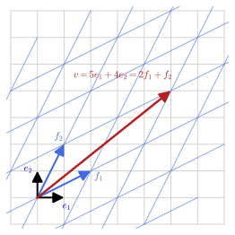
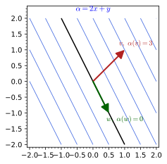
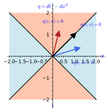
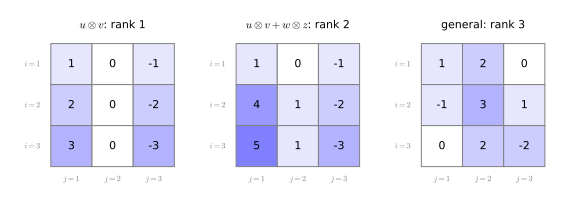

Linear algebra
Linear algebra is the study of vector spaces, the sets in which one can add and rescale, and of the maps between them that respect those two operations. This chapter collects the part of it that geometry and field theory use on every page, in four sections. Vector spaces defines spans, linear independence, bases and dimension, with \mathbb{R}^n, spaces of matrices and spaces of functions as running examples. Linear maps and dual spaces treats linear maps and their matrices, kernels and images, and the linear functionals that make up the dual space, with the dual basis as the bridge between coordinates and functionals. Bilinear forms introduces the rule that assigns a number to two vectors, with the Euclidean dot product and the Minkowski form of special relativity as the two cases that matter most, and defines symmetry, non-degeneracy and signature. Multilinear maps and tensor products generalises to maps of several arguments and to tensors of mixed type, their components and their contractions. Each definition is followed by three examples of increasing complexity and three exercises of increasing difficulty with hidden solutions, and each part closes with propositions that collect its key computations. The reader who knows this material can skim the definitions and try the exercises; the exact conventions for indices and the summation convention are fixed in Prerequisites and conventions.
Vector spaces
A vector space is a set in which vectors can be added and rescaled. The six notions of this section, vector spaces, linear combinations, spans, linear independence, bases and dimension, are the vocabulary in which every later definition is phrased; the two propositions at its end record two dimension counts and the coordinates of one vector in a skewed basis.
Vector spaces
Everything in this chapter rests on two operations, adding two vectors and stretching one by a number, together with the rules those operations obey. The definition below lists the rules once and for all; the picture to keep is that of arrows in the plane, added tip to tail and rescaled along their own line. It also names the subsets that inherit the structure, the subspaces, which is where most of the work will happen.
Definition 1 (Vector space) A real vector space is a set V with an addition v + w and a multiplication \lambda v by real numbers (scalars) that obey the usual rules: addition is commutative and associative with a zero vector 0 and negatives, and \lambda(v + w) = \lambda v + \lambda w, (\lambda + \mu) v = \lambda v + \mu v, (\lambda\mu) v = \lambda(\mu v), 1 v = v. Replacing \mathbb{R} by \mathbb{C} gives a complex vector space. A subset closed under both operations is a subspace.
Veriphy. Test (kernel-checked, 3 instances); script la-rn-axioms-test.sage (rn_axioms).
Lean.
/-- A vector space over a field `K` is a module over `K`; a subspace is a `Submodule K V`. -/
abbrev VectorSpace (K V : Type*) [Field K] [AddCommGroup V]KaluzaKlein.LinearAlgebra.VectorSpaces.VectorSpace in KaluzaKlein/PartI/LinearAlgebra/VectorSpaces.lean, namespace KaluzaKlein.LinearAlgebra.VectorSpaces
/-- `ℝⁿ` is a real vector space: the four scalar-multiplication rules of the definition. -/
theorem rn_axioms (n : ℕ) (a b : ℝ) (v w : Fin n → ℝ) :
a • (v + w) = a • v + a • w ∧ (a + b) • v = a • v + b • v ∧ (a * b) • v = a • b • v ∧ (1 : ℝ) • v = vKaluzaKlein.LinearAlgebra.VectorSpaces.rn_axioms in KaluzaKlein/PartI/LinearAlgebra/VectorSpaces.lean, namespace KaluzaKlein.LinearAlgebra.VectorSpaces
Sage. la-rn-axioms-test.sage (kernel-checked instances): the four scalar rules in ℝⁿ at n = 0, 2, 3 with explicit scalars and vectors, entry by entry.
The first instance is the one every reader already knows: columns of n real numbers, added and rescaled entry by entry. It also shows the subspace test at work in both directions, since a plane through the origin passes it while the unit sphere does not.
Example 1 (\mathbb{R}^n) \mathbb{R}^n, the set of columns (x^1, \dots, x^n), with entrywise addition and scaling, is a vector space; the plane \{x^3 = 0\} is a subspace of \mathbb{R}^3, while the sphere S^2 is not (the sum of two unit vectors is not a unit vector).
Veriphy. Test (kernel-checked, 3 instances); script la-mem-planex3-test.sage (mem_planeX3); Recipe matrix_from_goal, certificate la-matrix.sage (unit_sum_sq_length); Recipe infeasibility, certificate la-infeasible.sage (sphere_not_subspace).
Lean.
theorem mem_planeX3 (v : Fin 3 → ℝ) : v ∈ planeX3 ↔ v 2 = 0KaluzaKlein.LinearAlgebra.VectorSpaces.mem_planeX3 in KaluzaKlein/PartI/LinearAlgebra/VectorSpaces.lean, namespace KaluzaKlein.LinearAlgebra.VectorSpaces
/-- The sum of the unit vectors `e₁` and `e₂` has squared length `2` (rows times their transpose). -/
theorem unit_sum_sq_length :
(!![(1 : ℝ), 0, 0] + !![(0 : ℝ), 1, 0]) * (!![(1 : ℝ), 0, 0] + !![(0 : ℝ), 1, 0])ᵀ = !![(2 : ℝ)]KaluzaKlein.LinearAlgebra.VectorSpaces.unit_sum_sq_length in KaluzaKlein/PartI/LinearAlgebra/VectorSpaces.lean, namespace KaluzaKlein.LinearAlgebra.VectorSpaces
/-- The unit sphere `v · v = 1` is not a subspace (it misses `0`). -/
theorem sphere_not_subspace :
¬ ∃ S : Submodule ℝ (Fin 3 → ℝ), (S : Set (Fin 3 → ℝ)) = {v | v ⬝ᵥ v = 1}KaluzaKlein.LinearAlgebra.VectorSpaces.sphere_not_subspace in KaluzaKlein/PartI/LinearAlgebra/VectorSpaces.lean, namespace KaluzaKlein.LinearAlgebra.VectorSpaces
Sage. la-matrix.sage: Sage reads both sides of the goal as exact matrices (goal.expr), checks that lhs - rhs simplifies to zero, and emits the entrywise norm_num proof (or the closed determinant or trace formula).
la-mem-planex3-test.sage (kernel-checked instances): membership in the plane x³ = 0 at the origin, at a point of the plane and at a point off it.
la-infeasible.sage: Sage refutes the contradictory numeric or polynomial facts left by the hypothesis (a Nullstellensatz or Positivstellensatz certificate from a Gröbner lift or an exact LP), checked by linear_combination.
Vectors need not be columns. Square matrices add and rescale entrywise just as well, and applying the subspace test to antisymmetric matrices on the one hand and to rotation matrices on the other separates a Lie algebra, which is a vector space, from a Lie group, which is not.
Example 2 (Matrices) The n \times n real matrices form a vector space of dimension n^2 under entrywise operations; the antisymmetric matrices A^{\mathsf{T}} = -A form a subspace, the Lie algebra \mathfrak{so}(n) of Lie algebras. The rotation matrices SO(n) do not: the sum of two rotations is not a rotation.
Veriphy. Test (kernel-checked, 4 instances); script la-finrank-matrix-sq-test.sage (finrank_matrix_sq); Test (kernel-checked, 3 instances); script la-antisym-add-smul-test.sage (antisym_add_smul); Recipe matrix_from_goal, certificate la-vs-symmetric-matrices.sage (R1_orthogonal, R2_orthogonal, rot_sum_gram); Recipe infeasibility, certificate la-infeasible.sage (rot_sum_not_orthogonal).
Lean.
/-- The `n × n` real matrices have dimension `n²`. -/
theorem finrank_matrix_sq (n : ℕ) : finrank ℝ (Matrix (Fin n) (Fin n) ℝ) = n ^ 2KaluzaKlein.LinearAlgebra.VectorSpaces.finrank_matrix_sq in KaluzaKlein/PartI/LinearAlgebra/VectorSpaces.lean, namespace KaluzaKlein.LinearAlgebra.VectorSpaces
/-- The antisymmetric matrices are closed under linear combinations: they form a subspace. -/
theorem antisym_add_smul (n : ℕ) (A B : Matrix (Fin n) (Fin n) ℝ) (c : ℝ) (hA : Aᵀ = -A) (hB : Bᵀ = -B) :
(A + c • B)ᵀ = -(A + c • B)KaluzaKlein.LinearAlgebra.VectorSpaces.antisym_add_smul in KaluzaKlein/PartI/LinearAlgebra/VectorSpaces.lean, namespace KaluzaKlein.LinearAlgebra.VectorSpaces
/-- The rotation by `90°` about the third axis is orthogonal. -/
theorem R1_orthogonal :
!![(0 : ℝ), -1, 0; 1, 0, 0; 0, 0, 1]ᵀ * !![(0 : ℝ), -1, 0; 1, 0, 0; 0, 0, 1] = 1KaluzaKlein.LinearAlgebra.VectorSpaces.R1_orthogonal in KaluzaKlein/PartI/LinearAlgebra/VectorSpaces.lean, namespace KaluzaKlein.LinearAlgebra.VectorSpaces
/-- The rotation by `90°` about the first axis is orthogonal. -/
theorem R2_orthogonal :
!![(1 : ℝ), 0, 0; 0, 0, -1; 0, 1, 0]ᵀ * !![(1 : ℝ), 0, 0; 0, 0, -1; 0, 1, 0] = 1KaluzaKlein.LinearAlgebra.VectorSpaces.R2_orthogonal in KaluzaKlein/PartI/LinearAlgebra/VectorSpaces.lean, namespace KaluzaKlein.LinearAlgebra.VectorSpaces
/-- `(R₁ + R₂)ᵀ (R₁ + R₂)`, computed. -/
theorem rot_sum_gram :
(!![(0 : ℝ), -1, 0; 1, 0, 0; 0, 0, 1] + !![(1 : ℝ), 0, 0; 0, 0, -1; 0, 1, 0])ᵀ *
(!![(0 : ℝ), -1, 0; 1, 0, 0; 0, 0, 1] + !![(1 : ℝ), 0, 0; 0, 0, -1; 0, 1, 0]) =
!![(2 : ℝ), -1, -1; -1, 2, 1; -1, 1, 2]KaluzaKlein.LinearAlgebra.VectorSpaces.rot_sum_gram in KaluzaKlein/PartI/LinearAlgebra/VectorSpaces.lean, namespace KaluzaKlein.LinearAlgebra.VectorSpaces
/-- The sum of the two rotations is not a rotation: `(R₁ + R₂)ᵀ (R₁ + R₂) ≠ 1`. -/
theorem rot_sum_not_orthogonal :
(!![(0 : ℝ), -1, 0; 1, 0, 0; 0, 0, 1] + !![(1 : ℝ), 0, 0; 0, 0, -1; 0, 1, 0])ᵀ *
(!![(0 : ℝ), -1, 0; 1, 0, 0; 0, 0, 1] + !![(1 : ℝ), 0, 0; 0, 0, -1; 0, 1, 0]) ≠ 1KaluzaKlein.LinearAlgebra.VectorSpaces.rot_sum_not_orthogonal in KaluzaKlein/PartI/LinearAlgebra/VectorSpaces.lean, namespace KaluzaKlein.LinearAlgebra.VectorSpaces
Sage. The oracle of la-vs-symmetric-matrices.sage reruns the exercise’s Sage solution and asserts its answer; the recipe then reads the goal and emits the proof:
A = matrix(QQ, [[1, 2, 0], [2, 3, 1], [0, 1, 4]]); B = matrix(QQ, [[0, 1, 1], [1, 0, 2], [1, 2, 5]])
assert A.is_symmetric() and B.is_symmetric() and (A + B).is_symmetric() and (3 * A).is_symmetric()
R1 = matrix(QQ, [[0, -1, 0], [1, 0, 0], [0, 0, 1]]); R2 = matrix(QQ, [[1, 0, 0], [0, 0, -1], [0, 1, 0]])
assert R1.transpose() * R1 == 1 and R1.det() == 1 and R2.transpose() * R2 == 1 and R2.det() == 1
assert (R1 + R2).transpose() * (R1 + R2) != 1
print('oracle: (R1 + R2)^T (R1 + R2) =', ((R1 + R2).transpose() * (R1 + R2)).rows())la-finrank-matrix-sq-test.sage (kernel-checked instances): dim of the n × n matrices is n² at n = 0, 1, 2, 3 (finrank of matrices by the product formula).
la-antisym-add-smul-test.sage (kernel-checked instances): A + c B is antisymmetric for antisymmetric A, B, at n = 0, 2, 3 with explicit matrices, entry by entry.
la-infeasible.sage: Sage refutes the contradictory numeric or polynomial facts left by the hypothesis (a Nullstellensatz or Positivstellensatz certificate from a Gröbner lift or an exact LP), checked by linear_combination.
The third instance has no finite list of coordinates at all. Functions on a set are added pointwise, so they form a vector space that is usually infinite-dimensional, and the scalar fields of physics live in such a space; the polynomials of bounded degree sit inside it as a finite-dimensional subspace.
Example 3 (Functions and fields) The real functions on a set X, with (f + g)(x) = f(x) + g(x) and (\lambda f)(x) = \lambda f(x), form a vector space, infinite-dimensional when X is infinite; the polynomials of degree at most 2 form a three-dimensional subspace. A scalar field on spacetime (Scalar fields) is an element of such a function space.
Veriphy. Recipe dimension, certificate la-dim-product.sage (finrank_poly_deg_le_two); Test (kernel-checked, 3 instances); script la-functions-infinite-test.sage (not_finiteDimensional_functions).
Lean.
/-- The polynomials of degree at most `2` form a three-dimensional subspace. -/
theorem finrank_poly_deg_le_two : finrank ℝ (Polynomial.degreeLT ℝ 3) = 3KaluzaKlein.LinearAlgebra.VectorSpaces.finrank_poly_deg_le_two in KaluzaKlein/PartI/LinearAlgebra/VectorSpaces.lean, namespace KaluzaKlein.LinearAlgebra.VectorSpaces
/-- The real functions on an infinite set (here `ℕ`) form an infinite-dimensional space. -/
theorem not_finiteDimensional_functions (X : Type) [Infinite X] : ¬ FiniteDimensional ℝ (X → ℝ)KaluzaKlein.LinearAlgebra.VectorSpaces.not_finiteDimensional_functions in KaluzaKlein/PartI/LinearAlgebra/VectorSpaces.lean, namespace KaluzaKlein.LinearAlgebra.VectorSpaces
Sage. la-dim-product.sage: Sage evaluates the product formula for the dimension; Lean applies mathlib’s finrank formulas for coordinate spaces, matrices, tensor products and duals.
la-functions-infinite-test.sage (kernel-checked instances): the functions on ℕ, ℤ and ℚ are infinite-dimensional: the indicator functions are independent and infinite.
The subspace test, closure under addition and under rescaling, is best learned on sets that fail it for different reasons. Three subsets of \mathbb{R}^3 follow, and the reader should identify a different culprit in each case: a missing zero vector, or a sum that escapes the set.
Exercise 1 (Which subsets are subspaces?) Decide whether the plane x + y + z = 0, the plane x + y + z = 1 and the union of the two coordinate axes are subspaces of \mathbb{R}^3.
The plane x + y + z = 0 is a subspace: sums and multiples of solutions are solutions, and 0 lies in it. The plane x + y + z = 1 is not: it does not contain 0, and the sum of two of its points has coordinate sum 2. The union of the axes is closed under scaling but not under addition: (1, 0, 0) + (0, 1, 0) = (1, 1, 0) lies on neither axis.
Veriphy. Recipe ideal_membership, certificate ideal_membership.sage (plane0_add, plane0_smul, plane1_add); Recipe infeasibility, certificate la-infeasible.sage (plane1_zero_not_mem, axes_union_not_closed); Recipe matrix_from_goal, certificate matrix_from_goal.sage (axes_sum).
Lean.
/-- The plane `x + y + z = 0` as a subspace of `ℝ³`. -/
def planeSum0 : Submodule ℝ (Fin 3 → ℝ) where
carrierKaluzaKlein.LinearAlgebra.VectorSpaces.planeSum0 in KaluzaKlein/PartI/LinearAlgebra/VectorSpaces.lean, namespace KaluzaKlein.LinearAlgebra.VectorSpaces
/-- The plane `x + y + z = 0` is closed under addition. -/
theorem plane0_add (a b c a' b' c' : ℝ) (h : a + b + c = 0) (h' : a' + b' + c' = 0) :
(a + a') + (b + b') + (c + c') = 0KaluzaKlein.LinearAlgebra.VectorSpaces.plane0_add in KaluzaKlein/PartI/LinearAlgebra/VectorSpaces.lean, namespace KaluzaKlein.LinearAlgebra.VectorSpaces
/-- The plane `x + y + z = 0` is closed under scaling. -/
theorem plane0_smul (t a b c : ℝ) (h : a + b + c = 0) : t * a + t * b + t * c = 0KaluzaKlein.LinearAlgebra.VectorSpaces.plane0_smul in KaluzaKlein/PartI/LinearAlgebra/VectorSpaces.lean, namespace KaluzaKlein.LinearAlgebra.VectorSpaces
/-- The plane `x + y + z = 1` misses `0`. -/
theorem plane1_zero_not_mem : ¬ ((0 : Fin 3 → ℝ) ∈ {v : Fin 3 → ℝ | v 0 + v 1 + v 2 = 1})KaluzaKlein.LinearAlgebra.VectorSpaces.plane1_zero_not_mem in KaluzaKlein/PartI/LinearAlgebra/VectorSpaces.lean, namespace KaluzaKlein.LinearAlgebra.VectorSpaces
/-- Two points of the plane `x + y + z = 1` add to a point with coordinate sum `2`. -/
theorem plane1_add (a b c a' b' c' : ℝ) (h : a + b + c = 1) (h' : a' + b' + c' = 1) :
(a + a') + (b + b') + (c + c') = 2KaluzaKlein.LinearAlgebra.VectorSpaces.plane1_add in KaluzaKlein/PartI/LinearAlgebra/VectorSpaces.lean, namespace KaluzaKlein.LinearAlgebra.VectorSpaces
/-- `(1, 0, 0) + (0, 1, 0) = (1, 1, 0)`. -/
theorem axes_sum : !![(1 : ℝ), 0, 0] + !![(0 : ℝ), 1, 0] = !![(1 : ℝ), 1, 0]KaluzaKlein.LinearAlgebra.VectorSpaces.axes_sum in KaluzaKlein/PartI/LinearAlgebra/VectorSpaces.lean, namespace KaluzaKlein.LinearAlgebra.VectorSpaces
/-- `(1, 1, 0)` lies on neither the first nor the second coordinate axis. -/
theorem axes_union_not_closed :
(![1, 1, 0] : Fin 3 → ℝ) ∉ ({v | v 1 = 0 ∧ v 2 = 0} ∪ {v | v 0 = 0 ∧ v 2 = 0} : Set (Fin 3 → ℝ))KaluzaKlein.LinearAlgebra.VectorSpaces.axes_union_not_closed in KaluzaKlein/PartI/LinearAlgebra/VectorSpaces.lean, namespace KaluzaKlein.LinearAlgebra.VectorSpaces
Sage. ideal_membership.sage: Sage writes lhs - rhs as a combination of the hypotheses (goal.poly.lift(...), a Gröbner-basis computation); the cofactors are the coefficients of the emitted linear_combination.
matrix_from_goal.sage: Sage reads both sides of the goal as exact matrices (goal.expr), checks that lhs - rhs is zero, and emits the entrywise norm_num proof (or the closed determinant or trace formula).
la-infeasible.sage: Sage refutes the contradictory numeric or polynomial facts left by the hypothesis (a Nullstellensatz or Positivstellensatz certificate from a Gröbner lift or an exact LP), checked by linear_combination.
The same test can be run in Sage, which becomes useful as soon as the sets are too large to inspect by hand. This time the matrices are symmetric rather than antisymmetric, their subspace has a dimension to be found, and the failure of rotations to add up to a rotation is confirmed numerically.
Exercise 2 (Symmetric matrices and rotations) Show with Sage that the symmetric 3 \times 3 matrices form a subspace of the 3 \times 3 matrices, find its dimension, and check that the sum of two rotation matrices is not a rotation.
(A + B)^{\mathsf{T}} = A^{\mathsf{T}} + B^{\mathsf{T}} = A + B and (\lambda A)^{\mathsf{T}} = \lambda A, so sums and multiples of symmetric matrices are symmetric; the matrices E_{ii} and E_{ij} + E_{ji} (i < j) span the subspace, which has dimension 3 + 3 = 6. Two rotations by 90^\circ about different axes add to a matrix R with R^{\mathsf{T}} R \neq 1:
M = MatrixSpace(QQ, 3, 3)
A = matrix(QQ, [[1, 2, 0], [2, 3, 1], [0, 1, 4]]); B = matrix(QQ, [[0, 1, 1], [1, 0, 2], [1, 2, 5]])
print("A, B symmetric:", A.is_symmetric(), B.is_symmetric(), "; A + B and 3A symmetric:", (A + B).is_symmetric(), (3 * A).is_symmetric())
basis = [m for m in M.basis()]
sym = [m + m.transpose() for m in basis]
S = M.span(sym) if hasattr(M, "span") else None
# the subspace of symmetric matrices, as the span of E_ii and E_ij + E_ji
sym_space = span([vector(QQ, (m + m.transpose()).list()) for m in basis], QQ)
print("dimension of the symmetric 3 x 3 matrices:", sym_space.dimension(), "= 3 * 4 / 2")
R1 = matrix(QQ, [[0, -1, 0], [1, 0, 0], [0, 0, 1]]); R2 = matrix(QQ, [[1, 0, 0], [0, 0, -1], [0, 1, 0]])
print("R1, R2 rotations (R^T R = 1, det 1):", R1.transpose() * R1 == 1 and R1.det() == 1, R2.transpose() * R2 == 1 and R2.det() == 1)
print("R1 + R2 is a rotation:", (R1 + R2).transpose() * (R1 + R2) == 1, " (so SO(3) is not a subspace)")Output:
A, B symmetric: True True ; A + B and 3A symmetric: True True
dimension of the symmetric 3 x 3 matrices: 6 = 3 * 4 / 2
R1, R2 rotations (R^T R = 1, det 1): True True
R1 + R2 is a rotation: False (so SO(3) is not a subspace)Veriphy. Recipe matrix_from_goal, certificate la-vs-symmetric-matrices.sage (sym_example_sum, R1_det, R2_det); Test (kernel-checked, 5 instances); script la-finrank-sym-test.sage (finrank_sym); Recipe sum_induction, certificate la-gauss-sum.sage (gauss_sum_succ); Recipe infeasibility, certificate la-infeasible.sage (rot_sum_not_orthogonal).
Lean.
/-- The symmetric matrices `A`, `B` of the exercise, and their sum, are symmetric. -/
theorem sym_example_sum :
(!![(1 : ℝ), 2, 0; 2, 3, 1; 0, 1, 4] + !![(0 : ℝ), 1, 1; 1, 0, 2; 1, 2, 5])ᵀ =
!![(1 : ℝ), 2, 0; 2, 3, 1; 0, 1, 4] + !![(0 : ℝ), 1, 1; 1, 0, 2; 1, 2, 5]KaluzaKlein.LinearAlgebra.VectorSpaces.sym_example_sum in KaluzaKlein/PartI/LinearAlgebra/VectorSpaces.lean, namespace KaluzaKlein.LinearAlgebra.VectorSpaces
/-- The symmetric `n × n` matrices have dimension `n (n + 1) / 2`. -/
theorem finrank_sym (n : ℕ) : finrank ℝ (symMatrices n) = n * (n + 1) / 2KaluzaKlein.LinearAlgebra.VectorSpaces.finrank_sym in KaluzaKlein/PartI/LinearAlgebra/VectorSpaces.lean, namespace KaluzaKlein.LinearAlgebra.VectorSpaces
/-- `∑_{k < n} (k + 1) = n (n + 1) / 2`, over `ℚ`. -/
theorem gauss_sum_succ (n : ℕ) : ∑ k ∈ Finset.range n, ((k : ℚ) + 1) = (n : ℚ) * ((n : ℚ) + 1) / 2KaluzaKlein.LinearAlgebra.VectorSpaces.gauss_sum_succ in KaluzaKlein/PartI/LinearAlgebra/VectorSpaces.lean, namespace KaluzaKlein.LinearAlgebra.VectorSpaces
theorem R1_det : Matrix.det !![(0 : ℝ), -1, 0; 1, 0, 0; 0, 0, 1] = 1KaluzaKlein.LinearAlgebra.VectorSpaces.R1_det in KaluzaKlein/PartI/LinearAlgebra/VectorSpaces.lean, namespace KaluzaKlein.LinearAlgebra.VectorSpaces
theorem R2_det : Matrix.det !![(1 : ℝ), 0, 0; 0, 0, -1; 0, 1, 0] = 1KaluzaKlein.LinearAlgebra.VectorSpaces.R2_det in KaluzaKlein/PartI/LinearAlgebra/VectorSpaces.lean, namespace KaluzaKlein.LinearAlgebra.VectorSpaces
/-- The sum of the two rotations is not a rotation: `(R₁ + R₂)ᵀ (R₁ + R₂) ≠ 1`. -/
theorem rot_sum_not_orthogonal :
(!![(0 : ℝ), -1, 0; 1, 0, 0; 0, 0, 1] + !![(1 : ℝ), 0, 0; 0, 0, -1; 0, 1, 0])ᵀ *
(!![(0 : ℝ), -1, 0; 1, 0, 0; 0, 0, 1] + !![(1 : ℝ), 0, 0; 0, 0, -1; 0, 1, 0]) ≠ 1KaluzaKlein.LinearAlgebra.VectorSpaces.rot_sum_not_orthogonal in KaluzaKlein/PartI/LinearAlgebra/VectorSpaces.lean, namespace KaluzaKlein.LinearAlgebra.VectorSpaces
Sage. The oracle of la-vs-symmetric-matrices.sage reruns the exercise’s Sage solution and asserts its answer; the recipe then reads the goal and emits the proof:
A = matrix(QQ, [[1, 2, 0], [2, 3, 1], [0, 1, 4]]); B = matrix(QQ, [[0, 1, 1], [1, 0, 2], [1, 2, 5]])
assert A.is_symmetric() and B.is_symmetric() and (A + B).is_symmetric() and (3 * A).is_symmetric()
R1 = matrix(QQ, [[0, -1, 0], [1, 0, 0], [0, 0, 1]]); R2 = matrix(QQ, [[1, 0, 0], [0, 0, -1], [0, 1, 0]])
assert R1.transpose() * R1 == 1 and R1.det() == 1 and R2.transpose() * R2 == 1 and R2.det() == 1
assert (R1 + R2).transpose() * (R1 + R2) != 1
print('oracle: (R1 + R2)^T (R1 + R2) =', ((R1 + R2).transpose() * (R1 + R2)).rows())The oracle of la-gauss-sum.sage reruns the exercise’s Sage solution and asserts its answer; the recipe then reads the goal and emits the proof:
if goal.expr is not None:
assert bool(goal.expr.simplify_full() == 0), f'the closed form is wrong: lhs - rhs = {goal.expr.simplify_full()}'la-finrank-sym-test.sage (kernel-checked instances): dim Sym(n) = n(n+1)/2 at n = 0, 1, 2, 3, 4: the dimension of the upper-triangular coordinates, counted by evaluation.
la-infeasible.sage: Sage refutes the contradictory numeric or polynomial facts left by the hypothesis (a Nullstellensatz or Positivstellensatz certificate from a Gröbner lift or an exact LP), checked by linear_combination.
Function spaces are checked in the same way, with pointwise operations in place of entrywise ones. The point of the last exercise in this group is the difference between a bound on the degree, which gives a subspace, and an exact degree, which does not; the same distinction appears whenever an expansion is truncated.
Exercise 3 (Polynomials of bounded degree) Show that the polynomials of degree at most 2 form a subspace of the functions on \mathbb{R}, and that the polynomials of degree exactly 2 do not.
(a + bx + cx^2) + (a' + b'x + c'x^2) = (a + a') + (b + b')x + (c + c')x^2 and \lambda(a + bx + cx^2) = \lambda a + \lambda b x + \lambda c x^2 have degree at most 2, and the zero polynomial is included. The polynomials of degree exactly 2 miss the zero polynomial, and x^2 + (-x^2 + x) = x has degree 1: the set is closed under neither operation.
Veriphy. Test (kernel-checked, 3 instances); script la-deg-le-two-closed-test.sage (deg_le_two_closed); Recipe ideal_membership, certificate la-polynomial.sage (deg_two_sum_natDegree); Test (kernel-checked, 4 instances); script la-zero-degree-ne-test.sage (zero_degree_ne).
Lean.
/-- The polynomials of degree at most `2` are closed under addition and scaling (a `Submodule`). -/
theorem deg_le_two_closed (p q : Polynomial ℝ) (t : ℝ) (hp : p ∈ Polynomial.degreeLT ℝ 3)
(hq : q ∈ Polynomial.degreeLT ℝ 3) : p + q ∈ Polynomial.degreeLT ℝ 3 ∧ t • p ∈ Polynomial.degreeLT ℝ 3KaluzaKlein.LinearAlgebra.VectorSpaces.deg_le_two_closed in KaluzaKlein/PartI/LinearAlgebra/VectorSpaces.lean, namespace KaluzaKlein.LinearAlgebra.VectorSpaces
theorem deg_two_sum_natDegree : ((Polynomial.X ^ 2 : Polynomial ℝ) + (-Polynomial.X ^ 2 + Polynomial.X)).natDegree = 1KaluzaKlein.LinearAlgebra.VectorSpaces.deg_two_sum_natDegree in KaluzaKlein/PartI/LinearAlgebra/VectorSpaces.lean, namespace KaluzaKlein.LinearAlgebra.VectorSpaces
/-- The zero polynomial has no degree `n` (its degree is `⊥`). -/
theorem zero_degree_ne (n : ℕ) : (0 : Polynomial ℝ).degree ≠ nKaluzaKlein.LinearAlgebra.VectorSpaces.zero_degree_ne in KaluzaKlein/PartI/LinearAlgebra/VectorSpaces.lean, namespace KaluzaKlein.LinearAlgebra.VectorSpaces
Sage. la-deg-le-two-closed-test.sage (kernel-checked instances): sums and multiples of polynomials of degree at most 2 stay of degree at most 2, at explicit polynomials.
la-polynomial.sage: Sage expands lhs - rhs in the polynomial ring (Polynomial.X as the generator) and checks that it is the zero polynomial.
la-zero-degree-ne-test.sage (kernel-checked instances): the zero polynomial has degree ⊥, not n, at n = 0, 1, 2, 3.
Linear combinations
With addition and rescaling available, the simplest object one can build from a finite family of vectors is a weighted sum of them. The definition that follows names this operation and fixes the index convention, upper indices on coefficients and lower indices on vectors, on which every later formula relies.
Definition 2 (Linear combination) A linear combination of vectors v_1, \dots, v_k is a vector \lambda^1 v_1 + \dots + \lambda^k v_k with real coefficients \lambda^i. Repeated upper and lower indices are summed, \lambda^i v_i (the summation convention of Prerequisites and conventions).
Veriphy. Recipe matrix_from_goal, certificate la-matrix.sage (combination_r3); Recipe matrix_from_goal, certificate la-matrix-named.sage (linComb_example).
Lean.
/-- The linear combination `λ^i v_i` of a finite family (mathlib's `Fintype.linearCombination`). -/
noncomputable abbrev linComb {ι V : Type*} [Fintype ι] [AddCommGroup V] [Module ℝ V] (v : ι → V) (c : ι → ℝ) : VKaluzaKlein.LinearAlgebra.LinearCombinations.linComb in KaluzaKlein/PartI/LinearAlgebra/LinearCombinations.lean, namespace KaluzaKlein.LinearAlgebra.LinearCombinations
/-- The running example: `1 · (1, 2, 0) + 1 · (0, 1, 1) = (1, 3, 1)`. -/
theorem combination_r3 : (1 : ℝ) • !![(1 : ℝ), 2, 0] + (1 : ℝ) • !![(0 : ℝ), 1, 1] = !![(1 : ℝ), 3, 1]KaluzaKlein.LinearAlgebra.LinearCombinations.combination_r3 in KaluzaKlein/PartI/LinearAlgebra/LinearCombinations.lean, namespace KaluzaKlein.LinearAlgebra.LinearCombinations
/-- The same combination through the definition. -/
theorem linComb_example : linComb ![(![1, 2, 0] : Fin 3 → ℝ), ![0, 1, 1]] ![1, 1] = ![1, 3, 1]KaluzaKlein.LinearAlgebra.LinearCombinations.linComb_example in KaluzaKlein/PartI/LinearAlgebra/LinearCombinations.lean, namespace KaluzaKlein.LinearAlgebra.LinearCombinations
Sage. la-matrix.sage: Sage reads both sides of the goal as exact matrices (goal.expr), checks that lhs - rhs simplifies to zero, and emits the entrywise norm_num proof (or the closed determinant or trace formula).
la-matrix-named.sage: Sage reads both sides of the goal as exact matrices or vectors (named matrices through their literal definitions) and checks that lhs - rhs is zero; Lean checks it entry by entry.
In coordinates a weighted sum is a sum of rescaled columns, and the standard basis vectors show that every column is such a sum. The first example records one explicit combination of three-component columns; the same three vectors return throughout the chapter as a running case.
Example 4 (In \mathbb{R}^3) (1, 3, 1) = 1\cdot(1, 2, 0) + 1\cdot(0, 1, 1) is a linear combination of (1, 2, 0) and (0, 1, 1); every vector (x, y, z) is the combination x e_1 + y e_2 + z e_3 of the standard basis vectors.
Veriphy. Recipe matrix_from_goal, certificate la-matrix.sage (combination_r3, standard_combination).
Lean.
/-- The running example: `1 · (1, 2, 0) + 1 · (0, 1, 1) = (1, 3, 1)`. -/
theorem combination_r3 : (1 : ℝ) • !![(1 : ℝ), 2, 0] + (1 : ℝ) • !![(0 : ℝ), 1, 1] = !![(1 : ℝ), 3, 1]KaluzaKlein.LinearAlgebra.LinearCombinations.combination_r3 in KaluzaKlein/PartI/LinearAlgebra/LinearCombinations.lean, namespace KaluzaKlein.LinearAlgebra.LinearCombinations
/-- Every `(x, y, z)` is `x e₁ + y e₂ + z e₃`. -/
theorem standard_combination (x y z : ℝ) :
x • !![(1 : ℝ), 0, 0] + y • !![(0 : ℝ), 1, 0] + z • !![(0 : ℝ), 0, 1] = !![x, y, z]KaluzaKlein.LinearAlgebra.LinearCombinations.standard_combination in KaluzaKlein/PartI/LinearAlgebra/LinearCombinations.lean, namespace KaluzaKlein.LinearAlgebra.LinearCombinations
Sage. la-matrix.sage: Sage reads both sides of the goal as exact matrices (goal.expr), checks that lhs - rhs simplifies to zero, and emits the entrywise norm_num proof (or the closed determinant or trace formula).
The same operation applied to the three generators of rotations produces every antisymmetric 3 \times 3 matrix. This is the first appearance of the pattern “general element equals weighted sum of generators” that the notion of span will make precise in the next section.
Example 5 (Antisymmetric matrices) a L_1 + b L_2 + c L_3, with the three generators L_a of Lie algebras and real a, b, c, is a linear combination; it is the general antisymmetric 3 \times 3 matrix.
Veriphy. Recipe matrix_from_goal, certificate la-matrix.sage (so3_combination_literal, so3_combination_antisymm); Test (kernel-checked, 4 instances); script la-antisym-eq-combination-test.sage (antisym_eq_combination).
Lean.
/-- `a L₁ + b L₂ + c L₃` in components. -/
theorem so3_combination_literal (a b c : ℝ) :
a • !![(0 : ℝ), 0, 0; 0, 0, -1; 0, 1, 0] + b • !![(0 : ℝ), 0, 1; 0, 0, 0; -1, 0, 0] +
c • !![(0 : ℝ), -1, 0; 1, 0, 0; 0, 0, 0] = !![0, -c, b; c, 0, -a; -b, a, 0]KaluzaKlein.LinearAlgebra.LinearCombinations.so3_combination_literal in KaluzaKlein/PartI/LinearAlgebra/LinearCombinations.lean, namespace KaluzaKlein.LinearAlgebra.LinearCombinations
/-- The combination is antisymmetric. -/
theorem so3_combination_antisymm (a b c : ℝ) :
(!![(0 : ℝ), -c, b; c, 0, -a; -b, a, 0])ᵀ = -!![(0 : ℝ), -c, b; c, 0, -a; -b, a, 0]KaluzaKlein.LinearAlgebra.LinearCombinations.so3_combination_antisymm in KaluzaKlein/PartI/LinearAlgebra/LinearCombinations.lean, namespace KaluzaKlein.LinearAlgebra.LinearCombinations
/-- Every antisymmetric `3 × 3` matrix is `X₃₂ L₁ + X₁₃ L₂ + X₂₁ L₃`. -/
theorem antisym_eq_combination (X : Matrix (Fin 3) (Fin 3) ℝ) (hX : Xᵀ = -X) :
X = X 2 1 • L1 + X 0 2 • L2 + X 1 0 • L3KaluzaKlein.LinearAlgebra.LinearCombinations.antisym_eq_combination in KaluzaKlein/PartI/LinearAlgebra/LinearCombinations.lean, namespace KaluzaKlein.LinearAlgebra.LinearCombinations
Sage. la-matrix.sage: Sage reads both sides of the goal as exact matrices (goal.expr), checks that lhs - rhs simplifies to zero, and emits the entrywise norm_num proof (or the closed determinant or trace formula).
la-antisym-eq-combination-test.sage (kernel-checked instances): X = X₃₂ L₁ + X₁₃ L₂ + X₂₁ L₃ for explicit antisymmetric X (zero, the exercise’s matrix, L₁), entry by entry.
Functions can be combined with coefficients exactly as columns can. Fourier series, sums of cosines and sines with numerical coefficients, are the most important instance for physics, and they show that the candidate vectors may be infinitely many as long as only finitely many coefficients are non-zero.
Example 6 (Fourier modes) a\cos\varphi + b\sin\varphi is a linear combination of the two functions \cos\varphi and \sin\varphi; a finite Fourier series \sum_n (a_n \cos n\varphi + b_n \sin n\varphi) is a linear combination of modes.
Veriphy. Test (kernel-checked, 4 instances); script la-fourier-combination-test.sage (fourier_combination).
Lean.
/-- `a cos φ + b sin φ` is the linear combination `a • cos + b • sin` of the two functions. -/
theorem fourier_combination (a b : ℝ) :
(fun φ => a * Real.cos φ + b * Real.sin φ) = a • Real.cos + b • Real.sinKaluzaKlein.LinearAlgebra.LinearCombinations.fourier_combination in KaluzaKlein/PartI/LinearAlgebra/LinearCombinations.lean, namespace KaluzaKlein.LinearAlgebra.LinearCombinations
Sage. la-fourier-combination-test.sage (kernel-checked instances): a cos φ + b sin φ is the combination a • cos + b • sin, at seeded scalars (zero and one among them).
Given a target vector and a family, the coefficients are the unknowns of a linear system with as many equations as there are coordinates. The first exercise asks the reader to solve such a system by hand and then to recognise it in Sage as a matrix equation whose columns are the given vectors.
Exercise 4 (Finding the coefficients) Write w = (4, 7, 2) as a linear combination of v_1 = (1, 2, 0), v_2 = (0, 1, 1) and v_4 = (0, 0, 1).
The coefficients solve the linear system \lambda^1 = 4, 2\lambda^1 + \lambda^2 = 7, \lambda^2 + \lambda^4 = 2, so \lambda = (4, -1, 3); in Sage the system is the matrix with columns v_1, v_2, v_4:
v1, v2, v4 = vector(QQ, [1, 2, 0]), vector(QQ, [0, 1, 1]), vector(QQ, [0, 0, 1])
w = vector(QQ, [4, 7, 2])
C = matrix(QQ, [v1, v2, v4]).transpose() # columns v1, v2, v4
lam = C.solve_right(w)
print("coefficients (lambda^1, lambda^2, lambda^4) =", lam)
print("check:", lam[0] * v1 + lam[1] * v2 + lam[2] * v4 == w)Output:
coefficients (lambda^1, lambda^2, lambda^4) = (4, -1, 3)
check: TrueVeriphy. Recipe witness, certificate la-combination-solve.sage (combination_solve_exists); Recipe ideal_membership, certificate ideal_membership.sage (combination_solve_unique); Recipe matrix_from_goal, certificate la-matrix.sage (combination_solve_check).
Lean.
/-- Coefficients exist: `λ¹ v₁ + λ² v₂ + λ⁴ v₄ = (4, 7, 2)` componentwise. -/
theorem combination_solve_exists : ∃ l1 l2 l4 : ℚ,
l1 * 1 + l2 * 0 + l4 * 0 = 4 ∧ l1 * 2 + l2 * 1 + l4 * 0 = 7 ∧ l1 * 0 + l2 * 1 + l4 * 1 = 2KaluzaKlein.LinearAlgebra.LinearCombinations.combination_solve_exists in KaluzaKlein/PartI/LinearAlgebra/LinearCombinations.lean, namespace KaluzaKlein.LinearAlgebra.LinearCombinations
/-- The coefficients are forced: `λ = (4, -1, 3)`. -/
theorem combination_solve_unique (l1 l2 l4 : ℚ) (h1 : l1 = 4) (h2 : 2 * l1 + l2 = 7) (h3 : l2 + l4 = 2) :
l1 = 4 ∧ l2 = -1 ∧ l4 = 3KaluzaKlein.LinearAlgebra.LinearCombinations.combination_solve_unique in KaluzaKlein/PartI/LinearAlgebra/LinearCombinations.lean, namespace KaluzaKlein.LinearAlgebra.LinearCombinations
/-- `4 v₁ - v₂ + 3 v₄ = (4, 7, 2)`. -/
theorem combination_solve_check :
(4 : ℚ) • !![(1 : ℚ), 2, 0] + (-1 : ℚ) • !![(0 : ℚ), 1, 1] + (3 : ℚ) • !![(0 : ℚ), 0, 1] = !![(4 : ℚ), 7, 2]KaluzaKlein.LinearAlgebra.LinearCombinations.combination_solve_check in KaluzaKlein/PartI/LinearAlgebra/LinearCombinations.lean, namespace KaluzaKlein.LinearAlgebra.LinearCombinations
Sage. The oracle of la-combination-solve.sage reruns the exercise’s Sage solution and asserts its answer; the recipe then reads the goal and emits the proof:
v1, v2, v4 = vector(QQ, [1, 2, 0]), vector(QQ, [0, 1, 1]), vector(QQ, [0, 0, 1])
ORACLE = list(matrix(QQ, [v1, v2, v4]).transpose().solve_right(vector(QQ, [4, 7, 2])))
print('oracle: coefficients', ORACLE)ideal_membership.sage: Sage writes lhs - rhs as a combination of the hypotheses (goal.poly.lift(...), a Gröbner-basis computation); the cofactors are the coefficients of the emitted linear_combination.
la-matrix.sage: Sage reads both sides of the goal as exact matrices (goal.expr), checks that lhs - rhs simplifies to zero, and emits the entrywise norm_num proof (or the closed determinant or trace formula).
For functions the same question is not a system of equations but an identity to be recognised. Here the double-angle and triple-angle formulas of trigonometry are reread as statements that a power of a cosine or sine is a weighted sum of a few Fourier modes.
Exercise 5 (A trigonometric identity as a combination) Write \cos^2\varphi as a linear combination of the functions 1 and \cos 2\varphi, and \sin^3\varphi as a combination of \sin\varphi and \sin 3\varphi.
From \cos 2\varphi = 2\cos^2\varphi - 1, \cos^2\varphi = \tfrac12 \cdot 1 + \tfrac12 \cos 2\varphi. From \sin 3\varphi = 3\sin\varphi - 4\sin^3\varphi, \sin^3\varphi = \tfrac34 \sin\varphi - \tfrac14 \sin 3\varphi. Every polynomial in \cos\varphi and \sin\varphi is a linear combination of modes in this way.
Veriphy. Recipe transcendental_rewrite, certificate la-trig-cos-sq.sage (cos_sq_combination); Recipe transcendental_rewrite, certificate la-trig-sin-cube.sage (sin_cube_combination).
Lean.
/-- `cos² φ = ½ · 1 + ½ cos 2φ`. -/
theorem cos_sq_combination (x : ℝ) : Real.cos x ^ 2 = 1 / 2 + 1 / 2 * Real.cos (2 * x)KaluzaKlein.LinearAlgebra.LinearCombinations.cos_sq_combination in KaluzaKlein/PartI/LinearAlgebra/LinearCombinations.lean, namespace KaluzaKlein.LinearAlgebra.LinearCombinations
/-- `sin³ φ = ¾ sin φ - ¼ sin 3φ`. -/
theorem sin_cube_combination (x : ℝ) : Real.sin x ^ 3 = 3 / 4 * Real.sin x - 1 / 4 * Real.sin (3 * x)KaluzaKlein.LinearAlgebra.LinearCombinations.sin_cube_combination in KaluzaKlein/PartI/LinearAlgebra/LinearCombinations.lean, namespace KaluzaKlein.LinearAlgebra.LinearCombinations
Sage. la-trig-cos-sq.sage: Sage confirms \cos^2 x - \tfrac12 - \tfrac12\cos 2x = 0 (simplify_trig) before the rewrite by Real.cos_sq is emitted.
la-trig-sin-cube.sage: Sage confirms \sin^3 x - \tfrac34 \sin x + \tfrac14 \sin 3x = 0 (expand_trig) before the rewrite by Real.sin_three_mul is emitted.
For antisymmetric matrices the coefficients can be read off directly, because each generator occupies its own pair of entries. The task is to extract the three coefficients of a given matrix while keeping track of the sign convention (L_a)_{bc} = -\epsilon_{abc}, which is easy to get backwards.
Exercise 6 (Reading off the coefficients of an antisymmetric matrix) Write the antisymmetric matrix with entries X_{12} = -5, X_{13} = 2, X_{23} = -7 as a L_1 + b L_2 + c L_3.
With (L_a)_{bc} = -\epsilon_{abc}, the matrix a L_1 + b L_2 + c L_3 has X_{32} = a, X_{13} = b, X_{21} = c, so (a, b, c) = (7, 2, 5):
L1 = matrix(QQ, [[0, 0, 0], [0, 0, -1], [0, 1, 0]])
L2 = matrix(QQ, [[0, 0, 1], [0, 0, 0], [-1, 0, 0]])
L3 = matrix(QQ, [[0, -1, 0], [1, 0, 0], [0, 0, 0]])
X = matrix(QQ, [[0, -5, 2], [5, 0, -7], [-2, 7, 0]])
print("X antisymmetric:", X.transpose() == -X)
a, b, c = X[2, 1], X[0, 2], X[1, 0]
print("coefficients (a, b, c) = (X_32, X_13, X_21) =", (a, b, c), "; a L1 + b L2 + c L3 == X:", a * L1 + b * L2 + c * L3 == X)Output:
X antisymmetric: True
coefficients (a, b, c) = (X_32, X_13, X_21) = (7, 2, 5) ; a L1 + b L2 + c L3 == X: TrueVeriphy. Recipe matrix_from_goal, certificate la-combination-so3.sage (combination_so3_literal).
Lean.
/-- The antisymmetric matrix with `X₁₂ = -5`, `X₁₃ = 2`, `X₂₃ = -7` is `7 L₁ + 2 L₂ + 5 L₃`. -/
theorem combination_so3_literal :
(7 : ℝ) • !![(0 : ℝ), 0, 0; 0, 0, -1; 0, 1, 0] + (2 : ℝ) • !![(0 : ℝ), 0, 1; 0, 0, 0; -1, 0, 0] +
(5 : ℝ) • !![(0 : ℝ), -1, 0; 1, 0, 0; 0, 0, 0] = !![(0 : ℝ), -5, 2; 5, 0, -7; -2, 7, 0]KaluzaKlein.LinearAlgebra.LinearCombinations.combination_so3_literal in KaluzaKlein/PartI/LinearAlgebra/LinearCombinations.lean, namespace KaluzaKlein.LinearAlgebra.LinearCombinations
Sage. The oracle of la-combination-so3.sage reruns the exercise’s Sage solution and asserts its answer; the recipe then reads the goal and emits the proof:
L1 = matrix(QQ, [[0, 0, 0], [0, 0, -1], [0, 1, 0]]); L2 = matrix(QQ, [[0, 0, 1], [0, 0, 0], [-1, 0, 0]])
L3 = matrix(QQ, [[0, -1, 0], [1, 0, 0], [0, 0, 0]]); X = matrix(QQ, [[0, -5, 2], [5, 0, -7], [-2, 7, 0]])
assert X.transpose() == -X and X[2, 1] * L1 + X[0, 2] * L2 + X[1, 0] * L3 == X
print('oracle: (a, b, c) =', (X[2, 1], X[0, 2], X[1, 0]))Spans
Taking all weighted sums of a family at once produces a set, and this set is itself a subspace, the smallest one containing the family. The following definition gives it a name; the picture is a line or a plane through the origin swept out by the vectors drawn in it.
Definition 3 (Span) The span of v_1, \dots, v_k is the set of all their linear combinations. It is a subspace, the smallest one containing them.
Veriphy. Recipe witness, certificate witness.sage (v3_combination_coefficients); Recipe independence, certificate la-span-member.sage (v3_mem_spanOf).
Lean.
/-- The span of a family, mathlib's `Submodule.span` of its range. -/
abbrev spanOf {ι V : Type*} [AddCommGroup V] [Module ℚ V] (v : ι → V) : Submodule ℚ VKaluzaKlein.LinearAlgebra.Spans.spanOf in KaluzaKlein/PartI/LinearAlgebra/Spans.lean, namespace KaluzaKlein.LinearAlgebra.Spans
/-- `v₃` is a linear combination of `v₁` and `v₂`: coefficients exist solving the three component equations
(Veriphy `witness` recipe finds `a = b = 1`). -/
theorem v3_combination_coefficients :
∃ a b : ℚ, a * 1 + b * 0 = 1 ∧ a * 2 + b * 1 = 3 ∧ a * 0 + b * 1 = 1KaluzaKlein.Linear.v3_combination_coefficients in KaluzaKlein/Foundations/Linear.lean, namespace KaluzaKlein.Linear
/-- The running example: `v₃ = (1, 3, 1)` lies in the span of `v₁, v₂` (`KaluzaKlein.Linear.v3_mem_span`). -/
theorem v3_mem_spanOf : KaluzaKlein.Linear.v3 ∈ spanOf ![KaluzaKlein.Linear.v1, KaluzaKlein.Linear.v2]KaluzaKlein.LinearAlgebra.Spans.v3_mem_spanOf in KaluzaKlein/PartI/LinearAlgebra/Spans.lean, namespace KaluzaKlein.LinearAlgebra.Spans
Sage. witness.sage: Sage solves the linear system read off the goal exactly over \mathbb{Q} (solve_right) and emits the solution as the witness, which norm_num checks.
la-span-member.sage: Sage solves for the coordinates of the vector in the spanning family; Lean checks the combination entry by entry.
Two vectors of \mathbb{R}^3 that are not aligned sweep out a plane. The first example records which plane the running vectors v_1 and v_2 generate and observes that adding their sum to the family changes nothing, a first hint of the notion of dependence.
Example 7 (A plane in \mathbb{R}^3) The span of v_1 = (1, 2, 0) and v_2 = (0, 1, 1) is a plane through the origin; v_3 = (1, 3, 1) = v_1 + v_2 lies in it, so adding v_3 does not enlarge the span (Exercise 16).
Veriphy. Recipe ideal_membership, certificate ideal_membership.sage (v12_independent_coefficients); Recipe dimension, certificate la-dim-span.sage (finrank_span_v12); Recipe witness, certificate witness.sage (v3_combination_coefficients); Recipe independence, certificate la-span-eq.sage (span_v123_eq).
Lean.
/-- A vanishing combination of `v₁, v₂` has zero coefficients (`a = 0`, `2a + b = 0`, `b = 0`). -/
theorem v12_independent_coefficients (a b : ℚ) (h1 : a = 0) (h2 : 2 * a + b = 0) (h3 : b = 0) : a = 0 ∧ b = 0KaluzaKlein.LinearAlgebra.Spans.v12_independent_coefficients in KaluzaKlein/PartI/LinearAlgebra/Spans.lean, namespace KaluzaKlein.LinearAlgebra.Spans
/-- The span of `v₁, v₂` is a plane: dimension `2`. -/
theorem finrank_span_v12 : finrank ℚ (spanOf ![KaluzaKlein.Linear.v1, KaluzaKlein.Linear.v2]) = 2KaluzaKlein.LinearAlgebra.Spans.finrank_span_v12 in KaluzaKlein/PartI/LinearAlgebra/Spans.lean, namespace KaluzaKlein.LinearAlgebra.Spans
/-- `v₃` is a linear combination of `v₁` and `v₂`: coefficients exist solving the three component equations
(Veriphy `witness` recipe finds `a = b = 1`). -/
theorem v3_combination_coefficients :
∃ a b : ℚ, a * 1 + b * 0 = 1 ∧ a * 2 + b * 1 = 3 ∧ a * 0 + b * 1 = 1KaluzaKlein.Linear.v3_combination_coefficients in KaluzaKlein/Foundations/Linear.lean, namespace KaluzaKlein.Linear
/-- Adding `v₃` does not enlarge the span. -/
theorem span_v123_eq : spanOf ![KaluzaKlein.Linear.v1, KaluzaKlein.Linear.v2, KaluzaKlein.Linear.v3] =
spanOf ![KaluzaKlein.Linear.v1, KaluzaKlein.Linear.v2]KaluzaKlein.LinearAlgebra.Spans.span_v123_eq in KaluzaKlein/PartI/LinearAlgebra/Spans.lean, namespace KaluzaKlein.LinearAlgebra.Spans
Sage. ideal_membership.sage: Sage writes lhs - rhs as a combination of the hypotheses (goal.poly.lift(...), a Gröbner-basis computation); the cofactors are the coefficients of the emitted linear_combination.
witness.sage: Sage solves the linear system read off the goal exactly over \mathbb{Q} (solve_right) and emits the solution as the witness, which norm_num checks.
la-dim-span.sage: Sage computes the rank of the family and an echelon basis of its span; Lean rewrites the span to that basis and checks independence by a minor.
la-span-eq.sage: Sage finds the coordinates of every generator of each side in the other family; Lean checks both inclusions.
The matrix example of the previous section can now be rephrased: the whole Lie algebra \mathfrak{so}(3) is the span of three matrices. This is how a Lie algebra is usually presented, by a finite list of generators whose weighted sums exhaust it.
Example 8 (Antisymmetric matrices) Every antisymmetric 3 \times 3 matrix is a linear combination a L_1 + b L_2 + c L_3 of the three generators L_a of Lie algebras, so \mathfrak{so}(3) is the span of L_1, L_2, L_3.
Veriphy. Recipe matrix_from_goal, certificate la-matrix.sage (L1_antisymm, L2_antisymm, L3_antisymm); Recipe independence, certificate la-span-so3.sage (so3_eq_span).
Lean.
theorem L1_antisymm : (!![(0 : ℝ), 0, 0; 0, 0, -1; 0, 1, 0])ᵀ = -!![(0 : ℝ), 0, 0; 0, 0, -1; 0, 1, 0]KaluzaKlein.LinearAlgebra.Spans.L1_antisymm in KaluzaKlein/PartI/LinearAlgebra/Spans.lean, namespace KaluzaKlein.LinearAlgebra.Spans
theorem L2_antisymm : (!![(0 : ℝ), 0, 1; 0, 0, 0; -1, 0, 0])ᵀ = -!![(0 : ℝ), 0, 1; 0, 0, 0; -1, 0, 0]KaluzaKlein.LinearAlgebra.Spans.L2_antisymm in KaluzaKlein/PartI/LinearAlgebra/Spans.lean, namespace KaluzaKlein.LinearAlgebra.Spans
theorem L3_antisymm : (!![(0 : ℝ), -1, 0; 1, 0, 0; 0, 0, 0])ᵀ = -!![(0 : ℝ), -1, 0; 1, 0, 0; 0, 0, 0]KaluzaKlein.LinearAlgebra.Spans.L3_antisymm in KaluzaKlein/PartI/LinearAlgebra/Spans.lean, namespace KaluzaKlein.LinearAlgebra.Spans
/-- `𝔰𝔬(3)` is the span of `L₁, L₂, L₃`. -/
theorem so3_eq_span : antisymMatrices 3 = Submodule.span ℝ (Set.range ![L1, L2, L3])KaluzaKlein.LinearAlgebra.Spans.so3_eq_span in KaluzaKlein/PartI/LinearAlgebra/Spans.lean, namespace KaluzaKlein.LinearAlgebra.Spans
Sage. la-matrix.sage: Sage reads both sides of the goal as exact matrices (goal.expr), checks that lhs - rhs simplifies to zero, and emits the entrywise norm_num proof (or the closed determinant or trace formula).
la-span-so3.sage: Sage flattens L_1, L_2, L_3 to vectors of \mathbb{R}^9, checks that they span the kernel of A \mapsto A^{\mathsf T} + A, and reads the coordinates of a kernel element off a minor.
For functions the span of finitely many modes is finite-dimensional, while the span of all of them is not. Both cases are shown on the circle, and they prepare the count of modes carried out in the section on dimension.
Example 9 (Fourier modes) The span of \cos\varphi and \sin\varphi in the functions on the circle is the two-dimensional space of first Fourier modes a\cos\varphi + b\sin\varphi; the span of all \cos n\varphi, \sin n\varphi is the infinite-dimensional space of finite Fourier series.
Veriphy. Recipe ideal_membership, certificate ideal_membership.sage (cos_sin_coefficients); Recipe independence, certificate la-independence-eval.sage (finrank_span_cos_sin); Test (kernel-checked, 3 instances); script la-mem-span-cos-sin-test.sage (mem_span_cos_sin); Test (kernel-checked, 4 instances); script la-fourier-truncation-test.sage (fourierModes_truncation_linearIndependent); Test (kernel-checked, 4 instances); script la-fourier-span-finrank-test.sage (fourier_span_finrank_ne).
Lean.
/-- A vanishing `a cos + b sin` has `a = b = 0` (values at `0` and `π/2`). -/
theorem cos_sin_coefficients (a b : ℝ) (h0 : a * 1 + b * 0 = 0) (h1 : a * 0 + b * 1 = 0) : a = 0 ∧ b = 0KaluzaKlein.LinearAlgebra.Spans.cos_sin_coefficients in KaluzaKlein/PartI/LinearAlgebra/Spans.lean, namespace KaluzaKlein.LinearAlgebra.Spans
/-- The span of `cos, sin` is two-dimensional. -/
theorem finrank_span_cos_sin : finrank ℝ (Submodule.span ℝ (Set.range ![Real.cos, Real.sin])) = 2KaluzaKlein.LinearAlgebra.Spans.finrank_span_cos_sin in KaluzaKlein/PartI/LinearAlgebra/Spans.lean, namespace KaluzaKlein.LinearAlgebra.Spans
/-- Its elements are the first Fourier modes `a cos φ + b sin φ`. -/
theorem mem_span_cos_sin (f : ℝ → ℝ) :
f ∈ Submodule.span ℝ (Set.range ![Real.cos, Real.sin]) ↔ ∃ a b : ℝ, f = fun φ => a * Real.cos φ + b * Real.sin φKaluzaKlein.LinearAlgebra.Spans.mem_span_cos_sin in KaluzaKlein/PartI/LinearAlgebra/Spans.lean, namespace KaluzaKlein.LinearAlgebra.Spans
/-- The modes `1, cos φ, …, cos Nφ, sin φ, …, sin Nφ` are independent, for every `N`. -/
theorem fourierModes_truncation_linearIndependent (N : ℕ) :
LinearIndependent ℝ (fourierModes ∘ Sum.map (fun k : Fin (N + 1) => (k : ℕ)) (fun k : Fin N => (k : ℕ)))KaluzaKlein.LinearAlgebra.Dimension.fourierModes_truncation_linearIndependent in KaluzaKlein/PartI/LinearAlgebra/Dimension.lean, namespace KaluzaKlein.LinearAlgebra.Dimension
/-- The span of all the modes has no finite dimension `N`: it contains `2N + 3` independent modes. -/
theorem fourier_span_finrank_ne (N : ℕ) :
¬ (FiniteDimensional ℝ (Submodule.span ℝ (Set.range fourierModes)) ∧
finrank ℝ (Submodule.span ℝ (Set.range fourierModes)) = N)KaluzaKlein.LinearAlgebra.Dimension.fourier_span_finrank_ne in KaluzaKlein/PartI/LinearAlgebra/Dimension.lean, namespace KaluzaKlein.LinearAlgebra.Dimension
Sage. ideal_membership.sage: Sage writes lhs - rhs as a combination of the hypotheses (goal.poly.lift(...), a Gröbner-basis computation); the cofactors are the coefficients of the emitted linear_combination.
la-independence-eval.sage: Sage evaluates the family exactly at points (values, matrix entries or coefficients) and picks those giving a non-singular matrix; Lean checks its determinant.
la-mem-span-cos-sin-test.sage (kernel-checked instances): f ∈ span(cos, sin) ↔︎ f = a cos + b sin at f = 0, cos and 2 cos - sin, with the coefficients exhibited.
la-fourier-truncation-test.sage (kernel-checked instances): the modes up to N are independent at N = 0, 1, 2, 3 (the restriction of the independent family of all modes).
la-fourier-span-finrank-test.sage (kernel-checked instances): the span of all the modes has no finite dimension N, at N = 0, 1, 2, 5: it contains 2N + 3 independent modes.
Deciding whether a vector lies in a span is again a linear system, now one that may have no solution at all. The exercise asks for two such decisions and for the Cartesian equation of the plane, which provides a second, coordinate-free way of answering the same question.
Exercise 7 (Membership in a span) Decide whether (2, 5, 1) and (1, 1, 1) lie in the span of v_1 = (1, 2, 0) and v_2 = (0, 1, 1), and find the equation of the plane they span.
(2, 5, 1) = 2 v_1 + 1 v_2 lies in the span; (1, 1, 1) = a v_1 + b v_2 would need a = 1, 2a + b = 1, b = 1, which is contradictory. The plane is x - \tfrac12 y + \tfrac12 z = 0, that is, 2x - y + z = 0:
V = QQ ^ 3
v1, v2 = vector(QQ, [1, 2, 0]), vector(QQ, [0, 1, 1])
W = V.span([v1, v2])
for w in [vector(QQ, [2, 5, 1]), vector(QQ, [1, 1, 1])]:
print(w, "in span(v1, v2):", w in W, (" with coordinates " + str(W.coordinates(w))) if w in W else "")
n = matrix(QQ, [v1, v2]).right_kernel().basis()[0]
print("the plane span(v1, v2) is the solution set of n . x = 0 with n =", n, "; check n . v1 = n . v2 = 0:", n * v1 == 0 and n * v2 == 0)Output:
(2, 5, 1) in span(v1, v2): True with coordinates [2, 5]
(1, 1, 1) in span(v1, v2): False
the plane span(v1, v2) is the solution set of n . x = 0 with n = (1, -1/2, 1/2) ; check n . v1 = n . v2 = 0: TrueVeriphy. Recipe witness, certificate la-span-membership.sage (membership_exists); Recipe matrix_from_goal, certificate la-matrix.sage (membership_check, plane_normal); Recipe farkas, certificate farkas.sage (nonmember_contradiction).
Lean.
/-- `(2, 5, 1) = a v₁ + b v₂` has a solution. -/
theorem membership_exists : ∃ a b : ℚ, a * 1 + b * 0 = 2 ∧ a * 2 + b * 1 = 5 ∧ a * 0 + b * 1 = 1KaluzaKlein.LinearAlgebra.Spans.membership_exists in KaluzaKlein/PartI/LinearAlgebra/Spans.lean, namespace KaluzaKlein.LinearAlgebra.Spans
/-- `(2, 5, 1) = 2 v₁ + v₂`. -/
theorem membership_check : (2 : ℚ) • !![(1 : ℚ), 2, 0] + (1 : ℚ) • !![(0 : ℚ), 1, 1] = !![(2 : ℚ), 5, 1]KaluzaKlein.LinearAlgebra.Spans.membership_check in KaluzaKlein/PartI/LinearAlgebra/Spans.lean, namespace KaluzaKlein.LinearAlgebra.Spans
/-- `(1, 1, 1) = a v₁ + b v₂` is contradictory: `a = 1`, `2a + b = 1`, `b = 1`. -/
theorem nonmember_contradiction (a b : ℚ) (h1 : a = 1) (h2 : 2 * a + b = 1) (h3 : b = 1) : FalseKaluzaKlein.LinearAlgebra.Spans.nonmember_contradiction in KaluzaKlein/PartI/LinearAlgebra/Spans.lean, namespace KaluzaKlein.LinearAlgebra.Spans
/-- The normal `(2, -1, 1)` of the plane pairs to zero with `v₁` and `v₂`: the plane is `2x - y + z = 0`. -/
theorem plane_normal : !![(2 : ℚ), -1, 1] * !![(1 : ℚ), 0; 2, 1; 0, 1] = !![(0 : ℚ), 0]KaluzaKlein.LinearAlgebra.Spans.plane_normal in KaluzaKlein/PartI/LinearAlgebra/Spans.lean, namespace KaluzaKlein.LinearAlgebra.Spans
Sage. The oracle of la-span-membership.sage reruns the exercise’s Sage solution and asserts its answer; the recipe then reads the goal and emits the proof:
v1, v2 = vector(QQ, [1, 2, 0]), vector(QQ, [0, 1, 1])
W = (QQ ^ 3).span([v1, v2])
assert vector(QQ, [2, 5, 1]) in W and vector(QQ, [1, 1, 1]) not in W
ORACLE = list(matrix(QQ, [v1, v2]).transpose().solve_right(vector(QQ, [2, 5, 1])))
print('oracle: (2, 5, 1) in span with coefficients', ORACLE, '; normal of the plane', matrix(QQ, [v1, v2]).right_kernel().basis()[0])la-matrix.sage: Sage reads both sides of the goal as exact matrices (goal.expr), checks that lhs - rhs simplifies to zero, and emits the entrywise norm_num proof (or the closed determinant or trace formula).
farkas.sage: Sage finds rational multipliers of the hypotheses whose combination is a false numerical statement (an exact linear program).
The geometric vocabulary of lines and planes through the origin should be matched with the algebraic notion just defined. The reader is asked to describe the span of one, two and three vectors of \mathbb{R}^3 and to prove that a dependent third vector leaves the span unchanged.
Exercise 8 (Spans of one, two and three vectors) Describe the span of one non-zero vector of \mathbb{R}^3, of two vectors neither of which is a multiple of the other, and of three vectors one of which is a combination of the other two.
One vector spans the line through the origin in its direction. Two non-proportional vectors span the plane through the origin containing both. If v_3 = a v_1 + b v_2, then \lambda^1 v_1 + \lambda^2 v_2 + \lambda^3 v_3 = (\lambda^1 + a\lambda^3) v_1 + (\lambda^2 + b\lambda^3) v_2, so the span of the three is the same plane as the span of the first two.
Veriphy. Test (kernel-checked, 3 instances); script la-span-three-reduce-test.sage (span_three_reduce).
Lean.
/-- If `v₃ = a v₁ + b v₂`, every combination of the three is a combination of the first two. -/
theorem span_three_reduce {V : Type*} [AddCommGroup V] [Module ℝ V] (v1 v2 v3 : V) (a b l1 l2 l3 : ℝ)
(h : v3 = a • v1 + b • v2) :
l1 • v1 + l2 • v2 + l3 • v3 = (l1 + a * l3) • v1 + (l2 + b * l3) • v2KaluzaKlein.LinearAlgebra.Spans.span_three_reduce in KaluzaKlein/PartI/LinearAlgebra/Spans.lean, namespace KaluzaKlein.LinearAlgebra.Spans
Sage. la-span-three-reduce-test.sage (kernel-checked instances): a combination of v₁, v₂, v₃ = a v₁ + b v₂ is a combination of v₁, v₂, at explicit vectors of ℝ² and ℝ³.
Two different families can generate the same subspace, and proving this means expressing each family in terms of the other. The polynomial exercise practises this with the shifted powers (x + 1)^k against the plain powers x^k, and also exhibits a vector that lies outside a span.
Exercise 9 (Spans of polynomials) Show that (x + 1)^2 lies in the span of 1, x, x^2, that x^3 does not, and that the span of 1, x, x^2 equals the span of 1, x + 1, (x + 1)^2.
(x + 1)^2 = 1 + 2x + x^2. A combination a + bx + cx^2 has degree at most 2, so x^3 is not one. The three functions 1, x + 1, (x + 1)^2 are combinations of 1, x, x^2, and conversely x = (x + 1) - 1 and x^2 = (x + 1)^2 - 2(x + 1) + 1, so each span contains the other’s generators and the spans coincide.
Veriphy. Recipe ideal_membership, certificate la-polynomial.sage (shifted_square, powers_from_shifted); Test (kernel-checked, 4 instances); script la-x-pow-not-mem-test.sage (X_pow_not_mem).
Lean.
/-- `(x + 1)² = 1 + 2x + x²`. -/
theorem shifted_square : ((X + 1) ^ 2 : ℝ[X]) = 1 + 2 * X + X ^ 2KaluzaKlein.LinearAlgebra.Spans.shifted_square in KaluzaKlein/PartI/LinearAlgebra/Spans.lean, namespace KaluzaKlein.LinearAlgebra.Spans
/-- `xⁿ` is not in the span of `1, x, …, xⁿ⁻¹` (the polynomials of degree `< n`). -/
theorem X_pow_not_mem (n : ℕ) : (X ^ n : ℝ[X]) ∉ Polynomial.degreeLT ℝ nKaluzaKlein.LinearAlgebra.Spans.X_pow_not_mem in KaluzaKlein/PartI/LinearAlgebra/Spans.lean, namespace KaluzaKlein.LinearAlgebra.Spans
/-- `x = (x + 1) - 1` and `x² = (x + 1)² - 2 (x + 1) + 1`. -/
theorem powers_from_shifted : (X : ℝ[X]) = (X + 1) - 1 ∧ (X ^ 2 : ℝ[X]) = (X + 1) ^ 2 - 2 * (X + 1) + 1KaluzaKlein.LinearAlgebra.Spans.powers_from_shifted in KaluzaKlein/PartI/LinearAlgebra/Spans.lean, namespace KaluzaKlein.LinearAlgebra.Spans
Sage. la-polynomial.sage: Sage expands lhs - rhs in the polynomial ring (Polynomial.X as the generator) and checks that it is the zero polynomial.
la-x-pow-not-mem-test.sage (kernel-checked instances): xⁿ has degree n, so it is not of degree < n, at n = 0, 1, 2, 3.
Linear independence
A span can be generated by many families, some of them wasteful. The notion defined next singles out the economical ones, those in which no vector is a weighted sum of the others, through a single condition on the combinations that vanish.
Definition 4 (Linear independence) Vectors v_1, \dots, v_k are linearly independent if the only linear combination equal to zero is the one with all coefficients zero: \lambda^i v_i = 0 implies \lambda^1 = \dots = \lambda^k = 0. Otherwise they are linearly dependent, and one of them is a combination of the others.
Veriphy. Recipe ideal_membership, certificate ideal_membership.sage (f_independent_coefficients); Recipe independence, certificate la-independence.sage (f_linearIndependent).
Lean.
/-- Linear independence is mathlib's `LinearIndependent`: for a finite family, a vanishing combination has zero
coefficients. -/
theorem linearIndependent_iff_coeffs {ι V : Type*} [Fintype ι] [AddCommGroup V] [Module ℚ V] (v : ι → V) :
LinearIndependent ℚ v ↔ ∀ g : ι → ℚ, ∑ i, g i • v i = 0 → ∀ i, g i = 0KaluzaKlein.LinearAlgebra.LinearIndependence.linearIndependent_iff_coeffs in KaluzaKlein/PartI/LinearAlgebra/LinearIndependence.lean, namespace KaluzaKlein.LinearAlgebra.LinearIndependence
/-- A vanishing combination of `f₁, f₂` has both coefficients zero (Veriphy `ideal_membership` recipe: each
coefficient is a combination of the two component equations). -/
theorem f_independent_coefficients (a b : ℚ) (h1 : a * 2 + b * 1 = 0) (h2 : a * 1 + b * 2 = 0) :
a = 0 ∧ b = 0KaluzaKlein.Linear.f_independent_coefficients in KaluzaKlein/Foundations/Linear.lean, namespace KaluzaKlein.Linear
/-- `f₁, f₂` are linearly independent. -/
theorem f_linearIndependent : LinearIndependent ℚ ![f1, f2]KaluzaKlein.Linear.f_linearIndependent in KaluzaKlein/Foundations/Linear.lean, namespace KaluzaKlein.Linear
Sage. ideal_membership.sage: Sage writes lhs - rhs as a combination of the hypotheses (goal.poly.lift(...), a Gröbner-basis computation); the cofactors are the coefficients of the emitted linear_combination.
la-independence.sage: Sage finds a non-singular minor of the family (independence) or a rational relation among the vectors (dependence); Lean evaluates the minor’s determinant or the relation.
The two triples of running vectors of three-dimensional space illustrate both cases. The first triple admits no vanishing combination, while the second satisfies v_1 + v_2 - v_3 = 0, the very relation that explained why the third vector added nothing to the span.
Example 10 (In \mathbb{R}^3) (1, 2, 0), (0, 1, 1), (0, 0, 1) are independent; (1, 2, 0), (0, 1, 1), (1, 3, 1) are dependent, with the relation v_1 + v_2 - v_3 = 0 that Sage finds in Exercise 16.
Veriphy. Recipe matrix_from_goal, certificate la-matrix.sage (det_v124, v123_relation); Recipe independence, certificate la-independence.sage (v124_linearIndependent, v123_dependent).
Lean.
theorem det_v124 : Matrix.det !![(1 : ℚ), 2, 0; 0, 1, 1; 0, 0, 1] = 1KaluzaKlein.LinearAlgebra.LinearIndependence.det_v124 in KaluzaKlein/PartI/LinearAlgebra/LinearIndependence.lean, namespace KaluzaKlein.LinearAlgebra.LinearIndependence
/-- `(1, 2, 0)`, `(0, 1, 1)`, `(0, 0, 1)` are independent. -/
theorem v124_linearIndependent : LinearIndependent ℚ ![(![1, 2, 0] : Fin 3 → ℚ), ![0, 1, 1], ![0, 0, 1]]KaluzaKlein.LinearAlgebra.LinearIndependence.v124_linearIndependent in KaluzaKlein/PartI/LinearAlgebra/LinearIndependence.lean, namespace KaluzaKlein.LinearAlgebra.LinearIndependence
/-- `v₁ + v₂ - v₃ = 0`. -/
theorem v123_relation :
!![(1 : ℚ), 2, 0] + !![(0 : ℚ), 1, 1] - !![(1 : ℚ), 3, 1] = !![(0 : ℚ), 0, 0]KaluzaKlein.LinearAlgebra.LinearIndependence.v123_relation in KaluzaKlein/PartI/LinearAlgebra/LinearIndependence.lean, namespace KaluzaKlein.LinearAlgebra.LinearIndependence
/-- `(1, 2, 0)`, `(0, 1, 1)`, `(1, 3, 1)` are dependent. -/
theorem v123_dependent : ¬ LinearIndependent ℚ ![(![1, 2, 0] : Fin 3 → ℚ), ![0, 1, 1], ![1, 3, 1]]KaluzaKlein.LinearAlgebra.LinearIndependence.v123_dependent in KaluzaKlein/PartI/LinearAlgebra/LinearIndependence.lean, namespace KaluzaKlein.LinearAlgebra.LinearIndependence
Sage. la-matrix.sage: Sage reads both sides of the goal as exact matrices (goal.expr), checks that lhs - rhs simplifies to zero, and emits the entrywise norm_num proof (or the closed determinant or trace formula).
la-independence.sage: Sage finds a non-singular minor of the family (independence) or a rational relation among the vectors (dependence); Lean evaluates the minor’s determinant or the relation.
In the plane, the independence of two vectors is a pair of equations in two unknown coefficients. The second example checks it for the pair f_1, f_2 on which the figure of the next section is built, and contrasts it with a pair of proportional vectors.
Example 11 (Two vectors in the plane) f_1 = (2, 1) and f_2 = (1, 2) are independent, since \lambda f_1 + \mu f_2 = (2\lambda + \mu, \lambda + 2\mu) vanishes only for \lambda = \mu = 0 (Figure 1): from 2\lambda + \mu = 0 and \lambda + 2\mu = 0, 3\lambda = 2(2\lambda + \mu) - (\lambda + 2\mu) = 0 and likewise 3\mu = 0. The vectors (2, 1) and (4, 2) are dependent, since 2 \cdot (2, 1) - (4, 2) = 0.
Veriphy. Recipe ideal_membership, certificate ideal_membership.sage (f_independent_coefficients); Recipe independence, certificate la-independence.sage (f_linearIndependent, pair_dependent); Recipe matrix_from_goal, certificate la-matrix.sage (pair_relation).
Lean.
/-- A vanishing combination of `f₁, f₂` has both coefficients zero (Veriphy `ideal_membership` recipe: each
coefficient is a combination of the two component equations). -/
theorem f_independent_coefficients (a b : ℚ) (h1 : a * 2 + b * 1 = 0) (h2 : a * 1 + b * 2 = 0) :
a = 0 ∧ b = 0KaluzaKlein.Linear.f_independent_coefficients in KaluzaKlein/Foundations/Linear.lean, namespace KaluzaKlein.Linear
/-- `f₁, f₂` are linearly independent. -/
theorem f_linearIndependent : LinearIndependent ℚ ![f1, f2]KaluzaKlein.Linear.f_linearIndependent in KaluzaKlein/Foundations/Linear.lean, namespace KaluzaKlein.Linear
/-- `2 (2, 1) - (4, 2) = 0`: `(2, 1)` and `(4, 2)` are dependent. -/
theorem pair_relation : (2 : ℚ) • !![(2 : ℚ), 1] - !![(4 : ℚ), 2] = !![(0 : ℚ), 0]KaluzaKlein.LinearAlgebra.LinearIndependence.pair_relation in KaluzaKlein/PartI/LinearAlgebra/LinearIndependence.lean, namespace KaluzaKlein.LinearAlgebra.LinearIndependence
theorem pair_dependent : ¬ LinearIndependent ℚ ![(![2, 1] : Fin 2 → ℚ), ![4, 2]]KaluzaKlein.LinearAlgebra.LinearIndependence.pair_dependent in KaluzaKlein/PartI/LinearAlgebra/LinearIndependence.lean, namespace KaluzaKlein.LinearAlgebra.LinearIndependence
Sage. ideal_membership.sage: Sage writes lhs - rhs as a combination of the hypotheses (goal.poly.lift(...), a Gröbner-basis computation); the cofactors are the coefficients of the emitted linear_combination.
la-matrix.sage: Sage reads both sides of the goal as exact matrices (goal.expr), checks that lhs - rhs simplifies to zero, and emits the entrywise norm_num proof (or the closed determinant or trace formula).
la-independence.sage: Sage finds a non-singular minor of the family (independence) or a rational relation among the vectors (dependence); Lean evaluates the minor’s determinant or the relation.
For functions a vanishing combination must vanish at every point, so evaluating at a few well-chosen points is the standard route to independence. Dependence, by contrast, is a trigonometric identity, and \cos^2 + \sin^2 = 1 is the classic one.
Example 12 (Functions) 1, \cos\varphi, \sin\varphi are independent functions on the circle (evaluate a vanishing combination at \varphi = 0, \pi/2, \pi); \cos^2\varphi, \sin^2\varphi and 1 are dependent, since \cos^2 + \sin^2 - 1 = 0.
Veriphy. Recipe ideal_membership, certificate ideal_membership.sage (trig_coefficients); Recipe independence, certificate la-independence-eval.sage (one_cos_sin_linearIndependent); Recipe transcendental_rewrite, certificate la-trig-pythagoras.sage (cos_sq_add_sin_sq); Recipe independence, certificate la-dependence-functions.sage (one_cos_sq_sin_sq_dependent).
Lean.
/-- Values at `0`, `π`, `π/2` of a vanishing `a + b cos φ + c sin φ`: `a + b = 0`, `a - b = 0`, `a + c = 0` force
`a = b = c = 0`. -/
theorem trig_coefficients (a b c : ℝ) (h0 : a + b = 0) (hpi : a - b = 0) (h2 : a + c = 0) :
a = 0 ∧ b = 0 ∧ c = 0KaluzaKlein.LinearAlgebra.LinearIndependence.trig_coefficients in KaluzaKlein/PartI/LinearAlgebra/LinearIndependence.lean, namespace KaluzaKlein.LinearAlgebra.LinearIndependence
/-- `1, cos φ, sin φ` are independent functions. -/
theorem one_cos_sin_linearIndependent :
LinearIndependent ℝ ![(fun _ => (1 : ℝ)), Real.cos, Real.sin]KaluzaKlein.LinearAlgebra.LinearIndependence.one_cos_sin_linearIndependent in KaluzaKlein/PartI/LinearAlgebra/LinearIndependence.lean, namespace KaluzaKlein.LinearAlgebra.LinearIndependence
/-- `cos² φ + sin² φ = 1`. -/
theorem cos_sq_add_sin_sq (x : ℝ) : Real.cos x ^ 2 + Real.sin x ^ 2 = 1KaluzaKlein.LinearAlgebra.LinearIndependence.cos_sq_add_sin_sq in KaluzaKlein/PartI/LinearAlgebra/LinearIndependence.lean, namespace KaluzaKlein.LinearAlgebra.LinearIndependence
/-- `1, cos², sin²` are dependent: `1 - cos² - sin² = 0`. -/
theorem one_cos_sq_sin_sq_dependent :
¬ LinearIndependent ℝ ![(fun _ => (1 : ℝ)), (fun x => Real.cos x ^ 2), (fun x => Real.sin x ^ 2)]KaluzaKlein.LinearAlgebra.LinearIndependence.one_cos_sq_sin_sq_dependent in KaluzaKlein/PartI/LinearAlgebra/LinearIndependence.lean, namespace KaluzaKlein.LinearAlgebra.LinearIndependence
Sage. ideal_membership.sage: Sage writes lhs - rhs as a combination of the hypotheses (goal.poly.lift(...), a Gröbner-basis computation); the cofactors are the coefficients of the emitted linear_combination.
la-trig-pythagoras.sage: Sage confirms \cos^2 x + \sin^2 x - 1 = 0 before the rewrite by Real.cos_sq_add_sin_sq is emitted.
la-independence-eval.sage: Sage evaluates the family exactly at points (values, matrix entries or coefficients) and picks those giving a non-singular matrix; Lean checks its determinant.
la-dependence-functions.sage: Sage finds the relation 1 - \cos^2 - \sin^2 = 0 as a kernel vector of the coefficients in \cos x and the multiple of \cos^2 + \sin^2 = 1 that closes it.
The evaluation trick of the last example deserves to be carried out in full. The exercise asks for the three equations that force the coefficients of 1, \cos\varphi, \sin\varphi to vanish, and for the explicit relation that makes 1, \cos^2\varphi, \sin^2\varphi dependent.
Exercise 10 (Independent functions) Show that 1, \cos\varphi, \sin\varphi are linearly independent functions on the circle and that 1, \cos^2\varphi, \sin^2\varphi are not.
If a + b\cos\varphi + c\sin\varphi = 0 for all \varphi, evaluating at \varphi = 0, \pi, \pi/2 gives a + b = 0, a - b = 0, a + c = 0, so a = b = c = 0. For the second family, 1 - \cos^2\varphi - \sin^2\varphi = 0 is a vanishing combination with non-zero coefficients.
Veriphy. Recipe ideal_membership, certificate ideal_membership.sage (trig_coefficients); Recipe independence, certificate la-independence-eval.sage (one_cos_sin_linearIndependent); Recipe transcendental_rewrite, certificate la-trig-pythagoras.sage (cos_sq_add_sin_sq); Recipe independence, certificate la-dependence-functions.sage (one_cos_sq_sin_sq_dependent).
Lean.
/-- Values at `0`, `π`, `π/2` of a vanishing `a + b cos φ + c sin φ`: `a + b = 0`, `a - b = 0`, `a + c = 0` force
`a = b = c = 0`. -/
theorem trig_coefficients (a b c : ℝ) (h0 : a + b = 0) (hpi : a - b = 0) (h2 : a + c = 0) :
a = 0 ∧ b = 0 ∧ c = 0KaluzaKlein.LinearAlgebra.LinearIndependence.trig_coefficients in KaluzaKlein/PartI/LinearAlgebra/LinearIndependence.lean, namespace KaluzaKlein.LinearAlgebra.LinearIndependence
/-- `1, cos φ, sin φ` are independent functions. -/
theorem one_cos_sin_linearIndependent :
LinearIndependent ℝ ![(fun _ => (1 : ℝ)), Real.cos, Real.sin]KaluzaKlein.LinearAlgebra.LinearIndependence.one_cos_sin_linearIndependent in KaluzaKlein/PartI/LinearAlgebra/LinearIndependence.lean, namespace KaluzaKlein.LinearAlgebra.LinearIndependence
/-- `cos² φ + sin² φ = 1`. -/
theorem cos_sq_add_sin_sq (x : ℝ) : Real.cos x ^ 2 + Real.sin x ^ 2 = 1KaluzaKlein.LinearAlgebra.LinearIndependence.cos_sq_add_sin_sq in KaluzaKlein/PartI/LinearAlgebra/LinearIndependence.lean, namespace KaluzaKlein.LinearAlgebra.LinearIndependence
/-- `1, cos², sin²` are dependent: `1 - cos² - sin² = 0`. -/
theorem one_cos_sq_sin_sq_dependent :
¬ LinearIndependent ℝ ![(fun _ => (1 : ℝ)), (fun x => Real.cos x ^ 2), (fun x => Real.sin x ^ 2)]KaluzaKlein.LinearAlgebra.LinearIndependence.one_cos_sq_sin_sq_dependent in KaluzaKlein/PartI/LinearAlgebra/LinearIndependence.lean, namespace KaluzaKlein.LinearAlgebra.LinearIndependence
Sage. ideal_membership.sage: Sage writes lhs - rhs as a combination of the hypotheses (goal.poly.lift(...), a Gröbner-basis computation); the cofactors are the coefficients of the emitted linear_combination.
la-trig-pythagoras.sage: Sage confirms \cos^2 x + \sin^2 x - 1 = 0 before the rewrite by Real.cos_sq_add_sin_sq is emitted.
la-independence-eval.sage: Sage evaluates the family exactly at points (values, matrix entries or coefficients) and picks those giving a non-singular matrix; Lean checks its determinant.
la-dependence-functions.sage: Sage finds the relation 1 - \cos^2 - \sin^2 = 0 as a kernel vector of the coefficients in \cos x and the multiple of \cos^2 + \sin^2 = 1 that closes it.
When there are as many vectors as coordinates, a single number decides the matter: the determinant of the matrix with the vectors as columns. The test is applied to two families in \mathbb{R}^4, and Sage is asked for the dependence relation in the case where the determinant vanishes.
Exercise 11 (Independence by a determinant) Use the determinant to decide whether (1, 0, 1, 0), (0, 1, 0, 1), (1, 1, 0, 0), (0, 0, 1, -1) are independent in \mathbb{R}^4, and whether the family with the last vector replaced by (0, 0, 1, 1) is; find the dependence relation when there is one.
n vectors of \mathbb{R}^n are independent exactly when the matrix with these columns has non-zero determinant (its kernel is then \{0\}). The first family has determinant 2; the second has determinant 0 and the relation v_1 + v_2 - v_3 - v_4 = 0:
V = QQ ^ 4
F = [vector(QQ, [1, 0, 1, 0]), vector(QQ, [0, 1, 0, 1]), vector(QQ, [1, 1, 0, 0]), vector(QQ, [0, 0, 1, -1])]
G = [vector(QQ, [1, 0, 1, 0]), vector(QQ, [0, 1, 0, 1]), vector(QQ, [1, 1, 0, 0]), vector(QQ, [0, 0, 1, 1])]
for name, fam in [("F", F), ("G", G)]:
d = matrix(QQ, fam).transpose().det()
print(name + ": determinant", d, "; independent:", V.linear_dependence(fam) == [], "; dependence relations:", V.linear_dependence(fam))Output:
F: determinant 2 ; independent: True ; dependence relations: [
]
G: determinant 0 ; independent: False ; dependence relations: [
(1, 1, -1, -1)
]Veriphy. Recipe matrix_from_goal, certificate la-independence-determinant.sage (det_family_F, det_family_F_rows, det_family_G, family_G_relation); Recipe independence, certificate la-independence.sage (family_F_independent, family_G_dependent).
Lean.
theorem det_family_F :
Matrix.det !![(1 : ℚ), 0, 1, 0; 0, 1, 1, 0; 1, 0, 0, 1; 0, 1, 0, -1] = 2KaluzaKlein.LinearAlgebra.LinearIndependence.det_family_F in KaluzaKlein/PartI/LinearAlgebra/LinearIndependence.lean, namespace KaluzaKlein.LinearAlgebra.LinearIndependence
/-- The determinant of the matrix whose rows are the vectors of the first family (the transpose). -/
theorem det_family_F_rows :
Matrix.det !![(1 : ℚ), 0, 1, 0; 0, 1, 0, 1; 1, 1, 0, 0; 0, 0, 1, -1] = 2KaluzaKlein.LinearAlgebra.LinearIndependence.det_family_F_rows in KaluzaKlein/PartI/LinearAlgebra/LinearIndependence.lean, namespace KaluzaKlein.LinearAlgebra.LinearIndependence
/-- The first family is independent (its determinant is `2 ≠ 0`). -/
theorem family_F_independent : LinearIndependent ℚ
![(![1, 0, 1, 0] : Fin 4 → ℚ), ![0, 1, 0, 1], ![1, 1, 0, 0], ![0, 0, 1, -1]]KaluzaKlein.LinearAlgebra.LinearIndependence.family_F_independent in KaluzaKlein/PartI/LinearAlgebra/LinearIndependence.lean, namespace KaluzaKlein.LinearAlgebra.LinearIndependence
theorem det_family_G :
Matrix.det !![(1 : ℚ), 0, 1, 0; 0, 1, 1, 0; 1, 0, 0, 1; 0, 1, 0, 1] = 0KaluzaKlein.LinearAlgebra.LinearIndependence.det_family_G in KaluzaKlein/PartI/LinearAlgebra/LinearIndependence.lean, namespace KaluzaKlein.LinearAlgebra.LinearIndependence
/-- `v₁ + v₂ - v₃ - v₄ = 0` for the second family. -/
theorem family_G_relation :
!![(1 : ℚ), 0, 1, 0] + !![(0 : ℚ), 1, 0, 1] - !![(1 : ℚ), 1, 0, 0] - !![(0 : ℚ), 0, 1, 1] =
!![(0 : ℚ), 0, 0, 0]KaluzaKlein.LinearAlgebra.LinearIndependence.family_G_relation in KaluzaKlein/PartI/LinearAlgebra/LinearIndependence.lean, namespace KaluzaKlein.LinearAlgebra.LinearIndependence
/-- The second family is dependent. -/
theorem family_G_dependent : ¬ LinearIndependent ℚ
![(![1, 0, 1, 0] : Fin 4 → ℚ), ![0, 1, 0, 1], ![1, 1, 0, 0], ![0, 0, 1, 1]]KaluzaKlein.LinearAlgebra.LinearIndependence.family_G_dependent in KaluzaKlein/PartI/LinearAlgebra/LinearIndependence.lean, namespace KaluzaKlein.LinearAlgebra.LinearIndependence
Sage. The oracle of la-independence-determinant.sage reruns the exercise’s Sage solution and asserts its answer; the recipe then reads the goal and emits the proof:
F = [vector(QQ, [1, 0, 1, 0]), vector(QQ, [0, 1, 0, 1]), vector(QQ, [1, 1, 0, 0]), vector(QQ, [0, 0, 1, -1])]
G = [vector(QQ, [1, 0, 1, 0]), vector(QQ, [0, 1, 0, 1]), vector(QQ, [1, 1, 0, 0]), vector(QQ, [0, 0, 1, 1])]
assert matrix(QQ, F).transpose().det() == 2 and matrix(QQ, G).transpose().det() == 0
assert (QQ ^ 4).linear_dependence(G) == [vector(QQ, [1, 1, -1, -1])]
print('oracle: det F = 2, det G = 0, relation (1, 1, -1, -1)')la-independence.sage: Sage finds a non-singular minor of the family (independence) or a rational relation among the vectors (dependence); Lean evaluates the minor’s determinant or the relation.
An independent family can be enlarged by any vector outside its span, and this is the step by which bases are built one vector at a time. The exercise asks for the proof, a short argument by contradiction on the coefficient of the new vector.
Exercise 12 (Extending an independent family) Prove that if v_1, \dots, v_k are independent and v is not in their span, then v_1, \dots, v_k, v are independent.
Suppose \lambda^i v_i + \mu v = 0. If \mu \neq 0, then v = -\mu^{-1}\lambda^i v_i lies in the span, contradicting the hypothesis; so \mu = 0, and then \lambda^i v_i = 0 forces every \lambda^i = 0 by the independence of the v_i. Repeating the step builds a basis from any independent family, the argument behind Definition 5.
Veriphy. Test (kernel-checked, 3 instances); script la-extend-independent-test.sage (extend_independent).
Lean.
/-- An independent family extended by a vector outside its span stays independent. -/
theorem extend_independent {K V : Type*} [Field K] [AddCommGroup V] [Module K V] {n : ℕ} (v : Fin n → V) (x : V)
(hv : LinearIndependent K v) (hx : x ∉ Submodule.span K (Set.range v)) :
LinearIndependent K (Fin.cons x v : Fin (n + 1) → V)KaluzaKlein.LinearAlgebra.LinearIndependence.extend_independent in KaluzaKlein/PartI/LinearAlgebra/LinearIndependence.lean, namespace KaluzaKlein.LinearAlgebra.LinearIndependence
Sage. la-extend-independent-test.sage (kernel-checked instances): an independent family extended by a vector outside its span, at n = 0, 1, 2 in ℚ² and ℚ³: the extended family has a non-singular minor (checked by evaluation).
Bases

figures/basis_change.sage with Sage’s VectorSpace.
Interactive figure (drag to rotate or zoom); the static version is above.
An independent family that also spans the whole space is the ideal coordinate system: every vector is a weighted sum of it in exactly one way. The definition names such families and their coefficients; the figure above shows one vector read off two different grids.
Definition 5 (Basis) A basis of V is a linearly independent family e_1, \dots, e_n that spans V. Every vector is then a unique linear combination v = v^i e_i, and the numbers v^i are the coordinates (or components) of v in the basis.
Veriphy. Recipe witness, certificate witness.sage (coordinates_f_exist); Recipe matrix_from_goal, certificate la-matrix-named.sage (fBasis_coords).
Lean.
/-- The basis `f₁ = (2, 1)`, `f₂ = (1, 2)` of `ℚ²` (a mathlib `Basis`, from independence and the dimension count). -/
noncomputable def fBasis : Basis (Fin 2) ℚ (Fin 2 → ℚ)KaluzaKlein.LinearAlgebra.Bases.fBasis in KaluzaKlein/PartI/LinearAlgebra/Bases.lean, namespace KaluzaKlein.LinearAlgebra.Bases
/-- The coordinates of `(5, 4)` in the basis `f`: a solution of `2a + b = 5`, `a + 2b = 4` exists (Veriphy
`witness` recipe finds `a = 2`, `b = 1`). -/
theorem coordinates_f_exist : ∃ a b : ℚ, 2 * a + b = 5 ∧ a + 2 * b = 4KaluzaKlein.Linear.coordinates_f_exist in KaluzaKlein/Foundations/Linear.lean, namespace KaluzaKlein.Linear
/-- The coordinates of `(5, 4)` in the basis `f` are `(2, 1)`. -/
theorem fBasis_coords : fBasis.equivFun ![5, 4] = ![2, 1]KaluzaKlein.LinearAlgebra.Bases.fBasis_coords in KaluzaKlein/PartI/LinearAlgebra/Bases.lean, namespace KaluzaKlein.LinearAlgebra.Bases
Sage. witness.sage: Sage solves the linear system read off the goal exactly over \mathbb{Q} (solve_right) and emits the solution as the witness, which norm_num checks.
la-matrix-named.sage: Sage reads both sides of the goal as exact matrices or vectors (named matrices through their literal definitions) and checks that lhs - rhs is zero; Lean checks it entry by entry.
The first instance is the grid of the coordinate axes themselves. Its coordinates are simply the entries of the column, which is why this basis is invisible in most computations and why one forgets that a choice was made.
Example 13 (The standard basis) e_1 = (1, 0, \dots, 0), \dots, e_n = (0, \dots, 0, 1) is the standard basis of \mathbb{R}^n, and the coordinates of (x^1, \dots, x^n) are the x^i themselves.
Veriphy. Test (kernel-checked, 3 instances); script la-standard-coords-test.sage (standard_coords).
Lean.
/-- The coordinates of `x` in the standard basis of `ℝⁿ` are its entries. -/
theorem standard_coords (n : ℕ) (x : Fin n → ℝ) (i : Fin n) : (Pi.basisFun ℝ (Fin n)).repr x i = x iKaluzaKlein.LinearAlgebra.Bases.standard_coords in KaluzaKlein/PartI/LinearAlgebra/Bases.lean, namespace KaluzaKlein.LinearAlgebra.Bases
Sage. la-standard-coords-test.sage (kernel-checked instances): the coordinates of x in the standard basis of ℝⁿ are its entries, at n = 1, 3, 4, by evaluation.
The second grid of the figure is skewed. The example gives the coordinates of v = (5, 4) in it, which differ from its standard entries, and draws the moral that a change of coordinates is nothing but a change of basis.
Example 14 (A different basis of the plane) f_1 = (2, 1), f_2 = (1, 2) is a basis of \mathbb{R}^2, and v = (5, 4) = 2 f_1 + 1 f_2 has coordinates (2, 1) in it (Figure 1, Proposition 2). The same vector has different coordinates in different bases; this is the whole content of “coordinate transformations”. In the interactive figure, hovering a node of the blue grid shows both sets of coordinates.
Veriphy. Recipe witness, certificate witness.sage (coordinates_f_exist); Recipe matrix_from_goal, certificate la-matrix-named.sage (coordinates_f, fBasis_coords).
Lean.
/-- The coordinates of `(5, 4)` in the basis `f`: a solution of `2a + b = 5`, `a + 2b = 4` exists (Veriphy
`witness` recipe finds `a = 2`, `b = 1`). -/
theorem coordinates_f_exist : ∃ a b : ℚ, 2 * a + b = 5 ∧ a + 2 * b = 4KaluzaKlein.Linear.coordinates_f_exist in KaluzaKlein/Foundations/Linear.lean, namespace KaluzaKlein.Linear
/-- `(5, 4) = 2 f₁ + 1 f₂`. -/
theorem coordinates_f : (2 : ℚ) • f1 + (1 : ℚ) • f2 = ![5, 4]KaluzaKlein.Linear.coordinates_f in KaluzaKlein/Foundations/Linear.lean, namespace KaluzaKlein.Linear
/-- The coordinates of `(5, 4)` in the basis `f` are `(2, 1)`. -/
theorem fBasis_coords : fBasis.equivFun ![5, 4] = ![2, 1]KaluzaKlein.LinearAlgebra.Bases.fBasis_coords in KaluzaKlein/PartI/LinearAlgebra/Bases.lean, namespace KaluzaKlein.LinearAlgebra.Bases
Sage. witness.sage: Sage solves the linear system read off the goal exactly over \mathbb{Q} (solve_right) and emits the solution as the witness, which norm_num checks.
la-matrix-named.sage: Sage reads both sides of the goal as exact matrices or vectors (named matrices through their literal definitions) and checks that lhs - rhs is zero; Lean checks it entry by entry.
The generators of \mathfrak{so}(3) and the Fourier modes of order at most one were already seen to span their spaces. Adding independence makes them bases, and both return in the dimension counts below.
Example 15 (Bases of \mathfrak{so}(3) and of the Fourier modes) L_1, L_2, L_3 is a basis of the antisymmetric 3 \times 3 matrices; 1, \cos\varphi, \sin\varphi is a basis of the span of the Fourier modes of order at most one.
Veriphy. Recipe ideal_membership, certificate ideal_membership.sage (so3_coefficients); Recipe independence, certificate la-independence-eval.sage (so3_linearIndependent, so3_basis_card, fourier_one_basis_card); Recipe independence, certificate la-span-so3.sage (so3_eq_span).
Lean.
/-- A vanishing `a L₁ + b L₂ + c L₃` has `a = b = c = 0` (its entries `X₂₃ = -a`, `X₁₃ = b`, `X₁₂ = -c`). -/
theorem so3_coefficients (a b c : ℝ) (h23 : -a = 0) (h13 : b = 0) (h12 : -c = 0) : a = 0 ∧ b = 0 ∧ c = 0KaluzaKlein.LinearAlgebra.Bases.so3_coefficients in KaluzaKlein/PartI/LinearAlgebra/Bases.lean, namespace KaluzaKlein.LinearAlgebra.Bases
theorem so3_linearIndependent : LinearIndependent ℝ ![L1, L2, L3]KaluzaKlein.LinearAlgebra.Bases.so3_linearIndependent in KaluzaKlein/PartI/LinearAlgebra/Bases.lean, namespace KaluzaKlein.LinearAlgebra.Bases
/-- `𝔰𝔬(3)` is the span of `L₁, L₂, L₃`. -/
theorem so3_eq_span : antisymMatrices 3 = Submodule.span ℝ (Set.range ![L1, L2, L3])KaluzaKlein.LinearAlgebra.Spans.so3_eq_span in KaluzaKlein/PartI/LinearAlgebra/Spans.lean, namespace KaluzaKlein.LinearAlgebra.Spans
/-- `L₁, L₂, L₃` is a basis of `𝔰𝔬(3)`: independent and spanning, hence `dim 𝔰𝔬(3) = 3`. -/
theorem so3_basis_card : finrank ℝ (Submodule.span ℝ (Set.range ![L1, L2, L3])) = 3KaluzaKlein.LinearAlgebra.Bases.so3_basis_card in KaluzaKlein/PartI/LinearAlgebra/Bases.lean, namespace KaluzaKlein.LinearAlgebra.Bases
/-- The functions `1, cos, sin` form a basis of their span (they are independent): its dimension is `3`. -/
theorem fourier_one_basis_card :
finrank ℝ (Submodule.span ℝ (Set.range ![(fun _ => (1 : ℝ)), Real.cos, Real.sin])) = 3KaluzaKlein.LinearAlgebra.Bases.fourier_one_basis_card in KaluzaKlein/PartI/LinearAlgebra/Bases.lean, namespace KaluzaKlein.LinearAlgebra.Bases
Sage. ideal_membership.sage: Sage writes lhs - rhs as a combination of the hypotheses (goal.poly.lift(...), a Gröbner-basis computation); the cofactors are the coefficients of the emitted linear_combination.
la-independence-eval.sage: Sage evaluates the family exactly at points (values, matrix entries or coefficients) and picks those giving a non-singular matrix; Lean checks its determinant.
la-span-so3.sage: Sage flattens L_1, L_2, L_3 to vectors of \mathbb{R}^9, checks that they span the kernel of A \mapsto A^{\mathsf T} + A, and reads the coordinates of a kernel element off a minor.
Checking that three vectors of \mathbb{R}^3 form a basis, and then computing coordinates in it, is a determinant followed by a linear system. The exercise carries out both steps for a basis b that the section on the dual basis will take up again.
Exercise 13 (Checking a basis and finding coordinates) Show that b_1 = (1, 1, 0), b_2 = (0, 1, 1), b_3 = (1, 0, 1) is a basis of \mathbb{R}^3 and find the coordinates of (2, 3, 4) in it.
The matrix with columns b_j has determinant 2 \neq 0, so the three vectors are independent, and three independent vectors in a three-dimensional space span it. The coordinates solve C\lambda = (2, 3, 4), giving (\tfrac12, \tfrac52, \tfrac32):
V = QQ ^ 3
b = [vector(QQ, [1, 1, 0]), vector(QQ, [0, 1, 1]), vector(QQ, [1, 0, 1])]
C = matrix(QQ, b).transpose()
print("determinant of the matrix of columns b1, b2, b3:", C.det(), "; basis of Q^3:", V.span(b) == V and V.linear_dependence(b) == [])
w = vector(QQ, [2, 3, 4])
coords = V.span_of_basis(b).coordinates(w)
print("coordinates of (2, 3, 4):", coords, "; check:", sum(c * v for c, v in zip(coords, b)) == w)
print("the same from the inverse matrix C^-1 w:", C.inverse() * w)Output:
determinant of the matrix of columns b1, b2, b3: 2 ; basis of Q^3: True
coordinates of (2, 3, 4): [1/2, 5/2, 3/2] ; check: True
the same from the inverse matrix C^-1 w: (1/2, 5/2, 3/2)Veriphy. Recipe matrix_from_goal, certificate la-basis-coordinates-check.sage (det_basis_b, basis_b_coords); Recipe independence, certificate la-independence.sage (basis_b_independent); Recipe witness, certificate la-basis-coordinates.sage (basis_b_coords_exist).
Lean.
theorem det_basis_b : Matrix.det !![(1 : ℚ), 0, 1; 1, 1, 0; 0, 1, 1] = 2KaluzaKlein.LinearAlgebra.Bases.det_basis_b in KaluzaKlein/PartI/LinearAlgebra/Bases.lean, namespace KaluzaKlein.LinearAlgebra.Bases
/-- `b₁, b₂, b₃` are independent (the matrix with these rows is the transpose of the one with these columns). -/
theorem basis_b_independent : LinearIndependent ℚ ![(![1, 1, 0] : Fin 3 → ℚ), ![0, 1, 1], ![1, 0, 1]]KaluzaKlein.LinearAlgebra.Bases.basis_b_independent in KaluzaKlein/PartI/LinearAlgebra/Bases.lean, namespace KaluzaKlein.LinearAlgebra.Bases
/-- Coordinates of `(2, 3, 4)` in the basis `b` exist. -/
theorem basis_b_coords_exist : ∃ l1 l2 l3 : ℚ,
l1 * 1 + l2 * 0 + l3 * 1 = 2 ∧ l1 * 1 + l2 * 1 + l3 * 0 = 3 ∧ l1 * 0 + l2 * 1 + l3 * 1 = 4KaluzaKlein.LinearAlgebra.Bases.basis_b_coords_exist in KaluzaKlein/PartI/LinearAlgebra/Bases.lean, namespace KaluzaKlein.LinearAlgebra.Bases
/-- `½ b₁ + 5/2 b₂ + 3/2 b₃ = (2, 3, 4)`. -/
theorem basis_b_coords :
!![(1 : ℚ), 0, 1; 1, 1, 0; 0, 1, 1] * !![(1 / 2 : ℚ); 5 / 2; 3 / 2] = !![(2 : ℚ); 3; 4]KaluzaKlein.LinearAlgebra.Bases.basis_b_coords in KaluzaKlein/PartI/LinearAlgebra/Bases.lean, namespace KaluzaKlein.LinearAlgebra.Bases
Sage. The oracle of la-basis-coordinates-check.sage reruns the exercise’s Sage solution and asserts its answer; the recipe then reads the goal and emits the proof:
b = [vector(QQ, [1, 1, 0]), vector(QQ, [0, 1, 1]), vector(QQ, [1, 0, 1])]
C = matrix(QQ, b).transpose()
assert C.det() == 2 and C.inverse() * vector(QQ, [2, 3, 4]) == vector(QQ, [1/2, 5/2, 3/2])
print('oracle: det C = 2, coordinates (1/2, 5/2, 3/2)')The oracle of la-basis-coordinates.sage reruns the exercise’s Sage solution and asserts its answer; the recipe then reads the goal and emits the proof:
b = [vector(QQ, [1, 1, 0]), vector(QQ, [0, 1, 1]), vector(QQ, [1, 0, 1])]
ORACLE = list((QQ ^ 3).span_of_basis(b).coordinates(vector(QQ, [2, 3, 4])))
print('oracle: coordinates', ORACLE)la-independence.sage: Sage finds a non-singular minor of the family (independence) or a rational relation among the vectors (dependence); Lean evaluates the minor’s determinant or the relation.
For the matrix example a proof is called for rather than a computation: the three generators span and are independent. The argument runs through the three entries above the diagonal of an antisymmetric matrix, which determine it completely.
Exercise 14 (The generators form a basis) Prove that L_1, L_2, L_3 with (L_a)_{bc} = -\epsilon_{abc} form a basis of the antisymmetric 3 \times 3 matrices.
An antisymmetric matrix is determined by its three entries above the diagonal, X_{12}, X_{13}, X_{23}, and a L_1 + b L_2 + c L_3 has (X_{12}, X_{13}, X_{23}) = (-c, b, -a). Any triple of entries is reached (spanning), and the zero triple only by a = b = c = 0 (independence); Exercise 6 reads off the coefficients for one matrix.
Veriphy. Recipe matrix_from_goal, certificate la-matrix-named.sage (so3_upper_entries); Recipe ideal_membership, certificate ideal_membership.sage (so3_coefficients); Recipe independence, certificate la-independence-eval.sage (so3_linearIndependent); Recipe independence, certificate la-span-so3.sage (so3_eq_span).
Lean.
/-- The entries above the diagonal of `a L₁ + b L₂ + c L₃` are `(X₁₂, X₁₃, X₂₃) = (-c, b, -a)`. -/
theorem so3_upper_entries (a b c : ℝ) :
(a • L1 + b • L2 + c • L3) 0 1 = -c ∧ (a • L1 + b • L2 + c • L3) 0 2 = b ∧ (a • L1 + b • L2 + c • L3) 1 2 = -aKaluzaKlein.LinearAlgebra.Bases.so3_upper_entries in KaluzaKlein/PartI/LinearAlgebra/Bases.lean, namespace KaluzaKlein.LinearAlgebra.Bases
/-- A vanishing `a L₁ + b L₂ + c L₃` has `a = b = c = 0` (its entries `X₂₃ = -a`, `X₁₃ = b`, `X₁₂ = -c`). -/
theorem so3_coefficients (a b c : ℝ) (h23 : -a = 0) (h13 : b = 0) (h12 : -c = 0) : a = 0 ∧ b = 0 ∧ c = 0KaluzaKlein.LinearAlgebra.Bases.so3_coefficients in KaluzaKlein/PartI/LinearAlgebra/Bases.lean, namespace KaluzaKlein.LinearAlgebra.Bases
theorem so3_linearIndependent : LinearIndependent ℝ ![L1, L2, L3]KaluzaKlein.LinearAlgebra.Bases.so3_linearIndependent in KaluzaKlein/PartI/LinearAlgebra/Bases.lean, namespace KaluzaKlein.LinearAlgebra.Bases
/-- `𝔰𝔬(3)` is the span of `L₁, L₂, L₃`. -/
theorem so3_eq_span : antisymMatrices 3 = Submodule.span ℝ (Set.range ![L1, L2, L3])KaluzaKlein.LinearAlgebra.Spans.so3_eq_span in KaluzaKlein/PartI/LinearAlgebra/Spans.lean, namespace KaluzaKlein.LinearAlgebra.Spans
Sage. ideal_membership.sage: Sage writes lhs - rhs as a combination of the hypotheses (goal.poly.lift(...), a Gröbner-basis computation); the cofactors are the coefficients of the emitted linear_combination.
la-matrix-named.sage: Sage reads both sides of the goal as exact matrices or vectors (named matrices through their literal definitions) and checks that lhs - rhs is zero; Lean checks it entry by entry.
la-independence-eval.sage: Sage evaluates the family exactly at points (values, matrix entries or coefficients) and picks those giving a non-singular matrix; Lean checks its determinant.
la-span-so3.sage: Sage flattens L_1, L_2, L_3 to vectors of \mathbb{R}^9, checks that they span the kernel of A \mapsto A^{\mathsf T} + A, and reads the coordinates of a kernel element off a minor.
A basis can be chosen so that the coordinates of a polynomial are its values at chosen points rather than its monomial coefficients. The exercise constructs the simplest such basis, for degree one, and reads the coordinates of 3x + 2 off its values at 0 and 1.
Exercise 15 (A basis adapted to evaluation) Show that \ell_0(x) = 1 - x and \ell_1(x) = x form a basis of the polynomials of degree at most 1, and find the coordinates of p(x) = 3x + 2 in it.
a\ell_0 + b\ell_1 = a + (b - a)x vanishes only if a = 0 and b = a = 0, and c + dx = c\,\ell_0 + (c + d)\ell_1 shows spanning. Since \ell_0(0) = 1, \ell_0(1) = 0 and \ell_1(0) = 0, \ell_1(1) = 1, the coordinates of p are its values (p(0), p(1)) = (2, 5): 3x + 2 = 2(1 - x) + 5x. Bases adapted to evaluation are the Lagrange bases of interpolation.
Veriphy. Recipe ideal_membership, certificate ideal_membership.sage (lagrange_coefficients); Recipe independence, certificate la-independence-eval.sage (lagrange_linearIndependent); Recipe witness, certificate la-basis-lagrange.sage (lagrange_coords_exist); Recipe ideal_membership, certificate la-polynomial.sage (lagrange_coords, lagrange_values).
Lean.
/-- A vanishing `a (1 - x) + b x = a + (b - a) x` has `a = 0` and `b = 0`. -/
theorem lagrange_coefficients (a b : ℝ) (h0 : a = 0) (h1 : b - a = 0) : a = 0 ∧ b = 0KaluzaKlein.LinearAlgebra.Bases.lagrange_coefficients in KaluzaKlein/PartI/LinearAlgebra/Bases.lean, namespace KaluzaKlein.LinearAlgebra.Bases
theorem lagrange_linearIndependent : LinearIndependent ℝ ![(1 - X : ℝ[X]), X]KaluzaKlein.LinearAlgebra.Bases.lagrange_linearIndependent in KaluzaKlein/PartI/LinearAlgebra/Bases.lean, namespace KaluzaKlein.LinearAlgebra.Bases
/-- The coordinates of `3x + 2`: the constant and linear coefficients give `a = 2`, `-a + b = 3`. -/
theorem lagrange_coords_exist : ∃ a b : ℝ, a = 2 ∧ -a + b = 3KaluzaKlein.LinearAlgebra.Bases.lagrange_coords_exist in KaluzaKlein/PartI/LinearAlgebra/Bases.lean, namespace KaluzaKlein.LinearAlgebra.Bases
/-- `3x + 2 = 2 (1 - x) + 5 x`, and `c + d x = c (1 - x) + (c + d) x` (spanning). -/
theorem lagrange_coords (c d : ℝ) :
(3 * X + 2 : ℝ[X]) = 2 * (1 - X) + 5 * X ∧ (C c + C d * X : ℝ[X]) = C c * (1 - X) + C (c + d) * XKaluzaKlein.LinearAlgebra.Bases.lagrange_coords in KaluzaKlein/PartI/LinearAlgebra/Bases.lean, namespace KaluzaKlein.LinearAlgebra.Bases
/-- The coordinates are the values at `0` and `1`: `p(0) = 2`, `p(1) = 5` for `p = 3x + 2`. -/
theorem lagrange_values : (3 * X + 2 : ℝ[X]).eval 0 = 2 ∧ (3 * X + 2 : ℝ[X]).eval 1 = 5KaluzaKlein.LinearAlgebra.Bases.lagrange_values in KaluzaKlein/PartI/LinearAlgebra/Bases.lean, namespace KaluzaKlein.LinearAlgebra.Bases
Sage. ideal_membership.sage: Sage writes lhs - rhs as a combination of the hypotheses (goal.poly.lift(...), a Gröbner-basis computation); the cofactors are the coefficients of the emitted linear_combination.
The oracle of la-basis-lagrange.sage reruns the exercise’s Sage solution and asserts its answer; the recipe then reads the goal and emits the proof:
R.<x> = QQ[]
p = 3 * x + 2
ORACLE = [p(0), p(1)] # coordinates in the Lagrange basis are the values at 0 and 1
assert ORACLE[0] * (1 - x) + ORACLE[1] * x == p
print('oracle: coordinates (p(0), p(1)) =', ORACLE)la-independence-eval.sage: Sage evaluates the family exactly at points (values, matrix entries or coefficients) and picks those giving a non-singular matrix; Lean checks its determinant.
la-polynomial.sage: Sage expands lhs - rhs in the polynomial ring (Polynomial.X as the generator) and checks that it is the zero polynomial.
Dimension
The number of vectors in a basis does not depend on which basis is chosen, and this number is the first invariant of a vector space. The definition records it; the picture is the number of independent directions available in the space.
Definition 6 (Dimension) All bases of V have the same number of elements, the dimension \dim V. A vector space with a finite basis is finite-dimensional.
Veriphy. Test (kernel-checked, 3 instances); script la-bases-same-card-test.sage (bases_same_card); Recipe dimension, certificate la-dim-product.sage (finrank_R3).
Lean.
/-- All bases of a finite-dimensional space have the same number of elements, the dimension. -/
theorem bases_same_card {K V ι ι' : Type*} [Field K] [AddCommGroup V] [Module K V] [Fintype ι] [Fintype ι']
(b : Basis ι K V) (b' : Basis ι' K V) : Fintype.card ι = Fintype.card ι'KaluzaKlein.LinearAlgebra.Dimension.bases_same_card in KaluzaKlein/PartI/LinearAlgebra/Dimension.lean, namespace KaluzaKlein.LinearAlgebra.Dimension
/-- `ℝ³` has dimension three. -/
theorem finrank_R3 : Module.finrank ℝ (Fin 3 → ℝ) = 3KaluzaKlein.Linear.finrank_R3 in KaluzaKlein/Foundations/Linear.lean, namespace KaluzaKlein.Linear
Sage. la-bases-same-card-test.sage (kernel-checked instances): two bases of the same space have equally many elements, at ℚ⁰, ℚ² (indexed by Fin 2 and by Bool) and ℚ³.
la-dim-product.sage: Sage evaluates the product formula for the dimension; Lean applies mathlib’s finrank formulas for coordinate spaces, matrices, tensor products and duals.
\mathbb{R}^n and the spaces of matrices are the first dimensions to know by heart. The example lists them, including the count n(n-1)/2 for antisymmetric matrices, which is the dimension of the Lie algebra of the rotation group.
Example 16 (Coordinate spaces) \dim \mathbb{R}^n = n (Proposition 1); the n \times n matrices have dimension n^2 and the antisymmetric ones n(n-1)/2, which is 3 for n = 3 and 6 for n = 4.
Veriphy. Test (kernel-checked, 3 instances); script la-finrank-rn-test.sage (finrank_rn); Test (kernel-checked, 4 instances); script la-finrank-matrix-sq-test.sage (finrank_matrix_sq); Test (kernel-checked, 5 instances); script la-finrank-antisym-test.sage (finrank_antisym); Recipe sum_induction, certificate la-gauss-sum.sage (gauss_sum_id).
Lean.
/-- `dim ℝⁿ = n`. -/
theorem finrank_rn (n : ℕ) : finrank ℝ (Fin n → ℝ) = nKaluzaKlein.LinearAlgebra.Dimension.finrank_rn in KaluzaKlein/PartI/LinearAlgebra/Dimension.lean, namespace KaluzaKlein.LinearAlgebra.Dimension
/-- The `n × n` real matrices have dimension `n²`. -/
theorem finrank_matrix_sq (n : ℕ) : finrank ℝ (Matrix (Fin n) (Fin n) ℝ) = n ^ 2KaluzaKlein.LinearAlgebra.VectorSpaces.finrank_matrix_sq in KaluzaKlein/PartI/LinearAlgebra/VectorSpaces.lean, namespace KaluzaKlein.LinearAlgebra.VectorSpaces
/-- `dim 𝔰𝔬(n) = n (n - 1) / 2`. -/
theorem finrank_antisym (n : ℕ) : finrank ℝ (antisymMatrices n) = n * (n - 1) / 2KaluzaKlein.LinearAlgebra.VectorSpaces.finrank_antisym in KaluzaKlein/PartI/LinearAlgebra/VectorSpaces.lean, namespace KaluzaKlein.LinearAlgebra.VectorSpaces
/-- Gauss: `∑_{k < n} k = n (n - 1) / 2`, over `ℚ`. -/
theorem gauss_sum_id (n : ℕ) : ∑ k ∈ Finset.range n, (k : ℚ) = (n : ℚ) * ((n : ℚ) - 1) / 2KaluzaKlein.LinearAlgebra.VectorSpaces.gauss_sum_id in KaluzaKlein/PartI/LinearAlgebra/VectorSpaces.lean, namespace KaluzaKlein.LinearAlgebra.VectorSpaces
Sage. The oracle of la-gauss-sum.sage reruns the exercise’s Sage solution and asserts its answer; the recipe then reads the goal and emits the proof:
if goal.expr is not None:
assert bool(goal.expr.simplify_full() == 0), f'the closed form is wrong: lhs - rhs = {goal.expr.simplify_full()}'la-finrank-rn-test.sage (kernel-checked instances): dim ℝⁿ = n at seeded n (0 and 1 among them), by the product formula.
la-finrank-matrix-sq-test.sage (kernel-checked instances): dim of the n × n matrices is n² at n = 0, 1, 2, 3 (finrank of matrices by the product formula).
la-finrank-antisym-test.sage (kernel-checked instances): dim so(n) = n(n-1)/2 at n = 0, 1, 2, 3, 4: the strictly upper-triangular coordinates, counted by evaluation.
A span’s dimension is not the number of generators but the number of independent ones among them. The example returns to the dependent triple of \mathbb{R}^3, whose span is only a plane.
Example 17 (Dimension of a span) The span of (1, 2, 0), (0, 1, 1), (1, 3, 1) has dimension 2, not 3, because of the dependence relation (Exercise 16); the dimension of a span is the number of independent vectors among the generators.
Veriphy. Recipe dimension, certificate la-dim-span.sage (finrank_span_v123); Recipe witness, certificate witness.sage (v3_combination_coefficients).
Lean.
/-- The span of `(1, 2, 0)`, `(0, 1, 1)`, `(1, 3, 1)` has dimension `2`. -/
theorem finrank_span_v123 :
finrank ℚ (spanOf ![KaluzaKlein.Linear.v1, KaluzaKlein.Linear.v2, KaluzaKlein.Linear.v3]) = 2KaluzaKlein.LinearAlgebra.Dimension.finrank_span_v123 in KaluzaKlein/PartI/LinearAlgebra/Dimension.lean, namespace KaluzaKlein.LinearAlgebra.Dimension
/-- `v₃` is a linear combination of `v₁` and `v₂`: coefficients exist solving the three component equations
(Veriphy `witness` recipe finds `a = b = 1`). -/
theorem v3_combination_coefficients :
∃ a b : ℚ, a * 1 + b * 0 = 1 ∧ a * 2 + b * 1 = 3 ∧ a * 0 + b * 1 = 1KaluzaKlein.Linear.v3_combination_coefficients in KaluzaKlein/Foundations/Linear.lean, namespace KaluzaKlein.Linear
Sage. witness.sage: Sage solves the linear system read off the goal exactly over \mathbb{Q} (solve_right) and emits the solution as the witness, which norm_num checks.
la-dim-span.sage: Sage computes the rank of the family and an echelon basis of its span; Lean rewrites the span to that basis and checks independence by a minor.
The third example collects several counts that come back throughout the lectures. Tangent spaces, the Lie algebra of SO(n) and the space of symmetric 4 \times 4 matrices, where a spacetime metric at a point lives, all have counts the reader should recognise on sight.
Example 18 (Dimensions that recur) The tangent space of an n-dimensional manifold has dimension n (Tangent vectors); the Lie algebra of SO(n) has dimension n(n-1)/2; the space of symmetric 4 \times 4 matrices, where a metric at a point lives, has dimension 10.
Veriphy. Test (kernel-checked, 3 instances); script la-finrank-tangent-test.sage (finrank_tangentSpace); Test (kernel-checked, 5 instances); script la-finrank-antisym-test.sage (finrank_antisym); Test (kernel-checked, 5 instances); script la-finrank-sym-test.sage (finrank_sym).
Lean.
/-- The tangent space of an `n`-dimensional manifold modelled on `ℝⁿ` has dimension `n`. -/
theorem finrank_tangentSpace (n : ℕ) (x : EuclideanSpace ℝ (Fin n)) :
finrank ℝ (TangentSpace (modelWithCornersSelf ℝ (EuclideanSpace ℝ (Fin n))) x) = nKaluzaKlein.LinearAlgebra.Dimension.finrank_tangentSpace in KaluzaKlein/PartI/LinearAlgebra/Dimension.lean, namespace KaluzaKlein.LinearAlgebra.Dimension
/-- `dim 𝔰𝔬(n) = n (n - 1) / 2`. -/
theorem finrank_antisym (n : ℕ) : finrank ℝ (antisymMatrices n) = n * (n - 1) / 2KaluzaKlein.LinearAlgebra.VectorSpaces.finrank_antisym in KaluzaKlein/PartI/LinearAlgebra/VectorSpaces.lean, namespace KaluzaKlein.LinearAlgebra.VectorSpaces
/-- The symmetric `n × n` matrices have dimension `n (n + 1) / 2`. -/
theorem finrank_sym (n : ℕ) : finrank ℝ (symMatrices n) = n * (n + 1) / 2KaluzaKlein.LinearAlgebra.VectorSpaces.finrank_sym in KaluzaKlein/PartI/LinearAlgebra/VectorSpaces.lean, namespace KaluzaKlein.LinearAlgebra.VectorSpaces
Sage. la-finrank-tangent-test.sage (kernel-checked instances): the tangent space of the model ℝⁿ at a point has dimension n, at n = 0, 2, 3.
la-finrank-antisym-test.sage (kernel-checked instances): dim so(n) = n(n-1)/2 at n = 0, 1, 2, 3, 4: the strictly upper-triangular coordinates, counted by evaluation.
la-finrank-sym-test.sage (kernel-checked instances): dim Sym(n) = n(n+1)/2 at n = 0, 1, 2, 3, 4: the dimension of the upper-triangular coordinates, counted by evaluation.
Sage’s VectorSpace computes dimensions, dependence relations and coordinates in one go. The exercise gathers the three questions asked so far about the running vectors of \mathbb{R}^3 into one script, and the dependence relation it finds is the one already met in the examples.
Exercise 16 (Span and dimension) With Sage’s VectorSpace, find the dimension of the span of (1, 2, 0), (0, 1, 1), (1, 3, 1) in \mathbb{Q}^3, the dependence relation among them, and the coordinates of (2, 5, 1) in the basis (1, 2, 0), (0, 1, 1), (0, 0, 1).
The span is a plane (dimension 2) because v_3 = v_1 + v_2; replacing v_3 by (0, 0, 1) gives a basis of \mathbb{Q}^3, in which (2, 5, 1) = 2 v_1 + 1 v_2 + 0 v_4:
V = QQ ^ 3
v1, v2, v3, v4 = vector(QQ, [1, 2, 0]), vector(QQ, [0, 1, 1]), vector(QQ, [1, 3, 1]), vector(QQ, [0, 0, 1])
W = V.span([v1, v2, v3])
print("span of v1, v2, v3 has dimension", W.dimension(), "(v3 = v1 + v2 is redundant)")
print("linear dependence among v1, v2, v3:", V.linear_dependence([v1, v2, v3]))
print("v1, v2, v4 independent:", V.linear_dependence([v1, v2, v4]) == [], "; their span is all of QQ^3:", V.span([v1, v2, v4]) == V)
print("coordinates of (2, 5, 1) in the basis (v1, v2, v4):", V.span_of_basis([v1, v2, v4]).coordinates(vector(QQ, [2, 5, 1])))Output:
span of v1, v2, v3 has dimension 2 (v3 = v1 + v2 is redundant)
linear dependence among v1, v2, v3: [
(1, 1, -1)
]
v1, v2, v4 independent: True ; their span is all of QQ^3: True
coordinates of (2, 5, 1) in the basis (v1, v2, v4): [2, 1, 0]Veriphy. Recipe dimension, certificate la-dim-span.sage (finrank_span_v123); Recipe matrix_from_goal, certificate la-matrix.sage (v123_relation, span_dimension_coords, det_v124); Recipe witness, certificate la-span-dimension.sage (span_dimension_coords_exist); Recipe independence, certificate la-independence.sage (v124_linearIndependent).
Lean.
/-- The span of `(1, 2, 0)`, `(0, 1, 1)`, `(1, 3, 1)` has dimension `2`. -/
theorem finrank_span_v123 :
finrank ℚ (spanOf ![KaluzaKlein.Linear.v1, KaluzaKlein.Linear.v2, KaluzaKlein.Linear.v3]) = 2KaluzaKlein.LinearAlgebra.Dimension.finrank_span_v123 in KaluzaKlein/PartI/LinearAlgebra/Dimension.lean, namespace KaluzaKlein.LinearAlgebra.Dimension
/-- `v₁ + v₂ - v₃ = 0`. -/
theorem v123_relation :
!![(1 : ℚ), 2, 0] + !![(0 : ℚ), 1, 1] - !![(1 : ℚ), 3, 1] = !![(0 : ℚ), 0, 0]KaluzaKlein.LinearAlgebra.LinearIndependence.v123_relation in KaluzaKlein/PartI/LinearAlgebra/LinearIndependence.lean, namespace KaluzaKlein.LinearAlgebra.LinearIndependence
/-- Coordinates of `(2, 5, 1)` in the basis `(1, 2, 0)`, `(0, 1, 1)`, `(0, 0, 1)` exist. -/
theorem span_dimension_coords_exist : ∃ a b c : ℚ,
a * 1 + b * 0 + c * 0 = 2 ∧ a * 2 + b * 1 + c * 0 = 5 ∧ a * 0 + b * 1 + c * 1 = 1KaluzaKlein.LinearAlgebra.Dimension.span_dimension_coords_exist in KaluzaKlein/PartI/LinearAlgebra/Dimension.lean, namespace KaluzaKlein.LinearAlgebra.Dimension
/-- `(2, 5, 1) = 2 v₁ + 1 v₂ + 0 v₄`. -/
theorem span_dimension_coords :
(2 : ℚ) • !![(1 : ℚ), 2, 0] + (1 : ℚ) • !![(0 : ℚ), 1, 1] + (0 : ℚ) • !![(0 : ℚ), 0, 1] = !![(2 : ℚ), 5, 1]KaluzaKlein.LinearAlgebra.Dimension.span_dimension_coords in KaluzaKlein/PartI/LinearAlgebra/Dimension.lean, namespace KaluzaKlein.LinearAlgebra.Dimension
theorem det_v124 : Matrix.det !![(1 : ℚ), 2, 0; 0, 1, 1; 0, 0, 1] = 1KaluzaKlein.LinearAlgebra.LinearIndependence.det_v124 in KaluzaKlein/PartI/LinearAlgebra/LinearIndependence.lean, namespace KaluzaKlein.LinearAlgebra.LinearIndependence
/-- `(1, 2, 0)`, `(0, 1, 1)`, `(0, 0, 1)` are independent. -/
theorem v124_linearIndependent : LinearIndependent ℚ ![(![1, 2, 0] : Fin 3 → ℚ), ![0, 1, 1], ![0, 0, 1]]KaluzaKlein.LinearAlgebra.LinearIndependence.v124_linearIndependent in KaluzaKlein/PartI/LinearAlgebra/LinearIndependence.lean, namespace KaluzaKlein.LinearAlgebra.LinearIndependence
Sage. la-matrix.sage: Sage reads both sides of the goal as exact matrices (goal.expr), checks that lhs - rhs simplifies to zero, and emits the entrywise norm_num proof (or the closed determinant or trace formula).
The oracle of la-span-dimension.sage reruns the exercise’s Sage solution and asserts its answer; the recipe then reads the goal and emits the proof:
v1, v2, v4 = vector(QQ, [1, 2, 0]), vector(QQ, [0, 1, 1]), vector(QQ, [0, 0, 1])
ORACLE = list((QQ ^ 3).span_of_basis([v1, v2, v4]).coordinates(vector(QQ, [2, 5, 1])))
print('oracle: coordinates', ORACLE, '; dependence among v1, v2, v1 + v2:', (QQ ^ 3).linear_dependence([v1, v2, v1 + v2]))la-dim-span.sage: Sage computes the rank of the family and an echelon basis of its span; Lean rewrites the span to that basis and checks independence by a minor.
la-independence.sage: Sage finds a non-singular minor of the family (independence) or a rational relation among the vectors (dependence); Lean evaluates the minor’s determinant or the relation.
Splitting a matrix into symmetric and antisymmetric parts gives two subspaces whose dimensions must add up to n^2. The exercise asks for both counts and for the reason the sum comes out right, which is a direct-sum decomposition.
Exercise 17 (Symmetric and antisymmetric matrices) Find the dimensions of the symmetric and of the antisymmetric n \times n matrices and check that they add up to n^2.
A symmetric matrix is determined by its entries on and above the diagonal, n + (n^2 - n)/2 = n(n + 1)/2 of them; an antisymmetric one by the entries strictly above the diagonal, n(n - 1)/2 of them. The sum is n^2, as it must be: every matrix is uniquely \tfrac12(A + A^{\mathsf{T}}) + \tfrac12(A - A^{\mathsf{T}}), so the space of all matrices is the direct sum of the two subspaces (Exercise 78 computes the counts for small n).
Veriphy. Test (kernel-checked, 5 instances); script la-finrank-sym-test.sage (finrank_sym); Test (kernel-checked, 5 instances); script la-finrank-antisym-test.sage (finrank_antisym); Recipe sum_induction, certificate la-gauss-sum.sage (gauss_sum_succ); Recipe ideal_membership, certificate ideal_membership.sage (sym_antisym_count); Test (kernel-checked, 5 instances); script la-finrank-sym-add-antisym-test.sage (finrank_sym_add_antisym); Test (kernel-checked, 3 instances); script la-sym-antisym-decomposition-test.sage (sym_antisym_decomposition); Test (kernel-checked, 4 instances); script la-sym-inf-antisym-test.sage (sym_inf_antisym).
Lean.
/-- The symmetric `n × n` matrices have dimension `n (n + 1) / 2`. -/
theorem finrank_sym (n : ℕ) : finrank ℝ (symMatrices n) = n * (n + 1) / 2KaluzaKlein.LinearAlgebra.VectorSpaces.finrank_sym in KaluzaKlein/PartI/LinearAlgebra/VectorSpaces.lean, namespace KaluzaKlein.LinearAlgebra.VectorSpaces
/-- `dim 𝔰𝔬(n) = n (n - 1) / 2`. -/
theorem finrank_antisym (n : ℕ) : finrank ℝ (antisymMatrices n) = n * (n - 1) / 2KaluzaKlein.LinearAlgebra.VectorSpaces.finrank_antisym in KaluzaKlein/PartI/LinearAlgebra/VectorSpaces.lean, namespace KaluzaKlein.LinearAlgebra.VectorSpaces
/-- `∑_{k < n} (k + 1) = n (n + 1) / 2`, over `ℚ`. -/
theorem gauss_sum_succ (n : ℕ) : ∑ k ∈ Finset.range n, ((k : ℚ) + 1) = (n : ℚ) * ((n : ℚ) + 1) / 2KaluzaKlein.LinearAlgebra.VectorSpaces.gauss_sum_succ in KaluzaKlein/PartI/LinearAlgebra/VectorSpaces.lean, namespace KaluzaKlein.LinearAlgebra.VectorSpaces
/-- The two counts add up to `n²` (the core: `a + b = n²` from `2a = n(n+1)`, `2b = n(n-1)`, over `ℚ`). -/
theorem sym_antisym_count (a b n : ℚ) (ha : 2 * a = n * (n + 1)) (hb : 2 * b = n * (n - 1)) : a + b = n ^ 2KaluzaKlein.LinearAlgebra.VectorSpaces.sym_antisym_count in KaluzaKlein/PartI/LinearAlgebra/VectorSpaces.lean, namespace KaluzaKlein.LinearAlgebra.VectorSpaces
/-- `dim Sym(n) + dim 𝔰𝔬(n) = n²`. -/
theorem finrank_sym_add_antisym (n : ℕ) :
finrank ℝ (symMatrices n) + finrank ℝ (antisymMatrices n) = n ^ 2KaluzaKlein.LinearAlgebra.VectorSpaces.finrank_sym_add_antisym in KaluzaKlein/PartI/LinearAlgebra/VectorSpaces.lean, namespace KaluzaKlein.LinearAlgebra.VectorSpaces
/-- Every matrix is `½ (A + Aᵀ) + ½ (A - Aᵀ)`, a symmetric plus an antisymmetric matrix. -/
theorem sym_antisym_decomposition {n : ℕ} (A : Matrix (Fin n) (Fin n) ℝ) :
A = (1 / 2 : ℝ) • (A + Aᵀ) + (1 / 2 : ℝ) • (A - Aᵀ) ∧ (1 / 2 : ℝ) • (A + Aᵀ) ∈ symMatrices n ∧
(1 / 2 : ℝ) • (A - Aᵀ) ∈ antisymMatrices nKaluzaKlein.LinearAlgebra.Dimension.sym_antisym_decomposition in KaluzaKlein/PartI/LinearAlgebra/Dimension.lean, namespace KaluzaKlein.LinearAlgebra.Dimension
/-- The decomposition is unique: a matrix both symmetric and antisymmetric vanishes. -/
theorem sym_inf_antisym {n : ℕ} : symMatrices n ⊓ antisymMatrices n = ⊥KaluzaKlein.LinearAlgebra.Dimension.sym_inf_antisym in KaluzaKlein/PartI/LinearAlgebra/Dimension.lean, namespace KaluzaKlein.LinearAlgebra.Dimension
Sage. The oracle of la-gauss-sum.sage reruns the exercise’s Sage solution and asserts its answer; the recipe then reads the goal and emits the proof:
if goal.expr is not None:
assert bool(goal.expr.simplify_full() == 0), f'the closed form is wrong: lhs - rhs = {goal.expr.simplify_full()}'ideal_membership.sage: Sage writes lhs - rhs as a combination of the hypotheses (goal.poly.lift(...), a Gröbner-basis computation); the cofactors are the coefficients of the emitted linear_combination.
la-finrank-sym-test.sage (kernel-checked instances): dim Sym(n) = n(n+1)/2 at n = 0, 1, 2, 3, 4: the dimension of the upper-triangular coordinates, counted by evaluation.
la-finrank-antisym-test.sage (kernel-checked instances): dim so(n) = n(n-1)/2 at n = 0, 1, 2, 3, 4: the strictly upper-triangular coordinates, counted by evaluation.
la-finrank-sym-add-antisym-test.sage (kernel-checked instances): dim Sym(n) + dim so(n) = n² at n = 0, 1, 2, 3, 4, both dimensions counted by evaluation.
la-sym-antisym-decomposition-test.sage (kernel-checked instances): A = ½(A + Aᵀ) + ½(A − Aᵀ) with symmetric and antisymmetric parts, at n = 0, 2, 3, entry by entry.
la-sym-inf-antisym-test.sage (kernel-checked instances): a matrix both symmetric and antisymmetric vanishes, at n = 0, 1, 2, 3.
Counting the trigonometric modes up to a fixed order gives the dimension of a space of trigonometric polynomials. The exercise contrasts the count 2N + 1 for sines and cosines with the count for powers of a cosine, which generate only the even modes.
Exercise 18 (Fourier modes of bounded order) Find the dimension of the span of 1, \cos\varphi, \sin\varphi, \dots, \cos N\varphi, \sin N\varphi, and of the span of \cos^k\varphi for k = 0, \dots, N.
The 2N + 1 modes are independent (a vanishing combination has zero Fourier coefficients, by integrating against each mode as in Exercise 30), so the dimension is 2N + 1. The powers \cos^k\varphi, k \leq N, are also independent (a vanishing polynomial in \cos\varphi of degree \leq N has infinitely many roots), so that span has dimension N + 1; it is the subspace of even modes 1, \cos\varphi, \dots, \cos N\varphi.
Veriphy. Test (kernel-checked, 4 instances); script la-fourier-truncation-test.sage (fourierModes_truncation_linearIndependent); Test (kernel-checked, 4 instances); script la-finrank-fourier-test.sage (finrank_span_fourier_modes); Test (kernel-checked, 3 instances); script la-cos-powers-test.sage (cos_powers_linearIndependent); Test (kernel-checked, 4 instances); script la-finrank-cos-powers-test.sage (finrank_span_cos_powers).
Lean.
/-- The modes `1, cos φ, …, cos Nφ, sin φ, …, sin Nφ` are independent, for every `N`. -/
theorem fourierModes_truncation_linearIndependent (N : ℕ) :
LinearIndependent ℝ (fourierModes ∘ Sum.map (fun k : Fin (N + 1) => (k : ℕ)) (fun k : Fin N => (k : ℕ)))KaluzaKlein.LinearAlgebra.Dimension.fourierModes_truncation_linearIndependent in KaluzaKlein/PartI/LinearAlgebra/Dimension.lean, namespace KaluzaKlein.LinearAlgebra.Dimension
/-- `1, cos φ, sin φ, …, cos Nφ, sin Nφ` span a space of dimension `2N + 1`. -/
theorem finrank_span_fourier_modes (N : ℕ) :
finrank ℝ (Submodule.span ℝ (Set.range (fourierModes ∘ Sum.map (fun k : Fin (N + 1) => (k : ℕ))
(fun k : Fin N => (k : ℕ))))) = 2 * N + 1KaluzaKlein.LinearAlgebra.Dimension.finrank_span_fourier_modes in KaluzaKlein/PartI/LinearAlgebra/Dimension.lean, namespace KaluzaKlein.LinearAlgebra.Dimension
/-- The powers `cos^k φ`, `k = 0, …, N`, are independent: a vanishing combination is a polynomial in `cos φ` with
infinitely many roots (all of `[-1, 1]`). -/
theorem cos_powers_linearIndependent (N : ℕ) :
LinearIndependent ℝ (fun k : Fin (N + 1) => fun φ : ℝ => Real.cos φ ^ (k : ℕ))KaluzaKlein.LinearAlgebra.Dimension.cos_powers_linearIndependent in KaluzaKlein/PartI/LinearAlgebra/Dimension.lean, namespace KaluzaKlein.LinearAlgebra.Dimension
/-- The span of `cos^k φ`, `k ≤ N`, has dimension `N + 1`. -/
theorem finrank_span_cos_powers (N : ℕ) :
finrank ℝ (Submodule.span ℝ (Set.range (fun k : Fin (N + 1) => fun φ : ℝ => Real.cos φ ^ (k : ℕ)))) = N + 1KaluzaKlein.LinearAlgebra.Dimension.finrank_span_cos_powers in KaluzaKlein/PartI/LinearAlgebra/Dimension.lean, namespace KaluzaKlein.LinearAlgebra.Dimension
Sage. la-fourier-truncation-test.sage (kernel-checked instances): the modes up to N are independent at N = 0, 1, 2, 3 (the restriction of the independent family of all modes).
la-finrank-fourier-test.sage (kernel-checked instances): the span of the modes up to N has dimension 2N + 1 at N = 0, 1, 2, 3.
la-cos-powers-test.sage (kernel-checked instances): 1, cos φ, …, cosᴺ φ are independent at N = 0, 1, 2: their values at 0, π/2, π form a non-singular matrix.
la-finrank-cos-powers-test.sage (kernel-checked instances): the span of 1, cos φ, …, cosᴺ φ has dimension N + 1 at N = 0, 1, 2, 3.
Dimensions and coordinates
The two simplest dimension counts are those of the coordinate space and of the square matrices. The proposition records them for size three, where every later example of this chapter lives.
Proposition 1 (Dimensions) \dim \mathbb{R}^3 = 3 and the 3 \times 3 real matrices have dimension 9.
Veriphy. Recipe dimension, certificate la-dim-product.sage (finrank_R3, finrank_matrix3).
Lean.
/-- `ℝ³` has dimension three. -/
theorem finrank_R3 : Module.finrank ℝ (Fin 3 → ℝ) = 3KaluzaKlein.Linear.finrank_R3 in KaluzaKlein/Foundations/Linear.lean, namespace KaluzaKlein.Linear
/-- The `3 × 3` real matrices form a space of dimension `9`. -/
theorem finrank_matrix3 : Module.finrank ℝ (Matrix (Fin 3) (Fin 3) ℝ) = 9KaluzaKlein.Linear.finrank_matrix3 in KaluzaKlein/Foundations/Linear.lean, namespace KaluzaKlein.Linear
Sage. la-dim-product.sage: Sage evaluates the product formula for the dimension; Lean applies mathlib’s finrank formulas for coordinate spaces, matrices, tensor products and duals.
The first count is an instance of a general fact about functions on a finite set. A column of n numbers is a function on \{1, \dots, n\}, and the functions that are 1 at one point and 0 elsewhere form a basis.
Example 19 (Functions on a finite set) The real functions on a finite set X form a vector space of dimension |X|: the functions \delta_x, equal to 1 at x and 0 elsewhere, form a basis, since f = \sum_x f(x)\, \delta_x. For X = \{1, 2, 3\} this is \dim \mathbb{R}^3 = 3; the functions on a five-element set form a five-dimensional space.
Veriphy. Test (kernel-checked, 4 instances); script la-finrank-functions-test.sage (finrank_functions); Recipe dimension, certificate la-dim-product.sage (finrank_functions_five).
Lean.
/-- The functions on a finite set `X` form a space of dimension `|X|`. -/
theorem finrank_functions (X : Type*) [Fintype X] : finrank ℝ (X → ℝ) = Fintype.card XKaluzaKlein.LinearAlgebra.VectorSpaceResults.finrank_functions in KaluzaKlein/PartI/LinearAlgebra/VectorSpaceResults.lean, namespace KaluzaKlein.LinearAlgebra.VectorSpaceResults
theorem finrank_functions_five : finrank ℝ (Fin 5 → ℝ) = 5KaluzaKlein.LinearAlgebra.VectorSpaceResults.finrank_functions_five in KaluzaKlein/PartI/LinearAlgebra/VectorSpaceResults.lean, namespace KaluzaKlein.LinearAlgebra.VectorSpaceResults
Sage. la-finrank-functions-test.sage (kernel-checked instances): the functions on a finite set X have dimension |X|, at X = ∅ (Fin 0), Bool, Fin 5 and Fin 2 × Fin 3.
la-dim-product.sage: Sage evaluates the product formula for the dimension; Lean applies mathlib’s finrank formulas for coordinate spaces, matrices, tensor products and duals.
The second count works the same way once a matrix is seen as a function of two indices. The example spells out the product of the two index ranges, the first time in this chapter that a dimension is seen to multiply.
Example 20 (Matrices as functions of two indices) A 3 \times 3 matrix is a function of a row index and a column index, so the matrices are the functions on the 3 \cdot 3 = 9 index pairs and have dimension 9; the 2 \times 3 matrices have dimension 2 \cdot 3 = 6. The dimension of a space of matrices is the product of the index ranges.
Veriphy. Recipe dimension, certificate la-dim-product.sage (finrank_matrix_3_3, finrank_matrix_2_3).
Lean.
theorem finrank_matrix_3_3 : finrank ℝ (Matrix (Fin 3) (Fin 3) ℝ) = 3 * 3KaluzaKlein.LinearAlgebra.VectorSpaceResults.finrank_matrix_3_3 in KaluzaKlein/PartI/LinearAlgebra/VectorSpaceResults.lean, namespace KaluzaKlein.LinearAlgebra.VectorSpaceResults
theorem finrank_matrix_2_3 : finrank ℝ (Matrix (Fin 2) (Fin 3) ℝ) = 6KaluzaKlein.LinearAlgebra.VectorSpaceResults.finrank_matrix_2_3 in KaluzaKlein/PartI/LinearAlgebra/VectorSpaceResults.lean, namespace KaluzaKlein.LinearAlgebra.VectorSpaceResults
Sage. la-dim-product.sage: Sage evaluates the product formula for the dimension; Lean applies mathlib’s finrank formulas for coordinate spaces, matrices, tensor products and duals.
A single linear condition on a space of matrices lowers its dimension by one. The trace is such a condition, and the matrices it annihilates form the Lie algebra of the special linear group.
Example 21 (Traceless matrices) The trace A \mapsto A_{11} + A_{22} + A_{33} is a non-zero linear functional on the 3 \times 3 matrices, so its kernel, the traceless matrices, has dimension 9 - 1 = 8 by rank-nullity (Definition 7).
Veriphy. Recipe dimension, certificate la-dim-ker.sage (finrank_traceless).
Lean.
/-- The traceless `3 × 3` matrices, the kernel of the trace, have dimension `9 - 1 = 8`. -/
theorem finrank_traceless :
finrank ℝ (LinearMap.ker (Matrix.traceLinearMap (Fin 3) ℝ ℝ)) = 8KaluzaKlein.LinearAlgebra.VectorSpaceResults.finrank_traceless in KaluzaKlein/PartI/LinearAlgebra/VectorSpaceResults.lean, namespace KaluzaKlein.LinearAlgebra.VectorSpaceResults
Sage. la-dim-ker.sage: Sage finds a vector the functional sends to 1; Lean concludes by rank-nullity (Veriphy.Linear.finrank_ker_add_one).
The product formula for matrices applies to other shapes and other fields of scalars. The exercise asks for three counts, and the last two show that the dimension of a complex space depends on whether one counts over \mathbb{R} or over \mathbb{C}.
Exercise 19 (Dimensions over \mathbb{R} and over \mathbb{C}) Find the dimension of the 2 \times 3 real matrices, of the 2 \times 2 complex matrices as a complex vector space, and of the same matrices as a real vector space.
2 \cdot 3 \cdot \dim_{\mathbb{R}} \mathbb{R} = 6, and 2 \cdot 2 \cdot \dim_{\mathbb{C}} \mathbb{C} = 4. As a real vector space the complex 2 \times 2 matrices have dimension 8, since \dim_{\mathbb{R}} \mathbb{C} = 2: the dimension depends on the field of scalars.
Veriphy. Recipe dimension, certificate la-dim-product.sage (finrank_matrix_2_3, finrank_complex_matrix, finrank_real_complex_matrix).
Lean.
theorem finrank_matrix_2_3 : finrank ℝ (Matrix (Fin 2) (Fin 3) ℝ) = 6KaluzaKlein.LinearAlgebra.VectorSpaceResults.finrank_matrix_2_3 in KaluzaKlein/PartI/LinearAlgebra/VectorSpaceResults.lean, namespace KaluzaKlein.LinearAlgebra.VectorSpaceResults
theorem finrank_complex_matrix : finrank ℂ (Matrix (Fin 2) (Fin 2) ℂ) = 4KaluzaKlein.LinearAlgebra.VectorSpaceResults.finrank_complex_matrix in KaluzaKlein/PartI/LinearAlgebra/VectorSpaceResults.lean, namespace KaluzaKlein.LinearAlgebra.VectorSpaceResults
theorem finrank_real_complex_matrix : finrank ℝ (Matrix (Fin 2) (Fin 2) ℂ) = 8KaluzaKlein.LinearAlgebra.VectorSpaceResults.finrank_real_complex_matrix in KaluzaKlein/PartI/LinearAlgebra/VectorSpaceResults.lean, namespace KaluzaKlein.LinearAlgebra.VectorSpaceResults
Sage. la-dim-product.sage: Sage evaluates the product formula for the dimension; Lean applies mathlib’s finrank formulas for coordinate spaces, matrices, tensor products and duals.
A plane through the origin has dimension two, but a basis of it still has to be found, and more than one choice is possible. The exercise asks for two different bases of the plane x + y + z = 0 and compares them with the echelonised basis that Sage returns.
Exercise 20 (Dimension of a plane) Find the dimension of the plane x + y + z = 0 in \mathbb{R}^3 and two different bases of it.
The plane is the kernel of the row (1, 1, 1); two independent solutions, such as (1, -1, 0) and (0, 1, -1), span it, so its dimension is 2. Sage’s echelonised basis is another:
P = matrix(QQ, [[1, 1, 1]]).right_kernel()
print("the plane x + y + z = 0:", P)
print("dimension:", P.dimension())
alt = [vector(QQ, [1, -1, 0]), vector(QQ, [0, 1, -1])]
print("(1, -1, 0), (0, 1, -1) lie in the plane and span it:", all(v in P for v in alt) and P.span(alt) == P)Output:
the plane x + y + z = 0: Vector space of degree 3 and dimension 2 over Rational Field
Basis matrix:
[ 1 0 -1]
[ 0 1 -1]
dimension: 2
(1, -1, 0), (0, 1, -1) lie in the plane and span it: TrueVeriphy. Recipe dimension, certificate la-dim-ker.sage (finrank_planeSum0); Recipe matrix_from_goal, certificate la-dim-plane.sage (plane_basis_vectors); Recipe ideal_membership, certificate ideal_membership.sage (plane_basis_coefficients); Recipe independence, certificate la-independence.sage (plane_basis_independent, plane_echelon_independent).
Lean.
/-- The plane `x + y + z = 0` has dimension `2`. -/
theorem finrank_planeSum0 : finrank ℝ planeSum0 = 2KaluzaKlein.LinearAlgebra.VectorSpaceResults.finrank_planeSum0 in KaluzaKlein/PartI/LinearAlgebra/VectorSpaceResults.lean, namespace KaluzaKlein.LinearAlgebra.VectorSpaceResults
/-- `(1, -1, 0)`, `(0, 1, -1)` and Sage's `(1, 0, -1)`, `(0, 1, -1)` lie in the plane. -/
theorem plane_basis_vectors :
!![(1 : ℝ), 1, 1] * !![(1 : ℝ), 0, 1, 0; -1, 1, 0, 1; 0, -1, -1, -1] = !![(0 : ℝ), 0, 0, 0]KaluzaKlein.LinearAlgebra.VectorSpaceResults.plane_basis_vectors in KaluzaKlein/PartI/LinearAlgebra/VectorSpaceResults.lean, namespace KaluzaKlein.LinearAlgebra.VectorSpaceResults
/-- A vanishing `a (1, -1, 0) + b (0, 1, -1)` has `a = b = 0`; likewise for `(1, 0, -1)`, `(0, 1, -1)`. -/
theorem plane_basis_coefficients (a b : ℝ) (h0 : a = 0) (h1 : -a + b = 0) : a = 0 ∧ b = 0KaluzaKlein.LinearAlgebra.VectorSpaceResults.plane_basis_coefficients in KaluzaKlein/PartI/LinearAlgebra/VectorSpaceResults.lean, namespace KaluzaKlein.LinearAlgebra.VectorSpaceResults
theorem plane_basis_independent : LinearIndependent ℝ ![(![1, -1, 0] : Fin 3 → ℝ), ![0, 1, -1]]KaluzaKlein.LinearAlgebra.VectorSpaceResults.plane_basis_independent in KaluzaKlein/PartI/LinearAlgebra/VectorSpaceResults.lean, namespace KaluzaKlein.LinearAlgebra.VectorSpaceResults
theorem plane_echelon_independent : LinearIndependent ℝ ![(![1, 0, -1] : Fin 3 → ℝ), ![0, 1, -1]]KaluzaKlein.LinearAlgebra.VectorSpaceResults.plane_echelon_independent in KaluzaKlein/PartI/LinearAlgebra/VectorSpaceResults.lean, namespace KaluzaKlein.LinearAlgebra.VectorSpaceResults
Sage. The oracle of la-dim-plane.sage reruns the exercise’s Sage solution and asserts its answer; the recipe then reads the goal and emits the proof:
P = matrix(QQ, [[1, 1, 1]]).right_kernel()
alt = [vector(QQ, [1, -1, 0]), vector(QQ, [0, 1, -1])]
assert P.dimension() == 2 and all(v in P for v in alt) and P.span(alt) == P
print('oracle: echelon basis', P.basis())ideal_membership.sage: Sage writes lhs - rhs as a combination of the hypotheses (goal.poly.lift(...), a Gröbner-basis computation); the cofactors are the coefficients of the emitted linear_combination.
la-dim-ker.sage: Sage finds a vector the functional sends to 1; Lean concludes by rank-nullity (Veriphy.Linear.finrank_ker_add_one).
la-independence.sage: Sage finds a non-singular minor of the family (independence) or a rational relation among the vectors (dependence); Lean evaluates the minor’s determinant or the relation.
For two subspaces, the dimensions of their sum and of their intersection are tied together by a formula. The exercise verifies it for two planes in \mathbb{R}^3, which meet in a line and together fill the whole space.
Exercise 21 (Dimension of a sum and an intersection) For two planes U, W through the origin in \mathbb{R}^3, verify \dim(U + W) = \dim U + \dim W - \dim(U \cap W) with U = \{z = 0\} and W = \operatorname{span}\{(1, 2, 0), (0, 1, 1)\}.
Two distinct planes through the origin meet in a line and together span the space: 3 = 2 + 2 - 1. The intersection is the line through (1, 2, 0), the only direction of W with z = 0:
V = QQ ^ 3
U = V.span([vector(QQ, [1, 0, 0]), vector(QQ, [0, 1, 0])]) # the plane z = 0
W = V.span([vector(QQ, [1, 2, 0]), vector(QQ, [0, 1, 1])]) # the plane of the span example
I = U.intersection(W); S = U + W
print("dim U =", U.dimension(), ", dim W =", W.dimension(), ", dim(U cap W) =", I.dimension(), ", dim(U + W) =", S.dimension())
print("U cap W is the line spanned by", I.basis()[0], "; dim(U + W) = dim U + dim W - dim(U cap W):", S.dimension() == U.dimension() + W.dimension() - I.dimension())Output:
dim U = 2 , dim W = 2 , dim(U cap W) = 1 , dim(U + W) = 3
U cap W is the line spanned by (1, 2, 0) ; dim(U + W) = dim U + dim W - dim(U cap W): TrueVeriphy. Recipe dimension, certificate la-dim-ker.sage (finrank_U); Recipe dimension, certificate la-dim-span.sage (finrank_span_v12); Recipe dimension, certificate la-dim-inter.sage (finrank_U_sup_W, finrank_U_inf_W); Recipe matrix_from_goal, certificate la-matrix-named.sage (v1_mem_U_inf_W).
Lean.
theorem finrank_U : finrank ℚ U = 2KaluzaKlein.LinearAlgebra.VectorSpaceResults.finrank_U in KaluzaKlein/PartI/LinearAlgebra/VectorSpaceResults.lean, namespace KaluzaKlein.LinearAlgebra.VectorSpaceResults
/-- The span of `v₁, v₂` is a plane: dimension `2`. -/
theorem finrank_span_v12 : finrank ℚ (spanOf ![KaluzaKlein.Linear.v1, KaluzaKlein.Linear.v2]) = 2KaluzaKlein.LinearAlgebra.Spans.finrank_span_v12 in KaluzaKlein/PartI/LinearAlgebra/Spans.lean, namespace KaluzaKlein.LinearAlgebra.Spans
/-- `dim (U + W) = 3`, from `dim (U + W) + dim (U ∩ W) = dim U + dim W = 2 + 2` and `dim (U ∩ W) = 1`. -/
theorem finrank_U_sup_W : finrank ℚ (U ⊔ W : Submodule ℚ (Fin 3 → ℚ)) = 3KaluzaKlein.LinearAlgebra.VectorSpaceResults.finrank_U_sup_W in KaluzaKlein/PartI/LinearAlgebra/VectorSpaceResults.lean, namespace KaluzaKlein.LinearAlgebra.VectorSpaceResults
/-- `dim (U ∩ W) = 1`: the intersection is the line through `(1, 2, 0)`. -/
theorem finrank_U_inf_W : finrank ℚ (U ⊓ W : Submodule ℚ (Fin 3 → ℚ)) = 1KaluzaKlein.LinearAlgebra.VectorSpaceResults.finrank_U_inf_W in KaluzaKlein/PartI/LinearAlgebra/VectorSpaceResults.lean, namespace KaluzaKlein.LinearAlgebra.VectorSpaceResults
/-- `(1, 2, 0)` spans the intersection. -/
theorem v1_mem_U_inf_W : KaluzaKlein.Linear.v1 ∈ (U ⊓ W : Submodule ℚ (Fin 3 → ℚ))KaluzaKlein.LinearAlgebra.VectorSpaceResults.v1_mem_U_inf_W in KaluzaKlein/PartI/LinearAlgebra/VectorSpaceResults.lean, namespace KaluzaKlein.LinearAlgebra.VectorSpaceResults
Sage. la-dim-ker.sage: Sage finds a vector the functional sends to 1; Lean concludes by rank-nullity (Veriphy.Linear.finrank_ker_add_one).
la-dim-span.sage: Sage computes the rank of the family and an echelon basis of its span; Lean rewrites the span to that basis and checks independence by a minor.
la-dim-inter.sage: Sage computes a basis of the intersection and an independent family spanning the sum; Lean concludes by the dimension formula (Veriphy.Linear.finrank_inf_of_bounds).
la-matrix-named.sage: Sage reads both sides of the goal as exact matrices or vectors (named matrices through their literal definitions) and checks that lhs - rhs is zero; Lean checks it entry by entry.
The coordinates of (5, 4) in the basis f were read off the figure; the second proposition records them. They are the solution of a linear system with two unknowns, and the examples that follow find it in three different ways.
Proposition 2 (Coordinates in the basis f) (5, 4) = 2 f_1 + 1 f_2 for f_1 = (2, 1), f_2 = (1, 2): the coordinates of (5, 4) in the basis f are (2, 1).
Veriphy. Recipe witness, certificate witness.sage (coordinates_f_exist); Recipe matrix_from_goal, certificate la-matrix-named.sage (coordinates_f).
Lean.
/-- The coordinates of `(5, 4)` in the basis `f`: a solution of `2a + b = 5`, `a + 2b = 4` exists (Veriphy
`witness` recipe finds `a = 2`, `b = 1`). -/
theorem coordinates_f_exist : ∃ a b : ℚ, 2 * a + b = 5 ∧ a + 2 * b = 4KaluzaKlein.Linear.coordinates_f_exist in KaluzaKlein/Foundations/Linear.lean, namespace KaluzaKlein.Linear
/-- `(5, 4) = 2 f₁ + 1 f₂`. -/
theorem coordinates_f : (2 : ℚ) • f1 + (1 : ℚ) • f2 = ![5, 4]KaluzaKlein.Linear.coordinates_f in KaluzaKlein/Foundations/Linear.lean, namespace KaluzaKlein.Linear
Sage. witness.sage: Sage solves the linear system read off the goal exactly over \mathbb{Q} (solve_right) and emits the solution as the witness, which norm_num checks.
la-matrix-named.sage: Sage reads both sides of the goal as exact matrices or vectors (named matrices through their literal definitions) and checks that lhs - rhs is zero; Lean checks it entry by entry.
The two coordinates solve a pair of linear equations, and doing it by hand is the most direct route. One elimination step recovers a = 2 and b = 1.
Example 22 (Solving the system by hand) a f_1 + b f_2 = (5, 4) means 2a + b = 5 and a + 2b = 4; subtracting twice the second from the first gives -3b = -3, so b = 1 and a = 2.
Veriphy. Recipe ideal_membership, certificate ideal_membership.sage (coords_system).
Lean.
/-- From `2a + b = 5` and `a + 2b = 4`: `b = 1` and `a = 2`. -/
theorem coords_system (a b : ℚ) (h1 : 2 * a + b = 5) (h2 : a + 2 * b = 4) : a = 2 ∧ b = 1KaluzaKlein.LinearAlgebra.VectorSpaceResults.coords_system in KaluzaKlein/PartI/LinearAlgebra/VectorSpaceResults.lean, namespace KaluzaKlein.LinearAlgebra.VectorSpaceResults
Sage. ideal_membership.sage: Sage writes lhs - rhs as a combination of the hypotheses (goal.poly.lift(...), a Gröbner-basis computation); the cofactors are the coefficients of the emitted linear_combination.
A solution found by any method can be checked by substituting it back, and the determinant of the system decides whether it is the only one. The second example does both for the coordinates of (5, 4).
Example 23 (Checking the coordinates) Substituting a = 2, b = 1 gives 2 \cdot 2 + 1 = 5 and 2 + 2 \cdot 1 = 4, so 2 f_1 + f_2 = (5, 4). The solution is unique because the matrix of the system, with columns f_1, f_2, has determinant 2 \cdot 2 - 1 \cdot 1 = 3 \neq 0.
Veriphy. Recipe matrix_from_goal, certificate la-matrix-named.sage (coordinates_f); Recipe matrix_from_goal, certificate la-matrix.sage (det_F).
Lean.
/-- `(5, 4) = 2 f₁ + 1 f₂`. -/
theorem coordinates_f : (2 : ℚ) • f1 + (1 : ℚ) • f2 = ![5, 4]KaluzaKlein.Linear.coordinates_f in KaluzaKlein/Foundations/Linear.lean, namespace KaluzaKlein.Linear
/-- The matrix with columns `f₁, f₂` has determinant `3 ≠ 0`, so the coordinates are unique. -/
theorem det_F : Matrix.det !![(2 : ℚ), 1; 1, 2] = 3KaluzaKlein.LinearAlgebra.VectorSpaceResults.det_F in KaluzaKlein/PartI/LinearAlgebra/VectorSpaceResults.lean, namespace KaluzaKlein.LinearAlgebra.VectorSpaceResults
Sage. la-matrix.sage: Sage reads both sides of the goal as exact matrices (goal.expr), checks that lhs - rhs simplifies to zero, and emits the entrywise norm_num proof (or the closed determinant or trace formula).
la-matrix-named.sage: Sage reads both sides of the goal as exact matrices or vectors (named matrices through their literal definitions) and checks that lhs - rhs is zero; Lean checks it entry by entry.
The third reading of the same coordinates is geometric. Counting blue grid lines from the origin to the tip of v in Figure 1 gives (2, 1), which is exactly what coordinates in a basis mean.
Example 24 (Counting grid lines) In Figure 1 the tip of v sits two blue lines along f_1 and one along f_2 from the origin; the coordinates are read off the grid of the basis, exactly as (5, 4) is read off the grey grid.
Veriphy. Recipe matrix_from_goal, certificate la-matrix-named.sage (fBasis_coords).
Lean.
/-- The coordinates of `(5, 4)` in the basis `f` are `(2, 1)`. -/
theorem fBasis_coords : fBasis.equivFun ![5, 4] = ![2, 1]KaluzaKlein.LinearAlgebra.Bases.fBasis_coords in KaluzaKlein/PartI/LinearAlgebra/Bases.lean, namespace KaluzaKlein.LinearAlgebra.Bases
Sage. la-matrix-named.sage: Sage reads both sides of the goal as exact matrices or vectors (named matrices through their literal definitions) and checks that lhs - rhs is zero; Lean checks it entry by entry.
Other vectors in the same skewed basis have other coordinates, found either by the same system or by one matrix inverse. The exercise asks for two of them and introduces the formula F^{-1} v in Sage.
Exercise 22 (Other vectors in the same basis) Find the coordinates of (1, 5) and of (-1, 1) in the basis f.
(1, 5) = -f_1 + 3 f_2 and (-1, 1) = -f_1 + f_2; in general the coordinates are F^{-1} v with F the matrix of columns f_1, f_2:
f1, f2 = vector(QQ, [2, 1]), vector(QQ, [1, 2])
F = matrix(QQ, [f1, f2]).transpose()
for v in [vector(QQ, [1, 5]), vector(QQ, [-1, 1]), vector(QQ, [5, 4])]:
c = F.inverse() * v
print("v =", v, ": coordinates", c, "; check", c[0] * f1 + c[1] * f2 == v)Output:
v = (1, 5) : coordinates (-1, 3) ; check True
v = (-1, 1) : coordinates (-1, 1) ; check True
v = (5, 4) : coordinates (2, 1) ; check TrueVeriphy. Recipe witness, certificate la-coords-f-other-1.sage (coords_f_other_1_exist); Recipe witness, certificate la-coords-f-other-2.sage (coords_f_other_2_exist); Recipe matrix_from_goal, certificate la-coords-f-other.sage (coords_f_other).
Lean.
theorem coords_f_other_1_exist : ∃ a b : ℚ, 2 * a + b = 1 ∧ a + 2 * b = 5KaluzaKlein.LinearAlgebra.VectorSpaceResults.coords_f_other_1_exist in KaluzaKlein/PartI/LinearAlgebra/VectorSpaceResults.lean, namespace KaluzaKlein.LinearAlgebra.VectorSpaceResults
theorem coords_f_other_2_exist : ∃ a b : ℚ, 2 * a + b = -1 ∧ a + 2 * b = 1KaluzaKlein.LinearAlgebra.VectorSpaceResults.coords_f_other_2_exist in KaluzaKlein/PartI/LinearAlgebra/VectorSpaceResults.lean, namespace KaluzaKlein.LinearAlgebra.VectorSpaceResults
/-- `(1, 5) = -f₁ + 3 f₂` and `(-1, 1) = -f₁ + f₂`, as `F (−1, 3)ᵀ` and `F (−1, 1)ᵀ`. -/
theorem coords_f_other :
!![(2 : ℚ), 1; 1, 2] * !![(-1 : ℚ), -1; 3, 1] = !![(1 : ℚ), -1; 5, 1]KaluzaKlein.LinearAlgebra.VectorSpaceResults.coords_f_other in KaluzaKlein/PartI/LinearAlgebra/VectorSpaceResults.lean, namespace KaluzaKlein.LinearAlgebra.VectorSpaceResults
Sage. The oracle of la-coords-f-other-1.sage reruns the exercise’s Sage solution and asserts its answer; the recipe then reads the goal and emits the proof:
F = matrix(QQ, [[2, 1], [1, 2]]).transpose()
ORACLE = list(F.inverse() * vector(QQ, [1, 5]))
print('oracle: coordinates of (1, 5):', ORACLE)The oracle of la-coords-f-other-2.sage reruns the exercise’s Sage solution and asserts its answer; the recipe then reads the goal and emits the proof:
F = matrix(QQ, [[2, 1], [1, 2]]).transpose()
ORACLE = list(F.inverse() * vector(QQ, [-1, 1]))
print('oracle: coordinates of (-1, 1):', ORACLE)The oracle of la-coords-f-other.sage reruns the exercise’s Sage solution and asserts its answer; the recipe then reads the goal and emits the proof:
F = matrix(QQ, [[2, 1], [1, 2]]).transpose()
assert F.inverse() * vector(QQ, [1, 5]) == vector(QQ, [-1, 3]) and F.inverse() * vector(QQ, [-1, 1]) == vector(QQ, [-1, 1])
print('oracle: coordinates (-1, 3) and (-1, 1)')The inverse-matrix formula for coordinates deserves both a proof and a worked instance. The exercise asks for both, and the inverse for the basis f turns out to carry the dual basis of the next section in its rows.
Exercise 23 (Coordinates by the inverse matrix) Show that the coordinates of v in a basis f_1, \dots, f_n of \mathbb{R}^n are F^{-1} v, where F is the matrix with columns f_j, and compute F^{-1} for f = ((2, 1), (1, 2)).
v = \lambda^j f_j is the matrix product v = F\lambda, and F is invertible because its columns are independent, so \lambda = F^{-1} v. For F = \begin{pmatrix} 2 & 1 \\ 1 & 2 \end{pmatrix}, \det F = 3 and F^{-1} = \tfrac13 \begin{pmatrix} 2 & -1 \\ -1 & 2 \end{pmatrix}, whose rows are the dual basis of Example 35; F^{-1}(5, 4) = (2, 1).
Veriphy. Test (kernel-checked, 3 instances); script la-coords-inverse-test.sage (coords_inverse); Recipe matrix_from_goal, certificate la-matrix.sage (det_F, F_mul_inverse); Recipe matrix_from_goal, certificate matrix_from_goal.sage (dual_f_mul); Recipe matrix_from_goal, certificate la-dual-basis.sage (dual_f_on_v).
Lean.
/-- If `F` is invertible and `F λ = v`, then `λ = F⁻¹ v`. -/
theorem coords_inverse {n : ℕ} (F : Matrix (Fin n) (Fin n) ℚ) (h : IsUnit F.det) (lam v : Fin n → ℚ)
(hv : F *ᵥ lam = v) : lam = F⁻¹ *ᵥ vKaluzaKlein.LinearAlgebra.VectorSpaceResults.coords_inverse in KaluzaKlein/PartI/LinearAlgebra/VectorSpaceResults.lean, namespace KaluzaKlein.LinearAlgebra.VectorSpaceResults
/-- The matrix with columns `f₁, f₂` has determinant `3 ≠ 0`, so the coordinates are unique. -/
theorem det_F : Matrix.det !![(2 : ℚ), 1; 1, 2] = 3KaluzaKlein.LinearAlgebra.VectorSpaceResults.det_F in KaluzaKlein/PartI/LinearAlgebra/VectorSpaceResults.lean, namespace KaluzaKlein.LinearAlgebra.VectorSpaceResults
/-- `F · ⅓ (2, -1; -1, 2) = 1`. -/
theorem F_mul_inverse : !![(2 : ℚ), 1; 1, 2] * !![(2 / 3 : ℚ), -1 / 3; -1 / 3, 2 / 3] = 1KaluzaKlein.LinearAlgebra.VectorSpaceResults.F_mul_inverse in KaluzaKlein/PartI/LinearAlgebra/VectorSpaceResults.lean, namespace KaluzaKlein.LinearAlgebra.VectorSpaceResults
/-- The dual basis of `f`, as the rows of the inverse of the matrix with columns `f₁, f₂`: it multiplies that
matrix to the identity (Veriphy `matrix_from_goal` recipe). -/
theorem dual_f_mul : !![(2 : ℚ) / 3, -1 / 3; -1 / 3, 2 / 3] * !![2, 1; 1, 2] = 1KaluzaKlein.Linear.dual_f_mul in KaluzaKlein/Foundations/Linear.lean, namespace KaluzaKlein.Linear
/-- `f¹(5, 4) = 2` and `f²(5, 4) = 1`: the rows of `F⁻¹` applied to `(5, 4)`. -/
theorem dual_f_on_v : !![(2 / 3 : ℚ), -1 / 3; -1 / 3, 2 / 3] * !![(5 : ℚ); 4] = !![(2 : ℚ); 1]KaluzaKlein.LinearAlgebra.DualBasis.dual_f_on_v in KaluzaKlein/PartI/LinearAlgebra/DualBasis.lean, namespace KaluzaKlein.LinearAlgebra.DualBasis
Sage. la-matrix.sage: Sage reads both sides of the goal as exact matrices (goal.expr), checks that lhs - rhs simplifies to zero, and emits the entrywise norm_num proof (or the closed determinant or trace formula).
matrix_from_goal.sage: Sage reads both sides of the goal as exact matrices (goal.expr), checks that lhs - rhs is zero, and emits the entrywise norm_num proof (or the closed determinant or trace formula).
The oracle of la-dual-basis.sage reruns the exercise’s Sage solution and asserts its answer; the recipe then reads the goal and emits the proof:
B = matrix(QQ, [[2, 1], [1, 2]]).transpose(); D = B.inverse()
assert D * B == 1 and D * vector(QQ, [5, 4]) == vector(QQ, [2, 1])
assert D * vector(QQ, [1, 5]) == vector(QQ, [-1, 3]) and D * vector(QQ, [-1, 1]) == vector(QQ, [-1, 1])
print('oracle: dual basis', D.rows())la-coords-inverse-test.sage (kernel-checked instances): λ = F⁻¹ v when F λ = v, at n = 0 and at the bases f of ℚ² and b of ℚ³ (Sage supplies F⁻¹, Lean checks F⁻¹ F = 1).
With two non-standard bases in play one needs the matrix that converts coordinates from one to the other. The exercise derives it as the product of one inverse and one basis matrix and tests it on the vector (5, 4).
Exercise 24 (The change-of-basis matrix) With g_1 = (1, 1), g_2 = (1, -1), find the matrix M that converts f-coordinates into g-coordinates and check it on (5, 4).
v = F\lambda_f = G\lambda_g gives \lambda_g = G^{-1} F \lambda_f, so M = G^{-1} F, whose columns are the g-coordinates of f_1 and f_2; for (5, 4), \lambda_f = (2, 1) and \lambda_g = (\tfrac92, \tfrac12):
F = matrix(QQ, [[2, 1], [1, 2]]).transpose(); G = matrix(QQ, [[1, 1], [1, -1]]).transpose()
M = G.inverse() * F
print("M = G^-1 F =", M.rows(), "; its columns are the g-coordinates of f1, f2")
v = vector(QQ, [5, 4])
cf, cg = F.inverse() * v, G.inverse() * v
print("coordinates of (5, 4): in f", cf, ", in g", cg, "; M cf == cg:", M * cf == cg)Output:
M = G^-1 F = [(3/2, 3/2), (1/2, -1/2)] ; its columns are the g-coordinates of f1, f2
coordinates of (5, 4): in f (2, 1) , in g (9/2, 1/2) ; M cf == cg: TrueVeriphy. Recipe matrix_from_goal, certificate la-change-of-basis.sage (change_of_basis_M, change_of_basis_check).
Lean.
/-- `G M = F` for `M = (3/2, 3/2; 1/2, -1/2)`, so `M = G⁻¹ F`. -/
theorem change_of_basis_M : !![(1 : ℚ), 1; 1, -1] * !![(3 / 2 : ℚ), 3 / 2; 1 / 2, -1 / 2] = !![(2 : ℚ), 1; 1, 2]KaluzaKlein.LinearAlgebra.VectorSpaceResults.change_of_basis_M in KaluzaKlein/PartI/LinearAlgebra/VectorSpaceResults.lean, namespace KaluzaKlein.LinearAlgebra.VectorSpaceResults
/-- `M (2, 1)ᵀ = (9/2, 1/2)ᵀ`, and `G (9/2, 1/2)ᵀ = (5, 4)ᵀ`. -/
theorem change_of_basis_check :
!![(3 / 2 : ℚ), 3 / 2; 1 / 2, -1 / 2] * !![(2 : ℚ); 1] = !![(9 / 2 : ℚ); 1 / 2] ∧
!![(1 : ℚ), 1; 1, -1] * !![(9 / 2 : ℚ); 1 / 2] = !![(5 : ℚ); 4]KaluzaKlein.LinearAlgebra.VectorSpaceResults.change_of_basis_check in KaluzaKlein/PartI/LinearAlgebra/VectorSpaceResults.lean, namespace KaluzaKlein.LinearAlgebra.VectorSpaceResults
Sage. The oracle of la-change-of-basis.sage reruns the exercise’s Sage solution and asserts its answer; the recipe then reads the goal and emits the proof:
F = matrix(QQ, [[2, 1], [1, 2]]).transpose(); G = matrix(QQ, [[1, 1], [1, -1]]).transpose()
M = G.inverse() * F
assert M == matrix(QQ, [[3/2, 3/2], [1/2, -1/2]]) and G.inverse() * vector(QQ, [5, 4]) == vector(QQ, [9/2, 1/2])
print('oracle: M =', M.rows())Linear maps and dual spaces
A linear map is a map between vector spaces that respects addition and scaling; its matrix is the array of numbers that every computation in these lectures manipulates. The linear maps to the real numbers, the covectors, form the dual space, and the dual basis turns coordinates into functionals. Four definitions and two propositions, on a kernel vector and on the dual basis of f.
Linear maps
A map between vector spaces is useful only if it respects the two operations, and the maps that do are the subject of this section. The definition also names the kernel and the image, states the rank-nullity count that ties them to the dimension, and explains how a matrix arises once bases are fixed.
Definition 7 (Linear map) A map L : V \to W between vector spaces is linear if L(v + w) = L(v) + L(w) and L(\lambda v) = \lambda L(v). Its kernel \ker L = \{v : L(v) = 0\} and image L(V) are subspaces, and \dim \ker L + \dim L(V) = \dim V (rank-nullity). In bases e_j of V and f_i of W, L(e_j) = L^i{}_j f_i defines the matrix L^i{}_j of L, and L(v)^i = L^i{}_j v^j.
Veriphy. Test (kernel-checked, 3 instances); script la-rank-nullity-test.sage (rank_nullity); Test (kernel-checked, 3 instances); script la-matrix-map-apply-test.sage (matrix_map_apply); Recipe matrix_from_goal, certificate la-kernel-image.sage (A_mul_kernel).
Lean.
/-- Rank-nullity: `dim ker L + dim L(V) = dim V`. -/
theorem rank_nullity {K V W : Type*} [Field K] [AddCommGroup V] [Module K V] [AddCommGroup W] [Module K W]
[FiniteDimensional K V] (L : V →ₗ[K] W) :
finrank K (LinearMap.ker L) + finrank K (LinearMap.range L) = finrank K VKaluzaKlein.LinearAlgebra.LinearMaps.rank_nullity in KaluzaKlein/PartI/LinearAlgebra/LinearMaps.lean, namespace KaluzaKlein.LinearAlgebra.LinearMaps
/-- In coordinates `L(v)^i = L^i_j v^j`: the map of a matrix is matrix-vector multiplication. -/
theorem matrix_map_apply {m n : ℕ} (L : Matrix (Fin m) (Fin n) ℝ) (v : Fin n → ℝ) (i : Fin m) :
Matrix.toLin' L v i = ∑ j, L i j * v jKaluzaKlein.LinearAlgebra.LinearMaps.matrix_map_apply in KaluzaKlein/PartI/LinearAlgebra/LinearMaps.lean, namespace KaluzaKlein.LinearAlgebra.LinearMaps
/-- `A (1, 1, -1)ᵀ = 0`. -/
theorem A_mul_kernel : !![(1 : ℚ), 2, 3; 2, 4, 6] * !![(1 : ℚ); 1; -1] = !![(0 : ℚ); 0]KaluzaKlein.LinearAlgebra.LinearMaps.A_mul_kernel in KaluzaKlein/PartI/LinearAlgebra/LinearMaps.lean, namespace KaluzaKlein.LinearAlgebra.LinearMaps
Sage. The oracle of la-kernel-image.sage reruns the exercise’s Sage solution and asserts its answer; the recipe then reads the goal and emits the proof:
A = matrix(QQ, [[1, 2, 3], [2, 4, 6]])
assert A.rank() == 1 and A.right_nullity() == 2 and A * vector(QQ, [1, 1, -1]) == 0
print('oracle: rank', A.rank(), 'nullity', A.right_nullity(), 'image', A.column_space().basis())la-rank-nullity-test.sage (kernel-checked instances): dim ker L + dim L(V) = dim V for the coordinate functionals of ℚ¹, ℚ² and ℚ³ (their kernels by Veriphy.Linear.finrank_ker_add_one, their images all of ℚ).
la-matrix-map-apply-test.sage (kernel-checked instances): L(v)^i = L^i_j v^j for explicit matrices and vectors (1 × 1 zero, 2 × 3, 2 × 2), by evaluation.
A rectangular matrix defines a linear map from one coordinate space to another, and in the simplest non-trivial case its kernel is a plane and its image a line. The example introduces the 2 \times 3 matrix A whose kernel returns in the propositions at the end of the section.
Example 25 (A matrix map) A = \begin{pmatrix} 1 & 2 & 3 \\ 2 & 4 & 6 \end{pmatrix} defines x \mapsto Ax from \mathbb{R}^3 to \mathbb{R}^2; its image is the line spanned by (1, 2) (rank 1) and its kernel is a plane (nullity 2), containing (1, 1, -1) (Proposition 3, Exercise 26).
Veriphy. Recipe matrix_from_goal, certificate la-kernel-image.sage (A_mul_kernel); Recipe matrix_rank, certificate la-rank.sage (rank_A); Recipe independence, certificate la-span-eq.sage (range_A); Recipe dimension, certificate la-dim-span.sage (nullity_A).
Lean.
/-- `A (1, 1, -1)ᵀ = 0`. -/
theorem A_mul_kernel : !![(1 : ℚ), 2, 3; 2, 4, 6] * !![(1 : ℚ); 1; -1] = !![(0 : ℚ); 0]KaluzaKlein.LinearAlgebra.LinearMaps.A_mul_kernel in KaluzaKlein/PartI/LinearAlgebra/LinearMaps.lean, namespace KaluzaKlein.LinearAlgebra.LinearMaps
/-- The rank of `A` is `1`: its image is the line through `(1, 2)`. -/
theorem rank_A : KaluzaKlein.Linear.A.rank = 1KaluzaKlein.LinearAlgebra.LinearMaps.rank_A in KaluzaKlein/PartI/LinearAlgebra/LinearMaps.lean, namespace KaluzaKlein.LinearAlgebra.LinearMaps
/-- The image of `A` is the line spanned by `(1, 2)`. -/
theorem range_A : LinearMap.range KaluzaKlein.Linear.A.mulVecLin = ℚ ∙ ![1, 2]KaluzaKlein.LinearAlgebra.LinearMaps.range_A in KaluzaKlein/PartI/LinearAlgebra/LinearMaps.lean, namespace KaluzaKlein.LinearAlgebra.LinearMaps
/-- The nullity of `A` is `2`: its kernel is a plane. -/
theorem nullity_A : finrank ℚ (LinearMap.ker KaluzaKlein.Linear.A.mulVecLin) = 2KaluzaKlein.LinearAlgebra.LinearMaps.nullity_A in KaluzaKlein/PartI/LinearAlgebra/LinearMaps.lean, namespace KaluzaKlein.LinearAlgebra.LinearMaps
Sage. The oracle of la-kernel-image.sage reruns the exercise’s Sage solution and asserts its answer; the recipe then reads the goal and emits the proof:
A = matrix(QQ, [[1, 2, 3], [2, 4, 6]])
assert A.rank() == 1 and A.right_nullity() == 2 and A * vector(QQ, [1, 1, -1]) == 0
print('oracle: rank', A.rank(), 'nullity', A.right_nullity(), 'image', A.column_space().basis())la-rank.sage: Sage computes the rank, a non-singular minor of that size and a rank factorisation A = BC; Lean checks the minor’s determinant and the product.
la-span-eq.sage: Sage finds the coordinates of every generator of each side in the other family; Lean checks both inclusions.
la-dim-span.sage: Sage computes the rank of the family and an echelon basis of its span; Lean rewrites the span to that basis and checks independence by a minor.
Rotations and the derivative are linear maps of a different flavour: one is a bijection of \mathbb{R}^3, the other lowers the degree of polynomials and annihilates the constants. The example records the kernel of each and the rank of the derivative.
Example 26 (Rotations and derivatives) A rotation R \in SO(3) is a linear bijection of \mathbb{R}^3 with kernel \{0\}. The derivative f \mapsto f' is a linear map of the polynomials of degree at most 2 to those of degree at most 1, with kernel the constants and rank 2 (Exercise 27).
Veriphy. Test (kernel-checked, 3 instances); script la-orthogonal-ker-test.sage (orthogonal_ker_trivial); Recipe ideal_membership, certificate la-polynomial.sage (derivative_basis); Recipe matrix_from_goal, certificate la-matrix.sage (D_mul_const); Recipe matrix_rank, certificate la-rank.sage (rank_D); Recipe dimension, certificate la-dim-span.sage (nullity_D).
Lean.
/-- An orthogonal matrix (`Rᵀ R = 1`) has kernel `{0}`. -/
theorem orthogonal_ker_trivial {n : ℕ} (R : Matrix (Fin n) (Fin n) ℝ) (hR : Rᵀ * R = 1) (v : Fin n → ℝ)
(hv : R *ᵥ v = 0) : v = 0KaluzaKlein.LinearAlgebra.LinearMaps.orthogonal_ker_trivial in KaluzaKlein/PartI/LinearAlgebra/LinearMaps.lean, namespace KaluzaKlein.LinearAlgebra.LinearMaps
/-- The derivative sends `1 ↦ 0`, `x ↦ 1`, `x² ↦ 2x`: the columns of `D`. -/
theorem derivative_basis :
derivative (X ^ 0 : ℝ[X]) = 0 ∧ derivative (X : ℝ[X]) = 1 ∧ derivative (X ^ 2 : ℝ[X]) = 2 * XKaluzaKlein.LinearAlgebra.LinearMaps.derivative_basis in KaluzaKlein/PartI/LinearAlgebra/LinearMaps.lean, namespace KaluzaKlein.LinearAlgebra.LinearMaps
/-- `D (1, 0, 0)ᵀ = 0`: the constants are in the kernel. -/
theorem D_mul_const : !![(0 : ℚ), 1, 0; 0, 0, 2] * !![(1 : ℚ); 0; 0] = !![(0 : ℚ); 0]KaluzaKlein.LinearAlgebra.LinearMaps.D_mul_const in KaluzaKlein/PartI/LinearAlgebra/LinearMaps.lean, namespace KaluzaKlein.LinearAlgebra.LinearMaps
/-- The matrix of the derivative has rank `2` (its rows `(0, 1, 0)`, `(0, 0, 2)` are independent). -/
theorem rank_D : KaluzaKlein.Linear.D.rank = 2KaluzaKlein.LinearAlgebra.LinearMaps.rank_D in KaluzaKlein/PartI/LinearAlgebra/LinearMaps.lean, namespace KaluzaKlein.LinearAlgebra.LinearMaps
/-- The kernel of the derivative (the constants) has dimension `3 - 2 = 1`. -/
theorem nullity_D : finrank ℚ (LinearMap.ker KaluzaKlein.Linear.D.mulVecLin) = 1KaluzaKlein.LinearAlgebra.LinearMaps.nullity_D in KaluzaKlein/PartI/LinearAlgebra/LinearMaps.lean, namespace KaluzaKlein.LinearAlgebra.LinearMaps
Sage. la-matrix.sage: Sage reads both sides of the goal as exact matrices (goal.expr), checks that lhs - rhs simplifies to zero, and emits the entrywise norm_num proof (or the closed determinant or trace formula).
la-orthogonal-ker-test.sage (kernel-checked instances): an orthogonal matrix has trivial kernel, at n = 0 and at rotations of ℝ² and ℝ³ (the only kernel vector, 0).
la-polynomial.sage: Sage expands lhs - rhs in the polynomial ring (Polynomial.X as the generator) and checks that it is the zero polynomial.
la-rank.sage: Sage computes the rank, a non-singular minor of that size and a rank factorisation A = BC; Lean checks the minor’s determinant and the product.
la-dim-span.sage: Sage computes the rank of the family and an echelon basis of its span; Lean rewrites the span to that basis and checks independence by a minor.
To see what linearity excludes, a few familiar maps that are not linear are listed. Translations, squares and the parametrisation of a circle all fail, and the example closes with the consequence that makes linear maps tractable: their values on a basis determine them.
Example 27 (Non-linear maps) x \mapsto x + 1 is not linear (L(0) \neq 0), nor is x \mapsto x^2; the parametrisation \varphi \mapsto (\cos\varphi, \sin\varphi) of the circle is not linear either. Linearity is a strong condition: a linear map is determined by its values on a basis.
Veriphy. Recipe nonlinearity, certificate la-nonlinear.sage (translation_not_linear, square_not_linear, circle_not_linear); Test (kernel-checked, 3 instances); script la-determined-by-basis-test.sage (determined_by_basis).
Lean.
/-- `x ↦ x + 1` is not linear (`L(0) ≠ 0`). -/
theorem translation_not_linear : ¬ ∃ f : ℝ →ₗ[ℝ] ℝ, ∀ x, f x = x + 1KaluzaKlein.LinearAlgebra.LinearMaps.translation_not_linear in KaluzaKlein/PartI/LinearAlgebra/LinearMaps.lean, namespace KaluzaKlein.LinearAlgebra.LinearMaps
/-- `x ↦ x²` is not linear (`(2 · 1)² ≠ 2 · 1²`). -/
theorem square_not_linear : ¬ ∃ f : ℝ →ₗ[ℝ] ℝ, ∀ x, f x = x ^ 2KaluzaKlein.LinearAlgebra.LinearMaps.square_not_linear in KaluzaKlein/PartI/LinearAlgebra/LinearMaps.lean, namespace KaluzaKlein.LinearAlgebra.LinearMaps
/-- The circle parametrisation `φ ↦ (cos φ, sin φ)` is not linear (it sends `0` to `(1, 0)`). -/
theorem circle_not_linear : ¬ ∃ f : ℝ →ₗ[ℝ] (Fin 2 → ℝ), ∀ φ, f φ = ![Real.cos φ, Real.sin φ]KaluzaKlein.LinearAlgebra.LinearMaps.circle_not_linear in KaluzaKlein/PartI/LinearAlgebra/LinearMaps.lean, namespace KaluzaKlein.LinearAlgebra.LinearMaps
/-- A linear map is determined by its values on a basis. -/
theorem determined_by_basis {ι V W : Type*} [AddCommGroup V] [Module ℝ V] [AddCommGroup W] [Module ℝ W]
(b : Basis ι ℝ V) (f g : V →ₗ[ℝ] W) (h : ∀ i, f (b i) = g (b i)) : f = gKaluzaKlein.LinearAlgebra.LinearMaps.determined_by_basis in KaluzaKlein/PartI/LinearAlgebra/LinearMaps.lean, namespace KaluzaKlein.LinearAlgebra.LinearMaps
Sage. la-nonlinear.sage: Sage tests the linear laws of the map at small rational points and reports the one that fails; Lean evaluates that law at those points.
la-determined-by-basis-test.sage (kernel-checked instances): two linear maps agreeing on a basis are equal, at the zero map, the identity and a matrix map on ℝ².
Testing linearity means checking additivity and homogeneity, or finding a single input that breaks one of them. Four maps are presented, two on the plane and two on functions, and the reader should name the specific counterexample for each one that fails.
Exercise 25 (Which maps are linear?) Decide which of the following maps are linear: (x, y) \mapsto (x + y, xy); (x, y) \mapsto (2x - y, 0); f \mapsto \int_0^1 f(x)\,dx on polynomials; f \mapsto f^2 on functions.
The second and third are linear: 2(x + x') - (y + y') = (2x - y) + (2x' - y'), and the integral of a sum is the sum of the integrals. The first is not, because of the product xy: L(2(1, 1)) = (4, 4) \neq 2L(1, 1) = (4, 2). The fourth is not: (f + g)^2 \neq f^2 + g^2 in general.
Veriphy. Recipe matrix_from_goal, certificate la-matrix-named.sage (product_map_values); Recipe nonlinearity, certificate la-nonlinear.sage (product_map_not_linear, square_functional_not_additive); Test (kernel-checked, 3 instances); script la-linear-example-test.sage (linear_example); Test (oracle, 4 instances); record KaluzaKlein.LinearAlgebra.LinearMaps.integral_additive.json (integral_additive).
Lean.
/-- `L(x, y) = (x + y, xy)`: `L(2, 2) = (4, 4)` but `2 L(1, 1) = (4, 2)`. -/
theorem product_map_values :
![(2 : ℝ) + 2, (2 : ℝ) * 2] = ![4, 4] ∧ (2 : ℝ) • ![(1 : ℝ) + 1, (1 : ℝ) * 1] = ![4, 2]KaluzaKlein.LinearAlgebra.LinearMaps.product_map_values in KaluzaKlein/PartI/LinearAlgebra/LinearMaps.lean, namespace KaluzaKlein.LinearAlgebra.LinearMaps
theorem product_map_not_linear : ¬ ∃ f : (Fin 2 → ℝ) →ₗ[ℝ] (Fin 2 → ℝ), ∀ v, f v = ![v 0 + v 1, v 0 * v 1]KaluzaKlein.LinearAlgebra.LinearMaps.product_map_not_linear in KaluzaKlein/PartI/LinearAlgebra/LinearMaps.lean, namespace KaluzaKlein.LinearAlgebra.LinearMaps
/-- `(x, y) ↦ (2x - y, 0)` is linear (as the matrix `(2, -1; 0, 0)`). -/
theorem linear_example (v : Fin 2 → ℝ) : Matrix.toLin' !![(2 : ℝ), -1; 0, 0] v = ![2 * v 0 - v 1, 0]KaluzaKlein.LinearAlgebra.LinearMaps.linear_example in KaluzaKlein/PartI/LinearAlgebra/LinearMaps.lean, namespace KaluzaKlein.LinearAlgebra.LinearMaps
/-- The integral over `[0, 1]` is additive on continuous functions. -/
theorem integral_additive (f g : ℝ → ℝ) (hf : Continuous f) (hg : Continuous g) :
∫ x in (0 : ℝ)..1, (f x + g x) = (∫ x in (0 : ℝ)..1, f x) + ∫ x in (0 : ℝ)..1, g xKaluzaKlein.LinearAlgebra.LinearMaps.integral_additive in KaluzaKlein/PartI/LinearAlgebra/LinearMaps.lean, namespace KaluzaKlein.LinearAlgebra.LinearMaps
/-- `f ↦ f²` is not linear on functions (it fails homogeneity at the constant function `1`). -/
theorem square_functional_not_additive : ¬ ∃ F : (ℝ → ℝ) →ₗ[ℝ] (ℝ → ℝ), ∀ f, F f = f ^ 2KaluzaKlein.LinearAlgebra.LinearMaps.square_functional_not_additive in KaluzaKlein/PartI/LinearAlgebra/LinearMaps.lean, namespace KaluzaKlein.LinearAlgebra.LinearMaps
Sage. la-matrix-named.sage: Sage reads both sides of the goal as exact matrices or vectors (named matrices through their literal definitions) and checks that lhs - rhs is zero; Lean checks it entry by entry.
la-nonlinear.sage: Sage tests the linear laws of the map at small rational points and reports the one that fails; Lean evaluates that law at those points.
la-linear-example-test.sage (kernel-checked instances): (x, y) ↦ (2x − y, 0) is the map of the matrix (2, −1; 0, 0), at the origin and two vectors, by evaluation.
la-integral-additive-test.sage (instances evaluated exactly by Sage): ∫₀¹ (f + g) = ∫₀¹ f + ∫₀¹ g at f = g = 0 (kernel-checked) and at polynomial and trigonometric f, g, integrated exactly by Sage.
The kernel and the image of the running matrix A can be computed completely. The exercise asks for them, for the rank and the nullity, and for the rank-nullity check, with Sage computing each part.
Exercise 26 (Kernel and image) Compute the kernel, the image, the rank and the nullity of A = \begin{pmatrix} 1 & 2 & 3 \\ 2 & 4 & 6 \end{pmatrix} and check rank-nullity.
The rows are proportional, so the rank is 1 and the image is the line through (1, 2); the kernel is the plane x + 2y + 3z = 0 of dimension 2, and 1 + 2 = 3. In Sage:
A = matrix(QQ, [[1, 2, 3], [2, 4, 6]])
print("A =", A.rows())
print("kernel (solutions of A x = 0):", A.right_kernel())
print("image (column space):", A.column_space())
print("rank + nullity =", A.rank(), "+", A.right_nullity(), "=", A.rank() + A.right_nullity(), "= number of columns", A.ncols())
print("A (1, 1, -1) =", A * vector(QQ, [1, 1, -1]))Output:
A = [(1, 2, 3), (2, 4, 6)]
kernel (solutions of A x = 0): Vector space of degree 3 and dimension 2 over Rational Field
Basis matrix:
[ 1 0 -1/3]
[ 0 1 -2/3]
image (column space): Vector space of degree 2 and dimension 1 over Rational Field
Basis matrix:
[1 2]
rank + nullity = 1 + 2 = 3 = number of columns 3
A (1, 1, -1) = (0, 0)Veriphy. Recipe matrix_from_goal, certificate la-kernel-image.sage (A_mul_kernel); Recipe matrix_from_goal, certificate la-matrix-named.sage (A_rows_proportional); Recipe matrix_rank, certificate la-rank.sage (rank_A); Recipe independence, certificate la-span-eq.sage (range_A); Test (kernel-checked, 4 instances); script la-mem-ker-a-test.sage (mem_ker_A); Recipe dimension, certificate la-dim-span.sage (nullity_A).
Lean.
/-- `A (1, 1, -1)ᵀ = 0`. -/
theorem A_mul_kernel : !![(1 : ℚ), 2, 3; 2, 4, 6] * !![(1 : ℚ); 1; -1] = !![(0 : ℚ); 0]KaluzaKlein.LinearAlgebra.LinearMaps.A_mul_kernel in KaluzaKlein/PartI/LinearAlgebra/LinearMaps.lean, namespace KaluzaKlein.LinearAlgebra.LinearMaps
/-- The two rows of `A` are proportional: the second is twice the first. -/
theorem A_rows_proportional : A 1 = (2 : ℚ) • A 0KaluzaKlein.Linear.A_rows_proportional in KaluzaKlein/Foundations/Linear.lean, namespace KaluzaKlein.Linear
/-- The rank of `A` is `1`: its image is the line through `(1, 2)`. -/
theorem rank_A : KaluzaKlein.Linear.A.rank = 1KaluzaKlein.LinearAlgebra.LinearMaps.rank_A in KaluzaKlein/PartI/LinearAlgebra/LinearMaps.lean, namespace KaluzaKlein.LinearAlgebra.LinearMaps
/-- The image of `A` is the line spanned by `(1, 2)`. -/
theorem range_A : LinearMap.range KaluzaKlein.Linear.A.mulVecLin = ℚ ∙ ![1, 2]KaluzaKlein.LinearAlgebra.LinearMaps.range_A in KaluzaKlein/PartI/LinearAlgebra/LinearMaps.lean, namespace KaluzaKlein.LinearAlgebra.LinearMaps
/-- The kernel of `A` is the plane `x + 2y + 3z = 0`. -/
theorem mem_ker_A (x : Fin 3 → ℚ) :
x ∈ LinearMap.ker KaluzaKlein.Linear.A.mulVecLin ↔ x 0 + 2 * x 1 + 3 * x 2 = 0KaluzaKlein.LinearAlgebra.LinearMaps.mem_ker_A in KaluzaKlein/PartI/LinearAlgebra/LinearMaps.lean, namespace KaluzaKlein.LinearAlgebra.LinearMaps
/-- The nullity of `A` is `2`: its kernel is a plane. -/
theorem nullity_A : finrank ℚ (LinearMap.ker KaluzaKlein.Linear.A.mulVecLin) = 2KaluzaKlein.LinearAlgebra.LinearMaps.nullity_A in KaluzaKlein/PartI/LinearAlgebra/LinearMaps.lean, namespace KaluzaKlein.LinearAlgebra.LinearMaps
Sage. The oracle of la-kernel-image.sage reruns the exercise’s Sage solution and asserts its answer; the recipe then reads the goal and emits the proof:
A = matrix(QQ, [[1, 2, 3], [2, 4, 6]])
assert A.rank() == 1 and A.right_nullity() == 2 and A * vector(QQ, [1, 1, -1]) == 0
print('oracle: rank', A.rank(), 'nullity', A.right_nullity(), 'image', A.column_space().basis())la-matrix-named.sage: Sage reads both sides of the goal as exact matrices or vectors (named matrices through their literal definitions) and checks that lhs - rhs is zero; Lean checks it entry by entry.
la-rank.sage: Sage computes the rank, a non-singular minor of that size and a rank factorisation A = BC; Lean checks the minor’s determinant and the product.
la-span-eq.sage: Sage finds the coordinates of every generator of each side in the other family; Lean checks both inclusions.
la-mem-ker-a-test.sage (kernel-checked instances): x ∈ ker A ↔︎ x + 2y + 3z = 0 at the origin, at two kernel vectors and at a vector outside, by evaluation.
la-dim-span.sage: Sage computes the rank of the family and an echelon basis of its span; Lean rewrites the span to that basis and checks independence by a minor.
A linear map between function spaces acquires a matrix once bases are chosen, and the derivative on quadratics is the smallest interesting case. The exercise asks for its 2 \times 3 matrix and reads kernel and rank off the columns.
Exercise 27 (The matrix of the derivative) Write the matrix of f \mapsto f' from the polynomials of degree \leq 2 to those of degree \leq 1 in the bases 1, x, x^2 and 1, x, and read off its kernel and rank.
1 \mapsto 0, x \mapsto 1, x^2 \mapsto 2x, so the columns are (0, 0), (1, 0), (0, 2) and the matrix is \begin{pmatrix} 0 & 1 & 0 \\ 0 & 0 & 2 \end{pmatrix}. Its rank is 2 (the map is surjective) and its kernel is the span of the first basis vector, the constants, of dimension 3 - 2 = 1.
Veriphy. Recipe ideal_membership, certificate la-polynomial.sage (derivative_basis); Recipe matrix_from_goal, certificate la-matrix.sage (D_mul_const); Recipe matrix_from_goal, certificate la-matrix-named.sage (D_kernel_const); Recipe matrix_rank, certificate la-rank.sage (rank_D); Recipe dimension, certificate la-dim-span.sage (nullity_D).
Lean.
/-- The derivative sends `1 ↦ 0`, `x ↦ 1`, `x² ↦ 2x`: the columns of `D`. -/
theorem derivative_basis :
derivative (X ^ 0 : ℝ[X]) = 0 ∧ derivative (X : ℝ[X]) = 1 ∧ derivative (X ^ 2 : ℝ[X]) = 2 * XKaluzaKlein.LinearAlgebra.LinearMaps.derivative_basis in KaluzaKlein/PartI/LinearAlgebra/LinearMaps.lean, namespace KaluzaKlein.LinearAlgebra.LinearMaps
/-- `D (1, 0, 0)ᵀ = 0`: the constants are in the kernel. -/
theorem D_mul_const : !![(0 : ℚ), 1, 0; 0, 0, 2] * !![(1 : ℚ); 0; 0] = !![(0 : ℚ); 0]KaluzaKlein.LinearAlgebra.LinearMaps.D_mul_const in KaluzaKlein/PartI/LinearAlgebra/LinearMaps.lean, namespace KaluzaKlein.LinearAlgebra.LinearMaps
/-- The constants are in the kernel of the derivative. -/
theorem D_kernel_const : D.mulVec ![1, 0, 0] = 0KaluzaKlein.Linear.D_kernel_const in KaluzaKlein/Foundations/Linear.lean, namespace KaluzaKlein.Linear
/-- The matrix of the derivative has rank `2` (its rows `(0, 1, 0)`, `(0, 0, 2)` are independent). -/
theorem rank_D : KaluzaKlein.Linear.D.rank = 2KaluzaKlein.LinearAlgebra.LinearMaps.rank_D in KaluzaKlein/PartI/LinearAlgebra/LinearMaps.lean, namespace KaluzaKlein.LinearAlgebra.LinearMaps
/-- The kernel of the derivative (the constants) has dimension `3 - 2 = 1`. -/
theorem nullity_D : finrank ℚ (LinearMap.ker KaluzaKlein.Linear.D.mulVecLin) = 1KaluzaKlein.LinearAlgebra.LinearMaps.nullity_D in KaluzaKlein/PartI/LinearAlgebra/LinearMaps.lean, namespace KaluzaKlein.LinearAlgebra.LinearMaps
Sage. la-matrix.sage: Sage reads both sides of the goal as exact matrices (goal.expr), checks that lhs - rhs simplifies to zero, and emits the entrywise norm_num proof (or the closed determinant or trace formula).
la-polynomial.sage: Sage expands lhs - rhs in the polynomial ring (Polynomial.X as the generator) and checks that it is the zero polynomial.
la-matrix-named.sage: Sage reads both sides of the goal as exact matrices or vectors (named matrices through their literal definitions) and checks that lhs - rhs is zero; Lean checks it entry by entry.
la-rank.sage: Sage computes the rank, a non-singular minor of that size and a rank factorisation A = BC; Lean checks the minor’s determinant and the product.
la-dim-span.sage: Sage computes the rank of the family and an echelon basis of its span; Lean rewrites the span to that basis and checks independence by a minor.
Linear functionals

figures/level_sets.sage.
The simplest target for a linear map is the real line itself, and linear maps into it are important enough to deserve their own name. The figure above shows one on the plane: its level lines are parallel, and its kernel is the one line among them that passes through the origin.
Definition 8 (Linear functional) A linear functional (or covector) on V is a linear map \alpha : V \to \mathbb{R}.
Veriphy. Test (kernel-checked, 3 instances); script la-alpha-apply-test.sage (alpha_apply).
Lean.
/-- A linear functional on `V` is a linear map `V → ℝ` (mathlib's `Module.Dual ℝ V`). -/
abbrev LinearFunctional (V : Type*) [AddCommGroup V] [Module ℝ V]KaluzaKlein.LinearAlgebra.LinearFunctionals.LinearFunctional in KaluzaKlein/PartI/LinearAlgebra/LinearFunctionals.lean, namespace KaluzaKlein.LinearAlgebra.LinearFunctionals
theorem alpha_apply (v : Fin 2 → ℝ) : alpha v = 2 * v 0 + v 1KaluzaKlein.LinearAlgebra.LinearFunctionals.alpha_apply in KaluzaKlein/PartI/LinearAlgebra/LinearFunctionals.lean, namespace KaluzaKlein.LinearAlgebra.LinearFunctionals
Sage. la-alpha-apply-test.sage (kernel-checked instances): α(v) = 2x + y at the origin and two vectors, by evaluation.
The functional of the figure, 2x + y, and the maps v \mapsto v^i that return a coordinate are the first instances. The example reads kernel and level sets off the picture and observes that each coordinate of a vector is itself a linear functional.
Example 28 (Coordinate functionals) (x, y) \mapsto 2x + y is a linear functional on \mathbb{R}^2 (Figure 2); its level sets are parallel lines and its kernel is the line y = -2x. The i-th coordinate v \mapsto v^i is a linear functional on \mathbb{R}^n.
Veriphy. Test (kernel-checked, 3 instances); script la-mem-ker-alpha-test.sage (mem_ker_alpha); Recipe matrix_from_goal, certificate la-matrix.sage (alpha_kernel_vector); Test (kernel-checked, 3 instances); script la-alpha-level-sets-test.sage (alpha_level_sets); Test (kernel-checked, 3 instances); script la-coordinate-functional-test.sage (coordinate_functional).
Lean.
/-- The kernel of `2x + y` is the line `y = -2x`. -/
theorem mem_ker_alpha (v : Fin 2 → ℝ) : v ∈ LinearMap.ker alpha ↔ v 1 = -2 * v 0KaluzaKlein.LinearAlgebra.LinearFunctionals.mem_ker_alpha in KaluzaKlein/PartI/LinearAlgebra/LinearFunctionals.lean, namespace KaluzaKlein.LinearAlgebra.LinearFunctionals
/-- `(1, -2)` spans the kernel: the row `(2, 1)` pairs it to zero. -/
theorem alpha_kernel_vector : !![(2 : ℝ), 1] * !![(1 : ℝ); -2] = !![(0 : ℝ)]KaluzaKlein.LinearAlgebra.LinearFunctionals.alpha_kernel_vector in KaluzaKlein/PartI/LinearAlgebra/LinearFunctionals.lean, namespace KaluzaKlein.LinearAlgebra.LinearFunctionals
/-- The level sets are parallel: `α(v + w) = α(v)` for `w` in the kernel. -/
theorem alpha_level_sets (v w : Fin 2 → ℝ) (hw : w ∈ LinearMap.ker alpha) : alpha (v + w) = alpha vKaluzaKlein.LinearAlgebra.LinearFunctionals.alpha_level_sets in KaluzaKlein/PartI/LinearAlgebra/LinearFunctionals.lean, namespace KaluzaKlein.LinearAlgebra.LinearFunctionals
/-- The `i`-th coordinate is a linear functional on `ℝⁿ`. -/
theorem coordinate_functional (n : ℕ) (i : Fin n) (v : Fin n → ℝ) :
LinearMap.proj (RKaluzaKlein.LinearAlgebra.LinearFunctionals.coordinate_functional in KaluzaKlein/PartI/LinearAlgebra/LinearFunctionals.lean, namespace KaluzaKlein.LinearAlgebra.LinearFunctionals
Sage. la-matrix.sage: Sage reads both sides of the goal as exact matrices (goal.expr), checks that lhs - rhs simplifies to zero, and emits the entrywise norm_num proof (or the closed determinant or trace formula).
la-mem-ker-alpha-test.sage (kernel-checked instances): v ∈ ker α ↔︎ y = −2x at the origin, at (1, −2) and at (1, 1) (both sides false), by evaluation.
la-alpha-level-sets-test.sage (kernel-checked instances): α(v + w) = α(v) for w in the kernel, at explicit v and kernel vectors w, by evaluation.
la-coordinate-functional-test.sage (kernel-checked instances): the i-th coordinate functional returns v^i, at n = 1, 3, 4, by evaluation.
Every linear functional on \mathbb{R}^n is given by a row of numbers, and evaluating it is a row-times-column product. The example fixes the convention used from here on: columns are vectors, rows are covectors.
Example 29 (Row vectors) Every linear functional on \mathbb{R}^n is v \mapsto a_i v^i for a unique row (a_1, \dots, a_n): columns are vectors, rows are covectors. The pairing a_i v^i is the matrix product of a row with a column.
Veriphy. Test (kernel-checked, 3 instances); script la-functional-is-row-test.sage (functional_is_row).
Lean.
/-- Every functional on `ℝⁿ` is `v ↦ a_i v^i` with `a_i = α(e_i)`. -/
theorem functional_is_row {n : ℕ} (α : Module.Dual ℝ (Fin n → ℝ)) (v : Fin n → ℝ) :
α v = ∑ i, v i * α (fun j => if i = j then 1 else 0)KaluzaKlein.LinearAlgebra.LinearFunctionals.functional_is_row in KaluzaKlein/PartI/LinearAlgebra/LinearFunctionals.lean, namespace KaluzaKlein.LinearAlgebra.LinearFunctionals
Sage. la-functional-is-row-test.sage (kernel-checked instances): α(v) = Σ v^i α(e_i) for the zero functional, a coordinate and a row functional, by evaluation.
On function spaces the natural functionals are evaluation at a point and integration over the domain. The example records both and points ahead to the differential of a function, the functional on tangent vectors that Cotangent vectors and one-forms studies.
Example 30 (Evaluation and integration) On the functions on the circle, f \mapsto f(0) and f \mapsto \int_0^{2\pi} f(\varphi)\, d\varphi are linear functionals; the differential df_p of a function at a point is a linear functional on the tangent space (Cotangent vectors and one-forms).
Veriphy. Test (kernel-checked, 3 instances); script la-evaluation-linear-test.sage (evaluation_linear); Test (oracle, 4 instances); record KaluzaKlein.LinearAlgebra.LinearFunctionals.integration_linear.json (integration_linear).
Lean.
/-- Evaluation at `0` is linear. -/
theorem evaluation_linear (f g : ℝ → ℝ) (c : ℝ) : (f + c • g) 0 = f 0 + c * g 0KaluzaKlein.LinearAlgebra.LinearFunctionals.evaluation_linear in KaluzaKlein/PartI/LinearAlgebra/LinearFunctionals.lean, namespace KaluzaKlein.LinearAlgebra.LinearFunctionals
/-- Integration over `[0, 2π]` is linear on continuous functions. -/
theorem integration_linear (f g : ℝ → ℝ) (c : ℝ) (hf : Continuous f) (hg : Continuous g) :
∫ φ in (0 : ℝ)..(2 * Real.pi), (f φ + c * g φ) =
(∫ φ in (0 : ℝ)..(2 * Real.pi), f φ) + c * ∫ φ in (0 : ℝ)..(2 * Real.pi), g φKaluzaKlein.LinearAlgebra.LinearFunctionals.integration_linear in KaluzaKlein/PartI/LinearAlgebra/LinearFunctionals.lean, namespace KaluzaKlein.LinearAlgebra.LinearFunctionals
Sage. la-evaluation-linear-test.sage (kernel-checked instances): evaluation at 0 is linear, at the zero functions, polynomial and trigonometric functions, by evaluation.
la-integration-linear-test.sage (instances evaluated exactly by Sage): ∫₀^{2π} (f + c g) = ∫ f + c ∫ g at f = g = 0 (kernel-checked) and at trigonometric and polynomial f, g, integrated exactly by Sage.
The level-set picture of the figure extends to three dimensions, where the kernel of a functional is a plane and the level sets are parallel planes. The exercise asks for them and for the dimension of the kernel, obtained by rank-nullity.
Exercise 28 (Kernel and level sets of a functional) For \alpha(x, y, z) = 3x - y + 2z on \mathbb{R}^3, describe the kernel and the level sets \alpha = c, and find the dimension of the kernel.
The kernel is the plane 3x - y + 2z = 0 through the origin, of dimension 3 - 1 = 2 by rank-nullity (the image of a non-zero functional is all of \mathbb{R}, rank 1). The level sets are the parallel planes 3x - y + 2z = c, translates of the kernel; the row (3, -1, 2) is normal to all of them.
Veriphy. Test (kernel-checked, 3 instances); script la-beta-apply-test.sage (beta_apply); Recipe dimension, certificate la-dim-ker.sage (finrank_ker_beta); Recipe matrix_from_goal, certificate la-functional-kernel.sage (beta_kernel_vectors); Test (kernel-checked, 3 instances); script la-beta-level-set-test.sage (beta_level_set).
Lean.
theorem beta_apply (v : Fin 3 → ℝ) : beta v = 3 * v 0 - v 1 + 2 * v 2KaluzaKlein.LinearAlgebra.LinearFunctionals.beta_apply in KaluzaKlein/PartI/LinearAlgebra/LinearFunctionals.lean, namespace KaluzaKlein.LinearAlgebra.LinearFunctionals
/-- Its kernel, the plane `3x - y + 2z = 0`, has dimension `3 - 1 = 2`. -/
theorem finrank_ker_beta : finrank ℝ (LinearMap.ker beta) = 2KaluzaKlein.LinearAlgebra.LinearFunctionals.finrank_ker_beta in KaluzaKlein/PartI/LinearAlgebra/LinearFunctionals.lean, namespace KaluzaKlein.LinearAlgebra.LinearFunctionals
/-- `(1, 3, 0)` and `(0, 2, 1)` lie in the kernel. -/
theorem beta_kernel_vectors : !![(3 : ℝ), -1, 2] * !![(1 : ℝ), 0; 3, 2; 0, 1] = !![(0 : ℝ), 0]KaluzaKlein.LinearAlgebra.LinearFunctionals.beta_kernel_vectors in KaluzaKlein/PartI/LinearAlgebra/LinearFunctionals.lean, namespace KaluzaKlein.LinearAlgebra.LinearFunctionals
/-- The level set `β = c` is the kernel translated: `β(p + w) = c` for `β(p) = c`, `w` in the kernel. -/
theorem beta_level_set (p w : Fin 3 → ℝ) (c : ℝ) (hp : beta p = c) (hw : w ∈ LinearMap.ker beta) :
beta (p + w) = cKaluzaKlein.LinearAlgebra.LinearFunctionals.beta_level_set in KaluzaKlein/PartI/LinearAlgebra/LinearFunctionals.lean, namespace KaluzaKlein.LinearAlgebra.LinearFunctionals
Sage. The oracle of la-functional-kernel.sage reruns the exercise’s Sage solution and asserts its answer; the recipe then reads the goal and emits the proof:
a = matrix(QQ, [[3, -1, 2]])
assert a.right_kernel().dimension() == 2
print('oracle: kernel basis', a.right_kernel().basis())la-beta-apply-test.sage (kernel-checked instances): β(v) = 3x − y + 2z at the origin and two vectors, by evaluation.
la-dim-ker.sage: Sage finds a vector the functional sends to 1; Lean concludes by rank-nullity (Veriphy.Linear.finrank_ker_add_one).
la-beta-level-set-test.sage (kernel-checked instances): β(p + w) = c for β(p) = c and w in the kernel, at explicit p and kernel vectors w, by evaluation.
The claim that rows exhaust the functionals on \mathbb{R}^n was only asserted; the exercise asks for the proof. The argument sets a_i = \alpha(e_i) and uses linearity, and the uniqueness part shows that a functional is determined by its values on a basis.
Exercise 29 (Every functional is a row) Prove that every linear functional \alpha on \mathbb{R}^n is of the form v \mapsto a_i v^i, and that the row (a_i) is unique.
Set a_i = \alpha(e_i). By linearity, \alpha(v) = \alpha(v^i e_i) = v^i \alpha(e_i) = a_i v^i. If also \alpha(v) = b_i v^i for all v, then evaluating at v = e_j gives a_j = b_j. A linear functional is therefore determined by its n values on a basis, like any linear map.
Veriphy. Test (kernel-checked, 3 instances); script la-functional-is-row-test.sage (functional_is_row); Test (kernel-checked, 3 instances); script la-row-unique-test.sage (row_unique).
Lean.
/-- Every functional on `ℝⁿ` is `v ↦ a_i v^i` with `a_i = α(e_i)`. -/
theorem functional_is_row {n : ℕ} (α : Module.Dual ℝ (Fin n → ℝ)) (v : Fin n → ℝ) :
α v = ∑ i, v i * α (fun j => if i = j then 1 else 0)KaluzaKlein.LinearAlgebra.LinearFunctionals.functional_is_row in KaluzaKlein/PartI/LinearAlgebra/LinearFunctionals.lean, namespace KaluzaKlein.LinearAlgebra.LinearFunctionals
/-- The row is unique: two rows giving the same functional are equal (evaluate at `e_j`). -/
theorem row_unique {n : ℕ} (a b : Fin n → ℝ) (h : ∀ v : Fin n → ℝ, a ⬝ᵥ v = b ⬝ᵥ v) : a = bKaluzaKlein.LinearAlgebra.LinearFunctionals.row_unique in KaluzaKlein/PartI/LinearAlgebra/LinearFunctionals.lean, namespace KaluzaKlein.LinearAlgebra.LinearFunctionals
Sage. la-functional-is-row-test.sage (kernel-checked instances): α(v) = Σ v^i α(e_i) for the zero functional, a coordinate and a row functional, by evaluation.
la-row-unique-test.sage (kernel-checked instances): two rows giving the same functional are equal, at n = 0, 2, 3 (the hypothesis forces equal rows).
Integration over the circle is a functional on the Fourier modes, and its row is particularly simple. The exercise evaluates it on a few modes, checks linearity, and finds that every non-constant mode lies in its kernel, the fact behind the orthogonality of Fourier modes.
Exercise 30 (The integral as a functional) Compute the functional I(f) = \int_0^{2\pi} f(\varphi)\, d\varphi on 1, \cos\varphi, \sin 2\varphi and \cos^2\varphi, check its linearity on two combinations, and write its row on the basis 1, \cos\varphi, \sin\varphi.
I(1) = 2\pi, I(\cos\varphi) = I(\sin 2\varphi) = 0, I(\cos^2\varphi) = \pi; its row on (1, \cos\varphi, \sin\varphi) is (2\pi, 0, 0), so its kernel contains every non-constant mode:
phi = var("phi")
I = lambda f: integrate(f, phi, 0, 2 * pi)
print("I(1) =", I(1), "; I(cos phi) =", I(cos(phi)), "; I(sin 2phi) =", I(sin(2 * phi)), "; I(cos^2 phi) =", I(cos(phi) ^ 2))
f, g = 3 + 2 * cos(phi), 1 - sin(2 * phi)
print("linearity: I(f + g) = I(f) + I(g):", bool(I(f + g) == I(f) + I(g)), "; I(5 f) = 5 I(f):", bool(I(5 * f) == 5 * I(f)))
print("row of I on the basis (1, cos phi, sin phi):", [I(b) for b in [1, cos(phi), sin(phi)]])Output:
I(1) = 2*pi ; I(cos phi) = 0 ; I(sin 2phi) = 0 ; I(cos^2 phi) = pi
linearity: I(f + g) = I(f) + I(g): True ; I(5 f) = 5 I(f): True
row of I on the basis (1, cos phi, sin phi): [2*pi, 0, 0]Veriphy. Recipe definite_integral, certificate la-integral.sage (integral_one, integral_cos_circle, integral_sin_circle, integral_sin_two, integral_cos_sq_circle, integral_f_g).
Lean.
theorem integral_one : ∫ _φ in (0 : ℝ)..(2 * Real.pi), (1 : ℝ) = 2 * Real.piKaluzaKlein.LinearAlgebra.LinearFunctionals.integral_one in KaluzaKlein/PartI/LinearAlgebra/LinearFunctionals.lean, namespace KaluzaKlein.LinearAlgebra.LinearFunctionals
theorem integral_cos_circle : ∫ φ in (0 : ℝ)..(2 * Real.pi), Real.cos φ = 0KaluzaKlein.LinearAlgebra.LinearFunctionals.integral_cos_circle in KaluzaKlein/PartI/LinearAlgebra/LinearFunctionals.lean, namespace KaluzaKlein.LinearAlgebra.LinearFunctionals
theorem integral_sin_circle : ∫ φ in (0 : ℝ)..(2 * Real.pi), Real.sin φ = 0KaluzaKlein.LinearAlgebra.LinearFunctionals.integral_sin_circle in KaluzaKlein/PartI/LinearAlgebra/LinearFunctionals.lean, namespace KaluzaKlein.LinearAlgebra.LinearFunctionals
theorem integral_sin_two : ∫ φ in (0 : ℝ)..(2 * Real.pi), Real.sin (2 * φ) = 0KaluzaKlein.LinearAlgebra.LinearFunctionals.integral_sin_two in KaluzaKlein/PartI/LinearAlgebra/LinearFunctionals.lean, namespace KaluzaKlein.LinearAlgebra.LinearFunctionals
theorem integral_cos_sq_circle : ∫ φ in (0 : ℝ)..(2 * Real.pi), Real.cos φ ^ 2 = Real.piKaluzaKlein.LinearAlgebra.LinearFunctionals.integral_cos_sq_circle in KaluzaKlein/PartI/LinearAlgebra/LinearFunctionals.lean, namespace KaluzaKlein.LinearAlgebra.LinearFunctionals
/-- Linearity on `f = 3 + 2 cos φ`, `g = 1 - sin 2φ`: `I(f) = 6π`, `I(g) = 2π`, `I(f + g) = 8π`. -/
theorem integral_f_g :
(∫ φ in (0 : ℝ)..(2 * Real.pi), (3 + 2 * Real.cos φ)) = 6 * Real.pi ∧
(∫ φ in (0 : ℝ)..(2 * Real.pi), (1 - Real.sin (2 * φ))) = 2 * Real.pi ∧
(∫ φ in (0 : ℝ)..(2 * Real.pi), ((3 + 2 * Real.cos φ) + (1 - Real.sin (2 * φ)))) = 8 * Real.piKaluzaKlein.LinearAlgebra.LinearFunctionals.integral_f_g in KaluzaKlein/PartI/LinearAlgebra/LinearFunctionals.lean, namespace KaluzaKlein.LinearAlgebra.LinearFunctionals
Sage. la-integral.sage: Sage integrates the integrand symbolically, checks that the antiderivative differentiates back to it and that F(b) - F(a) is the stated value; Lean proves HasDerivAt and evaluates the bounds.
The dual space
The linear functionals on V can themselves be added and rescaled, so they form a vector space of their own. The definition names this space and records that it has the same dimension as V; the picture is the rows standing beside the columns.
Definition 9 (Dual space) The dual space V^* is the vector space of all linear functionals on V, with (\alpha + \beta)(v) = \alpha(v) + \beta(v) and (\lambda\alpha)(v) = \lambda\,\alpha(v); \dim V^* = \dim V.
Veriphy. Test (kernel-checked, 4 instances); script la-finrank-dual-test.sage (finrank_dual).
Lean.
/-- `dim V* = dim V` for finite-dimensional `V`. -/
theorem finrank_dual {K V : Type*} [Field K] [AddCommGroup V] [Module K V] [FiniteDimensional K V] :
finrank K (Module.Dual K V) = finrank K VKaluzaKlein.LinearAlgebra.DualSpace.finrank_dual in KaluzaKlein/PartI/LinearAlgebra/DualSpace.lean, namespace KaluzaKlein.LinearAlgebra.DualSpace
Sage. la-finrank-dual-test.sage (kernel-checked instances): dim V* = dim V at V = ℚ⁰, ℚ², ℚ³ and ℚ, by the finrank formulas.
For coordinate space the dual is the space of rows. The example stresses that although rows and columns have the same dimension they are different kinds of object, which is what the position of an index will keep track of.
Example 31 (Rows) The dual of \mathbb{R}^n (columns) is the space of rows (a_1, \dots, a_n), acting by a_i v^i; it has dimension n, like \mathbb{R}^n itself, but a row and a column are different kinds of object.
Veriphy. Test (kernel-checked, 3 instances); script la-finrank-dual-rn-test.sage (finrank_dual_rn).
Lean.
/-- The dual of `ℝⁿ` has dimension `n`. -/
theorem finrank_dual_rn (n : ℕ) : finrank ℝ (Module.Dual ℝ (Fin n → ℝ)) = nKaluzaKlein.LinearAlgebra.DualSpace.finrank_dual_rn in KaluzaKlein/PartI/LinearAlgebra/DualSpace.lean, namespace KaluzaKlein.LinearAlgebra.DualSpace
Sage. la-finrank-dual-rn-test.sage (kernel-checked instances): dim (ℝⁿ)* = n at seeded n (0 and 1 among them).
On a manifold the dual of each tangent space is the cotangent space, the home of differentials. The example makes the connection now so that the one-forms of Cotangent vectors and one-forms are recognised as covectors when they appear.
Example 32 (Cotangent spaces) The dual of the tangent space T_pM of a manifold is the cotangent space T_p^*M, where differentials of functions and components of one-forms live (Cotangent vectors and one-forms).
Veriphy. Test (kernel-checked, 3 instances); script la-finrank-cotangent-test.sage (finrank_cotangent).
Lean.
/-- The cotangent space, the dual of the tangent space of an `n`-manifold modelled on `ℝⁿ`, has dimension `n`. -/
theorem finrank_cotangent (n : ℕ) (x : EuclideanSpace ℝ (Fin n)) :
finrank ℝ (Module.Dual ℝ (TangentSpace (modelWithCornersSelf ℝ (EuclideanSpace ℝ (Fin n))) x)) = nKaluzaKlein.LinearAlgebra.DualSpace.finrank_cotangent in KaluzaKlein/PartI/LinearAlgebra/DualSpace.lean, namespace KaluzaKlein.LinearAlgebra.DualSpace
Sage. la-finrank-cotangent-test.sage (kernel-checked instances): the cotangent space of the model ℝⁿ at a point has dimension n, at n = 0, 2, 3.
Taking the dual twice brings one back to the original space, at least in finite dimension. The example explains how a vector acts on covectors, which is the reason vectors and covectors enter the tensor calculus on an equal footing.
Example 33 (The double dual) The dual of V^* is V again for finite-dimensional V: a vector v acts on covectors by \alpha \mapsto \alpha(v), and every linear functional on V^* is of this form. This is why vectors and covectors are treated symmetrically in the tensor calculus of Section 1.4.
Veriphy. Test (kernel-checked, 3 instances); script la-double-dual-apply-test.sage (doubleDual_apply).
Lean.
/-- `v ↦ ev_v` is a linear isomorphism `V ≃ V**` in finite dimension. -/
noncomputable def doubleDual (K V : Type*) [Field K] [AddCommGroup V] [Module K V] [FiniteDimensional K V] :
V ≃ₗ[K] Module.Dual K (Module.Dual K V)KaluzaKlein.LinearAlgebra.DualSpace.doubleDual in KaluzaKlein/PartI/LinearAlgebra/DualSpace.lean, namespace KaluzaKlein.LinearAlgebra.DualSpace
theorem doubleDual_apply {K V : Type*} [Field K] [AddCommGroup V] [Module K V] [FiniteDimensional K V] (v : V)
(α : Module.Dual K V) : doubleDual K V v α = α vKaluzaKlein.LinearAlgebra.DualSpace.doubleDual_apply in KaluzaKlein/PartI/LinearAlgebra/DualSpace.lean, namespace KaluzaKlein.LinearAlgebra.DualSpace
Sage. la-double-dual-apply-test.sage (kernel-checked instances): ev_v(α) = α(v) at the zero vector and explicit vectors and functionals of ℚ², by evaluation.
The operations in the dual space are the operations on rows, and this is best seen on numbers. The exercise evaluates sums and multiples of two functionals on a fixed vector and checks that the coordinate functionals span the dual.
Exercise 31 (Operations on functionals) For \alpha = (2, 1, 0) and \beta = (1, -1, 3) as rows on \mathbb{R}^3, compute \alpha(v), \beta(v), (\alpha + \beta)(v) and (4\alpha)(v) for v = (1, 2, 3), and check that the coordinate functionals span the dual.
\alpha(v) = 4, \beta(v) = 8, (\alpha + \beta)(v) = 12, (4\alpha)(v) = 16: the sum and the multiple of functionals are the sum and the multiple of their rows. \alpha = 2e^1 + e^2 is a combination of the coordinate functionals, which span the row space:
alpha, beta = vector(QQ, [2, 1, 0]), vector(QQ, [1, -1, 3])
v = vector(QQ, [1, 2, 3])
print("alpha(v) =", alpha * v, ", beta(v) =", beta * v, ", (alpha + beta)(v) =", (alpha + beta) * v, ", (4 alpha)(v) =", (4 * alpha) * v)
print("alpha + beta as a row:", alpha + beta, "; 4 alpha:", 4 * alpha)
e = identity_matrix(QQ, 3).rows()
print("alpha = 2 e^1 + 1 e^2 + 0 e^3:", alpha == 2 * e[0] + 1 * e[1] + 0 * e[2], "; the coordinate functionals span the dual (Q^3)*:", (QQ ^ 3).span(e) == QQ ^ 3)Output:
alpha(v) = 4 , beta(v) = 8 , (alpha + beta)(v) = 12 , (4 alpha)(v) = 16
alpha + beta as a row: (3, 0, 3) ; 4 alpha: (8, 4, 0)
alpha = 2 e^1 + 1 e^2 + 0 e^3: True ; the coordinate functionals span the dual (Q^3)*: TrueVeriphy. Recipe matrix_from_goal, certificate la-dual-rows.sage (alpha_v, beta_v, alpha_add_beta_v, four_alpha_v, alpha_in_coordinates).
Lean.
/-- `α(v) = 4` for `α = (2, 1, 0)`, `v = (1, 2, 3)`. -/
theorem alpha_v : !![(2 : ℚ), 1, 0] * !![(1 : ℚ); 2; 3] = !![(4 : ℚ)]KaluzaKlein.LinearAlgebra.DualSpace.alpha_v in KaluzaKlein/PartI/LinearAlgebra/DualSpace.lean, namespace KaluzaKlein.LinearAlgebra.DualSpace
/-- `β(v) = 8` for `β = (1, -1, 3)`. -/
theorem beta_v : !![(1 : ℚ), -1, 3] * !![(1 : ℚ); 2; 3] = !![(8 : ℚ)]KaluzaKlein.LinearAlgebra.DualSpace.beta_v in KaluzaKlein/PartI/LinearAlgebra/DualSpace.lean, namespace KaluzaKlein.LinearAlgebra.DualSpace
/-- `(α + β)(v) = 12`. -/
theorem alpha_add_beta_v : (!![(2 : ℚ), 1, 0] + !![(1 : ℚ), -1, 3]) * !![(1 : ℚ); 2; 3] = !![(12 : ℚ)]KaluzaKlein.LinearAlgebra.DualSpace.alpha_add_beta_v in KaluzaKlein/PartI/LinearAlgebra/DualSpace.lean, namespace KaluzaKlein.LinearAlgebra.DualSpace
/-- `(4α)(v) = 16`. -/
theorem four_alpha_v : ((4 : ℚ) • !![(2 : ℚ), 1, 0]) * !![(1 : ℚ); 2; 3] = !![(16 : ℚ)]KaluzaKlein.LinearAlgebra.DualSpace.four_alpha_v in KaluzaKlein/PartI/LinearAlgebra/DualSpace.lean, namespace KaluzaKlein.LinearAlgebra.DualSpace
/-- `α = 2 e¹ + e²`: the coordinate functionals span the rows. -/
theorem alpha_in_coordinates :
(2 : ℚ) • !![(1 : ℚ), 0, 0] + (1 : ℚ) • !![(0 : ℚ), 1, 0] + (0 : ℚ) • !![(0 : ℚ), 0, 1] = !![(2 : ℚ), 1, 0]KaluzaKlein.LinearAlgebra.DualSpace.alpha_in_coordinates in KaluzaKlein/PartI/LinearAlgebra/DualSpace.lean, namespace KaluzaKlein.LinearAlgebra.DualSpace
Sage. The oracle of la-dual-rows.sage reruns the exercise’s Sage solution and asserts its answer; the recipe then reads the goal and emits the proof:
alpha, beta, v = vector(QQ, [2, 1, 0]), vector(QQ, [1, -1, 3]), vector(QQ, [1, 2, 3])
assert (alpha * v, beta * v, (alpha + beta) * v, (4 * alpha) * v) == (4, 8, 12, 16)
print('oracle: alpha(v), beta(v), (alpha+beta)(v), (4 alpha)(v) = 4, 8, 12, 16')The claim \dim V^* = \dim V needs a basis of the dual, and constructing one is the content of this exercise. The functionals that return coordinates do the job, and the proof is a preview of the dual basis defined in the next section.
Exercise 32 (The dual has the same dimension) Prove that \dim V^* = \dim V for finite-dimensional V by exhibiting a basis of V^*.
Let e_1, \dots, e_n be a basis and e^i the functionals with e^i(e_j) = \delta^i_j (they exist, since a linear map is determined by its values on a basis). They span: \alpha = \alpha(e_i) e^i, because both sides agree on every e_j. They are independent: if \lambda_i e^i = 0, evaluating at e_j gives \lambda_j = 0. So V^* has a basis of n elements; this is the dual basis of Definition 10.
Veriphy. Test (kernel-checked, 4 instances); script la-finrank-dual-test.sage (finrank_dual); Test (kernel-checked, 3 instances); script la-dualbasis-delta-test.sage (dualBasis_delta); Test (kernel-checked, 3 instances); script la-dual-expansion-test.sage (dual_expansion).
Lean.
/-- `dim V* = dim V` for finite-dimensional `V`. -/
theorem finrank_dual {K V : Type*} [Field K] [AddCommGroup V] [Module K V] [FiniteDimensional K V] :
finrank K (Module.Dual K V) = finrank K VKaluzaKlein.LinearAlgebra.DualSpace.finrank_dual in KaluzaKlein/PartI/LinearAlgebra/DualSpace.lean, namespace KaluzaKlein.LinearAlgebra.DualSpace
/-- The dual basis of a basis `e`: `e^i(e_j) = δ^i_j`, a basis of `V*`. -/
theorem dualBasis_delta {K V ι : Type*} [Field K] [AddCommGroup V] [Module K V] [Fintype ι] [DecidableEq ι]
(e : Basis ι K V) (i j : ι) : e.dualBasis i (e j) = if j = i then 1 else 0KaluzaKlein.LinearAlgebra.DualSpace.dualBasis_delta in KaluzaKlein/PartI/LinearAlgebra/DualSpace.lean, namespace KaluzaKlein.LinearAlgebra.DualSpace
/-- Every functional is `α = α(e_i) e^i`. -/
theorem dual_expansion {K V ι : Type*} [Field K] [AddCommGroup V] [Module K V] [Fintype ι] [DecidableEq ι]
(e : Basis ι K V) (α : Module.Dual K V) : ∑ i, α (e i) • e.dualBasis i = αKaluzaKlein.LinearAlgebra.DualSpace.dual_expansion in KaluzaKlein/PartI/LinearAlgebra/DualSpace.lean, namespace KaluzaKlein.LinearAlgebra.DualSpace
Sage. la-finrank-dual-test.sage (kernel-checked instances): dim V* = dim V at V = ℚ⁰, ℚ², ℚ³ and ℚ, by the finrank formulas.
la-dualbasis-delta-test.sage (kernel-checked instances): e^i(e_j) = δ^i_j for the standard bases of ℚ¹, ℚ², ℚ³ at diagonal and off-diagonal pairs, by evaluation.
la-dual-expansion-test.sage (kernel-checked instances): α = α(e_i) e^i for the zero functional and coordinate functionals of ℚ², checked on every vector.
The identification of V with its double dual is made precise by an explicit map, evaluation. The exercise asks for its linearity and injectivity, and rank-nullity then upgrades injectivity to an isomorphism.
Exercise 33 (Into the double dual) Show that v \mapsto \mathrm{ev}_v, with \mathrm{ev}_v(\alpha) = \alpha(v), is an injective linear map V \to V^{**}, hence an isomorphism when \dim V < \infty.
Linearity: \mathrm{ev}_{v + \lambda w}(\alpha) = \alpha(v) + \lambda\alpha(w). Injectivity: if v \neq 0, extend v to a basis and let \alpha be the dual basis element with \alpha(v) = 1; then \mathrm{ev}_v \neq 0. Since \dim V^{**} = \dim V^* = \dim V by Exercise 32, an injective linear map between spaces of the same finite dimension is bijective (rank-nullity).
Veriphy. Test (kernel-checked, 3 instances); script la-eval-injective-test.sage (eval_injective).
Lean.
/-- `v ↦ ev_v` is a linear isomorphism `V ≃ V**` in finite dimension. -/
noncomputable def doubleDual (K V : Type*) [Field K] [AddCommGroup V] [Module K V] [FiniteDimensional K V] :
V ≃ₗ[K] Module.Dual K (Module.Dual K V)KaluzaKlein.LinearAlgebra.DualSpace.doubleDual in KaluzaKlein/PartI/LinearAlgebra/DualSpace.lean, namespace KaluzaKlein.LinearAlgebra.DualSpace
/-- Evaluation is injective. -/
theorem eval_injective {K V : Type*} [Field K] [AddCommGroup V] [Module K V] :
Function.Injective (Module.Dual.eval K V)KaluzaKlein.LinearAlgebra.DualSpace.eval_injective in KaluzaKlein/PartI/LinearAlgebra/DualSpace.lean, namespace KaluzaKlein.LinearAlgebra.DualSpace
Sage. la-eval-injective-test.sage (kernel-checked instances): v ↦ ev_v is injective at V = ℚ⁰, ℚ², ℚ³ (the coordinate functionals separate vectors).
The dual basis
A basis of V singles out a basis of V^*: the functionals that return the coordinates. The definition states the Kronecker-delta property that characterises them and records that every covector expands in this basis with coefficients given by its values on the original basis.
Definition 10 (Dual basis) Given a basis e_1, \dots, e_n of V, the dual basis e^1, \dots, e^n of V^* consists of the functionals with e^i(e_j) = \delta^i_j (equal to 1 if i = j and 0 otherwise). Then e^i(v) = v^i is the i-th coordinate of v, and \alpha = \alpha_i e^i with \alpha_i = \alpha(e_i) for every covector.
Veriphy. Test (kernel-checked, 3 instances); script la-dualbasis-coord-test.sage (dualBasis_coord); Test (kernel-checked, 3 instances); script la-dualbasis-delta-test.sage (dualBasis_delta); Test (kernel-checked, 9 instances); script la-dual-basis-delta-test.sage (dual_basis_delta).
Lean.
/-- The dual basis returns coordinates: `e^i(v) = v^i`. -/
theorem dualBasis_coord {K V ι : Type*} [Field K] [AddCommGroup V] [Module K V] [Fintype ι] [DecidableEq ι]
(e : Basis ι K V) (i : ι) (v : V) : e.dualBasis i v = e.repr v iKaluzaKlein.LinearAlgebra.DualBasis.dualBasis_coord in KaluzaKlein/PartI/LinearAlgebra/DualBasis.lean, namespace KaluzaKlein.LinearAlgebra.DualBasis
/-- The dual basis of a basis `e`: `e^i(e_j) = δ^i_j`, a basis of `V*`. -/
theorem dualBasis_delta {K V ι : Type*} [Field K] [AddCommGroup V] [Module K V] [Fintype ι] [DecidableEq ι]
(e : Basis ι K V) (i j : ι) : e.dualBasis i (e j) = if j = i then 1 else 0KaluzaKlein.LinearAlgebra.DualSpace.dualBasis_delta in KaluzaKlein/PartI/LinearAlgebra/DualSpace.lean, namespace KaluzaKlein.LinearAlgebra.DualSpace
/-- The dual basis evaluates to the Kronecker delta on the basis. -/
theorem dual_basis_delta (i j : Fin 3) : (Pi.basisFun ℝ (Fin 3)).coord i (Pi.basisFun ℝ (Fin 3) j) = if i = j then 1 else 0KaluzaKlein.Linear.dual_basis_delta in KaluzaKlein/Foundations/Linear.lean, namespace KaluzaKlein.Linear
Sage. la-dualbasis-coord-test.sage (kernel-checked instances): e^i(v) = v^i in the standard bases of ℚ¹, ℚ², ℚ³, by evaluation.
la-dualbasis-delta-test.sage (kernel-checked instances): e^i(e_j) = δ^i_j for the standard bases of ℚ¹, ℚ², ℚ³ at diagonal and off-diagonal pairs, by evaluation.
la-dual-basis-delta-test.sage (kernel-checked instances): every one of the 9 instances (i, j) of e^i(e_j) = δ^i_j on ℝ³, by evaluation (exhaustive).
For the standard basis the dual basis consists of the coordinate functionals, and evaluating one of them on a vector picks out an entry. The example gives the single evaluation that Proposition 4 records.
Example 34 (The standard dual basis) For the standard basis of \mathbb{R}^3, e^i is the i-th coordinate functional, so e^2(5, 7, 9) = 7 (Proposition 4).
Veriphy. Test (kernel-checked, 3 instances); script la-coord-basisfun-test.sage (coord_basisFun).
Lean.
/-- The dual basis of the standard basis of `ℝⁿ` reads off coordinates: `e^i(x) = x^i`. -/
theorem coord_basisFun (n : ℕ) (i : Fin n) (x : Fin n → ℝ) : (Pi.basisFun ℝ (Fin n)).coord i x = x iKaluzaKlein.Linear.coord_basisFun in KaluzaKlein/Foundations/Linear.lean, namespace KaluzaKlein.Linear
Sage. la-coord-basisfun-test.sage (kernel-checked instances): e^i(x) = x^i in the standard basis of ℝⁿ at n = 1, 3, 4, by evaluation.
For the skewed basis f the dual basis is less obvious: its elements are the rows of the inverse matrix. The example writes them down and shows that applying them to (5, 4) returns the coordinates read off the figure.
Example 35 (Dual basis of f_1 = (2, 1), f_2 = (1, 2)) The dual basis is f^1 = \tfrac13(2, -1), f^2 = \tfrac13(-1, 2) as rows, the rows of the inverse of the matrix with columns f_1, f_2; f^1(5, 4) = 2 and f^2(5, 4) = 1 are the coordinates found in Figure 1 (Exercise 34, Proposition 4).
Veriphy. Recipe matrix_from_goal, certificate la-dual-basis.sage (dual_f_on_v, dual_f_delta).
Lean.
/-- `f¹(5, 4) = 2` and `f²(5, 4) = 1`: the rows of `F⁻¹` applied to `(5, 4)`. -/
theorem dual_f_on_v : !![(2 / 3 : ℚ), -1 / 3; -1 / 3, 2 / 3] * !![(5 : ℚ); 4] = !![(2 : ℚ); 1]KaluzaKlein.LinearAlgebra.DualBasis.dual_f_on_v in KaluzaKlein/PartI/LinearAlgebra/DualBasis.lean, namespace KaluzaKlein.LinearAlgebra.DualBasis
/-- `f^i(f_j) = δ^i_j`: the rows of `F⁻¹` times the columns `f_j`. -/
theorem dual_f_delta : !![(2 / 3 : ℚ), -1 / 3; -1 / 3, 2 / 3] * !![(2 : ℚ), 1; 1, 2] = 1KaluzaKlein.LinearAlgebra.DualBasis.dual_f_delta in KaluzaKlein/PartI/LinearAlgebra/DualBasis.lean, namespace KaluzaKlein.LinearAlgebra.DualBasis
Sage. The oracle of la-dual-basis.sage reruns the exercise’s Sage solution and asserts its answer; the recipe then reads the goal and emits the proof:
B = matrix(QQ, [[2, 1], [1, 2]]).transpose(); D = B.inverse()
assert D * B == 1 and D * vector(QQ, [5, 4]) == vector(QQ, [2, 1])
assert D * vector(QQ, [1, 5]) == vector(QQ, [-1, 3]) and D * vector(QQ, [-1, 1]) == vector(QQ, [-1, 1])
print('oracle: dual basis', D.rows())On a manifold the differentials dx^i are dual to the coordinate vector fields \partial_j. The example records this identification, which is the form in which the dual basis appears in every later chapter.
Example 36 (Coordinate differentials) On a manifold the dual basis of the coordinate basis \partial_1, \dots, \partial_n of the tangent space is the basis dx^1, \dots, dx^n of coordinate differentials, dx^i(\partial_j) = \delta^i_j (Cotangent vectors and one-forms).
Veriphy. Test (kernel-checked, 4 instances); script la-coordinate-differentials-test.sage (coordinate_differentials).
Lean.
/-- In the coordinate basis of `ℝⁿ`, `dx^i(∂_j) = δ^i_j`. -/
theorem coordinate_differentials (n : ℕ) (i j : Fin n) :
(Pi.basisFun ℝ (Fin n)).coord i (Pi.basisFun ℝ (Fin n) j) = if i = j then 1 else 0KaluzaKlein.LinearAlgebra.DualBasis.coordinate_differentials in KaluzaKlein/PartI/LinearAlgebra/DualBasis.lean, namespace KaluzaKlein.LinearAlgebra.DualBasis
Sage. la-coordinate-differentials-test.sage (kernel-checked instances): dx^i(∂_j) = δ^i_j in ℝⁿ at n = 1, 2, 3 for diagonal and off-diagonal pairs, by evaluation.
Computing a dual basis by hand means inverting the matrix of the basis. The exercise does this for f and uses the result to recover the coordinates of (5, 4) without solving a system.
Exercise 34 (Dual basis of a non-standard basis) Find the dual basis of f_1 = (2, 1), f_2 = (1, 2) and use it to read off the coordinates of (5, 4).
Write the dual basis vectors as rows f^1, f^2; the conditions f^i(f_j) = \delta^i_j say that the matrix with rows f^i times the matrix with columns f_j is the identity, so the rows are the rows of the inverse matrix. The coordinates are f^1(v) = 2, f^2(v) = 1, as in Figure 1:
B = matrix(QQ, [[2, 1], [1, 2]]).transpose() # columns f1, f2
D = B.inverse() # rows f^1, f^2
print("dual basis f^1, f^2 =", D.rows())
print("f^i(f_j) = delta^i_j:", D * B == identity_matrix(QQ, 2))
v = vector(QQ, [5, 4])
print("coordinates of v = (5, 4): f^1(v) =", D.row(0) * v, ", f^2(v) =", D.row(1) * v, " so v = 2 f1 + 1 f2:", 2 * B.column(0) + 1 * B.column(1) == v)Output:
dual basis f^1, f^2 = [(2/3, -1/3), (-1/3, 2/3)]
f^i(f_j) = delta^i_j: True
coordinates of v = (5, 4): f^1(v) = 2 , f^2(v) = 1 so v = 2 f1 + 1 f2: TrueVeriphy. Recipe matrix_from_goal, certificate la-dual-basis.sage (dual_f_delta, dual_f_on_v).
Lean.
/-- `f^i(f_j) = δ^i_j`: the rows of `F⁻¹` times the columns `f_j`. -/
theorem dual_f_delta : !![(2 / 3 : ℚ), -1 / 3; -1 / 3, 2 / 3] * !![(2 : ℚ), 1; 1, 2] = 1KaluzaKlein.LinearAlgebra.DualBasis.dual_f_delta in KaluzaKlein/PartI/LinearAlgebra/DualBasis.lean, namespace KaluzaKlein.LinearAlgebra.DualBasis
/-- `f¹(5, 4) = 2` and `f²(5, 4) = 1`: the rows of `F⁻¹` applied to `(5, 4)`. -/
theorem dual_f_on_v : !![(2 / 3 : ℚ), -1 / 3; -1 / 3, 2 / 3] * !![(5 : ℚ); 4] = !![(2 : ℚ); 1]KaluzaKlein.LinearAlgebra.DualBasis.dual_f_on_v in KaluzaKlein/PartI/LinearAlgebra/DualBasis.lean, namespace KaluzaKlein.LinearAlgebra.DualBasis
Sage. The oracle of la-dual-basis.sage reruns the exercise’s Sage solution and asserts its answer; the recipe then reads the goal and emits the proof:
B = matrix(QQ, [[2, 1], [1, 2]]).transpose(); D = B.inverse()
assert D * B == 1 and D * vector(QQ, [5, 4]) == vector(QQ, [2, 1])
assert D * vector(QQ, [1, 5]) == vector(QQ, [-1, 3]) and D * vector(QQ, [-1, 1]) == vector(QQ, [-1, 1])
print('oracle: dual basis', D.rows())The same computation in three dimensions is a 3 \times 3 inverse. The exercise returns to the basis b of Exercise 13 and recovers the coordinates found there from the rows of the inverse.
Exercise 35 (A dual basis in three dimensions) Find the dual basis of b_1 = (1, 1, 0), b_2 = (0, 1, 1), b_3 = (1, 0, 1) and use it to recover the coordinates of (2, 3, 4) found in Exercise 13.
The rows of the inverse of the matrix with columns b_j are b^1 = \tfrac12(1, 1, -1), b^2 = \tfrac12(-1, 1, 1), b^3 = \tfrac12(1, -1, 1), and (b^1(w), b^2(w), b^3(w)) = (\tfrac12, \tfrac52, \tfrac32):
B = matrix(QQ, [[1, 1, 0], [0, 1, 1], [1, 0, 1]]).transpose()
D = B.inverse()
print("dual basis rows b^1, b^2, b^3:", D.rows())
print("b^i(b_j) = delta^i_j:", D * B == 1)
w = vector(QQ, [2, 3, 4])
print("coordinates of (2, 3, 4) = (b^1(w), b^2(w), b^3(w)) =", D * w)Output:
dual basis rows b^1, b^2, b^3: [(1/2, 1/2, -1/2), (-1/2, 1/2, 1/2), (1/2, -1/2, 1/2)]
b^i(b_j) = delta^i_j: True
coordinates of (2, 3, 4) = (b^1(w), b^2(w), b^3(w)) = (1/2, 5/2, 3/2)Veriphy. Recipe matrix_from_goal, certificate la-dual-basis-r3.sage (dual_b_delta, dual_b_on_w).
Lean.
/-- The dual basis of `b`: `D B = 1` with rows `½(1, 1, -1)`, `½(-1, 1, 1)`, `½(1, -1, 1)`. -/
theorem dual_b_delta :
!![(1 / 2 : ℚ), 1 / 2, -1 / 2; -1 / 2, 1 / 2, 1 / 2; 1 / 2, -1 / 2, 1 / 2] * !![(1 : ℚ), 0, 1; 1, 1, 0; 0, 1, 1] = 1KaluzaKlein.LinearAlgebra.DualBasis.dual_b_delta in KaluzaKlein/PartI/LinearAlgebra/DualBasis.lean, namespace KaluzaKlein.LinearAlgebra.DualBasis
/-- `(b¹(w), b²(w), b³(w)) = (½, 5/2, 3/2)` for `w = (2, 3, 4)`. -/
theorem dual_b_on_w :
!![(1 / 2 : ℚ), 1 / 2, -1 / 2; -1 / 2, 1 / 2, 1 / 2; 1 / 2, -1 / 2, 1 / 2] * !![(2 : ℚ); 3; 4] =
!![(1 / 2 : ℚ); 5 / 2; 3 / 2]KaluzaKlein.LinearAlgebra.DualBasis.dual_b_on_w in KaluzaKlein/PartI/LinearAlgebra/DualBasis.lean, namespace KaluzaKlein.LinearAlgebra.DualBasis
Sage. The oracle of la-dual-basis-r3.sage reruns the exercise’s Sage solution and asserts its answer; the recipe then reads the goal and emits the proof:
B = matrix(QQ, [[1, 1, 0], [0, 1, 1], [1, 0, 1]]).transpose(); D = B.inverse()
assert D == matrix(QQ, [[1/2, 1/2, -1/2], [-1/2, 1/2, 1/2], [1/2, -1/2, 1/2]]) and D * vector(QQ, [2, 3, 4]) == vector(QQ, [1/2, 5/2, 3/2])
print('oracle: dual basis rows', D.rows())Changing the basis of V changes its dual basis, and the two change in opposite ways. The exercise derives the rule and extracts from it the transformation laws of vector and covector components, which is where the words covariant and contravariant come from.
Exercise 36 (How the dual basis transforms) If e'_j = A^i{}_j e_i is a new basis, show that the new dual basis is e'^i = (A^{-1})^i{}_j e^j: vectors’ components transform with A^{-1}, covectors’ components with A.
(A^{-1})^i{}_k e^k(e'_j) = (A^{-1})^i{}_k A^k{}_j = \delta^i_j, so these functionals satisfy the defining property and are the dual basis by uniqueness. For a vector v = v^j e_j = v'^i e'_i, applying e'^i gives v'^i = (A^{-1})^i{}_j v^j; for a covector, \alpha'_j = \alpha(e'_j) = A^i{}_j \alpha_i. The two transformation laws are the origin of the words contravariant and covariant in Definition 18.
Veriphy. Test (kernel-checked, 3 instances); script la-dual-transform-delta-test.sage (dual_transform_delta); Test (kernel-checked, 3 instances); script la-pairing-invariant-test.sage (pairing_invariant).
Lean.
/-- New dual basis `e'^i = (A⁻¹)^i_k e^k`: `(A⁻¹)^i_k A^k_j = δ^i_j`. -/
theorem dual_transform_delta {n : ℕ} (A : Matrix (Fin n) (Fin n) ℚ) (h : IsUnit A.det) : A⁻¹ * A = 1KaluzaKlein.LinearAlgebra.DualBasis.dual_transform_delta in KaluzaKlein/PartI/LinearAlgebra/DualBasis.lean, namespace KaluzaKlein.LinearAlgebra.DualBasis
/-- Vector components transform with `A⁻¹`, covector components with `A`, and the pairing is invariant:
`α'_j v'^j = α_i v^i` for `v' = A⁻¹ v`, `α' = α A`. -/
theorem pairing_invariant {n : ℕ} (A : Matrix (Fin n) (Fin n) ℚ) (h : IsUnit A.det) (v α : Fin n → ℚ) :
(α ᵥ* A) ⬝ᵥ (A⁻¹ *ᵥ v) = α ⬝ᵥ vKaluzaKlein.LinearAlgebra.DualBasis.pairing_invariant in KaluzaKlein/PartI/LinearAlgebra/DualBasis.lean, namespace KaluzaKlein.LinearAlgebra.DualBasis
Sage. la-dual-transform-delta-test.sage (kernel-checked instances): (A⁻¹)^i_k A^k_j = δ^i_j at n = 0 and at explicit invertible 2 × 2 and 3 × 3 matrices (Sage supplies A⁻¹).
la-pairing-invariant-test.sage (kernel-checked instances): α’_j v’^j = α_i v^i for v’ = A⁻¹ v, α’ = α A, at n = 0 and explicit A, v, α (Sage supplies A⁻¹).
Kernel vectors and dual bases
The kernel vector of the running matrix A and the proportionality of its rows are the first facts collected in this section. The proposition states them; together they fix the rank and the nullity of A.
Proposition 3 (A kernel vector) For A = \begin{pmatrix} 1 & 2 & 3 \\ 2 & 4 & 6 \end{pmatrix}, A(1, 1, -1)^{\mathsf{T}} = 0, and the second row of A is twice the first.
Veriphy. Recipe matrix_from_goal, certificate la-matrix-named.sage (A_kernel_vector, A_rows_proportional); Recipe matrix_from_goal, certificate la-kernel-image.sage (A_mul_kernel).
Lean.
/-- `(1, 1, -1)` lies in the kernel of `A`. -/
theorem A_kernel_vector : A.mulVec ![1, 1, -1] = 0KaluzaKlein.Linear.A_kernel_vector in KaluzaKlein/Foundations/Linear.lean, namespace KaluzaKlein.Linear
/-- `A (1, 1, -1)ᵀ = 0`. -/
theorem A_mul_kernel : !![(1 : ℚ), 2, 3; 2, 4, 6] * !![(1 : ℚ); 1; -1] = !![(0 : ℚ); 0]KaluzaKlein.LinearAlgebra.LinearMaps.A_mul_kernel in KaluzaKlein/PartI/LinearAlgebra/LinearMaps.lean, namespace KaluzaKlein.LinearAlgebra.LinearMaps
/-- The two rows of `A` are proportional: the second is twice the first. -/
theorem A_rows_proportional : A 1 = (2 : ℚ) • A 0KaluzaKlein.Linear.A_rows_proportional in KaluzaKlein/Foundations/Linear.lean, namespace KaluzaKlein.Linear
Sage. The oracle of la-kernel-image.sage reruns the exercise’s Sage solution and asserts its answer; the recipe then reads the goal and emits the proof:
A = matrix(QQ, [[1, 2, 3], [2, 4, 6]])
assert A.rank() == 1 and A.right_nullity() == 2 and A * vector(QQ, [1, 1, -1]) == 0
print('oracle: rank', A.rank(), 'nullity', A.right_nullity(), 'image', A.column_space().basis())la-matrix-named.sage: Sage reads both sides of the goal as exact matrices or vectors (named matrices through their literal definitions) and checks that lhs - rhs is zero; Lean checks it entry by entry.
The kernel condition is two dot products, which the reader can do in one line. The example writes them out, one for each row of A.
Example 37 (The product by hand) 1 \cdot 1 + 2 \cdot 1 + 3 \cdot (-1) = 0 and 2 \cdot 1 + 4 \cdot 1 + 6 \cdot (-1) = 0: both rows pair to zero with (1, 1, -1), which is what A(1, 1, -1)^{\mathsf{T}} = 0 means row by row.
Veriphy. Recipe matrix_from_goal, certificate la-kernel-image.sage (A_mul_kernel).
Lean.
/-- `A (1, 1, -1)ᵀ = 0`. -/
theorem A_mul_kernel : !![(1 : ℚ), 2, 3; 2, 4, 6] * !![(1 : ℚ); 1; -1] = !![(0 : ℚ); 0]KaluzaKlein.LinearAlgebra.LinearMaps.A_mul_kernel in KaluzaKlein/PartI/LinearAlgebra/LinearMaps.lean, namespace KaluzaKlein.LinearAlgebra.LinearMaps
Sage. The oracle of la-kernel-image.sage reruns the exercise’s Sage solution and asserts its answer; the recipe then reads the goal and emits the proof:
A = matrix(QQ, [[1, 2, 3], [2, 4, 6]])
assert A.rank() == 1 and A.right_nullity() == 2 and A * vector(QQ, [1, 1, -1]) == 0
print('oracle: rank', A.rank(), 'nullity', A.right_nullity(), 'image', A.column_space().basis())A single kernel vector already bounds the rank, and the proportional rows pin it down. The example draws the rank-nullity consequences: rank one, nullity two, and a kernel that is a plane.
Example 38 (What the kernel vector tells about the rank) The kernel contains a non-zero vector, so the nullity is at least 1 and the rank at most 2; the proportional rows show that the rank is exactly 1, and rank-nullity gives nullity 2: the kernel is a plane, and (1, 1, -1) is one of its directions.
Veriphy. Recipe matrix_rank, certificate la-rank.sage (rank_A); Recipe dimension, certificate la-dim-span.sage (nullity_A).
Lean.
/-- The rank of `A` is `1`: its image is the line through `(1, 2)`. -/
theorem rank_A : KaluzaKlein.Linear.A.rank = 1KaluzaKlein.LinearAlgebra.LinearMaps.rank_A in KaluzaKlein/PartI/LinearAlgebra/LinearMaps.lean, namespace KaluzaKlein.LinearAlgebra.LinearMaps
/-- The nullity of `A` is `2`: its kernel is a plane. -/
theorem nullity_A : finrank ℚ (LinearMap.ker KaluzaKlein.Linear.A.mulVecLin) = 2KaluzaKlein.LinearAlgebra.LinearMaps.nullity_A in KaluzaKlein/PartI/LinearAlgebra/LinearMaps.lean, namespace KaluzaKlein.LinearAlgebra.LinearMaps
Sage. la-rank.sage: Sage computes the rank, a non-singular minor of that size and a rank factorisation A = BC; Lean checks the minor’s determinant and the product.
la-dim-span.sage: Sage computes the rank of the family and an echelon basis of its span; Lean rewrites the span to that basis and checks independence by a minor.
One kernel vector gives a whole line of them, and the plane x + 2y + 3z = 0 contains other directions too. The example exhibits a second, independent kernel vector.
Example 39 (More kernel vectors) Every multiple t(1, 1, -1) lies in the kernel, since A(t v) = t A v = 0, and so does (-2, 1, 0): 1 \cdot (-2) + 2 \cdot 1 + 3 \cdot 0 = 0 and 2 \cdot (-2) + 4 \cdot 1 + 6 \cdot 0 = 0. The two directions (1, 1, -1) and (-2, 1, 0) are not proportional, as a plane requires.
Veriphy. Recipe matrix_from_goal, certificate la-kernel-image.sage (A_mul_more_kernel).
Lean.
/-- `(-2, 1, 0)` and every multiple `t (1, 1, -1)` lie in the kernel of `A`. -/
theorem A_mul_more_kernel (t : ℚ) :
!![(1 : ℚ), 2, 3; 2, 4, 6] * !![(-2 : ℚ), t; 1, t; 0, -t] = !![(0 : ℚ), 0; 0, 0]KaluzaKlein.LinearAlgebra.DualResults.A_mul_more_kernel in KaluzaKlein/PartI/LinearAlgebra/DualResults.lean, namespace KaluzaKlein.LinearAlgebra.DualResults
Sage. The oracle of la-kernel-image.sage reruns the exercise’s Sage solution and asserts its answer; the recipe then reads the goal and emits the proof:
A = matrix(QQ, [[1, 2, 3], [2, 4, 6]])
assert A.rank() == 1 and A.right_nullity() == 2 and A * vector(QQ, [1, 1, -1]) == 0
print('oracle: rank', A.rank(), 'nullity', A.right_nullity(), 'image', A.column_space().basis())The kernel of A is a plane and needs two basis vectors. The exercise asks for a basis and for the expression of two given kernel vectors in it, with Sage’s echelonised basis for comparison.
Exercise 37 (A basis of the kernel) Find a basis of \ker A and write the kernel vectors (1, 1, -1) and (3, 0, -1) in it.
Solving x + 2y + 3z = 0 for x gives x = -2y - 3z, so (-2, 1, 0) and (-3, 0, 1) (or Sage’s echelonised pair) form a basis; (1, 1, -1) and (3, 0, -1) also lie in the kernel and are themselves a basis of it:
A = matrix(QQ, [[1, 2, 3], [2, 4, 6]])
K = A.right_kernel()
print("kernel basis (echelon form):", K.basis())
for v in [vector(QQ, [1, 1, -1]), vector(QQ, [3, 0, -1])]:
print(v, ": A v =", A * v, "; coordinates in the kernel basis:", K.coordinates(v))
print("the two vectors (1, 1, -1), (3, 0, -1) form another basis of the kernel:", K.span([vector(QQ, [1, 1, -1]), vector(QQ, [3, 0, -1])]) == K)Output:
kernel basis (echelon form): [
(1, 0, -1/3),
(0, 1, -2/3)
]
(1, 1, -1) : A v = (0, 0) ; coordinates in the kernel basis: [1, 1]
(3, 0, -1) : A v = (0, 0) ; coordinates in the kernel basis: [3, 0]
the two vectors (1, 1, -1), (3, 0, -1) form another basis of the kernel: TrueVeriphy. Recipe matrix_from_goal, certificate la-kernel-basis.sage (A_mul_kernel_vectors, kernel_coordinates); Recipe ideal_membership, certificate ideal_membership.sage (kernel_pair_coefficients); Recipe independence, certificate la-independence.sage (kernel_pair_independent); Recipe independence, certificate la-span-ker.sage (kernel_pair_spans).
Lean.
/-- `(-2, 1, 0)`, `(-3, 0, 1)`, `(1, 1, -1)`, `(3, 0, -1)` are kernel vectors of `A`. -/
theorem A_mul_kernel_vectors :
!![(1 : ℚ), 2, 3; 2, 4, 6] * !![(-2 : ℚ), -3, 1, 3; 1, 0, 1, 0; 0, 1, -1, -1] = !![(0 : ℚ), 0, 0, 0; 0, 0, 0, 0]KaluzaKlein.LinearAlgebra.DualResults.A_mul_kernel_vectors in KaluzaKlein/PartI/LinearAlgebra/DualResults.lean, namespace KaluzaKlein.LinearAlgebra.DualResults
/-- `(1, 1, -1) = 1 · (-2, 1, 0) - 1 · (-3, 0, 1)` and `(3, 0, -1) = 0 · (-2, 1, 0) - 1 · (-3, 0, 1)`. -/
theorem kernel_coordinates :
!![(-2 : ℚ), -3; 1, 0; 0, 1] * !![(1 : ℚ), 0; -1, -1] = !![(1 : ℚ), 3; 1, 0; -1, -1]KaluzaKlein.LinearAlgebra.DualResults.kernel_coordinates in KaluzaKlein/PartI/LinearAlgebra/DualResults.lean, namespace KaluzaKlein.LinearAlgebra.DualResults
/-- A vanishing `a (1, 1, -1) + b (3, 0, -1)` has `a = b = 0` (second component `a = 0`, first `a + 3b = 0`). -/
theorem kernel_pair_coefficients (a b : ℚ) (h1 : a + 3 * b = 0) (h2 : a = 0) : a = 0 ∧ b = 0KaluzaKlein.LinearAlgebra.DualResults.kernel_pair_coefficients in KaluzaKlein/PartI/LinearAlgebra/DualResults.lean, namespace KaluzaKlein.LinearAlgebra.DualResults
theorem kernel_pair_independent : LinearIndependent ℚ ![(![1, 1, -1] : Fin 3 → ℚ), ![3, 0, -1]]KaluzaKlein.LinearAlgebra.DualResults.kernel_pair_independent in KaluzaKlein/PartI/LinearAlgebra/DualResults.lean, namespace KaluzaKlein.LinearAlgebra.DualResults
/-- `(1, 1, -1)`, `(3, 0, -1)` is a basis of `ker A`: two independent vectors in a plane. -/
theorem kernel_pair_spans :
Submodule.span ℚ (Set.range ![(![1, 1, -1] : Fin 3 → ℚ), ![3, 0, -1]]) =
LinearMap.ker KaluzaKlein.Linear.A.mulVecLinKaluzaKlein.LinearAlgebra.DualResults.kernel_pair_spans in KaluzaKlein/PartI/LinearAlgebra/DualResults.lean, namespace KaluzaKlein.LinearAlgebra.DualResults
Sage. The oracle of la-kernel-basis.sage reruns the exercise’s Sage solution and asserts its answer; the recipe then reads the goal and emits the proof:
A = matrix(QQ, [[1, 2, 3], [2, 4, 6]])
K = A.right_kernel()
for v in [vector(QQ, [-2, 1, 0]), vector(QQ, [-3, 0, 1]), vector(QQ, [1, 1, -1]), vector(QQ, [3, 0, -1])]:
assert A * v == 0
assert K.coordinates(vector(QQ, [1, 1, -1])) == [1, 1] and K.coordinates(vector(QQ, [3, 0, -1])) == [3, 0]
print('oracle: echelon kernel basis', K.basis())ideal_membership.sage: Sage writes lhs - rhs as a combination of the hypotheses (goal.poly.lift(...), a Gröbner-basis computation); the cofactors are the coefficients of the emitted linear_combination.
la-independence.sage: Sage finds a non-singular minor of the family (independence) or a rational relation among the vectors (dependence); Lean evaluates the minor’s determinant or the relation.
la-span-ker.sage: Sage checks that the family lies in the kernel and has its dimension, and reads a kernel vector’s coordinates off a non-singular minor; Lean checks them from the kernel equations.
The proportional rows of A are the reason its rank is one, and this is a general fact about 2 \times n matrices. The exercise asks for the proof, which identifies the rank with the dimension of the row space.
Exercise 38 (Proportional rows and rank one) Prove that a non-zero 2 \times n matrix has rank 1 exactly when its two rows are proportional.
The rank is the dimension of the row space (equal to that of the column space). Two rows span a space of dimension 1 exactly when they are dependent, that is, when one is a multiple of the other, since both cannot vanish. For A, the second row is 2 times the first, so the rank is 1.
Veriphy. Test (oracle, 4 instances); record KaluzaKlein.LinearAlgebra.DualResults.rank_one_iff_proportional.json (rank_one_iff_proportional); Recipe matrix_rank, certificate la-rank.sage (rank_A).
Lean.
/-- A non-zero `2 × n` matrix has rank `1` exactly when its rows are proportional (stated with a non-zero first
row; the other case is symmetric). -/
theorem rank_one_iff_proportional {K : Type*} [Field K] {n : ℕ} (A : Matrix (Fin 2) (Fin n) K) (h0 : A 0 ≠ 0) :
A.rank = 1 ↔ ∃ c : K, A 1 = c • A 0KaluzaKlein.LinearAlgebra.DualResults.rank_one_iff_proportional in KaluzaKlein/PartI/LinearAlgebra/DualResults.lean, namespace KaluzaKlein.LinearAlgebra.DualResults
/-- The rank of `A` is `1`: its image is the line through `(1, 2)`. -/
theorem rank_A : KaluzaKlein.Linear.A.rank = 1KaluzaKlein.LinearAlgebra.LinearMaps.rank_A in KaluzaKlein/PartI/LinearAlgebra/LinearMaps.lean, namespace KaluzaKlein.LinearAlgebra.LinearMaps
Sage. la-rank-one-iff-test.sage (instances evaluated exactly by Sage): a 2 × n matrix with non-zero first row has rank 1 exactly when its rows are proportional: Sage compares the rank with the proportionality of the rows at matrices with a zero, a proportional and an independent second row.
la-rank.sage: Sage computes the rank, a non-singular minor of that size and a rank factorisation A = BC; Lean checks the minor’s determinant and the product.
A second kernel vector can be checked in the same two lines as the first. The exercise asks for that check and for the reason the two vectors together span the kernel.
Exercise 39 (A second kernel vector) Show that (3, 0, -1) is in the kernel of A and that it is not a multiple of (1, 1, -1).
The two components of A(3, 0, -1)^{\mathsf{T}} are 3 + 0 - 3 = 0 and 6 + 0 - 6 = 0. A multiple of (1, 1, - 1) has equal first two entries, which (3, 0, -1) does not, so the two kernel vectors are independent and span the two-dimensional kernel.
Veriphy. Recipe matrix_from_goal, certificate la-kernel-image.sage (A_mul_second); Recipe independence, certificate la-independence.sage (kernel_pair_independent).
Lean.
/-- `A (3, 0, -1)ᵀ = 0`. -/
theorem A_mul_second : !![(1 : ℚ), 2, 3; 2, 4, 6] * !![(3 : ℚ); 0; -1] = !![(0 : ℚ); 0]KaluzaKlein.LinearAlgebra.DualResults.A_mul_second in KaluzaKlein/PartI/LinearAlgebra/DualResults.lean, namespace KaluzaKlein.LinearAlgebra.DualResults
theorem kernel_pair_independent : LinearIndependent ℚ ![(![1, 1, -1] : Fin 3 → ℚ), ![3, 0, -1]]KaluzaKlein.LinearAlgebra.DualResults.kernel_pair_independent in KaluzaKlein/PartI/LinearAlgebra/DualResults.lean, namespace KaluzaKlein.LinearAlgebra.DualResults
Sage. The oracle of la-kernel-image.sage reruns the exercise’s Sage solution and asserts its answer; the recipe then reads the goal and emits the proof:
A = matrix(QQ, [[1, 2, 3], [2, 4, 6]])
assert A.rank() == 1 and A.right_nullity() == 2 and A * vector(QQ, [1, 1, -1]) == 0
print('oracle: rank', A.rank(), 'nullity', A.right_nullity(), 'image', A.column_space().basis())la-independence.sage: Sage finds a non-singular minor of the family (independence) or a rational relation among the vectors (dependence); Lean evaluates the minor’s determinant or the relation.
The dual-basis facts of this section can now be collected: the Kronecker table for the standard basis, and for f the matrix identity that makes its dual basis correct. The proposition states both, with one evaluation of each.
Proposition 4 (Dual basis evaluations) e^2(5, 7, 9) = 7 and e^i(e_j) = \delta^i_j for the standard basis of \mathbb{R}^3; the dual basis of f is the pair of rows of \tfrac13\begin{pmatrix} 2 & -1 \\ -1 & 2 \end{pmatrix}, which multiplies the matrix of columns f_1, f_2 to the identity and reads off the coordinates (2, 1) of (5, 4).
Veriphy. Test (kernel-checked, 3 instances); script la-coord-basisfun-test.sage (coord_basisFun); Test (kernel-checked, 9 instances); script la-dual-basis-delta-test.sage (dual_basis_delta); Recipe matrix_from_goal, certificate matrix_from_goal.sage (dual_f_mul); Recipe matrix_from_goal, certificate la-matrix-named.sage (dual_f_coordinates); Recipe matrix_from_goal, certificate la-dual-basis.sage (dual_f_on_v).
Lean.
/-- The dual basis of the standard basis of `ℝⁿ` reads off coordinates: `e^i(x) = x^i`. -/
theorem coord_basisFun (n : ℕ) (i : Fin n) (x : Fin n → ℝ) : (Pi.basisFun ℝ (Fin n)).coord i x = x iKaluzaKlein.Linear.coord_basisFun in KaluzaKlein/Foundations/Linear.lean, namespace KaluzaKlein.Linear
/-- The dual basis evaluates to the Kronecker delta on the basis. -/
theorem dual_basis_delta (i j : Fin 3) : (Pi.basisFun ℝ (Fin 3)).coord i (Pi.basisFun ℝ (Fin 3) j) = if i = j then 1 else 0KaluzaKlein.Linear.dual_basis_delta in KaluzaKlein/Foundations/Linear.lean, namespace KaluzaKlein.Linear
/-- The dual basis of `f`, as the rows of the inverse of the matrix with columns `f₁, f₂`: it multiplies that
matrix to the identity (Veriphy `matrix_from_goal` recipe). -/
theorem dual_f_mul : !![(2 : ℚ) / 3, -1 / 3; -1 / 3, 2 / 3] * !![2, 1; 1, 2] = 1KaluzaKlein.Linear.dual_f_mul in KaluzaKlein/Foundations/Linear.lean, namespace KaluzaKlein.Linear
/-- The dual basis of `f` reads off the coordinates `(2, 1)` of `(5, 4)`. -/
theorem dual_f_coordinates : (!![(2 : ℚ) / 3, -1 / 3; -1 / 3, 2 / 3]).mulVec ![5, 4] = ![2, 1]KaluzaKlein.Linear.dual_f_coordinates in KaluzaKlein/Foundations/Linear.lean, namespace KaluzaKlein.Linear
/-- `f¹(5, 4) = 2` and `f²(5, 4) = 1`: the rows of `F⁻¹` applied to `(5, 4)`. -/
theorem dual_f_on_v : !![(2 / 3 : ℚ), -1 / 3; -1 / 3, 2 / 3] * !![(5 : ℚ); 4] = !![(2 : ℚ); 1]KaluzaKlein.LinearAlgebra.DualBasis.dual_f_on_v in KaluzaKlein/PartI/LinearAlgebra/DualBasis.lean, namespace KaluzaKlein.LinearAlgebra.DualBasis
Sage. matrix_from_goal.sage: Sage reads both sides of the goal as exact matrices (goal.expr), checks that lhs - rhs is zero, and emits the entrywise norm_num proof (or the closed determinant or trace formula).
The oracle of la-dual-basis.sage reruns the exercise’s Sage solution and asserts its answer; the recipe then reads the goal and emits the proof:
B = matrix(QQ, [[2, 1], [1, 2]]).transpose(); D = B.inverse()
assert D * B == 1 and D * vector(QQ, [5, 4]) == vector(QQ, [2, 1])
assert D * vector(QQ, [1, 5]) == vector(QQ, [-1, 3]) and D * vector(QQ, [-1, 1]) == vector(QQ, [-1, 1])
print('oracle: dual basis', D.rows())la-coord-basisfun-test.sage (kernel-checked instances): e^i(x) = x^i in the standard basis of ℝⁿ at n = 1, 3, 4, by evaluation.
la-dual-basis-delta-test.sage (kernel-checked instances): every one of the 9 instances (i, j) of e^i(e_j) = δ^i_j on ℝ³, by evaluation (exhaustive).
la-matrix-named.sage: Sage reads both sides of the goal as exact matrices or vectors (named matrices through their literal definitions) and checks that lhs - rhs is zero; Lean checks it entry by entry.
For the standard basis the table of values e^i(e_j) has nine entries, one for each pair of indices. The example lists them and places the single evaluation e^2(5, 7, 9) = 7 among them.
Example 40 (The Kronecker table) The nine values e^i(e_j) form the identity matrix: e^i(e_j) = 1 for the three pairs with i = j and 0 for the six others. The evaluation e^2(5, 7, 9) = 7 is the second coordinate functional applied to 5 e_1 + 7 e_2 + 9 e_3, which by linearity is 5 \cdot 0 + 7 \cdot 1 + 9 \cdot 0.
Veriphy. Test (kernel-checked, 9 instances); script la-dual-basis-delta-test.sage (dual_basis_delta); Test (kernel-checked, 3 instances); script la-coord-basisfun-test.sage (coord_basisFun).
Lean.
/-- The dual basis evaluates to the Kronecker delta on the basis. -/
theorem dual_basis_delta (i j : Fin 3) : (Pi.basisFun ℝ (Fin 3)).coord i (Pi.basisFun ℝ (Fin 3) j) = if i = j then 1 else 0KaluzaKlein.Linear.dual_basis_delta in KaluzaKlein/Foundations/Linear.lean, namespace KaluzaKlein.Linear
/-- The dual basis of the standard basis of `ℝⁿ` reads off coordinates: `e^i(x) = x^i`. -/
theorem coord_basisFun (n : ℕ) (i : Fin n) (x : Fin n → ℝ) : (Pi.basisFun ℝ (Fin n)).coord i x = x iKaluzaKlein.Linear.coord_basisFun in KaluzaKlein/Foundations/Linear.lean, namespace KaluzaKlein.Linear
Sage. la-dual-basis-delta-test.sage (kernel-checked instances): every one of the 9 instances (i, j) of e^i(e_j) = δ^i_j on ℝ³, by evaluation (exhaustive).
la-coord-basisfun-test.sage (kernel-checked instances): e^i(x) = x^i in the standard basis of ℝⁿ at n = 1, 3, 4, by evaluation.
Behind the dual basis of f stands a 2 \times 2 matrix product. The example performs it and reads the four entries as the four values f^i(f_j).
Example 41 (The product behind the dual basis) \tfrac13\begin{pmatrix} 2 & -1 \\ -1 & 2 \end{pmatrix}\begin{pmatrix} 2 & 1 \\ 1 & 2 \end{pmatrix} = \tfrac13 \begin{pmatrix} 3 & 0 \\ 0 & 3 \end{pmatrix} = 1: the diagonal entries are f^1(f_1) = f^2(f_2) = 1 and the off-diagonal ones f^1(f_2) = f^2(f_1) = 0.
Veriphy. Recipe matrix_from_goal, certificate matrix_from_goal.sage (dual_f_mul).
Lean.
/-- The dual basis of `f`, as the rows of the inverse of the matrix with columns `f₁, f₂`: it multiplies that
matrix to the identity (Veriphy `matrix_from_goal` recipe). -/
theorem dual_f_mul : !![(2 : ℚ) / 3, -1 / 3; -1 / 3, 2 / 3] * !![2, 1; 1, 2] = 1KaluzaKlein.Linear.dual_f_mul in KaluzaKlein/Foundations/Linear.lean, namespace KaluzaKlein.Linear
Sage. matrix_from_goal.sage: Sage reads both sides of the goal as exact matrices (goal.expr), checks that lhs - rhs is zero, and emits the entrywise norm_num proof (or the closed determinant or trace formula).
Applying the two dual rows to (5, 4) gives the coordinates of Proposition 2 a second time. The example does the arithmetic and notes that no system had to be solved.
Example 42 (Coordinates as dual basis values) The two rows applied to (5, 4) give \tfrac13(10 - 4) = 2 and \tfrac13(-5 + 8) = 1, the coordinates of Proposition 2, obtained now without solving a system.
Veriphy. Recipe matrix_from_goal, certificate la-dual-basis.sage (dual_f_on_v); Recipe matrix_from_goal, certificate la-matrix-named.sage (dual_f_coordinates).
Lean.
/-- `f¹(5, 4) = 2` and `f²(5, 4) = 1`: the rows of `F⁻¹` applied to `(5, 4)`. -/
theorem dual_f_on_v : !![(2 / 3 : ℚ), -1 / 3; -1 / 3, 2 / 3] * !![(5 : ℚ); 4] = !![(2 : ℚ); 1]KaluzaKlein.LinearAlgebra.DualBasis.dual_f_on_v in KaluzaKlein/PartI/LinearAlgebra/DualBasis.lean, namespace KaluzaKlein.LinearAlgebra.DualBasis
/-- The dual basis of `f` reads off the coordinates `(2, 1)` of `(5, 4)`. -/
theorem dual_f_coordinates : (!![(2 : ℚ) / 3, -1 / 3; -1 / 3, 2 / 3]).mulVec ![5, 4] = ![2, 1]KaluzaKlein.Linear.dual_f_coordinates in KaluzaKlein/Foundations/Linear.lean, namespace KaluzaKlein.Linear
Sage. The oracle of la-dual-basis.sage reruns the exercise’s Sage solution and asserts its answer; the recipe then reads the goal and emits the proof:
B = matrix(QQ, [[2, 1], [1, 2]]).transpose(); D = B.inverse()
assert D * B == 1 and D * vector(QQ, [5, 4]) == vector(QQ, [2, 1])
assert D * vector(QQ, [1, 5]) == vector(QQ, [-1, 3]) and D * vector(QQ, [-1, 1]) == vector(QQ, [-1, 1])
print('oracle: dual basis', D.rows())la-matrix-named.sage: Sage reads both sides of the goal as exact matrices or vectors (named matrices through their literal definitions) and checks that lhs - rhs is zero; Lean checks it entry by entry.
The dual basis of f can be applied to any vector of the plane. The exercise asks for the coordinates of two vectors already treated by linear systems and compares the two methods.
Exercise 40 (Applying the dual basis) Use the dual basis of f to find the coordinates of (1, 5) and of (-1, 1), and compare with Exercise 22.
f^1(1, 5) = \tfrac13(2 - 5) = -1, f^2(1, 5) = \tfrac13(-1 + 10) = 3; f^1(-1, 1) = \tfrac13(-2 - 1) = -1, f^2(-1, 1) = \tfrac13(1 + 2) = 1. These agree with the solutions of the linear systems: the dual basis is the inverse matrix applied row by row.
Veriphy. Recipe matrix_from_goal, certificate la-dual-basis.sage (dual_f_apply).
Lean.
/-- The dual basis of `f` applied to `(1, 5)` and `(-1, 1)`: coordinates `(-1, 3)` and `(-1, 1)`. -/
theorem dual_f_apply :
!![(2 / 3 : ℚ), -1 / 3; -1 / 3, 2 / 3] * !![(1 : ℚ), -1; 5, 1] = !![(-1 : ℚ), -1; 3, 1]KaluzaKlein.LinearAlgebra.DualResults.dual_f_apply in KaluzaKlein/PartI/LinearAlgebra/DualResults.lean, namespace KaluzaKlein.LinearAlgebra.DualResults
Sage. The oracle of la-dual-basis.sage reruns the exercise’s Sage solution and asserts its answer; the recipe then reads the goal and emits the proof:
B = matrix(QQ, [[2, 1], [1, 2]]).transpose(); D = B.inverse()
assert D * B == 1 and D * vector(QQ, [5, 4]) == vector(QQ, [2, 1])
assert D * vector(QQ, [1, 5]) == vector(QQ, [-1, 3]) and D * vector(QQ, [-1, 1]) == vector(QQ, [-1, 1])
print('oracle: dual basis', D.rows())The four entries of the identity F^{-1} F = 1 are each a rational computation. The exercise asks the reader to carry them out by hand, one for each pair of a dual vector and a basis vector.
Exercise 41 (Checking the dual basis by hand) Verify entry by entry that the rows f^1, f^2 of Example 35 satisfy f^i(f_j) = \delta^i_j.
f^1(f_1) = \tfrac13(4 - 1) = 1, f^1(f_2) = \tfrac13(2 - 2) = 0, f^2(f_1) = \tfrac13(-2 + 2) = 0, f^2(f_2) = \tfrac13(-1 + 4) = 1. These are the four entries of the product F^{-1} F = 1 of Example 41.
Veriphy. Recipe matrix_from_goal, certificate la-dual-basis.sage (dual_f_delta); Recipe matrix_from_goal, certificate matrix_from_goal.sage (dual_f_mul).
Lean.
/-- `f^i(f_j) = δ^i_j`: the rows of `F⁻¹` times the columns `f_j`. -/
theorem dual_f_delta : !![(2 / 3 : ℚ), -1 / 3; -1 / 3, 2 / 3] * !![(2 : ℚ), 1; 1, 2] = 1KaluzaKlein.LinearAlgebra.DualBasis.dual_f_delta in KaluzaKlein/PartI/LinearAlgebra/DualBasis.lean, namespace KaluzaKlein.LinearAlgebra.DualBasis
/-- The dual basis of `f`, as the rows of the inverse of the matrix with columns `f₁, f₂`: it multiplies that
matrix to the identity (Veriphy `matrix_from_goal` recipe). -/
theorem dual_f_mul : !![(2 : ℚ) / 3, -1 / 3; -1 / 3, 2 / 3] * !![2, 1; 1, 2] = 1KaluzaKlein.Linear.dual_f_mul in KaluzaKlein/Foundations/Linear.lean, namespace KaluzaKlein.Linear
Sage. The oracle of la-dual-basis.sage reruns the exercise’s Sage solution and asserts its answer; the recipe then reads the goal and emits the proof:
B = matrix(QQ, [[2, 1], [1, 2]]).transpose(); D = B.inverse()
assert D * B == 1 and D * vector(QQ, [5, 4]) == vector(QQ, [2, 1])
assert D * vector(QQ, [1, 5]) == vector(QQ, [-1, 3]) and D * vector(QQ, [-1, 1]) == vector(QQ, [-1, 1])
print('oracle: dual basis', D.rows())matrix_from_goal.sage: Sage reads both sides of the goal as exact matrices (goal.expr), checks that lhs - rhs is zero, and emits the entrywise norm_num proof (or the closed determinant or trace formula).
Everything done for f and for b can be automated. The exercise asks for a Sage function that returns the dual basis of any basis of \mathbb{Q}^n, with the matrix product as the check.
Exercise 42 (Dual bases in general) Write a Sage function that returns the dual basis of any basis of \mathbb{Q}^n, and test it on the standard basis of \mathbb{Q}^2, on f, and on the basis b of Exercise 35.
The dual basis is the list of rows of the inverse of the matrix whose columns are the basis vectors; the check d^i(b_j) = \delta^i_j is the product of the two matrices:
def dual_basis(vectors):
B = matrix(QQ, vectors).transpose()
return B.inverse().rows()
for name, b in [("standard", identity_matrix(QQ, 2).rows()), ("f", [vector(QQ, [2, 1]), vector(QQ, [1, 2])]),
("b", [vector(QQ, [1, 1, 0]), vector(QQ, [0, 1, 1]), vector(QQ, [1, 0, 1])])]:
d = dual_basis(b)
print(name, ": dual basis", d, "; d^i(b_j) = delta:", matrix(QQ, d) * matrix(QQ, b).transpose() == 1)Output:
standard : dual basis [(1, 0), (0, 1)] ; d^i(b_j) = delta: True
f : dual basis [(2/3, -1/3), (-1/3, 2/3)] ; d^i(b_j) = delta: True
b : dual basis [(1/2, 1/2, -1/2), (-1/2, 1/2, 1/2), (1/2, -1/2, 1/2)] ; d^i(b_j) = delta: TrueVeriphy. Test (kernel-checked, 3 instances); script la-dual-basis-rows-test.sage (dual_basis_rows); Test (kernel-checked, 3 instances); script la-dual-standard-test.sage (dual_standard); Recipe matrix_from_goal, certificate la-dual-basis.sage (dual_f_delta); Recipe matrix_from_goal, certificate la-dual-basis-r3.sage (dual_b_delta).
Lean.
/-- The dual basis of a basis of `ℚⁿ` is the list of rows of `B⁻¹`: `B⁻¹ B = 1` for invertible `B`. -/
theorem dual_basis_rows {n : ℕ} (B : Matrix (Fin n) (Fin n) ℚ) (h : B.det ≠ 0) : B⁻¹ * B = 1KaluzaKlein.LinearAlgebra.DualResults.dual_basis_rows in KaluzaKlein/PartI/LinearAlgebra/DualResults.lean, namespace KaluzaKlein.LinearAlgebra.DualResults
/-- The dual basis of the standard basis of `ℚⁿ` is the standard basis: `1⁻¹ = 1`. -/
theorem dual_standard (n : ℕ) : (1 : Matrix (Fin n) (Fin n) ℚ)⁻¹ = 1KaluzaKlein.LinearAlgebra.DualResults.dual_standard in KaluzaKlein/PartI/LinearAlgebra/DualResults.lean, namespace KaluzaKlein.LinearAlgebra.DualResults
/-- `f^i(f_j) = δ^i_j`: the rows of `F⁻¹` times the columns `f_j`. -/
theorem dual_f_delta : !![(2 / 3 : ℚ), -1 / 3; -1 / 3, 2 / 3] * !![(2 : ℚ), 1; 1, 2] = 1KaluzaKlein.LinearAlgebra.DualBasis.dual_f_delta in KaluzaKlein/PartI/LinearAlgebra/DualBasis.lean, namespace KaluzaKlein.LinearAlgebra.DualBasis
/-- The dual basis of `b`: `D B = 1` with rows `½(1, 1, -1)`, `½(-1, 1, 1)`, `½(1, -1, 1)`. -/
theorem dual_b_delta :
!![(1 / 2 : ℚ), 1 / 2, -1 / 2; -1 / 2, 1 / 2, 1 / 2; 1 / 2, -1 / 2, 1 / 2] * !![(1 : ℚ), 0, 1; 1, 1, 0; 0, 1, 1] = 1KaluzaKlein.LinearAlgebra.DualBasis.dual_b_delta in KaluzaKlein/PartI/LinearAlgebra/DualBasis.lean, namespace KaluzaKlein.LinearAlgebra.DualBasis
Sage. The oracle of la-dual-basis.sage reruns the exercise’s Sage solution and asserts its answer; the recipe then reads the goal and emits the proof:
B = matrix(QQ, [[2, 1], [1, 2]]).transpose(); D = B.inverse()
assert D * B == 1 and D * vector(QQ, [5, 4]) == vector(QQ, [2, 1])
assert D * vector(QQ, [1, 5]) == vector(QQ, [-1, 3]) and D * vector(QQ, [-1, 1]) == vector(QQ, [-1, 1])
print('oracle: dual basis', D.rows())The oracle of la-dual-basis-r3.sage reruns the exercise’s Sage solution and asserts its answer; the recipe then reads the goal and emits the proof:
B = matrix(QQ, [[1, 1, 0], [0, 1, 1], [1, 0, 1]]).transpose(); D = B.inverse()
assert D == matrix(QQ, [[1/2, 1/2, -1/2], [-1/2, 1/2, 1/2], [1/2, -1/2, 1/2]]) and D * vector(QQ, [2, 3, 4]) == vector(QQ, [1/2, 5/2, 3/2])
print('oracle: dual basis rows', D.rows())la-dual-basis-rows-test.sage (kernel-checked instances): the rows of B⁻¹ are the dual basis (B⁻¹ B = 1) at n = 0 and at the bases f and b (Sage supplies B⁻¹).
la-dual-standard-test.sage (kernel-checked instances): the dual basis of the standard basis is the standard basis (1⁻¹ = 1) at seeded n (0 and 1 among them).
Bilinear forms
A bilinear form assigns a number to two vectors, linearly in each. This section treats bilinear forms on a fixed vector space, their symmetry, non-degeneracy and signature, with the Euclidean dot product and the Minkowski form of special relativity as the running examples; the light cone of Figure 3 is the picture to keep in mind. Four definitions and one proposition on the values of the Minkowski form; a degenerate form on the plane serves as the counterexample throughout.
Bilinear forms
Two vectors in, one number out, linearly in each slot: this is the structure the rest of the chapter is about. The definition fixes the component convention B_{ij} = B(e_i, e_j), under which such a map is a square matrix once a basis is chosen, and every metric tensor in the lectures follows it.
Definition 11 (Bilinear form) A bilinear form on V is a map B : V \times V \to \mathbb{R} linear in each argument separately. Its components in a basis are B_{ij} = B(e_i, e_j), and B(v, w) = B_{ij} v^i w^j: a bilinear form is an n \times n matrix once a basis is chosen.
Veriphy. Test (kernel-checked, 3 instances); script la-bilin-components-test.sage (bilin_components); Test (kernel-checked, 3 instances); script la-bilin-on-basis-test.sage (bilin_on_basis).
Lean.
/-- A bilinear form with component matrix `B`: `B(v, w) = B_{ij} v^i w^j`. -/
theorem bilin_components {n : ℕ} (B : Matrix (Fin n) (Fin n) ℝ) (v w : Fin n → ℝ) :
Matrix.toBilin' B v w = ∑ i, ∑ j, v i * B i j * w jKaluzaKlein.LinearAlgebra.BilinearForms.bilin_components in KaluzaKlein/PartI/LinearAlgebra/BilinearForms.lean, namespace KaluzaKlein.LinearAlgebra.BilinearForms
/-- The components are the values on basis vectors: `B(e_i, e_j) = B_{ij}`. -/
theorem bilin_on_basis {n : ℕ} (B : Matrix (Fin n) (Fin n) ℝ) (i j : Fin n) :
Matrix.toBilin' B (Pi.single i 1) (Pi.single j 1) = B i jKaluzaKlein.LinearAlgebra.BilinearForms.bilin_on_basis in KaluzaKlein/PartI/LinearAlgebra/BilinearForms.lean, namespace KaluzaKlein.LinearAlgebra.BilinearForms
Sage. la-bilin-components-test.sage (kernel-checked instances): B(v, w) = B_{ij} v^i w^j for explicit matrices and vectors (n = 0, 2, 3), by evaluation.
la-bilin-on-basis-test.sage (kernel-checked instances): B(e_i, e_j) = B_{ij} for explicit matrices at diagonal and off-diagonal pairs, by evaluation.
The first instance everyone meets is the Euclidean inner product of \mathbb{R}^n. Its components are the Kronecker delta, so in the standard basis its matrix is the identity.
Example 43 (The dot product) B(v, w) = v^1 w^1 + \dots + v^n w^n on \mathbb{R}^n is bilinear with components \delta_{ij}, the identity matrix.
Veriphy. Test (kernel-checked, 3 instances); script la-dot-product-form-test.sage (dot_product_form).
Lean.
/-- The dot product is the bilinear form with the identity matrix. -/
theorem dot_product_form {n : ℕ} (v w : Fin n → ℝ) : Matrix.toBilin' (1 : Matrix (Fin n) (Fin n) ℝ) v w = v ⬝ᵥ wKaluzaKlein.LinearAlgebra.BilinearForms.dot_product_form in KaluzaKlein/PartI/LinearAlgebra/BilinearForms.lean, namespace KaluzaKlein.LinearAlgebra.BilinearForms
Sage. la-dot-product-form-test.sage (kernel-checked instances): the form of the identity matrix is the dot product, at n = 0, 2, 3 with explicit vectors, by evaluation.
The second instance is the one special relativity is built on, with one positive sign and three negative ones. The example records two values, a unit timelike vector and a null one, that Proposition 5 collects.
Example 44 (The Minkowski form) \eta(v, w) = v^0 w^0 - v^1 w^1 - v^2 w^2 - v^3 w^3 on \mathbb{R}^4 is bilinear with components \eta_{\mu\nu} = \mathrm{diag}(1, -1, -1, -1); \eta(w, w) = 1 for w = (1, 0, 0, 0) and \eta(v, v) = 0 for v = (1, 1, 0, 0) (Proposition 5).
Veriphy. Recipe matrix_from_goal, certificate la-matrix.sage (eta_timelike_matrix, eta_null_matrix).
Lean.
/-- `η(w, w) = 1` for `w = (1, 0, 0, 0)`. -/
theorem eta_timelike_matrix :
!![(1 : ℝ), 0, 0, 0] * !![(1 : ℝ), 0, 0, 0; 0, -1, 0, 0; 0, 0, -1, 0; 0, 0, 0, -1] * !![(1 : ℝ); 0; 0; 0] =
!![(1 : ℝ)]KaluzaKlein.LinearAlgebra.BilinearForms.eta_timelike_matrix in KaluzaKlein/PartI/LinearAlgebra/BilinearForms.lean, namespace KaluzaKlein.LinearAlgebra.BilinearForms
/-- `η(v, v) = 0` for `v = (1, 1, 0, 0)`. -/
theorem eta_null_matrix :
!![(1 : ℝ), 1, 0, 0] * !![(1 : ℝ), 0, 0, 0; 0, -1, 0, 0; 0, 0, -1, 0; 0, 0, 0, -1] * !![(1 : ℝ); 1; 0; 0] =
!![(0 : ℝ)]KaluzaKlein.LinearAlgebra.BilinearForms.eta_null_matrix in KaluzaKlein/PartI/LinearAlgebra/BilinearForms.lean, namespace KaluzaKlein.LinearAlgebra.BilinearForms
Sage. la-matrix.sage: Sage reads both sides of the goal as exact matrices (goal.expr), checks that lhs - rhs simplifies to zero, and emits the entrywise norm_num proof (or the closed determinant or trace formula).
Not every such form is symmetric, and the third example shows two ways to build one that is not. A product of two covectors has rank one, and the 2 \times 2 determinant changes sign when its arguments are swapped.
Example 45 (Products of functionals and antisymmetric forms) For covectors \alpha, \beta, B(v, w) = \alpha(v)\beta(w) is bilinear with components \alpha_i \beta_j; the determinant B(v, w) = v^1 w^2 - v^2 w^1 on \mathbb{R}^2 is bilinear with B(w, v) = -B(v, w). Bilinear forms need not be symmetric.
Veriphy. Recipe matrix_from_goal, certificate la-matrix.sage (product_of_functionals, det_form_antisymm).
Lean.
/-- `B(v, w) = α(v) β(w)` has components `α_i β_j` (in two dimensions). -/
theorem product_of_functionals (v1 v2 w1 w2 a1 a2 b1 b2 : ℝ) :
!![v1, v2] * !![a1 * b1, a1 * b2; a2 * b1, a2 * b2] * !![w1; w2] = !![(v1 * a1 + v2 * a2) * (b1 * w1 + b2 * w2)]KaluzaKlein.LinearAlgebra.BilinearForms.product_of_functionals in KaluzaKlein/PartI/LinearAlgebra/BilinearForms.lean, namespace KaluzaKlein.LinearAlgebra.BilinearForms
/-- The determinant form `v¹ w² - v² w¹` changes sign under exchange of its arguments. -/
theorem det_form_antisymm (v1 v2 w1 w2 : ℝ) :
!![v1, v2] * !![(0 : ℝ), 1; -1, 0] * !![w1; w2] = -(!![w1, w2] * !![(0 : ℝ), 1; -1, 0] * !![v1; v2])KaluzaKlein.LinearAlgebra.BilinearForms.det_form_antisymm in KaluzaKlein/PartI/LinearAlgebra/BilinearForms.lean, namespace KaluzaKlein.LinearAlgebra.BilinearForms
Sage. la-matrix.sage: Sage reads both sides of the goal as exact matrices (goal.expr), checks that lhs - rhs simplifies to zero, and emits the entrywise norm_num proof (or the closed determinant or trace formula).
Bilinearity fails as soon as a constant is added or an absolute value appears. The exercise presents four candidate expressions on the plane and asks which are bilinear, with a specific counterexample for each one that is not.
Exercise 43 (Which maps are bilinear?) Decide which of the following are bilinear forms on \mathbb{R}^2: v \cdot w + 1; v^1 w^2; |v|\,|w|; v^1 w^1 - 3 v^2 w^1.
v^1 w^2 and v^1 w^1 - 3v^2 w^1 are bilinear (each is a sum of products of one component of v and one of w). v \cdot w + 1 is not: B(0, w) = 1 \neq 0. |v|\,|w| is not: B(-v, w) = |v|\,|w| \neq -B(v, w).
Veriphy. Recipe matrix_from_goal, certificate la-matrix.sage (bilinear_examples); Recipe nonlinearity, certificate la-nonlinear.sage (dot_plus_one_not_bilinear); Recipe nonlinearity, certificate la-nonlinear-norm.sage (norm_product_not_bilinear).
Lean.
/-- `v¹ w²` and `v¹ w¹ - 3 v² w¹` are bilinear: they are the forms of the matrices `(0, 1; 0, 0)` and `(1, 0; -3, 0)`. -/
theorem bilinear_examples (v1 v2 w1 w2 : ℝ) :
!![v1, v2] * !![(0 : ℝ), 1; 0, 0] * !![w1; w2] = !![v1 * w2] ∧
!![v1, v2] * !![(1 : ℝ), 0; -3, 0] * !![w1; w2] = !![v1 * w1 - 3 * v2 * w1]KaluzaKlein.LinearAlgebra.BilinearForms.bilinear_examples in KaluzaKlein/PartI/LinearAlgebra/BilinearForms.lean, namespace KaluzaKlein.LinearAlgebra.BilinearForms
/-- `v · w + 1` is not bilinear: a bilinear form vanishes at `v = 0`. -/
theorem dot_plus_one_not_bilinear : ¬ ∃ B : LinearMap.BilinForm ℝ (Fin 2 → ℝ), ∀ v w, B v w = v ⬝ᵥ w + 1KaluzaKlein.LinearAlgebra.BilinearForms.dot_plus_one_not_bilinear in KaluzaKlein/PartI/LinearAlgebra/BilinearForms.lean, namespace KaluzaKlein.LinearAlgebra.BilinearForms
/-- `|v| |w|` is not bilinear: `B(-v, w) = |v| |w|`, not `-|v| |w|`. -/
theorem norm_product_not_bilinear :
¬ ∃ B : LinearMap.BilinForm ℝ (EuclideanSpace ℝ (Fin 2)), ∀ v w, B v w = ‖v‖ * ‖w‖KaluzaKlein.LinearAlgebra.BilinearForms.norm_product_not_bilinear in KaluzaKlein/PartI/LinearAlgebra/BilinearForms.lean, namespace KaluzaKlein.LinearAlgebra.BilinearForms
Sage. la-matrix.sage: Sage reads both sides of the goal as exact matrices (goal.expr), checks that lhs - rhs simplifies to zero, and emits the entrywise norm_num proof (or the closed determinant or trace formula).
la-nonlinear.sage: Sage tests the linear laws of the map at small rational points and reports the one that fails; Lean evaluates that law at those points.
la-nonlinear-norm.sage: Sage finds that homogeneity in the first argument fails at c = -1, v = w = e_1 (|{-e_1}||e_1| = 1 \neq -1).
Reading the component matrix off an explicit formula and evaluating the form on two vectors in both orders is the basic skill. The exercise does this for a non-symmetric form, so that B(v, w) and B(w, v) come out different.
Exercise 44 (Components of a bilinear form) Find the components B_{ij} of B(v, w) = v^1 w^1 + 2 v^1 w^2 - v^2 w^1 on \mathbb{R}^2, evaluate B(v, w) and B(w, v) for v = (1, 3), w = (2, -1), and decide whether B is symmetric.
B_{ij} is the coefficient of v^i w^j: B = \begin{pmatrix} 1 & 2 \\ -1 & 0 \end{pmatrix}. Then B(v, w) = v^{\mathsf T} B w = -6 while B(w, v) = 15, so B is not symmetric:
B = matrix(QQ, [[1, 2], [-1, 0]])
v, w = vector(QQ, [1, 3]), vector(QQ, [2, -1])
print("B =", B.rows())
print("B(v, w) = v^T B w =", v * B * w, "; by the formula v1 w1 + 2 v1 w2 - v2 w1 =", v[0] * w[0] + 2 * v[0] * w[1] - v[1] * w[0])
print("B(w, v) =", w * B * v, "; symmetric:", B.is_symmetric())
print("components: B(e1, e1), B(e1, e2), B(e2, e1), B(e2, e2) =", [e_i * B * e_j for e_i in identity_matrix(QQ, 2).rows() for e_j in identity_matrix(QQ, 2).rows()])Output:
B = [(1, 2), (-1, 0)]
B(v, w) = v^T B w = -6 ; by the formula v1 w1 + 2 v1 w2 - v2 w1 = -6
B(w, v) = 15 ; symmetric: False
components: B(e1, e1), B(e1, e2), B(e2, e1), B(e2, e2) = [1, 2, -1, 0]Veriphy. Recipe matrix_from_goal, certificate la-matrix.sage (bilinear_matrix_formula); Recipe matrix_from_goal, certificate la-bilinear-matrix.sage (bilinear_matrix_vw, bilinear_matrix_wv); Recipe infeasibility, certificate la-infeasible.sage (bilinear_matrix_not_symm).
Lean.
/-- The components: `B(v, w) = v¹ w¹ + 2 v¹ w² - v² w¹` is the form of `(1, 2; -1, 0)`. -/
theorem bilinear_matrix_formula (v1 v2 w1 w2 : ℝ) :
!![v1, v2] * !![(1 : ℝ), 2; -1, 0] * !![w1; w2] = !![v1 * w1 + 2 * v1 * w2 - v2 * w1]KaluzaKlein.LinearAlgebra.BilinearForms.bilinear_matrix_formula in KaluzaKlein/PartI/LinearAlgebra/BilinearForms.lean, namespace KaluzaKlein.LinearAlgebra.BilinearForms
/-- `B(v, w) = -6` for `B = (1, 2; -1, 0)`, `v = (1, 3)`, `w = (2, -1)`. -/
theorem bilinear_matrix_vw : !![(1 : ℚ), 3] * !![(1 : ℚ), 2; -1, 0] * !![(2 : ℚ); -1] = !![(-6 : ℚ)]KaluzaKlein.LinearAlgebra.BilinearForms.bilinear_matrix_vw in KaluzaKlein/PartI/LinearAlgebra/BilinearForms.lean, namespace KaluzaKlein.LinearAlgebra.BilinearForms
/-- `B(w, v) = 15`. -/
theorem bilinear_matrix_wv : !![(2 : ℚ), -1] * !![(1 : ℚ), 2; -1, 0] * !![(1 : ℚ); 3] = !![(15 : ℚ)]KaluzaKlein.LinearAlgebra.BilinearForms.bilinear_matrix_wv in KaluzaKlein/PartI/LinearAlgebra/BilinearForms.lean, namespace KaluzaKlein.LinearAlgebra.BilinearForms
/-- `B` is not symmetric. -/
theorem bilinear_matrix_not_symm : (!![(1 : ℚ), 2; -1, 0])ᵀ ≠ !![(1 : ℚ), 2; -1, 0]KaluzaKlein.LinearAlgebra.BilinearForms.bilinear_matrix_not_symm in KaluzaKlein/PartI/LinearAlgebra/BilinearForms.lean, namespace KaluzaKlein.LinearAlgebra.BilinearForms
Sage. la-matrix.sage: Sage reads both sides of the goal as exact matrices (goal.expr), checks that lhs - rhs simplifies to zero, and emits the entrywise norm_num proof (or the closed determinant or trace formula).
The oracle of la-bilinear-matrix.sage reruns the exercise’s Sage solution and asserts its answer; the recipe then reads the goal and emits the proof:
B = matrix(QQ, [[1, 2], [-1, 0]]); v, w = vector(QQ, [1, 3]), vector(QQ, [2, -1])
assert v * B * w == -6 and w * B * v == 15 and not B.is_symmetric()
print('oracle: B(v, w) = -6, B(w, v) = 15')la-infeasible.sage: Sage refutes the contradictory numeric or polynomial facts left by the hypothesis (a Nullstellensatz or Positivstellensatz certificate from a Gröbner lift or an exact LP), checked by linear_combination.
Components of a bilinear form transform with two factors of the change-of-basis matrix. The exercise derives the rule B' = A^{\mathsf{T}} B A and applies it to the dot product in the basis f, producing the Gram matrix that the final exercises return to.
Exercise 45 (Components under a change of basis) Show that under e'_j = A^i{}_j e_i the components become B'_{ij} = A^k{}_i A^l{}_j B_{kl}, that is, B' = A^{\mathsf{T}} B A, and compute the components of the dot product of \mathbb{R}^2 in the basis f.
B'_{ij} = B(e'_i, e'_j) = B(A^k{}_i e_k, A^l{}_j e_l) = A^k{}_i A^l{}_j B_{kl} by bilinearity. For the dot product and A the matrix with columns f_1, f_2, B' = A^{\mathsf{T}} A = \begin{pmatrix} 5 & 4 \\ 4 & 5 \end{pmatrix}, the Gram matrix of f; |v|^2 = 41 comes out the same from standard coordinates and from the f-coordinates (2, 1):
A = matrix(QQ, [[2, 1], [1, 2]]).transpose() # columns f1, f2
B = identity_matrix(QQ, 2) # the dot product
Bp = A.transpose() * B * A
print("B' = A^T B A =", Bp.rows(), "= Gram matrix of f: f1.f1, f1.f2, f2.f2 =", A.column(0) * A.column(0), A.column(0) * A.column(1), A.column(1) * A.column(1))
v = vector(QQ, [5, 4]); c = A.inverse() * v # f-coordinates (2, 1)
print("|v|^2 in the standard basis:", v * B * v, "; with the f-coordinates", c, "and B':", c * Bp * c)Output:
B' = A^T B A = [(5, 4), (4, 5)] = Gram matrix of f: f1.f1, f1.f2, f2.f2 = 5 4 5
|v|^2 in the standard basis: 41 ; with the f-coordinates (2, 1) and B': 41Veriphy. Test (kernel-checked, 3 instances); script la-change-basis-form-test.sage (change_basis_form); Recipe matrix_from_goal, certificate la-bilinear-change-basis.sage (gram_f, norm_sq_two_ways).
Lean.
/-- Under `e'_j = A^i_j e_i`, `B(A x, A y) = xᵀ (Aᵀ B A) y`. -/
theorem change_basis_form {n : ℕ} (A B : Matrix (Fin n) (Fin n) ℝ) (x y : Fin n → ℝ) :
(A *ᵥ x) ⬝ᵥ (B *ᵥ (A *ᵥ y)) = x ⬝ᵥ ((Aᵀ * B * A) *ᵥ y)KaluzaKlein.LinearAlgebra.BilinearForms.change_basis_form in KaluzaKlein/PartI/LinearAlgebra/BilinearForms.lean, namespace KaluzaKlein.LinearAlgebra.BilinearForms
/-- The Gram matrix of `f`: `Aᵀ A = (5, 4; 4, 5)`. -/
theorem gram_f : (!![(2 : ℚ), 1; 1, 2])ᵀ * !![(2 : ℚ), 1; 1, 2] = !![(5 : ℚ), 4; 4, 5]KaluzaKlein.LinearAlgebra.BilinearForms.gram_f in KaluzaKlein/PartI/LinearAlgebra/BilinearForms.lean, namespace KaluzaKlein.LinearAlgebra.BilinearForms
/-- `|v|² = 41` from the standard coordinates `(5, 4)` and from the `f`-coordinates `(2, 1)` with the Gram matrix. -/
theorem norm_sq_two_ways :
!![(5 : ℚ), 4] * !![(5 : ℚ); 4] = !![(41 : ℚ)] ∧
!![(2 : ℚ), 1] * !![(5 : ℚ), 4; 4, 5] * !![(2 : ℚ); 1] = !![(41 : ℚ)]KaluzaKlein.LinearAlgebra.BilinearForms.norm_sq_two_ways in KaluzaKlein/PartI/LinearAlgebra/BilinearForms.lean, namespace KaluzaKlein.LinearAlgebra.BilinearForms
Sage. The oracle of la-bilinear-change-basis.sage reruns the exercise’s Sage solution and asserts its answer; the recipe then reads the goal and emits the proof:
A = matrix(QQ, [[2, 1], [1, 2]]).transpose()
assert A.transpose() * A == matrix(QQ, [[5, 4], [4, 5]])
v = vector(QQ, [5, 4]); c = A.inverse() * v
assert v * v == 41 and c * (A.transpose() * A) * c == 41
print('oracle: Gram matrix', (A.transpose() * A).rows())la-change-basis-form-test.sage (kernel-checked instances): B(A x, A y) = xᵀ (Aᵀ B A) y at n = 0 and explicit A, B, x, y in two and three dimensions, by evaluation.
Symmetric forms
Most forms in geometry are symmetric, and for them the values on single vectors already determine everything. The definition states the symmetry condition and the polarisation identity that recovers B(v, w) from the quadratic form B(v, v).
Definition 12 (Symmetric bilinear form) A bilinear form is symmetric if B(v, w) = B(w, v), that is, B_{ij} = B_{ji}. A symmetric form is determined by its values B(v, v) on single vectors (its quadratic form), by 2B(v, w) = B(v + w, v + w) - B(v, v) - B(w, w).
Veriphy. Test (kernel-checked, 3 instances); script la-symmetric-iff-test.sage (symmetric_iff); Recipe ideal_membership, certificate ideal_membership.sage (polarisation_core); Test (kernel-checked, 3 instances); script la-polarisation-test.sage (polarisation).
Lean.
/-- A form is symmetric exactly when its matrix is: `B(v, w) = B(w, v)` for all `v, w` iff `Bᵀ = B`. -/
theorem symmetric_iff {n : ℕ} (B : Matrix (Fin n) (Fin n) ℝ) :
(∀ v w, Matrix.toBilin' B v w = Matrix.toBilin' B w v) ↔ Bᵀ = BKaluzaKlein.LinearAlgebra.SymmetricForms.symmetric_iff in KaluzaKlein/PartI/LinearAlgebra/SymmetricForms.lean, namespace KaluzaKlein.LinearAlgebra.SymmetricForms
/-- The algebraic core of polarisation: from the expansion `s = B(v,v) + B(v,w) + B(w,v) + B(w,w)` and symmetry. -/
theorem polarisation_core (bvv bvw bwv bww s : ℝ) (hs : s = bvv + bvw + bwv + bww) (h : bvw = bwv) :
2 * bvw = s - bvv - bwwKaluzaKlein.LinearAlgebra.SymmetricForms.polarisation_core in KaluzaKlein/PartI/LinearAlgebra/SymmetricForms.lean, namespace KaluzaKlein.LinearAlgebra.SymmetricForms
/-- Polarisation: `2 B(v, w) = B(v + w, v + w) - B(v, v) - B(w, w)` for a symmetric form. -/
theorem polarisation {n : ℕ} (B : Matrix (Fin n) (Fin n) ℝ) (hB : Bᵀ = B) (v w : Fin n → ℝ) :
2 * Matrix.toBilin' B v w =
Matrix.toBilin' B (v + w) (v + w) - Matrix.toBilin' B v v - Matrix.toBilin' B w wKaluzaKlein.LinearAlgebra.SymmetricForms.polarisation in KaluzaKlein/PartI/LinearAlgebra/SymmetricForms.lean, namespace KaluzaKlein.LinearAlgebra.SymmetricForms
Sage. ideal_membership.sage: Sage writes lhs - rhs as a combination of the hypotheses (goal.poly.lift(...), a Gröbner-basis computation); the cofactors are the coefficients of the emitted linear_combination.
la-symmetric-iff-test.sage (kernel-checked instances): B(v, w) = B(w, v) for all v, w exactly when Bᵀ = B, at symmetric 2 × 2 and 3 × 3 matrices and the zero matrix (both sides true), the identity checked entry by entry and as a polynomial identity in v, w.
la-polarisation-test.sage (kernel-checked instances): 2 B(v, w) = B(v + w, v + w) − B(v, v) − B(w, w) for symmetric B, at explicit B, v, w, by evaluation.
Both running forms are symmetric, since their matrices are diagonal. The example records the symmetry \eta^{\mathsf{T}} = \eta and points ahead to metrics on manifolds, which are symmetric forms on tangent spaces.
Example 46 (Dot product and Minkowski form) The dot product and the Minkowski form have diagonal, hence symmetric, matrices; \eta^{\mathsf{T}} = \eta (Proposition 5). A metric on a manifold is a symmetric bilinear form on each tangent space (The metric).
Veriphy. Test (kernel-checked, 3 instances); script la-identity-symm-test.sage (identity_symm); Recipe matrix_from_goal, certificate la-matrix-named.sage (eta_symm).
Lean.
/-- The dot product is symmetric (its matrix is the identity). -/
theorem identity_symm (n : ℕ) : (1 : Matrix (Fin n) (Fin n) ℝ)ᵀ = 1KaluzaKlein.LinearAlgebra.SymmetricForms.identity_symm in KaluzaKlein/PartI/LinearAlgebra/SymmetricForms.lean, namespace KaluzaKlein.LinearAlgebra.SymmetricForms
/-- `η` is symmetric. -/
theorem eta_symm : eta.transpose = etaKaluzaKlein.Linear.eta_symm in KaluzaKlein/Foundations/Linear.lean, namespace KaluzaKlein.Linear
Sage. la-identity-symm-test.sage (kernel-checked instances): the identity matrix is symmetric, at seeded n (0 and 1 among them).
la-matrix-named.sage: Sage reads both sides of the goal as exact matrices or vectors (named matrices through their literal definitions) and checks that lhs - rhs is zero; Lean checks it entry by entry.
A quadratic polynomial in two variables encodes a symmetric matrix, with half the mixed coefficient off the diagonal. The example extracts the matrix S from x^2 + 4xy + 4y^2 and shows that this form never takes a negative value.
Example 47 (Reading a form off its quadratic form) The quadratic form Q(x, y) = x^2 + 4xy + 4y^2 comes from the symmetric matrix S = \begin{pmatrix} 1 & 2 \\ 2 & 4 \end{pmatrix}: the off-diagonal entry is half the coefficient of xy. Since Q = (x + 2y)^2, Q \geq 0 everywhere, with Q = 0 exactly on the line x = -2y.
Veriphy. Recipe matrix_from_goal, certificate la-matrix.sage (quadratic_form_S); Recipe sos, certificate sos.sage (S_quadratic_nonneg).
Lean.
/-- The quadratic form of `S = (1, 2; 2, 4)` is `x² + 4xy + 4y²`. -/
theorem quadratic_form_S (x y : ℝ) : !![x, y] * !![(1 : ℝ), 2; 2, 4] * !![x; y] = !![x ^ 2 + 4 * x * y + 4 * y ^ 2]KaluzaKlein.LinearAlgebra.SymmetricForms.quadratic_form_S in KaluzaKlein/PartI/LinearAlgebra/SymmetricForms.lean, namespace KaluzaKlein.LinearAlgebra.SymmetricForms
/-- The quadratic form of the degenerate matrix is a square, hence non-negative (Veriphy `sos` recipe). -/
theorem S_quadratic_nonneg (x y : ℝ) : 0 ≤ x ^ 2 + 4 * x * y + 4 * y ^ 2KaluzaKlein.Linear.S_quadratic_nonneg in KaluzaKlein/Foundations/Linear.lean, namespace KaluzaKlein.Linear
Sage. la-matrix.sage: Sage reads both sides of the goal as exact matrices (goal.expr), checks that lhs - rhs simplifies to zero, and emits the entrywise norm_num proof (or the closed determinant or trace formula).
sos.sage: Sage factors the quadratic form as the square (x + 2y)^2, the term of the emitted linear_combination.
At the opposite extreme stand the forms that change sign when their arguments are exchanged, whose quadratic form vanishes identically. The example names the two-forms of differential geometry and the electromagnetic field strength as the instances that later chapters rely on.
Example 48 (Antisymmetric forms) The determinant form v^1 w^2 - v^2 w^1 is antisymmetric, not symmetric, and its quadratic form is identically zero; antisymmetric bilinear forms are the two-forms of Differential forms, and the field strength F_{\mu\nu} of electromagnetism is one.
Veriphy. Recipe matrix_from_goal, certificate la-matrix.sage (det_form_antisymm, det_form_quadratic_zero).
Lean.
/-- The determinant form `v¹ w² - v² w¹` changes sign under exchange of its arguments. -/
theorem det_form_antisymm (v1 v2 w1 w2 : ℝ) :
!![v1, v2] * !![(0 : ℝ), 1; -1, 0] * !![w1; w2] = -(!![w1, w2] * !![(0 : ℝ), 1; -1, 0] * !![v1; v2])KaluzaKlein.LinearAlgebra.BilinearForms.det_form_antisymm in KaluzaKlein/PartI/LinearAlgebra/BilinearForms.lean, namespace KaluzaKlein.LinearAlgebra.BilinearForms
/-- The quadratic form of the determinant form vanishes identically. -/
theorem det_form_quadratic_zero (x y : ℝ) : !![x, y] * !![(0 : ℝ), 1; -1, 0] * !![x; y] = !![(0 : ℝ)]KaluzaKlein.LinearAlgebra.SymmetricForms.det_form_quadratic_zero in KaluzaKlein/PartI/LinearAlgebra/SymmetricForms.lean, namespace KaluzaKlein.LinearAlgebra.SymmetricForms
Sage. la-matrix.sage: Sage reads both sides of the goal as exact matrices (goal.expr), checks that lhs - rhs simplifies to zero, and emits the entrywise norm_num proof (or the closed determinant or trace formula).
Extracting a symmetric matrix from a quadratic form in three variables follows the same rule as in two. The exercise asks for the matrix and for one value of the form, which turns out negative while other values are positive.
Exercise 46 (The symmetric matrix of a quadratic form) Find the symmetric matrix of Q(x, y, z) = 2x^2 - 3xy + y^2 + 4yz and the value Q(1, 2, -1).
Diagonal entries are the coefficients of the squares and off-diagonal entries half the mixed coefficients: \begin{pmatrix} 2 & -\tfrac32 & 0 \\ -\tfrac32 & 1 & 2 \\ 0 & 2 & 0 \end{pmatrix}. Q(1, 2, -1) = 2 - 6 + 4 - 8 = - 8; the form takes both signs, so it is not positive definite (its signature is found as in Exercise 54).
Veriphy. Recipe matrix_from_goal, certificate la-matrix.sage (quadratic_three, quadratic_three_value).
Lean.
/-- The symmetric matrix of `Q = 2x² - 3xy + y² + 4yz`. -/
theorem quadratic_three (x y z : ℝ) :
!![x, y, z] * !![(2 : ℝ), -3 / 2, 0; -3 / 2, 1, 2; 0, 2, 0] * !![x; y; z] =
!![2 * x ^ 2 - 3 * x * y + y ^ 2 + 4 * y * z]KaluzaKlein.LinearAlgebra.SymmetricForms.quadratic_three in KaluzaKlein/PartI/LinearAlgebra/SymmetricForms.lean, namespace KaluzaKlein.LinearAlgebra.SymmetricForms
/-- `Q(1, 2, -1) = -8`. -/
theorem quadratic_three_value :
!![(1 : ℝ), 2, -1] * !![(2 : ℝ), -3 / 2, 0; -3 / 2, 1, 2; 0, 2, 0] * !![(1 : ℝ); 2; -1] = !![(-8 : ℝ)]KaluzaKlein.LinearAlgebra.SymmetricForms.quadratic_three_value in KaluzaKlein/PartI/LinearAlgebra/SymmetricForms.lean, namespace KaluzaKlein.LinearAlgebra.SymmetricForms
Sage. la-matrix.sage: Sage reads both sides of the goal as exact matrices (goal.expr), checks that lhs - rhs simplifies to zero, and emits the entrywise norm_num proof (or the closed determinant or trace formula).
Every bilinear form splits uniquely into a symmetric and an antisymmetric part. The exercise asks for the proof and applies it to the non-symmetric form of Exercise 44, noting which part the quadratic form sees.
Exercise 47 (Symmetric plus antisymmetric) Show that every bilinear form is uniquely the sum of a symmetric and an antisymmetric one, and decompose the form of Exercise 44.
B = \tfrac12(B + B^{\mathsf{T}}) + \tfrac12(B - B^{\mathsf{T}}), and if B = S + A with S symmetric and A antisymmetric then B^{\mathsf{T}} = S - A, which forces S = \tfrac12(B + B^{\mathsf{T}}). For B = \begin{pmatrix} 1 & 2 \\ -1 & 0 \end{pmatrix}: S = \begin{pmatrix} 1 & \tfrac12 \\ \tfrac12 & 0 \end{pmatrix} and A = \begin{pmatrix} 0 & \tfrac32 \\ -\tfrac32 & 0 \end{pmatrix}. Only S contributes to the quadratic form.
Veriphy. Recipe matrix_from_goal, certificate la-matrix.sage (decompose_B, decompose_parts, antisym_part_quadratic); Test (kernel-checked, 3 instances); script la-decomposition-unique-test.sage (decomposition_unique).
Lean.
/-- `(1, 2; -1, 0) = (1, ½; ½, 0) + (0, 3/2; -3/2, 0)`. -/
theorem decompose_B :
!![(1 : ℚ), 2; -1, 0] = !![(1 : ℚ), 1 / 2; 1 / 2, 0] + !![(0 : ℚ), 3 / 2; -3 / 2, 0]KaluzaKlein.LinearAlgebra.SymmetricForms.decompose_B in KaluzaKlein/PartI/LinearAlgebra/SymmetricForms.lean, namespace KaluzaKlein.LinearAlgebra.SymmetricForms
/-- The parts are symmetric and antisymmetric. -/
theorem decompose_parts :
(!![(1 : ℚ), 1 / 2; 1 / 2, 0])ᵀ = !![(1 : ℚ), 1 / 2; 1 / 2, 0] ∧
(!![(0 : ℚ), 3 / 2; -3 / 2, 0])ᵀ = -!![(0 : ℚ), 3 / 2; -3 / 2, 0]KaluzaKlein.LinearAlgebra.SymmetricForms.decompose_parts in KaluzaKlein/PartI/LinearAlgebra/SymmetricForms.lean, namespace KaluzaKlein.LinearAlgebra.SymmetricForms
/-- Only the symmetric part contributes to the quadratic form. -/
theorem antisym_part_quadratic (x y : ℝ) : !![x, y] * !![(0 : ℝ), 3 / 2; -3 / 2, 0] * !![x; y] = !![(0 : ℝ)]KaluzaKlein.LinearAlgebra.SymmetricForms.antisym_part_quadratic in KaluzaKlein/PartI/LinearAlgebra/SymmetricForms.lean, namespace KaluzaKlein.LinearAlgebra.SymmetricForms
/-- The decomposition is unique: `S + A = S' + A'` with `S, S'` symmetric and `A, A'` antisymmetric forces `S = S'`. -/
theorem decomposition_unique {n : ℕ} (S A S' A' : Matrix (Fin n) (Fin n) ℝ) (hS : Sᵀ = S) (hA : Aᵀ = -A)
(hS' : S'ᵀ = S') (hA' : A'ᵀ = -A') (h : S + A = S' + A') : S = S'KaluzaKlein.LinearAlgebra.SymmetricForms.decomposition_unique in KaluzaKlein/PartI/LinearAlgebra/SymmetricForms.lean, namespace KaluzaKlein.LinearAlgebra.SymmetricForms
Sage. la-matrix.sage: Sage reads both sides of the goal as exact matrices (goal.expr), checks that lhs - rhs simplifies to zero, and emits the entrywise norm_num proof (or the closed determinant or trace formula).
la-decomposition-unique-test.sage (kernel-checked instances): the symmetric part of S + A is S, at n = 0 and explicit symmetric S and antisymmetric A (the hypothesis forces S’ = S).
The identity that recovers B(v, w) from the quadratic form can be tested numerically, and its proof is a two-line expansion. The exercise checks it on random vectors for the Minkowski form and explains why it says nothing about an antisymmetric form.
Exercise 48 (The polarisation identity) Check the identity 2B(v, w) = B(v + w, v + w) - B(v, v) - B(w, w) for the Minkowski form on random integer vectors, and show why it fails to recover an antisymmetric form.
Expanding by bilinearity, B(v + w, v + w) = B(v, v) + B(v, w) + B(w, v) + B(w, w), and symmetry turns the two middle terms into 2B(v, w). For an antisymmetric form the middle terms cancel instead, and the right-hand side is 0 whatever B(v, w) is:
import random
random.seed(int(7))
eta = diagonal_matrix(QQ, [1, -1, -1, -1])
ok = True
for _ in range(10):
v = vector(QQ, [random.randint(-5, 5) for _ in range(4)]); w = vector(QQ, [random.randint(-5, 5) for _ in range(4)])
ok = ok and (2 * (v * eta * w) == (v + w) * eta * (v + w) - v * eta * v - w * eta * w)
print("polarisation identity for eta on 10 random pairs:", ok)
J = matrix(QQ, [[0, 1], [-1, 0]]); v, w = vector(QQ, [1, 0]), vector(QQ, [0, 1])
print("antisymmetric J: J(v, w) =", v * J * w, "but the polarisation formula gives", ((v + w) * J * (v + w) - v * J * v - w * J * w) / 2)Output:
polarisation identity for eta on 10 random pairs: True
antisymmetric J: J(v, w) = 1 but the polarisation formula gives 0Veriphy. Recipe ideal_membership, certificate ideal_membership.sage (polarisation_core); Test (kernel-checked, 3 instances); script la-polarisation-test.sage (polarisation); Recipe matrix_from_goal, certificate la-polarisation.sage (polarisation_fails_antisym).
Lean.
/-- The algebraic core of polarisation: from the expansion `s = B(v,v) + B(v,w) + B(w,v) + B(w,w)` and symmetry. -/
theorem polarisation_core (bvv bvw bwv bww s : ℝ) (hs : s = bvv + bvw + bwv + bww) (h : bvw = bwv) :
2 * bvw = s - bvv - bwwKaluzaKlein.LinearAlgebra.SymmetricForms.polarisation_core in KaluzaKlein/PartI/LinearAlgebra/SymmetricForms.lean, namespace KaluzaKlein.LinearAlgebra.SymmetricForms
/-- Polarisation: `2 B(v, w) = B(v + w, v + w) - B(v, v) - B(w, w)` for a symmetric form. -/
theorem polarisation {n : ℕ} (B : Matrix (Fin n) (Fin n) ℝ) (hB : Bᵀ = B) (v w : Fin n → ℝ) :
2 * Matrix.toBilin' B v w =
Matrix.toBilin' B (v + w) (v + w) - Matrix.toBilin' B v v - Matrix.toBilin' B w wKaluzaKlein.LinearAlgebra.SymmetricForms.polarisation in KaluzaKlein/PartI/LinearAlgebra/SymmetricForms.lean, namespace KaluzaKlein.LinearAlgebra.SymmetricForms
/-- For the antisymmetric `J = (0, 1; -1, 0)`, `J(e₁, e₂) = 1` but the polarisation formula gives `0`. -/
theorem polarisation_fails_antisym :
!![(1 : ℚ), 0] * !![(0 : ℚ), 1; -1, 0] * !![(0 : ℚ); 1] = !![(1 : ℚ)] ∧
!![(1 : ℚ), 1] * !![(0 : ℚ), 1; -1, 0] * !![(1 : ℚ); 1] - !![(1 : ℚ), 0] * !![(0 : ℚ), 1; -1, 0] * !![(1 : ℚ); 0]
- !![(0 : ℚ), 1] * !![(0 : ℚ), 1; -1, 0] * !![(0 : ℚ); 1] = !![(0 : ℚ)]KaluzaKlein.LinearAlgebra.SymmetricForms.polarisation_fails_antisym in KaluzaKlein/PartI/LinearAlgebra/SymmetricForms.lean, namespace KaluzaKlein.LinearAlgebra.SymmetricForms
Sage. ideal_membership.sage: Sage writes lhs - rhs as a combination of the hypotheses (goal.poly.lift(...), a Gröbner-basis computation); the cofactors are the coefficients of the emitted linear_combination.
The oracle of la-polarisation.sage reruns the exercise’s Sage solution and asserts its answer; the recipe then reads the goal and emits the proof:
J = matrix(QQ, [[0, 1], [-1, 0]]); v, w = vector(QQ, [1, 0]), vector(QQ, [0, 1])
assert v * J * w == 1 and (v + w) * J * (v + w) - v * J * v - w * J * w == 0
print('oracle: J(v, w) = 1, polarisation gives 0')la-polarisation-test.sage (kernel-checked instances): 2 B(v, w) = B(v + w, v + w) − B(v, v) − B(w, w) for symmetric B, at explicit B, v, w, by evaluation.
Non-degenerate forms

figures/minkowski_cone.sage.
Interactive figure (drag to rotate or zoom); the static version is above.
A form may have directions that pair to zero with everything, and when it has none it identifies vectors with covectors. The definition names this property, gives the determinant test, and introduces the lowering and raising of indices; the light cone above is the picture for the Minkowski form.
Definition 13 (Non-degenerate bilinear form) A bilinear form is non-degenerate if B(v, w) = 0 for all w forces v = 0; equivalently its matrix B_{ij} is invertible, \det B \neq 0. A non-degenerate form identifies V with V^* by v \mapsto B(v, \cdot), which in components is lowering an index, v_i = B_{ij} v^j; the inverse matrix B^{ij} raises it.
Veriphy. Test (oracle, 4 instances); record KaluzaKlein.LinearAlgebra.NondegenerateForms.nondegenerate_iff_det.json (nondegenerate_iff_det); Test (kernel-checked, 3 instances); script la-raise-lower-test.sage (raise_lower).
Lean.
/-- Non-degeneracy (`B(v, w) = 0` for all `w` forces `v = 0`) is equivalent to `det B ≠ 0`. -/
theorem nondegenerate_iff_det {n : ℕ} (B : Matrix (Fin n) (Fin n) ℝ) : B.Nondegenerate ↔ B.det ≠ 0KaluzaKlein.LinearAlgebra.NondegenerateForms.nondegenerate_iff_det in KaluzaKlein/PartI/LinearAlgebra/NondegenerateForms.lean, namespace KaluzaKlein.LinearAlgebra.NondegenerateForms
/-- Raising undoes lowering: `B⁻¹ (B v) = v` for a non-degenerate `B`. -/
theorem raise_lower {n : ℕ} (B : Matrix (Fin n) (Fin n) ℝ) (h : B.det ≠ 0) (v : Fin n → ℝ) : B⁻¹ *ᵥ (B *ᵥ v) = vKaluzaKlein.LinearAlgebra.NondegenerateForms.raise_lower in KaluzaKlein/PartI/LinearAlgebra/NondegenerateForms.lean, namespace KaluzaKlein.LinearAlgebra.NondegenerateForms
Sage. la-nondegenerate-iff-det-test.sage (instances evaluated exactly by Sage): B is non-degenerate exactly when det B ≠ 0: Sage compares the triviality of the kernel with det B ≠ 0 at the zero form, the degenerate S, the Euclidean form and the Minkowski form.
la-raise-lower-test.sage (kernel-checked instances): raising undoes lowering, B⁻¹(B v) = v, at n = 0, at the Gram matrix of f and at η (Sage supplies B⁻¹).
Both running forms pass the determinant test. The example stresses that non-degeneracy allows null vectors: \eta vanishes on (1, 1, 0, 0) and yet \det\eta = -1 \neq 0.
Example 49 (Minkowski and Euclidean forms) \det \eta = -1 \neq 0 (Proposition 5) and \det \delta = 1: both are non-degenerate, although \eta(v, v) = 0 for the non-zero null vector (1, 1, 0, 0). Non-degeneracy does not require B(v, v) \neq 0.
Veriphy. Recipe matrix_from_goal, certificate la-nondegenerate-test.sage (det_eta_literal); Recipe matrix_from_goal, certificate la-matrix.sage (det_delta); Recipe matrix_from_goal, certificate la-matrix-named.sage (eta_null).
Lean.
/-- `det η = -1`. -/
theorem det_eta_literal :
Matrix.det !![(1 : ℝ), 0, 0, 0; 0, -1, 0, 0; 0, 0, -1, 0; 0, 0, 0, -1] = -1KaluzaKlein.LinearAlgebra.NondegenerateForms.det_eta_literal in KaluzaKlein/PartI/LinearAlgebra/NondegenerateForms.lean, namespace KaluzaKlein.LinearAlgebra.NondegenerateForms
/-- `det δ = 1` for the Euclidean form on `ℝ³`. -/
theorem det_delta : Matrix.det !![(1 : ℝ), 0, 0; 0, 1, 0; 0, 0, 1] = 1KaluzaKlein.LinearAlgebra.NondegenerateForms.det_delta in KaluzaKlein/PartI/LinearAlgebra/NondegenerateForms.lean, namespace KaluzaKlein.LinearAlgebra.NondegenerateForms
/-- `η(v, v) = 0` for the null vector `v = (1, 1, 0, 0)`. -/
theorem eta_null : ![(1 : ℝ), 1, 0, 0] ⬝ᵥ eta.mulVec ![1, 1, 0, 0] = 0KaluzaKlein.Linear.eta_null in KaluzaKlein/Foundations/Linear.lean, namespace KaluzaKlein.Linear
Sage. The oracle of la-nondegenerate-test.sage reruns the exercise’s Sage solution and asserts its answer; the recipe then reads the goal and emits the proof:
dets = [diagonal_matrix(QQ, [1, -1, -1, -1]).det(), matrix(QQ, [[1, 2], [2, 4]]).det(), matrix(QQ, [[2, 1, 0], [1, 2, 1], [0, 1, 2]]).det()]
assert dets == [-1, 0, 4] and matrix(QQ, [[1, 2], [2, 4]]) * vector(QQ, [2, -1]) == 0
print('oracle: determinants', dets)la-matrix.sage: Sage reads both sides of the goal as exact matrices (goal.expr), checks that lhs - rhs simplifies to zero, and emits the entrywise norm_num proof (or the closed determinant or trace formula).
la-matrix-named.sage: Sage reads both sides of the goal as exact matrices or vectors (named matrices through their literal definitions) and checks that lhs - rhs is zero; Lean checks it entry by entry.
The matrix S of the quadratic-form example fails the test. Its determinant vanishes, and the example exhibits the vector that pairs to zero with everything.
Example 50 (A degenerate form) S = \begin{pmatrix} 1 & 2 \\ 2 & 4 \end{pmatrix} has determinant 1 \cdot 4 - 2 \cdot 2 = 0: the vector (2, -1) pairs to zero with everything, S (2, -1)^{\mathsf{T}} = 0, so the form is degenerate and does not identify V with V^* (Exercise 52).
Veriphy. Recipe matrix_from_goal, certificate matrix_from_goal.sage (S_det); Recipe matrix_from_goal, certificate la-matrix-named.sage (S_kernel); Recipe matrix_from_goal, certificate la-nondegenerate-test.sage (S_kernel_pairing).
Lean.
/-- Its determinant vanishes (Veriphy `matrix_from_goal` recipe, closed `det` formula). -/
theorem S_det : Matrix.det !![(1 : ℚ), 2; 2, 4] = 0KaluzaKlein.Linear.S_det in KaluzaKlein/Foundations/Linear.lean, namespace KaluzaKlein.Linear
/-- `(2, -1)` pairs to zero with everything: the form is degenerate. -/
theorem S_kernel : S.mulVec ![2, -1] = 0KaluzaKlein.Linear.S_kernel in KaluzaKlein/Foundations/Linear.lean, namespace KaluzaKlein.Linear
/-- `(2, -1)` pairs to zero with `e₁` and `e₂` under `S`. -/
theorem S_kernel_pairing : !![(2 : ℝ), -1] * !![(1 : ℝ), 2; 2, 4] = !![(0 : ℝ), 0]KaluzaKlein.LinearAlgebra.NondegenerateForms.S_kernel_pairing in KaluzaKlein/PartI/LinearAlgebra/NondegenerateForms.lean, namespace KaluzaKlein.LinearAlgebra.NondegenerateForms
Sage. matrix_from_goal.sage: Sage reads both sides of the goal as exact matrices (goal.expr), checks that lhs - rhs is zero, and emits the entrywise norm_num proof (or the closed determinant or trace formula).
The oracle of la-nondegenerate-test.sage reruns the exercise’s Sage solution and asserts its answer; the recipe then reads the goal and emits the proof:
dets = [diagonal_matrix(QQ, [1, -1, -1, -1]).det(), matrix(QQ, [[1, 2], [2, 4]]).det(), matrix(QQ, [[2, 1, 0], [1, 2, 1], [0, 1, 2]]).det()]
assert dets == [-1, 0, 4] and matrix(QQ, [[1, 2], [2, 4]]) * vector(QQ, [2, -1]) == 0
print('oracle: determinants', dets)la-matrix-named.sage: Sage reads both sides of the goal as exact matrices or vectors (named matrices through their literal definitions) and checks that lhs - rhs is zero; Lean checks it entry by entry.
With \eta, lowering flips the sign of the spatial components, while with \delta_{ij} it changes nothing. The example works one case and explains why the position of an index goes unnoticed in Euclidean space.
Example 51 (Lowering an index) With \eta, the vector v^\mu = (1, 1, 0, 0) has covector v_\mu = \eta_{\mu\nu} v^\nu = (1, -1, 0, 0); with the Euclidean \delta_{ij}, lowering does nothing, which is why index position is invisible in Euclidean space.
Veriphy. Recipe matrix_from_goal, certificate la-matrix.sage (lower_null).
Lean.
/-- `v_μ = η_{μν} v^ν = (1, -1, 0, 0)` for `v = (1, 1, 0, 0)`. -/
theorem lower_null :
!![(1 : ℝ), 0, 0, 0; 0, -1, 0, 0; 0, 0, -1, 0; 0, 0, 0, -1] * !![(1 : ℝ); 1; 0; 0] = !![(1 : ℝ); -1; 0; 0]KaluzaKlein.LinearAlgebra.NondegenerateForms.lower_null in KaluzaKlein/PartI/LinearAlgebra/NondegenerateForms.lean, namespace KaluzaKlein.LinearAlgebra.NondegenerateForms
Sage. la-matrix.sage: Sage reads both sides of the goal as exact matrices (goal.expr), checks that lhs - rhs simplifies to zero, and emits the entrywise norm_num proof (or the closed determinant or trace formula).
A single four-vector is enough to practise moving an index down and back up with \eta. The exercise asks for the covector, the vector recovered from it, and the invariant v_\mu v^\mu, whose sign classifies the vector.
Exercise 49 (Lowering and raising) Lower the index of v^\mu = (2, 1, 0, 3) with \eta, raise it again with \eta^{\mu\nu}, and compute v_\mu v^\mu. Is v timelike, spacelike or null?
v_\mu = \eta_{\mu\nu} v^\nu = (2, -1, 0, -3); since \eta^{-1} = \eta, raising gives back (2, 1, 0, 3); v_\mu v^\mu = 4 - 1 - 0 - 9 = -6 < 0, so v is spacelike.
Veriphy. Recipe matrix_from_goal, certificate la-matrix-named.sage (eta_lower, eta_spacelike); Recipe matrix_from_goal, certificate la-matrix.sage (raise_back, lower_index_norm).
Lean.
/-- Lowering the index of `(2, 1, 0, 3)` with `η` gives `(2, -1, 0, -3)`. -/
theorem eta_lower : eta.mulVec ![2, 1, 0, 3] = ![2, -1, 0, -3]KaluzaKlein.Linear.eta_lower in KaluzaKlein/Foundations/Linear.lean, namespace KaluzaKlein.Linear
/-- Raising `(2, -1, 0, -3)` with `η⁻¹ = η` returns `(2, 1, 0, 3)`. -/
theorem raise_back :
!![(1 : ℝ), 0, 0, 0; 0, -1, 0, 0; 0, 0, -1, 0; 0, 0, 0, -1] * !![(2 : ℝ); -1; 0; -3] = !![(2 : ℝ); 1; 0; 3]KaluzaKlein.LinearAlgebra.NondegenerateForms.raise_back in KaluzaKlein/PartI/LinearAlgebra/NondegenerateForms.lean, namespace KaluzaKlein.LinearAlgebra.NondegenerateForms
/-- `v_μ v^μ = -6 < 0`: spacelike. -/
theorem lower_index_norm : !![(2 : ℝ), -1, 0, -3] * !![(2 : ℝ); 1; 0; 3] = !![(-6 : ℝ)]KaluzaKlein.LinearAlgebra.NondegenerateForms.lower_index_norm in KaluzaKlein/PartI/LinearAlgebra/NondegenerateForms.lean, namespace KaluzaKlein.LinearAlgebra.NondegenerateForms
/-- `(2, 1, 0, 3)` is spacelike: `η(v, v) = -6`. -/
theorem eta_spacelike : ![(2 : ℝ), 1, 0, 3] ⬝ᵥ eta.mulVec ![2, 1, 0, 3] = -6KaluzaKlein.Linear.eta_spacelike in KaluzaKlein/Foundations/Linear.lean, namespace KaluzaKlein.Linear
Sage. la-matrix.sage: Sage reads both sides of the goal as exact matrices (goal.expr), checks that lhs - rhs simplifies to zero, and emits the entrywise norm_num proof (or the closed determinant or trace formula).
la-matrix-named.sage: Sage reads both sides of the goal as exact matrices or vectors (named matrices through their literal definitions) and checks that lhs - rhs is zero; Lean checks it entry by entry.
The determinant test applies to any symmetric matrix. The exercise runs it on three forms, including the degenerate S, and asks for the kernel vectors of the degenerate one.
Exercise 50 (Testing non-degeneracy) Decide which of \mathrm{diag}(1, -1, -1, -1), \begin{pmatrix} 1 & 2 \\ 2 & 4 \end{pmatrix} and \begin{pmatrix} 2 & 1 & 0 \\ 1 & 2 & 1 \\ 0 & 1 & 2 \end{pmatrix} are non-degenerate, and find the vectors that pair to zero with everything for the degenerate one.
The determinants are -1, 0 and 4, so the first and third are non-degenerate. For the second, the kernel is the line through (1, -\tfrac12), equivalently (2, -1), and indeed (2, -1) \cdot S e_1 = 2 - 2 = 0, (2, -1) \cdot S e_2 = 4 - 4 = 0:
mats = {"diag(1, -1, -1, -1)": diagonal_matrix(QQ, [1, -1, -1, -1]), "[[1, 2], [2, 4]]": matrix(QQ, [[1, 2], [2, 4]]),
"[[2, 1, 0], [1, 2, 1], [0, 1, 2]]": matrix(QQ, [[2, 1, 0], [1, 2, 1], [0, 1, 2]])}
for name, B in mats.items():
print(name, ": det =", B.det(), "; non-degenerate:", B.det() != 0, ("; kernel basis " + str(B.right_kernel().basis())) if B.det() == 0 else "")
S = mats["[[1, 2], [2, 4]]"]; k = S.right_kernel().basis()[0]
print("the kernel vector", k, "pairs to zero with e1 and e2:", [k * S * e for e in identity_matrix(QQ, 2).rows()])Output:
diag(1, -1, -1, -1) : det = -1 ; non-degenerate: True
[[1, 2], [2, 4]] : det = 0 ; non-degenerate: False ; kernel basis [
(1, -1/2)
]
[[2, 1, 0], [1, 2, 1], [0, 1, 2]] : det = 4 ; non-degenerate: True
the kernel vector (1, -1/2) pairs to zero with e1 and e2: [0, 0]Veriphy. Recipe matrix_from_goal, certificate la-nondegenerate-test.sage (det_eta_literal, det_S_test, det_tridiagonal, S_kernel_pairing); Recipe independence, certificate la-span-ker.sage (S_kernel_line).
Lean.
/-- `det η = -1`. -/
theorem det_eta_literal :
Matrix.det !![(1 : ℝ), 0, 0, 0; 0, -1, 0, 0; 0, 0, -1, 0; 0, 0, 0, -1] = -1KaluzaKlein.LinearAlgebra.NondegenerateForms.det_eta_literal in KaluzaKlein/PartI/LinearAlgebra/NondegenerateForms.lean, namespace KaluzaKlein.LinearAlgebra.NondegenerateForms
theorem det_S_test : Matrix.det !![(1 : ℝ), 2; 2, 4] = 0KaluzaKlein.LinearAlgebra.NondegenerateForms.det_S_test in KaluzaKlein/PartI/LinearAlgebra/NondegenerateForms.lean, namespace KaluzaKlein.LinearAlgebra.NondegenerateForms
theorem det_tridiagonal : Matrix.det !![(2 : ℝ), 1, 0; 1, 2, 1; 0, 1, 2] = 4KaluzaKlein.LinearAlgebra.NondegenerateForms.det_tridiagonal in KaluzaKlein/PartI/LinearAlgebra/NondegenerateForms.lean, namespace KaluzaKlein.LinearAlgebra.NondegenerateForms
/-- `(2, -1)` pairs to zero with `e₁` and `e₂` under `S`. -/
theorem S_kernel_pairing : !![(2 : ℝ), -1] * !![(1 : ℝ), 2; 2, 4] = !![(0 : ℝ), 0]KaluzaKlein.LinearAlgebra.NondegenerateForms.S_kernel_pairing in KaluzaKlein/PartI/LinearAlgebra/NondegenerateForms.lean, namespace KaluzaKlein.LinearAlgebra.NondegenerateForms
/-- The vectors pairing to zero with everything under `S` form the line through `(2, -1)`. -/
theorem S_kernel_line :
Submodule.span ℚ (Set.range ![![(2 : ℚ), -1]]) = LinearMap.ker KaluzaKlein.Linear.S.mulVecLinKaluzaKlein.LinearAlgebra.NondegenerateForms.S_kernel_line in KaluzaKlein/PartI/LinearAlgebra/NondegenerateForms.lean, namespace KaluzaKlein.LinearAlgebra.NondegenerateForms
Sage. The oracle of la-nondegenerate-test.sage reruns the exercise’s Sage solution and asserts its answer; the recipe then reads the goal and emits the proof:
dets = [diagonal_matrix(QQ, [1, -1, -1, -1]).det(), matrix(QQ, [[1, 2], [2, 4]]).det(), matrix(QQ, [[2, 1, 0], [1, 2, 1], [0, 1, 2]]).det()]
assert dets == [-1, 0, 4] and matrix(QQ, [[1, 2], [2, 4]]) * vector(QQ, [2, -1]) == 0
print('oracle: determinants', dets)la-span-ker.sage: Sage checks that the family lies in the kernel and has its dimension, and reads a kernel vector’s coordinates off a non-singular minor; Lean checks them from the kernel equations.
The identification of V with V^* by a non-degenerate form is a linear isomorphism, and this exercise proves it. Injectivity is non-degeneracy restated; rank-nullity supplies surjectivity.
Exercise 51 (Non-degeneracy as an isomorphism) Show that v \mapsto B(v, \cdot) is a linear map V \to V^*, that it is injective exactly when B is non-degenerate, and that it is then an isomorphism for finite-dimensional V.
Linearity in the first argument makes v \mapsto B(v, \cdot) linear, and each B(v, \cdot) is a functional by linearity in the second. Its kernel is \{v : B(v, w) = 0 \ \forall w\}, which is \{0\} exactly by the definition of non-degeneracy. An injective linear map between spaces of equal finite dimension (\dim V^* = \dim V) is surjective by rank-nullity. In components the map is v^j \mapsto B_{ij} v^j, invertible when \det B \neq 0, with inverse B^{ij}.
Veriphy. Test (kernel-checked, 3 instances); script la-lowering-bijective-test.sage (lowering_bijective); Test (oracle, 4 instances); record KaluzaKlein.LinearAlgebra.NondegenerateForms.nondegenerate_iff_det.json (nondegenerate_iff_det).
Lean.
/-- `v ↦ B(v, ·)`, in components `v ↦ B v`, is a linear isomorphism `V ≅ V*` when `det B ≠ 0`. -/
theorem lowering_bijective {n : ℕ} (B : Matrix (Fin n) (Fin n) ℝ) (h : B.det ≠ 0) :
Function.Bijective (Matrix.toLin' B)KaluzaKlein.LinearAlgebra.NondegenerateForms.lowering_bijective in KaluzaKlein/PartI/LinearAlgebra/NondegenerateForms.lean, namespace KaluzaKlein.LinearAlgebra.NondegenerateForms
/-- Non-degeneracy (`B(v, w) = 0` for all `w` forces `v = 0`) is equivalent to `det B ≠ 0`. -/
theorem nondegenerate_iff_det {n : ℕ} (B : Matrix (Fin n) (Fin n) ℝ) : B.Nondegenerate ↔ B.det ≠ 0KaluzaKlein.LinearAlgebra.NondegenerateForms.nondegenerate_iff_det in KaluzaKlein/PartI/LinearAlgebra/NondegenerateForms.lean, namespace KaluzaKlein.LinearAlgebra.NondegenerateForms
Sage. la-lowering-bijective-test.sage (kernel-checked instances): v ↦ B v is bijective for det B ≠ 0, at n = 0, the Gram matrix of f and η: Sage supplies B⁻¹, Lean checks both compositions are the identity.
la-nondegenerate-iff-det-test.sage (instances evaluated exactly by Sage): B is non-degenerate exactly when det B ≠ 0: Sage compares the triviality of the kernel with det B ≠ 0 at the zero form, the degenerate S, the Euclidean form and the Minkowski form.
Signature
Every symmetric form can be diagonalised to entries \pm 1 and 0, and the number of each kind does not depend on the basis chosen. The definition records these counts and names the two cases that matter for geometry, positive definite and Lorentzian.
Definition 14 (Signature) Every symmetric bilinear form has a basis in which its matrix is diagonal with entries +1, -1 and 0; the numbers (p, q, z) of each kind do not depend on the basis (Sylvester’s law of inertia) and form the signature. The form is non-degenerate when z = 0, positive definite (an inner product) when q = z = 0, and Lorentzian when (p, q) = (1, n - 1): one positive direction, the time direction, and n - 1 negative ones.
Veriphy. Recipe signature, certificate la-signature.sage (eta_signature).
Lean.
/-- `S` has signature `(p, q, z)`: an invertible `P` brings it by congruence to a diagonal matrix with `p` positive,
`q` negative and `z` zero entries (Veriphy's `Veriphy.Linear.HasSignature`, which counts the entries of the diagonal
with `Finset.filter`). -/
abbrev HasSignature {K : Type*} [Field K] [LinearOrder K] {n : ℕ} (S : Matrix (Fin n) (Fin n) K) (p q z : ℕ) : PropKaluzaKlein.LinearAlgebra.Signature.HasSignature in KaluzaKlein/PartI/LinearAlgebra/Signature.lean, namespace KaluzaKlein.LinearAlgebra.Signature
/-- The Minkowski form has signature `(1, 3, 0)` (Lorentzian): it is already diagonal. -/
theorem eta_signature : HasSignature KaluzaKlein.Linear.eta 1 3 0KaluzaKlein.LinearAlgebra.Signature.eta_signature in KaluzaKlein/PartI/LinearAlgebra/Signature.lean, namespace KaluzaKlein.LinearAlgebra.Signature
Sage. la-signature.sage: Sage diagonalises the form by a congruence P^{\mathsf T} S P (symmetric Gaussian elimination) and counts the signs of the diagonal; Lean checks \det P \neq 0, the congruence and the counts.
The dot product has only positive directions. The example records its signature and the fact that Riemannian metrics are positive definite on every tangent space.
Example 52 (Euclidean) The dot product on \mathbb{R}^3 has signature (3, 0, 0): it is an inner product, v \cdot v > 0 for v \neq 0, and it defines lengths and angles. Riemannian metrics (The metric) are positive definite on every tangent space.
Veriphy. Recipe signature, certificate la-signature.sage (euclid_signature); Test (kernel-checked, 3 instances); script la-dot-self-pos-test.sage (dot_self_pos).
Lean.
/-- The dot product on `ℝ³` has signature `(3, 0, 0)`. -/
theorem euclid_signature : HasSignature (1 : Matrix (Fin 3) (Fin 3) ℝ) 3 0 0KaluzaKlein.LinearAlgebra.Signature.euclid_signature in KaluzaKlein/PartI/LinearAlgebra/Signature.lean, namespace KaluzaKlein.LinearAlgebra.Signature
/-- It is an inner product: `v · v > 0` for `v ≠ 0`. -/
theorem dot_self_pos {n : ℕ} (v : Fin n → ℝ) (hv : v ≠ 0) : 0 < v ⬝ᵥ vKaluzaKlein.LinearAlgebra.Signature.dot_self_pos in KaluzaKlein/PartI/LinearAlgebra/Signature.lean, namespace KaluzaKlein.LinearAlgebra.Signature
Sage. la-signature.sage: Sage diagonalises the form by a congruence P^{\mathsf T} S P (symmetric Gaussian elimination) and counts the signs of the diagonal; Lean checks \det P \neq 0, the congruence and the counts.
la-dot-self-pos-test.sage (kernel-checked instances): v · v > 0 for v ≠ 0, at a unit vector of ℝ¹ and explicit vectors of ℝ² and ℝ³, by evaluation.
The Minkowski form has one positive direction and three negative ones, which is the Lorentzian case. The example introduces the timelike, spacelike and null vocabulary and connects it to the cone and hyperboloids of the interactive figure.
Example 53 (Lorentzian) \eta has signature (1, 3, 0) (Exercise 52, Figure 3): vectors with \eta(v, v) > 0 are timelike, < 0 spacelike, = 0 null. The interactive figure shows the light cone of t^2 - x^2 - y^2 with the two hyperboloids of unit timelike and unit spacelike vectors. The metrics of general relativity have this signature on every tangent space (The Einstein-Hilbert action).
Veriphy. Recipe signature, certificate la-signature.sage (eta_signature); Recipe matrix_from_goal, certificate la-minkowski-signature.sage (minkowski_types).
Lean.
/-- The Minkowski form has signature `(1, 3, 0)` (Lorentzian): it is already diagonal. -/
theorem eta_signature : HasSignature KaluzaKlein.Linear.eta 1 3 0KaluzaKlein.LinearAlgebra.Signature.eta_signature in KaluzaKlein/PartI/LinearAlgebra/Signature.lean, namespace KaluzaKlein.LinearAlgebra.Signature
/-- Timelike, spacelike and null examples: `η(w, w) = 1`, `η(e₁, e₁) = -1`, `η(v, v) = 0` for `v = (1, 1, 0, 0)`. -/
theorem minkowski_types :
!![(1 : ℝ), 0, 0, 0] * !![(1 : ℝ), 0, 0, 0; 0, -1, 0, 0; 0, 0, -1, 0; 0, 0, 0, -1] * !![(1 : ℝ); 0; 0; 0] = !![(1 : ℝ)] ∧
!![(0 : ℝ), 1, 0, 0] * !![(1 : ℝ), 0, 0, 0; 0, -1, 0, 0; 0, 0, -1, 0; 0, 0, 0, -1] * !![(0 : ℝ); 1; 0; 0] = !![(-1 : ℝ)] ∧
!![(1 : ℝ), 1, 0, 0] * !![(1 : ℝ), 0, 0, 0; 0, -1, 0, 0; 0, 0, -1, 0; 0, 0, 0, -1] * !![(1 : ℝ); 1; 0; 0] = !![(0 : ℝ)]KaluzaKlein.LinearAlgebra.Signature.minkowski_types in KaluzaKlein/PartI/LinearAlgebra/Signature.lean, namespace KaluzaKlein.LinearAlgebra.Signature
Sage. The oracle of la-minkowski-signature.sage reruns the exercise’s Sage solution and asserts its answer; the recipe then reads the goal and emits the proof:
eta = diagonal_matrix(QQ, [1, -1, -1, -1])
assert QuadraticForm(QQ, 2 * eta).signature_vector() == (1, 3, 0)
assert QuadraticForm(QQ, 2 * identity_matrix(QQ, 3)).signature_vector() == (3, 0, 0)
S = matrix(QQ, [[1, 2], [2, 4]]); assert S.det() == 0 and S.right_kernel().dimension() == 1
print('oracle: signatures (1, 3, 0), (3, 0, 0); S degenerate')la-signature.sage: Sage diagonalises the form by a congruence P^{\mathsf T} S P (symmetric Gaussian elimination) and counts the signs of the diagonal; Lean checks \det P \neq 0, the congruence and the counts.
The degenerate matrix S has one positive direction and one null direction. The example gives the explicit change of basis that diagonalises it.
Example 54 (Degenerate) S = \begin{pmatrix} 1 & 2 \\ 2 & 4 \end{pmatrix} has signature (1, 0, 1): in the basis e'_1 = e_1, e'_2 = - 2e_1 + e_2 its matrix is P^{\mathsf{T}} S P = \mathrm{diag}(1, 0) with P = \begin{pmatrix} 1 & -2 \\ 0 & 1 \end{pmatrix}, one positive direction and one null direction (-2, 1) along which the form vanishes identically. The congruence is the product \begin{pmatrix} 1 & 0 \\ -2 & 1 \end{pmatrix} S \begin{pmatrix} 1 & -2 \\ 0 & 1 \end{pmatrix} = \begin{pmatrix} 1 & 0 \\ 0 & 0 \end{pmatrix}.
Veriphy. Recipe matrix_from_goal, certificate matrix_from_goal.sage (S_sylvester); Recipe matrix_from_goal, certificate la-matrix.sage (det_P, S_null_direction); Recipe signature, certificate la-signature.sage (S_signature).
Lean.
/-- Sylvester: the congruence `Pᵀ S P` with `P = (1, -2; 0, 1)` diagonalises the degenerate form to `diag(1, 0)`
(Veriphy `matrix_from_goal` recipe). -/
theorem S_sylvester :
!![(1 : ℚ), 0; -2, 1] * !![1, 2; 2, 4] * !![1, -2; 0, 1] = !![1, 0; 0, 0]KaluzaKlein.Linear.S_sylvester in KaluzaKlein/Foundations/Linear.lean, namespace KaluzaKlein.Linear
/-- `det P = 1` for `P = (1, -2; 0, 1)`. -/
theorem det_P : Matrix.det !![(1 : ℚ), -2; 0, 1] = 1KaluzaKlein.LinearAlgebra.Signature.det_P in KaluzaKlein/PartI/LinearAlgebra/Signature.lean, namespace KaluzaKlein.LinearAlgebra.Signature
/-- `S = (1, 2; 2, 4)` has signature `(1, 0, 1)`, through `Pᵀ S P = diag(1, 0)` (`KaluzaKlein.Linear.S_sylvester`). -/
theorem S_signature : HasSignature KaluzaKlein.Linear.S 1 0 1KaluzaKlein.LinearAlgebra.Signature.S_signature in KaluzaKlein/PartI/LinearAlgebra/Signature.lean, namespace KaluzaKlein.LinearAlgebra.Signature
/-- The form vanishes identically along the null direction `(-2, 1)`. -/
theorem S_null_direction (t : ℝ) : !![-2 * t, t] * !![(1 : ℝ), 2; 2, 4] * !![-2 * t; t] = !![(0 : ℝ)]KaluzaKlein.LinearAlgebra.Signature.S_null_direction in KaluzaKlein/PartI/LinearAlgebra/Signature.lean, namespace KaluzaKlein.LinearAlgebra.Signature
Sage. matrix_from_goal.sage: Sage reads both sides of the goal as exact matrices (goal.expr), checks that lhs - rhs is zero, and emits the entrywise norm_num proof (or the closed determinant or trace formula).
la-matrix.sage: Sage reads both sides of the goal as exact matrices (goal.expr), checks that lhs - rhs simplifies to zero, and emits the entrywise norm_num proof (or the closed determinant or trace formula).
la-signature.sage: Sage diagonalises the form by a congruence P^{\mathsf T} S P (symmetric Gaussian elimination) and counts the signs of the diagonal; Lean checks \det P \neq 0, the congruence and the counts.
Sage’s QuadraticForm computes signatures directly. The exercise asks for the values, the symmetry, the non-degeneracy and the signature of \eta, and then the same for the degenerate S, whose determinant vanishes.
Exercise 52 (Symmetry, non-degeneracy, signature) For \eta = \mathrm{diag}(1, -1, -1, -1), compute \eta(v, v) for v = (1, 1, 0, 0) and w = (1, 0, 0, 0), check symmetry and non-degeneracy, and find the signature with Sage’s QuadraticForm; do the same for the degenerate form \begin{pmatrix} 1 & 2 \\ 2 & 4 \end{pmatrix}.
v is null and w timelike; \eta is symmetric with \det\eta = -1 and signature (1, 3, 0). The second form has a one-dimensional kernel spanned by (1, -\tfrac12), so its signature is (1, 0, 1):
eta = diagonal_matrix(QQ, [1, -1, -1, -1])
v, w = vector(QQ, [1, 1, 0, 0]), vector(QQ, [1, 0, 0, 0])
print("eta(v, v) for v = (1, 1, 0, 0):", v * eta * v, " (null) ; eta(w, w) for w = (1, 0, 0, 0):", w * eta * w, " (timelike)")
print("symmetric:", eta.is_symmetric(), "; non-degenerate (det != 0):", eta.det() != 0)
print("signature (positive, negative, zero):", QuadraticForm(QQ, 2 * eta).signature_vector(), " (one time direction, three space directions)")
S = matrix(QQ, [[1, 2], [2, 4]])
print("the form with matrix [[1,2],[2,4]] is degenerate: det =", S.det(), "; kernel:", S.right_kernel().basis())
E = identity_matrix(QQ, 3)
print("the Euclidean inner product on R^3 has signature", QuadraticForm(QQ, 2 * E).signature_vector(), "(positive definite:", E.is_positive_definite(), ")")Output:
eta(v, v) for v = (1, 1, 0, 0): 0 (null) ; eta(w, w) for w = (1, 0, 0, 0): 1 (timelike)
symmetric: True ; non-degenerate (det != 0): True
signature (positive, negative, zero): (1, 3, 0) (one time direction, three space directions)
the form with matrix [[1,2],[2,4]] is degenerate: det = 0 ; kernel: [
(1, -1/2)
]
the Euclidean inner product on R^3 has signature (3, 0, 0) (positive definite: True )Veriphy. Recipe matrix_from_goal, certificate la-minkowski-signature.sage (minkowski_types); Recipe matrix_from_goal, certificate la-matrix-named.sage (eta_symm, eta_det); Recipe signature, certificate la-signature.sage (eta_signature, S_signature, euclid_signature).
Lean.
/-- Timelike, spacelike and null examples: `η(w, w) = 1`, `η(e₁, e₁) = -1`, `η(v, v) = 0` for `v = (1, 1, 0, 0)`. -/
theorem minkowski_types :
!![(1 : ℝ), 0, 0, 0] * !![(1 : ℝ), 0, 0, 0; 0, -1, 0, 0; 0, 0, -1, 0; 0, 0, 0, -1] * !![(1 : ℝ); 0; 0; 0] = !![(1 : ℝ)] ∧
!![(0 : ℝ), 1, 0, 0] * !![(1 : ℝ), 0, 0, 0; 0, -1, 0, 0; 0, 0, -1, 0; 0, 0, 0, -1] * !![(0 : ℝ); 1; 0; 0] = !![(-1 : ℝ)] ∧
!![(1 : ℝ), 1, 0, 0] * !![(1 : ℝ), 0, 0, 0; 0, -1, 0, 0; 0, 0, -1, 0; 0, 0, 0, -1] * !![(1 : ℝ); 1; 0; 0] = !![(0 : ℝ)]KaluzaKlein.LinearAlgebra.Signature.minkowski_types in KaluzaKlein/PartI/LinearAlgebra/Signature.lean, namespace KaluzaKlein.LinearAlgebra.Signature
/-- `η` is symmetric. -/
theorem eta_symm : eta.transpose = etaKaluzaKlein.Linear.eta_symm in KaluzaKlein/Foundations/Linear.lean, namespace KaluzaKlein.Linear
/-- `η` is non-degenerate: its determinant is `-1`. -/
theorem eta_det : eta.det = -1KaluzaKlein.Linear.eta_det in KaluzaKlein/Foundations/Linear.lean, namespace KaluzaKlein.Linear
/-- The Minkowski form has signature `(1, 3, 0)` (Lorentzian): it is already diagonal. -/
theorem eta_signature : HasSignature KaluzaKlein.Linear.eta 1 3 0KaluzaKlein.LinearAlgebra.Signature.eta_signature in KaluzaKlein/PartI/LinearAlgebra/Signature.lean, namespace KaluzaKlein.LinearAlgebra.Signature
/-- `S = (1, 2; 2, 4)` has signature `(1, 0, 1)`, through `Pᵀ S P = diag(1, 0)` (`KaluzaKlein.Linear.S_sylvester`). -/
theorem S_signature : HasSignature KaluzaKlein.Linear.S 1 0 1KaluzaKlein.LinearAlgebra.Signature.S_signature in KaluzaKlein/PartI/LinearAlgebra/Signature.lean, namespace KaluzaKlein.LinearAlgebra.Signature
/-- The dot product on `ℝ³` has signature `(3, 0, 0)`. -/
theorem euclid_signature : HasSignature (1 : Matrix (Fin 3) (Fin 3) ℝ) 3 0 0KaluzaKlein.LinearAlgebra.Signature.euclid_signature in KaluzaKlein/PartI/LinearAlgebra/Signature.lean, namespace KaluzaKlein.LinearAlgebra.Signature
Sage. The oracle of la-minkowski-signature.sage reruns the exercise’s Sage solution and asserts its answer; the recipe then reads the goal and emits the proof:
eta = diagonal_matrix(QQ, [1, -1, -1, -1])
assert QuadraticForm(QQ, 2 * eta).signature_vector() == (1, 3, 0)
assert QuadraticForm(QQ, 2 * identity_matrix(QQ, 3)).signature_vector() == (3, 0, 0)
S = matrix(QQ, [[1, 2], [2, 4]]); assert S.det() == 0 and S.right_kernel().dimension() == 1
print('oracle: signatures (1, 3, 0), (3, 0, 0); S degenerate')la-matrix-named.sage: Sage reads both sides of the goal as exact matrices or vectors (named matrices through their literal definitions) and checks that lhs - rhs is zero; Lean checks it entry by entry.
la-signature.sage: Sage diagonalises the form by a congruence P^{\mathsf T} S P (symmetric Gaussian elimination) and counts the signs of the diagonal; Lean checks \det P \neq 0, the congruence and the counts.
Completing the square is Sylvester’s diagonalisation done by hand. The exercise applies it to two quadratic forms differing in one coefficient, one degenerate and one Lorentzian, and asks for the change of basis in each case.
Exercise 53 (Signature by completing the square) Find the signature of Q(x, y) = x^2 + 4xy + 4y^2 and of Q'(x, y) = x^2 + 4xy + 3y^2 by completing the square, and write down the change of basis P that diagonalises each.
Q = (x + 2y)^2: with x' = x + 2y, y' = y the form is x'^2, signature (1, 0, 1); the new coordinates are P^{-1}(x, y) with P = \begin{pmatrix} 1 & -2 \\ 0 & 1 \end{pmatrix}, and P^{\mathsf{T}} S P = \mathrm{diag}(1, 0). Q' = (x + 2y)^2 - y^2: signature (1, 1, 0), Lorentzian in two dimensions (the time direction being the one with the positive sign), with the same P and diagonal \mathrm{diag}(1, -1). Completing the square is Sylvester’s algorithm, and for Q it also shows Q \geq 0.
Veriphy. Recipe matrix_from_goal, certificate la-matrix.sage (complete_squares); Recipe matrix_from_goal, certificate matrix_from_goal.sage (S_sylvester); Recipe matrix_from_goal, certificate la-signature-complete-square.sage (Sprime_congruence); Recipe signature, certificate la-signature.sage (Sprime_signature).
Lean.
/-- The two quadratic forms as completed squares. -/
theorem complete_squares (x y : ℝ) :
!![x, y] * !![(1 : ℝ), 2; 2, 4] * !![x; y] = !![(x + 2 * y) ^ 2] ∧
!![x, y] * !![(1 : ℝ), 2; 2, 3] * !![x; y] = !![(x + 2 * y) ^ 2 - y ^ 2]KaluzaKlein.LinearAlgebra.Signature.complete_squares in KaluzaKlein/PartI/LinearAlgebra/Signature.lean, namespace KaluzaKlein.LinearAlgebra.Signature
/-- Sylvester: the congruence `Pᵀ S P` with `P = (1, -2; 0, 1)` diagonalises the degenerate form to `diag(1, 0)`
(Veriphy `matrix_from_goal` recipe). -/
theorem S_sylvester :
!![(1 : ℚ), 0; -2, 1] * !![1, 2; 2, 4] * !![1, -2; 0, 1] = !![1, 0; 0, 0]KaluzaKlein.Linear.S_sylvester in KaluzaKlein/Foundations/Linear.lean, namespace KaluzaKlein.Linear
/-- `Q' = x² + 4xy + 3y²`: `Pᵀ (1, 2; 2, 3) P = diag(1, -1)`. -/
theorem Sprime_congruence :
(!![(1 : ℚ), -2; 0, 1])ᵀ * !![(1 : ℚ), 2; 2, 3] * !![(1 : ℚ), -2; 0, 1] = !![(1 : ℚ), 0; 0, -1]KaluzaKlein.LinearAlgebra.Signature.Sprime_congruence in KaluzaKlein/PartI/LinearAlgebra/Signature.lean, namespace KaluzaKlein.LinearAlgebra.Signature
/-- `Q'` has signature `(1, 1, 0)`. -/
theorem Sprime_signature : HasSignature !![(1 : ℚ), 2; 2, 3] 1 1 0KaluzaKlein.LinearAlgebra.Signature.Sprime_signature in KaluzaKlein/PartI/LinearAlgebra/Signature.lean, namespace KaluzaKlein.LinearAlgebra.Signature
Sage. la-matrix.sage: Sage reads both sides of the goal as exact matrices (goal.expr), checks that lhs - rhs simplifies to zero, and emits the entrywise norm_num proof (or the closed determinant or trace formula).
matrix_from_goal.sage: Sage reads both sides of the goal as exact matrices (goal.expr), checks that lhs - rhs is zero, and emits the entrywise norm_num proof (or the closed determinant or trace formula).
The oracle of la-signature-complete-square.sage reruns the exercise’s Sage solution and asserts its answer; the recipe then reads the goal and emits the proof:
Sp = matrix(QQ, [[1, 2], [2, 3]]); P = matrix(QQ, [[1, -2], [0, 1]])
assert P.transpose() * Sp * P == diagonal_matrix(QQ, [1, -1])
print('oracle: x^2 + 4xy + 3y^2 = (x + 2y)^2 - y^2')la-signature.sage: Sage diagonalises the form by a congruence P^{\mathsf T} S P (symmetric Gaussian elimination) and counts the signs of the diagonal; Lean checks \det P \neq 0, the congruence and the counts.
For larger matrices the eigenvalues give the signature, since an orthogonal change of basis diagonalises a symmetric matrix. The exercise asks for the signatures of two 3 \times 3 forms, by eigenvalues and by QuadraticForm.
Exercise 54 (Signatures of 3 \times 3 forms) Find the signatures of \begin{pmatrix} 2 & 1 & 0 \\ 1 & 2 & 1 \\ 0 & 1 & 2 \end{pmatrix} and \begin{pmatrix} 0 & 1 & 0 \\ 1 & 0 & 0 \\ 0 & 0 & -1 \end{pmatrix} from the signs of their eigenvalues and with QuadraticForm.
A symmetric matrix is diagonalised by an orthogonal change of basis, so the signs of its eigenvalues give the signature. The first has eigenvalues 2 \pm \sqrt2 and 2, all positive: (3, 0, 0), positive definite. The second has eigenvalues 1, -1, -1: (1, 2, 0):
for name, B in [("B", matrix(QQ, [[2, 1, 0], [1, 2, 1], [0, 1, 2]])), ("C", matrix(QQ, [[0, 1, 0], [1, 0, 0], [0, 0, -1]]))]:
ev = B.change_ring(QQbar).eigenvalues()
signs = (sum(1 for e in ev if e > 0), sum(1 for e in ev if e < 0), sum(1 for e in ev if e == 0))
print(name, ": eigenvalues", [e.radical_expression() for e in ev], "; signs (+, -, 0) =", signs, "; QuadraticForm signature:", QuadraticForm(QQ, 2 * B).signature_vector())Output:
B : eigenvalues [sqrt(2) + 2, 2, -sqrt(2) + 2] ; signs (+, -, 0) = (3, 0, 0) ; QuadraticForm signature: (3, 0, 0)
C : eigenvalues [1, -1, -1] ; signs (+, -, 0) = (1, 2, 0) ; QuadraticForm signature: (1, 2, 0)Veriphy. Recipe matrix_from_goal, certificate la-matrix.sage (B_eigen_two, det_P3, det_Q3); Recipe matrix_from_goal, certificate la-sqrt-eigen.sage (B_eigen_plus, B_eigen_minus); Recipe infeasibility, certificate la-infeasible.sage (B_eigenvalues_pos); Recipe matrix_from_goal, certificate la-signature-3x3.sage (B_congruence, C_eigen, C_congruence); Recipe signature, certificate la-signature.sage (B_signature, C_signature).
Lean.
/-- Eigenvectors of `B = (2, 1, 0; 1, 2, 1; 0, 1, 2)` for the eigenvalues `2`, `2 + √2`, `2 - √2`. -/
theorem B_eigen_two :
!![(2 : ℝ), 1, 0; 1, 2, 1; 0, 1, 2] * !![(1 : ℝ); 0; -1] = (2 : ℝ) • !![(1 : ℝ); 0; -1]KaluzaKlein.LinearAlgebra.Signature.B_eigen_two in KaluzaKlein/PartI/LinearAlgebra/Signature.lean, namespace KaluzaKlein.LinearAlgebra.Signature
theorem B_eigen_plus :
!![(2 : ℝ), 1, 0; 1, 2, 1; 0, 1, 2] * !![(1 : ℝ); Real.sqrt 2; 1] =
(2 + Real.sqrt 2) • !![(1 : ℝ); Real.sqrt 2; 1]KaluzaKlein.LinearAlgebra.Signature.B_eigen_plus in KaluzaKlein/PartI/LinearAlgebra/Signature.lean, namespace KaluzaKlein.LinearAlgebra.Signature
theorem B_eigen_minus :
!![(2 : ℝ), 1, 0; 1, 2, 1; 0, 1, 2] * !![(1 : ℝ); -Real.sqrt 2; 1] =
(2 - Real.sqrt 2) • !![(1 : ℝ); -Real.sqrt 2; 1]KaluzaKlein.LinearAlgebra.Signature.B_eigen_minus in KaluzaKlein/PartI/LinearAlgebra/Signature.lean, namespace KaluzaKlein.LinearAlgebra.Signature
/-- All three eigenvalues are positive. -/
theorem B_eigenvalues_pos : 0 < (2 : ℝ) ∧ 0 < 2 + Real.sqrt 2 ∧ 0 < 2 - Real.sqrt 2KaluzaKlein.LinearAlgebra.Signature.B_eigenvalues_pos in KaluzaKlein/PartI/LinearAlgebra/Signature.lean, namespace KaluzaKlein.LinearAlgebra.Signature
/-- The rational congruence `Pᵀ B P = diag(2, 3/2, 4/3)`. -/
theorem B_congruence :
(!![(1 : ℚ), -1 / 2, 1 / 3; 0, 1, -2 / 3; 0, 0, 1])ᵀ * !![(2 : ℚ), 1, 0; 1, 2, 1; 0, 1, 2] *
!![(1 : ℚ), -1 / 2, 1 / 3; 0, 1, -2 / 3; 0, 0, 1] = !![(2 : ℚ), 0, 0; 0, 3 / 2, 0; 0, 0, 4 / 3]KaluzaKlein.LinearAlgebra.Signature.B_congruence in KaluzaKlein/PartI/LinearAlgebra/Signature.lean, namespace KaluzaKlein.LinearAlgebra.Signature
theorem det_P3 : Matrix.det !![(1 : ℚ), -1 / 2, 1 / 3; 0, 1, -2 / 3; 0, 0, 1] = 1KaluzaKlein.LinearAlgebra.Signature.det_P3 in KaluzaKlein/PartI/LinearAlgebra/Signature.lean, namespace KaluzaKlein.LinearAlgebra.Signature
/-- `B` is positive definite: signature `(3, 0, 0)`. -/
theorem B_signature : HasSignature !![(2 : ℚ), 1, 0; 1, 2, 1; 0, 1, 2] 3 0 0KaluzaKlein.LinearAlgebra.Signature.B_signature in KaluzaKlein/PartI/LinearAlgebra/Signature.lean, namespace KaluzaKlein.LinearAlgebra.Signature
/-- Eigenvectors of `C = (0, 1, 0; 1, 0, 0; 0, 0, -1)`: eigenvalues `1, -1, -1`. -/
theorem C_eigen :
!![(0 : ℚ), 1, 0; 1, 0, 0; 0, 0, -1] * !![(1 : ℚ), 1, 0; 1, -1, 0; 0, 0, 1] = !![(1 : ℚ), -1, 0; 1, 1, 0; 0, 0, -1]KaluzaKlein.LinearAlgebra.Signature.C_eigen in KaluzaKlein/PartI/LinearAlgebra/Signature.lean, namespace KaluzaKlein.LinearAlgebra.Signature
/-- The congruence `Qᵀ C Q = diag(2, -2, -1)`. -/
theorem C_congruence :
(!![(1 : ℚ), 1, 0; 1, -1, 0; 0, 0, 1])ᵀ * !![(0 : ℚ), 1, 0; 1, 0, 0; 0, 0, -1] * !![(1 : ℚ), 1, 0; 1, -1, 0; 0, 0, 1] =
!![(2 : ℚ), 0, 0; 0, -2, 0; 0, 0, -1]KaluzaKlein.LinearAlgebra.Signature.C_congruence in KaluzaKlein/PartI/LinearAlgebra/Signature.lean, namespace KaluzaKlein.LinearAlgebra.Signature
theorem det_Q3 : Matrix.det !![(1 : ℚ), 1, 0; 1, -1, 0; 0, 0, 1] = -2KaluzaKlein.LinearAlgebra.Signature.det_Q3 in KaluzaKlein/PartI/LinearAlgebra/Signature.lean, namespace KaluzaKlein.LinearAlgebra.Signature
/-- `C` has signature `(1, 2, 0)`. -/
theorem C_signature : HasSignature !![(0 : ℚ), 1, 0; 1, 0, 0; 0, 0, -1] 1 2 0KaluzaKlein.LinearAlgebra.Signature.C_signature in KaluzaKlein/PartI/LinearAlgebra/Signature.lean, namespace KaluzaKlein.LinearAlgebra.Signature
Sage. la-matrix.sage: Sage reads both sides of the goal as exact matrices (goal.expr), checks that lhs - rhs simplifies to zero, and emits the entrywise norm_num proof (or the closed determinant or trace formula).
la-sqrt-eigen.sage: Sage evaluates Mv - \lambda v over \mathbb{Q}(\sqrt 2), finds zero, and reads off the multiple of (\sqrt 2)^2 - 2 in each entry for the emitted linear_combination.
The oracle of la-signature-3x3.sage reruns the exercise’s Sage solution and asserts its answer; the recipe then reads the goal and emits the proof:
B = matrix(QQ, [[2, 1, 0], [1, 2, 1], [0, 1, 2]]); C = matrix(QQ, [[0, 1, 0], [1, 0, 0], [0, 0, -1]])
assert QuadraticForm(QQ, 2 * B).signature_vector() == (3, 0, 0) and QuadraticForm(QQ, 2 * C).signature_vector() == (1, 2, 0)
P = matrix(QQ, [[1, -1/2, 1/3], [0, 1, -2/3], [0, 0, 1]]); assert P.transpose() * B * P == diagonal_matrix(QQ, [2, 3/2, 4/3])
Q = matrix(QQ, [[1, 1, 0], [1, -1, 0], [0, 0, 1]]); assert Q.transpose() * C * Q == diagonal_matrix(QQ, [2, -2, -1])
print('oracle: eigenvalues of B', B.charpoly().roots(QQbar), '; of C', C.charpoly().roots(QQ))la-infeasible.sage: Sage refutes the contradictory numeric or polynomial facts left by the hypothesis (a Nullstellensatz or Positivstellensatz certificate from a Gröbner lift or an exact LP), checked by linear_combination.
la-signature.sage: Sage diagonalises the form by a congruence P^{\mathsf T} S P (symmetric Gaussian elimination) and counts the signs of the diagonal; Lean checks \det P \neq 0, the congruence and the counts.
The Minkowski form
Four facts about \eta used throughout this section are collected here: a null vector, a timelike vector, symmetry and the determinant. The proposition states them; the examples and exercises after it compute with them. The physics of this form, Minkowski spacetime with its light cones and its group of isometries, is developed in Special relativity.
Proposition 5 (Values of the Minkowski form) \eta(v, v) = 0 for v = (1, 1, 0, 0), \eta(w, w) = 1 for w = (1, 0, 0, 0), \eta^{\mathsf{T}} = \eta and \det \eta = -1.
Veriphy. Recipe matrix_from_goal, certificate la-matrix-named.sage (eta_null, eta_timelike, eta_symm, eta_det); Recipe matrix_from_goal, certificate la-matrix.sage (eta_null_matrix, eta_timelike_matrix); Recipe matrix_from_goal, certificate la-nondegenerate-test.sage (det_eta_literal).
Lean.
/-- `η(v, v) = 0` for the null vector `v = (1, 1, 0, 0)`. -/
theorem eta_null : ![(1 : ℝ), 1, 0, 0] ⬝ᵥ eta.mulVec ![1, 1, 0, 0] = 0KaluzaKlein.Linear.eta_null in KaluzaKlein/Foundations/Linear.lean, namespace KaluzaKlein.Linear
/-- `η(w, w) = 1` for the timelike vector `w = (1, 0, 0, 0)`. -/
theorem eta_timelike : ![(1 : ℝ), 0, 0, 0] ⬝ᵥ eta.mulVec ![1, 0, 0, 0] = 1KaluzaKlein.Linear.eta_timelike in KaluzaKlein/Foundations/Linear.lean, namespace KaluzaKlein.Linear
/-- `η` is symmetric. -/
theorem eta_symm : eta.transpose = etaKaluzaKlein.Linear.eta_symm in KaluzaKlein/Foundations/Linear.lean, namespace KaluzaKlein.Linear
/-- `η` is non-degenerate: its determinant is `-1`. -/
theorem eta_det : eta.det = -1KaluzaKlein.Linear.eta_det in KaluzaKlein/Foundations/Linear.lean, namespace KaluzaKlein.Linear
/-- `η(v, v) = 0` for `v = (1, 1, 0, 0)`. -/
theorem eta_null_matrix :
!![(1 : ℝ), 1, 0, 0] * !![(1 : ℝ), 0, 0, 0; 0, -1, 0, 0; 0, 0, -1, 0; 0, 0, 0, -1] * !![(1 : ℝ); 1; 0; 0] =
!![(0 : ℝ)]KaluzaKlein.LinearAlgebra.BilinearForms.eta_null_matrix in KaluzaKlein/PartI/LinearAlgebra/BilinearForms.lean, namespace KaluzaKlein.LinearAlgebra.BilinearForms
/-- `η(w, w) = 1` for `w = (1, 0, 0, 0)`. -/
theorem eta_timelike_matrix :
!![(1 : ℝ), 0, 0, 0] * !![(1 : ℝ), 0, 0, 0; 0, -1, 0, 0; 0, 0, -1, 0; 0, 0, 0, -1] * !![(1 : ℝ); 0; 0; 0] =
!![(1 : ℝ)]KaluzaKlein.LinearAlgebra.BilinearForms.eta_timelike_matrix in KaluzaKlein/PartI/LinearAlgebra/BilinearForms.lean, namespace KaluzaKlein.LinearAlgebra.BilinearForms
/-- `det η = -1`. -/
theorem det_eta_literal :
Matrix.det !![(1 : ℝ), 0, 0, 0; 0, -1, 0, 0; 0, 0, -1, 0; 0, 0, 0, -1] = -1KaluzaKlein.LinearAlgebra.NondegenerateForms.det_eta_literal in KaluzaKlein/PartI/LinearAlgebra/NondegenerateForms.lean, namespace KaluzaKlein.LinearAlgebra.NondegenerateForms
Sage. la-matrix.sage: Sage reads both sides of the goal as exact matrices (goal.expr), checks that lhs - rhs simplifies to zero, and emits the entrywise norm_num proof (or the closed determinant or trace formula).
The oracle of la-nondegenerate-test.sage reruns the exercise’s Sage solution and asserts its answer; the recipe then reads the goal and emits the proof:
dets = [diagonal_matrix(QQ, [1, -1, -1, -1]).det(), matrix(QQ, [[1, 2], [2, 4]]).det(), matrix(QQ, [[2, 1, 0], [1, 2, 1], [0, 1, 2]]).det()]
assert dets == [-1, 0, 4] and matrix(QQ, [[1, 2], [2, 4]]) * vector(QQ, [2, -1]) == 0
print('oracle: determinants', dets)la-matrix-named.sage: Sage reads both sides of the goal as exact matrices or vectors (named matrices through their literal definitions) and checks that lhs - rhs is zero; Lean checks it entry by entry.
The norm of the null vector is a one-line cancellation. The example performs it and identifies the cancellation with the defining property of a light ray.
Example 55 (The null vector by hand) \eta(v, v) = 1 \cdot 1 - 1 \cdot 1 - 0 - 0 = 0: the time and space contributions cancel, which is the defining property of a light ray.
Veriphy. Recipe matrix_from_goal, certificate la-matrix.sage (eta_null_matrix).
Lean.
/-- `η(v, v) = 0` for `v = (1, 1, 0, 0)`. -/
theorem eta_null_matrix :
!![(1 : ℝ), 1, 0, 0] * !![(1 : ℝ), 0, 0, 0; 0, -1, 0, 0; 0, 0, -1, 0; 0, 0, 0, -1] * !![(1 : ℝ); 1; 0; 0] =
!![(0 : ℝ)]KaluzaKlein.LinearAlgebra.BilinearForms.eta_null_matrix in KaluzaKlein/PartI/LinearAlgebra/BilinearForms.lean, namespace KaluzaKlein.LinearAlgebra.BilinearForms
Sage. la-matrix.sage: Sage reads both sides of the goal as exact matrices (goal.expr), checks that lhs - rhs simplifies to zero, and emits the entrywise norm_num proof (or the closed determinant or trace formula).
For a diagonal matrix the determinant is simply the product of the diagonal entries. The example computes it for \eta and states the general rule.
Example 56 (The determinant of a diagonal matrix) \det \mathrm{diag}(1, -1, -1, -1) = 1 \cdot (-1) \cdot (-1) \cdot (-1) = -1: the determinant of a diagonal matrix is the product of its diagonal entries, since every other term of the Leibniz expansion contains an off-diagonal zero.
Veriphy. Recipe matrix_from_goal, certificate la-matrix.sage (det_eta_by_hand); Test (kernel-checked, 4 instances); script la-det-diagonal-prod-test.sage (det_diagonal_prod).
Lean.
/-- `det diag(1, -1, -1, -1) = 1 · (-1) · (-1) · (-1) = -1`. -/
theorem det_eta_by_hand :
Matrix.det !![(1 : ℝ), 0, 0, 0; 0, -1, 0, 0; 0, 0, -1, 0; 0, 0, 0, -1] = 1 * (-1) * (-1) * (-1)KaluzaKlein.LinearAlgebra.MinkowskiResults.det_eta_by_hand in KaluzaKlein/PartI/LinearAlgebra/MinkowskiResults.lean, namespace KaluzaKlein.LinearAlgebra.MinkowskiResults
/-- The determinant of a diagonal matrix is the product of its diagonal entries. -/
theorem det_diagonal_prod {n : ℕ} (d : Fin n → ℝ) : (Matrix.diagonal d).det = ∏ i, d iKaluzaKlein.LinearAlgebra.MinkowskiResults.det_diagonal_prod in KaluzaKlein/PartI/LinearAlgebra/MinkowskiResults.lean, namespace KaluzaKlein.LinearAlgebra.MinkowskiResults
Sage. la-matrix.sage: Sage reads both sides of the goal as exact matrices (goal.expr), checks that lhs - rhs simplifies to zero, and emits the entrywise norm_num proof (or the closed determinant or trace formula).
la-det-diagonal-prod-test.sage (kernel-checked instances): det diag(d) = Π dᵢ at n = 0 and explicit diagonals of size 2, 3, 4 (Laplace expansion by evaluation).
A determinant’s sign captures only part of the signature. The example explains what \det\eta < 0 does and does not say about the number of negative directions.
Example 57 (What the sign of the determinant records) \det \eta < 0 shows that \eta is non-degenerate and that the number q of negative directions is odd; it does not fix q (q = 1 would give the same sign as q = 3): \det \mathrm{diag}(1, -1, 1, 1) = -1 as well. For a diagonal matrix with entries \pm 1 the determinant is (-1)^q. The signature itself is found by the methods of Exercise 54.
Veriphy. Recipe matrix_from_goal, certificate la-matrix.sage (det_one_negative); Test (kernel-checked, 4 instances); script la-det-signs-test.sage (det_signs).
Lean.
/-- `det < 0` does not fix `q`: `diag(1, -1, 1, 1)` (one negative direction) has the same determinant as `η`. -/
theorem det_one_negative :
Matrix.det !![(1 : ℝ), 0, 0, 0; 0, -1, 0, 0; 0, 0, 1, 0; 0, 0, 0, 1] = -1KaluzaKlein.LinearAlgebra.MinkowskiResults.det_one_negative in KaluzaKlein/PartI/LinearAlgebra/MinkowskiResults.lean, namespace KaluzaKlein.LinearAlgebra.MinkowskiResults
/-- For a diagonal matrix with entries `±1`, the determinant is `(-1)^q`, `q` the number of `-1` entries. -/
theorem det_signs {n : ℕ} (s : Fin n → Bool) :
(Matrix.diagonal fun i => if s i then (-1 : ℝ) else 1).det = (-1) ^ (Finset.univ.filter fun i => s i = true).cardKaluzaKlein.LinearAlgebra.MinkowskiResults.det_signs in KaluzaKlein/PartI/LinearAlgebra/MinkowskiResults.lean, namespace KaluzaKlein.LinearAlgebra.MinkowskiResults
Sage. la-matrix.sage: Sage reads both sides of the goal as exact matrices (goal.expr), checks that lhs - rhs simplifies to zero, and emits the entrywise norm_num proof (or the closed determinant or trace formula).
la-det-signs-test.sage (kernel-checked instances): det diag(±1) = (−1)^q, q the number of −1 entries, at n = 0 and sign patterns of length 2, 4, by evaluation.
Classifying four-vectors by the sign of \eta(v, v) is a quick computation. The exercise asks for three classifications, one in each of the three classes or on their boundary.
Exercise 55 (Classifying vectors) Classify (2, 1, 0, 3), (1, 0, 1, 0) and (0, 1, 0, 0) as timelike, spacelike or null.
\eta(v, v) = 4 - 1 - 9 = -6 (spacelike), 1 - 1 = 0 (null), -1 (spacelike).
Veriphy. Recipe matrix_from_goal, certificate la-minkowski-other-vectors.sage (minkowski_classify).
Lean.
theorem minkowski_classify :
!![(2 : ℝ), 1, 0, 3] * !![(1 : ℝ), 0, 0, 0; 0, -1, 0, 0; 0, 0, -1, 0; 0, 0, 0, -1] * !![(2 : ℝ); 1; 0; 3] = !![(-6 : ℝ)] ∧
!![(1 : ℝ), 0, 1, 0] * !![(1 : ℝ), 0, 0, 0; 0, -1, 0, 0; 0, 0, -1, 0; 0, 0, 0, -1] * !![(1 : ℝ); 0; 1; 0] = !![(0 : ℝ)] ∧
!![(0 : ℝ), 1, 0, 0] * !![(1 : ℝ), 0, 0, 0; 0, -1, 0, 0; 0, 0, -1, 0; 0, 0, 0, -1] * !![(0 : ℝ); 1; 0; 0] = !![(-1 : ℝ)]KaluzaKlein.LinearAlgebra.MinkowskiResults.minkowski_classify in KaluzaKlein/PartI/LinearAlgebra/MinkowskiResults.lean, namespace KaluzaKlein.LinearAlgebra.MinkowskiResults
Sage. The oracle of la-minkowski-other-vectors.sage reruns the exercise’s Sage solution and asserts its answer; the recipe then reads the goal and emits the proof:
eta = diagonal_matrix(QQ, [1, -1, -1, -1])
assert [v * eta * v for v in [vector(QQ, [2, 1, 0, 3]), vector(QQ, [1, 0, 1, 0]), vector(QQ, [0, 1, 0, 0])]] == [-6, 0, -1]
print('oracle: -6, 0, -1')A Lorentz boost is the change of basis that preserves \eta, and the hyperbolic functions turn the preservation into an identity. The exercise verifies it in the (t, x) block and checks that the type of each vector survives the boost.
Exercise 56 (A boost preserves \eta) Show that the boost \Lambda = \begin{pmatrix} \cosh u & \sinh u \\ \sinh u & \cosh u \end{pmatrix} \oplus 1_2 satisfies \Lambda^{\mathsf{T}} \eta \Lambda = \eta, and check that it maps the three vectors of Exercise 55 to vectors of the same type.
In the (t, x) block, \Lambda^{\mathsf{T}} \mathrm{diag}(1, -1) \Lambda has entries \cosh^2 u - \sinh^2 u = 1, \cosh u\sinh u - \sinh u\cosh u = 0 and \sinh^2 u - \cosh^2 u = -1; the other block is untouched. Since \eta(\Lambda v, \Lambda v) = v^{\mathsf{T}} \Lambda^{\mathsf{T}} \eta \Lambda v = \eta(v, v), the type of every vector is preserved:
u = var("u")
L = matrix(SR, [[cosh(u), sinh(u), 0, 0], [sinh(u), cosh(u), 0, 0], [0, 0, 1, 0], [0, 0, 0, 1]])
eta = diagonal_matrix(SR, [1, -1, -1, -1])
print("Lambda^T eta Lambda - eta =", (L.transpose() * eta * L - eta).simplify_full().list() == [0] * 16, "(all 16 entries vanish by cosh^2 - sinh^2 = 1)")
for v in [vector(SR, [1, 0, 0, 0]), vector(SR, [1, 1, 0, 0]), vector(SR, [2, 1, 0, 3])]:
print("v =", v, ": eta(v, v) =", v * eta * v, "; eta(Lambda v, Lambda v) =", ((L * v) * eta * (L * v)).simplify_full())Output:
Lambda^T eta Lambda - eta = True (all 16 entries vanish by cosh^2 - sinh^2 = 1)
v = (1, 0, 0, 0) : eta(v, v) = 1 ; eta(Lambda v, Lambda v) = 1
v = (1, 1, 0, 0) : eta(v, v) = 0 ; eta(Lambda v, Lambda v) = 0
v = (2, 1, 0, 3) : eta(v, v) = -6 ; eta(Lambda v, Lambda v) = -6Veriphy. Recipe matrix_from_goal, certificate la-lorentz-boost.sage (boost_preserves_eta); Test (kernel-checked, 3 instances); script la-preserves-norm-test.sage (preserves_norm).
Lean.
/-- `Λᵀ η Λ = η` for the boost with rapidity `u` in the `(t, x)` plane. -/
theorem boost_preserves_eta (u : ℝ) :
(!![Real.cosh u, Real.sinh u, 0, 0; Real.sinh u, Real.cosh u, 0, 0; 0, 0, 1, 0; 0, 0, 0, 1])ᵀ *
!![(1 : ℝ), 0, 0, 0; 0, -1, 0, 0; 0, 0, -1, 0; 0, 0, 0, -1] *
!![Real.cosh u, Real.sinh u, 0, 0; Real.sinh u, Real.cosh u, 0, 0; 0, 0, 1, 0; 0, 0, 0, 1] =
!![(1 : ℝ), 0, 0, 0; 0, -1, 0, 0; 0, 0, -1, 0; 0, 0, 0, -1]KaluzaKlein.LinearAlgebra.MinkowskiResults.boost_preserves_eta in KaluzaKlein/PartI/LinearAlgebra/MinkowskiResults.lean, namespace KaluzaKlein.LinearAlgebra.MinkowskiResults
/-- A matrix with `Λᵀ η Λ = η` preserves `η(v, v)`, hence the type of every vector. -/
theorem preserves_norm {n : ℕ} (L η : Matrix (Fin n) (Fin n) ℝ) (h : Lᵀ * η * L = η) (v : Fin n → ℝ) :
(L *ᵥ v) ⬝ᵥ (η *ᵥ (L *ᵥ v)) = v ⬝ᵥ (η *ᵥ v)KaluzaKlein.LinearAlgebra.MinkowskiResults.preserves_norm in KaluzaKlein/PartI/LinearAlgebra/MinkowskiResults.lean, namespace KaluzaKlein.LinearAlgebra.MinkowskiResults
Sage. The oracle of la-lorentz-boost.sage reruns the exercise’s Sage solution and asserts its answer; the recipe then reads the goal and emits the proof:
u_ = var('u_')
L = matrix(SR, [[cosh(u_), sinh(u_), 0, 0], [sinh(u_), cosh(u_), 0, 0], [0, 0, 1, 0], [0, 0, 0, 1]])
eta_ = diagonal_matrix(SR, [1, -1, -1, -1])
assert (L.transpose() * eta_ * L - eta_).simplify_full() == 0
print('oracle: Lambda^T eta Lambda = eta')la-preserves-norm-test.sage (kernel-checked instances): Λᵀ η Λ = η preserves η(v, v), at n = 0 and at rational boosts (cosh u = 5/4, sinh u = 3/4) in 1 + 1 and 1 + 2 dimensions, by evaluation.
The inverse of \eta has the same entries as \eta, which is why raising and lowering with it is so simple. The exercise asks for the proof and for the contraction \eta^{\mu\nu}\eta_{\nu\rho} = \delta^\mu_\rho.
Exercise 57 (The inverse metric) Show that \eta^{\mu\nu}, the inverse matrix of \eta_{\mu\nu}, has the same entries as \eta_{\mu\nu}, and that \eta^{\mu\nu}\eta_{\nu\rho} = \delta^\mu_\rho.
A diagonal matrix with entries \pm 1 is its own inverse, since (\pm1)^2 = 1: \eta^{-1} = \eta, and \eta\eta = 1 is the stated contraction. This is why raising and lowering with \eta only changes the sign of the space components, as in Exercise 49; for a general metric g_{\mu\nu} the inverse must be computed.
Veriphy. Recipe matrix_from_goal, certificate la-minkowski-inverse.sage (eta_mul_eta); Recipe matrix_from_goal, certificate la-matrix-named.sage (eta_inv).
Lean.
/-- `η η = 1`: `η` is its own inverse, `η^{μν} η_{νρ} = δ^μ_ρ`. -/
theorem eta_mul_eta :
!![(1 : ℝ), 0, 0, 0; 0, -1, 0, 0; 0, 0, -1, 0; 0, 0, 0, -1] * !![(1 : ℝ), 0, 0, 0; 0, -1, 0, 0; 0, 0, -1, 0; 0, 0, 0, -1] = 1KaluzaKlein.LinearAlgebra.MinkowskiResults.eta_mul_eta in KaluzaKlein/PartI/LinearAlgebra/MinkowskiResults.lean, namespace KaluzaKlein.LinearAlgebra.MinkowskiResults
theorem eta_inv : KaluzaKlein.Linear.eta⁻¹ = KaluzaKlein.Linear.etaKaluzaKlein.LinearAlgebra.MinkowskiResults.eta_inv in KaluzaKlein/PartI/LinearAlgebra/MinkowskiResults.lean, namespace KaluzaKlein.LinearAlgebra.MinkowskiResults
Sage. The oracle of la-minkowski-inverse.sage reruns the exercise’s Sage solution and asserts its answer; the recipe then reads the goal and emits the proof:
eta = diagonal_matrix(QQ, [1, -1, -1, -1]); assert eta * eta == 1 and eta.inverse() == eta
print('oracle: eta^-1 = eta')la-matrix-named.sage: Sage reads both sides of the goal as exact matrices or vectors (named matrices through their literal definitions) and checks that lhs - rhs is zero; Lean checks it entry by entry.
Multilinear maps and tensor products
A multilinear map takes several vectors and covectors and returns a number, linearly in each; equivalently it is an array of components that transforms in a fixed way under a change of basis. This section defines tensors on a single vector space V: multilinear maps, the tensor product space, elementary tensors, tensors of mixed type, their components and their contractions, with a closing proposition on the dimension of a tensor product.
Multilinear maps
Linear functionals take one vector and bilinear forms take two; the next step is to allow any number of arguments. The definition requires linearity in each slot separately, and the determinant is the picture to keep in mind.
Definition 15 (Multilinear map) A map T : V_1 \times \dots \times V_k \to \mathbb{R} is multilinear (k-linear) if it is linear in each argument when the others are held fixed. Bilinear forms (Definition 11) are the case k = 2, linear functionals the case k = 1.
Veriphy. Recipe matrix_from_goal, certificate la-matrix.sage (det_linear_first_row); Test (kernel-checked, 3 instances); script la-det-is-alternating-test.sage (det_is_alternating).
Lean.
/-- The determinant is linear in each row (here: the first row of a `3 × 3` matrix). -/
theorem det_linear_first_row (a b c a' b' c' t d e f g h i : ℝ) :
Matrix.det !![a + t * a', b + t * b', c + t * c'; d, e, f; g, h, i] =
Matrix.det !![a, b, c; d, e, f; g, h, i] + t * Matrix.det !![a', b', c'; d, e, f; g, h, i]KaluzaKlein.LinearAlgebra.MultilinearMaps.det_linear_first_row in KaluzaKlein/PartI/LinearAlgebra/MultilinearMaps.lean, namespace KaluzaKlein.LinearAlgebra.MultilinearMaps
/-- The determinant as mathlib's alternating multilinear map of the rows. -/
theorem det_is_alternating {n : ℕ} (A : Matrix (Fin n) (Fin n) ℝ) :
Matrix.detRowAlternating (fun i => A i) = A.detKaluzaKlein.LinearAlgebra.MultilinearMaps.det_is_alternating in KaluzaKlein/PartI/LinearAlgebra/MultilinearMaps.lean, namespace KaluzaKlein.LinearAlgebra.MultilinearMaps
Sage. la-matrix.sage: Sage reads both sides of the goal as exact matrices (goal.expr), checks that lhs - rhs simplifies to zero, and emits the entrywise norm_num proof (or the closed determinant or trace formula).
la-det-is-alternating-test.sage (kernel-checked instances): the alternating map of the rows evaluates to det A, at n = 0 and explicit 2 × 2 and 3 × 3 matrices.
Seen as a function of its n columns, \det is multilinear and alternating. The example records both properties and names it as the volume form of Differential forms.
Example 58 (The determinant) (v_1, \dots, v_n) \mapsto \det(v_1 | \dots | v_n) on \mathbb{R}^n is n-linear, and alternating: it changes sign when two arguments are swapped. It is the volume form of Differential forms.
Veriphy. Recipe matrix_from_goal, certificate la-matrix.sage (det_linear_first_row, det_swap_rows).
Lean.
/-- The determinant is linear in each row (here: the first row of a `3 × 3` matrix). -/
theorem det_linear_first_row (a b c a' b' c' t d e f g h i : ℝ) :
Matrix.det !![a + t * a', b + t * b', c + t * c'; d, e, f; g, h, i] =
Matrix.det !![a, b, c; d, e, f; g, h, i] + t * Matrix.det !![a', b', c'; d, e, f; g, h, i]KaluzaKlein.LinearAlgebra.MultilinearMaps.det_linear_first_row in KaluzaKlein/PartI/LinearAlgebra/MultilinearMaps.lean, namespace KaluzaKlein.LinearAlgebra.MultilinearMaps
/-- The determinant is alternating: swapping two rows changes its sign. -/
theorem det_swap_rows (a b c d e f g h i : ℝ) :
Matrix.det !![d, e, f; a, b, c; g, h, i] = -Matrix.det !![a, b, c; d, e, f; g, h, i]KaluzaKlein.LinearAlgebra.MultilinearMaps.det_swap_rows in KaluzaKlein/PartI/LinearAlgebra/MultilinearMaps.lean, namespace KaluzaKlein.LinearAlgebra.MultilinearMaps
Sage. la-matrix.sage: Sage reads both sides of the goal as exact matrices (goal.expr), checks that lhs - rhs simplifies to zero, and emits the entrywise norm_num proof (or the closed determinant or trace formula).
Multiplying the values of several covectors gives a multilinear map, one factor per argument. The example gives the trilinear case, which is an elementary tensor of covectors in disguise.
Example 59 (Products of functionals) For covectors \alpha, \beta, \gamma, (u, v, w) \mapsto \alpha(u)\beta(v)\gamma(w) is trilinear; its value is a product of three linear functions, one of each argument.
Veriphy. Test (kernel-checked, 3 instances); script la-product-functionals-test.sage (product_functionals_linear).
Lean.
/-- `(u, v, w) ↦ α(u) β(v) γ(w)` is linear in each argument (shown for the first). -/
theorem product_functionals_linear {n : ℕ} (α β γ u u' v w : Fin n → ℝ) (t : ℝ) :
(α ⬝ᵥ (u + t • u')) * (β ⬝ᵥ v) * (γ ⬝ᵥ w) =
(α ⬝ᵥ u) * (β ⬝ᵥ v) * (γ ⬝ᵥ w) + t * ((α ⬝ᵥ u') * (β ⬝ᵥ v) * (γ ⬝ᵥ w))KaluzaKlein.LinearAlgebra.MultilinearMaps.product_functionals_linear in KaluzaKlein/PartI/LinearAlgebra/MultilinearMaps.lean, namespace KaluzaKlein.LinearAlgebra.MultilinearMaps
Sage. la-product-functionals-test.sage (kernel-checked instances): α(u + t u’) β(v) γ(w) is linear in the first slot, at n = 0 and explicit covectors and vectors, by evaluation.
The Riemann tensor is a four-linear map at each point, with one covector slot and three vector slots. The example also shows a function of two vectors, sectional curvature, that is not multilinear, to mark the boundary of the notion.
Example 60 (Curvature) The Riemann tensor at a point (The Riemann tensor) is a 4-linear map R(\alpha, u, v, w) = \alpha(R(v, w) u) taking one covector and three vectors; the quantity “the sectional curvature of the plane of v and w” is a function of two vector arguments that is not bilinear but a ratio of multilinear expressions.
Veriphy. Test (kernel-checked, 3 instances); script la-sectional-scale-test.sage (sectional_scale_invariant).
Lean.
/-- Sectional curvature `K(v, w) = R(v, w, w, v) / (|v|²|w|² - (v·w)²)` is not bilinear: rescaling `v` by `t ≠ 0`
multiplies numerator and denominator by `t²` and leaves `K` unchanged. -/
theorem sectional_scale_invariant (r q t : ℝ) (ht : t ≠ 0) : (t ^ 2 * r) / (t ^ 2 * q) = r / qKaluzaKlein.LinearAlgebra.MultilinearMaps.sectional_scale_invariant in KaluzaKlein/PartI/LinearAlgebra/MultilinearMaps.lean, namespace KaluzaKlein.LinearAlgebra.MultilinearMaps
Sage. la-sectional-scale-test.sage (kernel-checked instances): (t² r)/(t² q) = r/q for t ≠ 0, at r = q = 0 and explicit rationals, by evaluation.
Trilinearity on \mathbb{R}^3 is tested slot by slot. The exercise presents three expressions built from dot and cross products and asks which are trilinear, naming the slot that fails.
Exercise 58 (Which maps are trilinear?) Decide which of the following maps \mathbb{R}^3 \times \mathbb{R}^3 \times \mathbb{R}^3 \to \mathbb{R} are trilinear: (u, v, w) \mapsto u \cdot (v \times w); (u, v, w) \mapsto |u|\,(v \cdot w); (u, v, w) \mapsto (u \cdot v)(v \cdot w).
The triple product u \cdot (v \times w) = \det(u | v | w) is trilinear. |u|\,(v \cdot w) is not linear in u (|{-u}| = |u|, not -|u|). (u \cdot v)(v \cdot w) is quadratic in v: replacing v by 2v multiplies it by 4, not 2.
Veriphy. Test (kernel-checked, 3 instances); script la-triple-product-test.sage (triple_product_det); Recipe nonlinearity, certificate la-nonlinear.sage (norm_not_linear); Test (kernel-checked, 3 instances); script la-quadratic-in-v-test.sage (quadratic_in_v).
Lean.
/-- The triple product is the determinant: `u · (v × w) = det(u | v | w)`. -/
theorem triple_product_det (u v w : Fin 3 → ℝ) : u ⬝ᵥ (v ⨯₃ w) = Matrix.det ![u, v, w]KaluzaKlein.LinearAlgebra.MultilinearMaps.triple_product_det in KaluzaKlein/PartI/LinearAlgebra/MultilinearMaps.lean, namespace KaluzaKlein.LinearAlgebra.MultilinearMaps
/-- `|u| (v · w)` is not linear in `u`: already `u ↦ |u|` is not linear (`|-u| = |u|`). -/
theorem norm_not_linear : ¬ ∃ f : ℝ →ₗ[ℝ] ℝ, ∀ x, f x = ‖x‖KaluzaKlein.LinearAlgebra.MultilinearMaps.norm_not_linear in KaluzaKlein/PartI/LinearAlgebra/MultilinearMaps.lean, namespace KaluzaKlein.LinearAlgebra.MultilinearMaps
/-- `(u · v)(v · w)` is quadratic in `v`: replacing `v` by `2v` multiplies it by `4`. -/
theorem quadratic_in_v {n : ℕ} (u v w : Fin n → ℝ) :
(u ⬝ᵥ ((2 : ℝ) • v)) * (((2 : ℝ) • v) ⬝ᵥ w) = 4 * ((u ⬝ᵥ v) * (v ⬝ᵥ w))KaluzaKlein.LinearAlgebra.MultilinearMaps.quadratic_in_v in KaluzaKlein/PartI/LinearAlgebra/MultilinearMaps.lean, namespace KaluzaKlein.LinearAlgebra.MultilinearMaps
Sage. la-triple-product-test.sage (kernel-checked instances): u · (v × w) = det(u | v | w) at the zero vectors, the standard basis and explicit vectors, by evaluation.
la-nonlinear.sage: Sage tests the linear laws of the map at small rational points and reports the one that fails; Lean evaluates that law at those points.
la-quadratic-in-v-test.sage (kernel-checked instances): (u · 2v)(2v · w) = 4 (u · v)(v · w) at n = 0 and explicit vectors, by evaluation.
A trilinear map on \mathbb{R}^3 has 27 components, most of which may vanish. The exercise computes them for a simple instance, counts them, and evaluates the map by contracting components with arguments, in SageManifolds.
Exercise 59 (Components of a trilinear map) For T(u, v, w) = u^1 v^2 w^3 - u^2 v^1 w^3 on \mathbb{R}^3, find the components T_{ijk} = T(e_i, e_j, e_k), count how many components a trilinear map on \mathbb{R}^3 has, and evaluate T on u = (1, 2, 3), v = (0, 1, - 1), w = (2, 0, 1).
T_{123} = 1, T_{213} = -1, all other 25 of the 3^3 = 27 components vanish; T(u, v, w) = T_{ijk} u^i v^j w^k = 1 \cdot 1 \cdot 1 - 2 \cdot 0 \cdot 1 = 1. In SageManifolds’ free-module tensors:
V = FiniteRankFreeModule(QQ, 3, name="V")
e = V.basis("e")
T = V.tensor((0, 3), name="T")
T[0, 1, 2] = 1; T[1, 0, 2] = -1
print("non-zero components T_ijk (indices from 0):", {k: v for k, v in T.comp(e)._comp.items()}, "; number of components: 3^3 =", 3 ** 3)
u = V([1, 2, 3], basis=e); v = V([0, 1, -1], basis=e); w = V([2, 0, 1], basis=e)
print("T(u, v, w) =", T(u, v, w), "; by the formula u1 v2 w3 - u2 v1 w3 =", 1 * 1 * 1 - 2 * 0 * 1)
print("linearity in the first slot: T(2u + v, v, w) = 2 T(u, v, w) + T(v, v, w):", T(2 * u + v, v, w) == 2 * T(u, v, w) + T(v, v, w))Output:
non-zero components T_ijk (indices from 0): {(0, 1, 2): 1, (1, 0, 2): -1} ; number of components: 3^3 = 27
T(u, v, w) = 1 ; by the formula u1 v2 w3 - u2 v1 w3 = 1
linearity in the first slot: T(2u + v, v, w) = 2 T(u, v, w) + T(v, v, w): TrueVeriphy. Test (kernel-checked, 27 instances); script la-t-components-test.sage (T_components); Test (kernel-checked, 6 instances); script la-card-fin-prod3-test.sage (card_fin_prod3); Recipe matrix_from_goal, certificate la-matrix-named.sage (T_value); Test (kernel-checked, 3 instances); script la-t-linear-test.sage (T_linear).
Lean.
/-- Its components: `T₁₂₃ = 1`, `T₂₁₃ = -1`, all others vanish. -/
theorem T_components (i j k : Fin 3) :
T (Pi.single i 1) (Pi.single j 1) (Pi.single k 1) =
if (i, j, k) = (0, 1, 2) then 1 else if (i, j, k) = (1, 0, 2) then -1 else 0KaluzaKlein.LinearAlgebra.MultilinearMaps.T_components in KaluzaKlein/PartI/LinearAlgebra/MultilinearMaps.lean, namespace KaluzaKlein.LinearAlgebra.MultilinearMaps
/-- A trilinear map in dimensions `a`, `b`, `c` has `a b c` components. -/
theorem card_fin_prod3 (a b c : ℕ) : Fintype.card (Fin a × Fin b × Fin c) = a * b * cKaluzaKlein.LinearAlgebra.MultilinearMaps.card_fin_prod3 in KaluzaKlein/PartI/LinearAlgebra/MultilinearMaps.lean, namespace KaluzaKlein.LinearAlgebra.MultilinearMaps
/-- `T(u, v, w) = 1` for `u = (1, 2, 3)`, `v = (0, 1, -1)`, `w = (2, 0, 1)`. -/
theorem T_value : T ![1, 2, 3] ![0, 1, -1] ![2, 0, 1] = 1KaluzaKlein.LinearAlgebra.MultilinearMaps.T_value in KaluzaKlein/PartI/LinearAlgebra/MultilinearMaps.lean, namespace KaluzaKlein.LinearAlgebra.MultilinearMaps
/-- Linearity in the first slot: `T(2u + v, v, w) = 2 T(u, v, w) + T(v, v, w)`. -/
theorem T_linear (u v w : Fin 3 → ℚ) : T (2 • u + v) v w = 2 * T u v w + T v v wKaluzaKlein.LinearAlgebra.MultilinearMaps.T_linear in KaluzaKlein/PartI/LinearAlgebra/MultilinearMaps.lean, namespace KaluzaKlein.LinearAlgebra.MultilinearMaps
Sage. la-t-components-test.sage (kernel-checked instances): the 27 components of T(u, v, w) = u¹ v² w³ − u² v¹ w³ at every index triple (exhaustive), by evaluation.
la-card-fin-prod3-test.sage (kernel-checked instances): |Fin a × Fin b × Fin c| = a b c at seeded sizes (0 and 1 among them).
la-matrix-named.sage: Sage reads both sides of the goal as exact matrices or vectors (named matrices through their literal definitions) and checks that lhs - rhs is zero; Lean checks it entry by entry.
la-t-linear-test.sage (kernel-checked instances): T(2u + v, v, w) = 2 T(u, v, w) + T(v, v, w) at the zero vectors and explicit vectors, by evaluation.
When two arguments of an alternating map coincide its value is zero, and conversely a form that vanishes on the diagonal is antisymmetric. The exercise asks for both proofs and connects them to singular matrices with repeated columns.
Exercise 60 (Alternating maps vanish on repeated arguments) Show that an alternating bilinear or multilinear map vanishes whenever two of its arguments coincide, and conversely that a bilinear form with B(v, v) = 0 for all v is antisymmetric.
Swapping two equal arguments changes nothing but, by the alternating property, changes the sign: T(\dots, v, \dots, v, \dots) = -T(\dots, v, \dots, v, \dots), so the value is 0. Conversely, 0 = B(v + w, v + w) = B(v, v) + B(v, w) + B(w, v) + B(w, w) = B(v, w) + B(w, v). For the determinant this says that a matrix with two equal columns is singular.
Veriphy. Test (kernel-checked, 3 instances); script la-alternating-repeated-test.sage (alternating_repeated); Recipe ideal_membership, certificate ideal_membership.sage (antisym_core); Test (kernel-checked, 3 instances); script la-antisym-of-diag-zero-test.sage (antisym_of_diag_zero); Recipe matrix_from_goal, certificate la-matrix.sage (det_repeated_rows).
Lean.
/-- An alternating map vanishes when two arguments coincide. -/
theorem alternating_repeated {ι V W : Type*} [AddCommGroup V] [Module ℝ V] [AddCommGroup W] [Module ℝ W]
(f : V [⋀^ι]→ₗ[ℝ] W) (v : ι → V) (i j : ι) (h : v i = v j) (hij : i ≠ j) : f v = 0KaluzaKlein.LinearAlgebra.MultilinearMaps.alternating_repeated in KaluzaKlein/PartI/LinearAlgebra/MultilinearMaps.lean, namespace KaluzaKlein.LinearAlgebra.MultilinearMaps
/-- The algebraic core of the converse: `B(v + w, v + w) = 0`, `B(v, v) = B(w, w) = 0` force `B(v, w) = -B(w, v)`. -/
theorem antisym_core (bvv bvw bwv bww s : ℝ) (hs : s = bvv + bvw + bwv + bww) (h0 : s = 0) (h1 : bvv = 0)
(h2 : bww = 0) : bvw = -bwvKaluzaKlein.LinearAlgebra.MultilinearMaps.antisym_core in KaluzaKlein/PartI/LinearAlgebra/MultilinearMaps.lean, namespace KaluzaKlein.LinearAlgebra.MultilinearMaps
/-- A bilinear form vanishing on the diagonal is antisymmetric. -/
theorem antisym_of_diag_zero {V : Type*} [AddCommGroup V] [Module ℝ V] (B : LinearMap.BilinForm ℝ V)
(h : ∀ v, B v v = 0) (v w : V) : B v w = -B w vKaluzaKlein.LinearAlgebra.MultilinearMaps.antisym_of_diag_zero in KaluzaKlein/PartI/LinearAlgebra/MultilinearMaps.lean, namespace KaluzaKlein.LinearAlgebra.MultilinearMaps
/-- A matrix with two equal rows is singular. -/
theorem det_repeated_rows (a b c g h i : ℝ) : Matrix.det !![a, b, c; a, b, c; g, h, i] = 0KaluzaKlein.LinearAlgebra.MultilinearMaps.det_repeated_rows in KaluzaKlein/PartI/LinearAlgebra/MultilinearMaps.lean, namespace KaluzaKlein.LinearAlgebra.MultilinearMaps
Sage. ideal_membership.sage: Sage writes lhs - rhs as a combination of the hypotheses (goal.poly.lift(...), a Gröbner-basis computation); the cofactors are the coefficients of the emitted linear_combination.
la-matrix.sage: Sage reads both sides of the goal as exact matrices (goal.expr), checks that lhs - rhs simplifies to zero, and emits the entrywise norm_num proof (or the closed determinant or trace formula).
la-alternating-repeated-test.sage (kernel-checked instances): an alternating map vanishes on repeated arguments: the zero map, and the determinant on families of ℝ² and ℝ³ with two equal rows, by evaluation.
la-antisym-of-diag-zero-test.sage (kernel-checked instances): a form vanishing on the diagonal is antisymmetric, at the zero form and the determinant form of ℝ², by evaluation.
Tensor products

figures/tensor_grid.sage.
Interactive figure (drag to rotate or zoom); the static version is above.
Bilinear maps on pairs of covectors form a vector space, and this is the tensor product. The definition gives its basis and its dimension, the product of the two dimensions; the figure above shows its elements as arrays.
Definition 16 (Tensor product space) The tensor product V \otimes W of two finite-dimensional vector spaces is the vector space of bilinear maps V^* \times W^* \to \mathbb{R}. If e_i is a basis of V and f_a a basis of W, the bilinear maps e_i \otimes f_a defined by (e_i \otimes f_a)(\alpha, \beta) = \alpha(e_i)\beta(f_a) form a basis of V \otimes W, so \dim (V \otimes W) = \dim V \cdot \dim W.
Veriphy. Test (kernel-checked, 3 instances); script la-finrank-tensor-general-test.sage (finrank_tensor_general); Test (kernel-checked, 3 instances); script la-tensorbasis-apply-test.sage (tensorBasis_apply).
Lean.
/-- The products `e_i ⊗ f_a` of basis vectors form a basis of `V ⊗ W` (indexed by pairs `(i, a)`). -/
noncomputable def tensorBasis {K V W ι κ : Type*} [Field K] [AddCommGroup V] [Module K V] [AddCommGroup W]
[Module K W] (e : Basis ι K V) (f : Basis κ K W) : Basis (ι × κ) K (V ⊗[K] W)KaluzaKlein.LinearAlgebra.TensorProducts.tensorBasis in KaluzaKlein/PartI/LinearAlgebra/TensorProducts.lean, namespace KaluzaKlein.LinearAlgebra.TensorProducts
/-- `dim (V ⊗ W) = dim V · dim W`. -/
theorem finrank_tensor_general {K V W : Type*} [Field K] [AddCommGroup V] [Module K V] [AddCommGroup W] [Module K W]
[FiniteDimensional K V] [FiniteDimensional K W] : finrank K (V ⊗[K] W) = finrank K V * finrank K WKaluzaKlein.LinearAlgebra.TensorProducts.finrank_tensor_general in KaluzaKlein/PartI/LinearAlgebra/TensorProducts.lean, namespace KaluzaKlein.LinearAlgebra.TensorProducts
theorem tensorBasis_apply {K V W ι κ : Type*} [Field K] [AddCommGroup V] [Module K V] [AddCommGroup W]
[Module K W] (e : Basis ι K V) (f : Basis κ K W) (i : ι) (a : κ) : tensorBasis e f (i, a) = e i ⊗ₜ f aKaluzaKlein.LinearAlgebra.TensorProducts.tensorBasis_apply in KaluzaKlein/PartI/LinearAlgebra/TensorProducts.lean, namespace KaluzaKlein.LinearAlgebra.TensorProducts
Sage. la-finrank-tensor-general-test.sage (kernel-checked instances): dim (V ⊗ W) = dim V · dim W at V = ℚ⁰, ℚ², ℚ³ and W = ℚ³, ℚ, ℚ⁴, by the finrank formulas.
la-tensorbasis-apply-test.sage (kernel-checked instances): the basis vector (i, a) of V ⊗ W is e_i ⊗ f_a, for the standard bases of ℚ¹ ⊗ ℚ¹, ℚ² ⊗ ℚ³ and ℚ³ ⊗ ℚ².
The first instance is the tensor square of \mathbb{R}^3, which is nine-dimensional. The example identifies its elements with 3 \times 3 arrays and refers to the figure for the picture.
Example 61 (\mathbb{R}^3 \otimes \mathbb{R}^3) \mathbb{R}^3 \otimes \mathbb{R}^3 has dimension 9 (Proposition 6), with basis e_i \otimes e_j, i, j = 1, 2, 3; an element is a 3 \times 3 array of coefficients (Figure 4; hovering a cell of the interactive figure shows its component).
Veriphy. Recipe dimension, certificate la-dim-product.sage (finrank_tensor); Test (kernel-checked, 6 instances); script la-card-fin-prod-test.sage (card_fin_prod).
Lean.
/-- `ℝ³ ⊗ ℝ³` has dimension `9`. -/
theorem finrank_tensor : Module.finrank ℝ (TensorProduct ℝ (Fin 3 → ℝ) (Fin 3 → ℝ)) = 9KaluzaKlein.Linear.finrank_tensor in KaluzaKlein/Foundations/Linear.lean, namespace KaluzaKlein.Linear
/-- The basis `e_i ⊗ f_a` of `V ⊗ W` has `dim V · dim W` elements: `|Fin m × Fin n| = m n`. -/
theorem card_fin_prod (m n : ℕ) : Fintype.card (Fin m × Fin n) = m * nKaluzaKlein.LinearAlgebra.TensorProducts.card_fin_prod in KaluzaKlein/PartI/LinearAlgebra/TensorProducts.lean, namespace KaluzaKlein.LinearAlgebra.TensorProducts
Sage. la-dim-product.sage: Sage evaluates the product formula for the dimension; Lean applies mathlib’s finrank formulas for coordinate spaces, matrices, tensor products and duals.
la-card-fin-prod-test.sage (kernel-checked instances): |Fin m × Fin n| = m n at seeded sizes (0 and 1 among them).
Tensoring two copies of the dual recovers the bilinear forms of the previous section. The example records this and locates the metric at a point as an element of T_p^*M \otimes T_p^*M.
Example 62 (V^* \otimes V^* and bilinear forms) V^* \otimes V^* is the space of bilinear maps V \times V \to \mathbb{R}, the bilinear forms of Section 1.3; the metric at a point is an element of T_p^*M \otimes T_p^*M with components g_{ij}.
Veriphy. Recipe dimension, certificate la-dim-product.sage (finrank_dual_dual).
Lean.
/-- `V* ⊗ V*` has the dimension `9` of the bilinear forms (`3 × 3` matrices) on `ℝ³`. -/
theorem finrank_dual_dual :
finrank ℝ (Module.Dual ℝ (Fin 3 → ℝ) ⊗[ℝ] Module.Dual ℝ (Fin 3 → ℝ)) = 9KaluzaKlein.LinearAlgebra.TensorProducts.finrank_dual_dual in KaluzaKlein/PartI/LinearAlgebra/TensorProducts.lean, namespace KaluzaKlein.LinearAlgebra.TensorProducts
Sage. la-dim-product.sage: Sage evaluates the product formula for the dimension; Lean applies mathlib’s finrank formulas for coordinate spaces, matrices, tensor products and duals.
Mixing one dual factor with one original factor gives the linear maps of V to itself. The example describes the element \alpha \otimes v as a map and notes that the dimension is again nine.
Example 63 (V^* \otimes V and linear maps) V^* \otimes V is the space of linear maps V \to V: the element \alpha \otimes v is the map w \mapsto \alpha(w) v, and in a basis the components T^i{}_j are a matrix. Its dimension is again 9 for \dim V = 3 (Exercise 61, Proposition 6).
Veriphy. Test (kernel-checked, 3 instances); script la-dualtensor-apply-test.sage (dualTensor_apply); Recipe dimension, certificate la-dim-product.sage (finrank_dual_tensor).
Lean.
/-- `V* ⊗ V ≅ End V` in finite dimension. -/
noncomputable def dualTensorEquiv (V : Type*) [AddCommGroup V] [Module ℝ V] [FiniteDimensional ℝ V] :
Module.Dual ℝ V ⊗[ℝ] V ≃ₗ[ℝ] (V →ₗ[ℝ] V)KaluzaKlein.LinearAlgebra.TensorProducts.dualTensorEquiv in KaluzaKlein/PartI/LinearAlgebra/TensorProducts.lean, namespace KaluzaKlein.LinearAlgebra.TensorProducts
/-- `α ⊗ v` acts as the linear map `w ↦ α(w) v`. -/
theorem dualTensor_apply {V : Type*} [AddCommGroup V] [Module ℝ V] (α : Module.Dual ℝ V) (v w : V) :
dualTensorHom ℝ V V (α ⊗ₜ v) w = α w • vKaluzaKlein.LinearAlgebra.TensorProducts.dualTensor_apply in KaluzaKlein/PartI/LinearAlgebra/TensorProducts.lean, namespace KaluzaKlein.LinearAlgebra.TensorProducts
/-- `V* ⊗ V` has dimension `9` for `V = ℝ³`. -/
theorem finrank_dual_tensor :
Module.finrank ℝ (TensorProduct ℝ (Module.Dual ℝ (Fin 3 → ℝ)) (Fin 3 → ℝ)) = 9KaluzaKlein.Linear.finrank_dual_tensor in KaluzaKlein/Foundations/Linear.lean, namespace KaluzaKlein.Linear
Sage. la-dualtensor-apply-test.sage (kernel-checked instances): α ⊗ v acts as w ↦ α(w) v, at the zero covector and coordinate covectors of ℝ² and ℝ³, by evaluation.
la-dim-product.sage: Sage evaluates the product formula for the dimension; Lean applies mathlib’s finrank formulas for coordinate spaces, matrices, tensor products and duals.
SageManifolds’ free modules implement tensors with their types, components and contractions. The exercise is a long script that forms an outer product, checks dimensions, contracts a covector, changes basis and verifies the invariance of the trace; it is referred to repeatedly below.
Exercise 61 (Tensors on a free module) With SageManifolds’ FiniteRankFreeModule on \mathbb{Q}^3, form u \otimes v for u = (1, 2, 3), v = (1, 0, -1), print its type and components, the dimensions of V \otimes V and V^* \otimes V, contract the covector a = (1, 0, -1) with its first slot, change to the basis f = (e_1 + e_2, e_2, e_3), and check that the trace of a type (1, 1) tensor is the same in both bases.
V = FiniteRankFreeModule(QQ, 3, name="V")
e = V.basis("e")
u = V([1, 2, 3], basis=e, name="u"); v = V([1, 0, -1], basis=e, name="v")
t = u * v
print("u (x) v is a tensor of type", t.tensor_type(), "with components u^i v^j:", t.comp(e)[:])
print("dimension of V (x) V:", V.tensor_module(2, 0).rank(), "; of V* (x) V:", V.tensor_module(1, 1).rank())
a = V.linear_form(name="a"); a[:] = [1, 0, -1]
print("a(u) = a_i u^i =", a(u), "; contracting a with the first slot of u (x) v gives the vector a(u) v =", a.contract(t).comp(e)[:])
f = V.basis("f", from_family=(e[0] + e[1], e[1], e[2]))
print("components of u in the basis f = (e0 + e1, e1, e2):", u.comp(f)[:], "; of u (x) v:", t.comp(f)[:])
T = V.tensor((1, 1), name="T"); T[:] = [[1, 2, 0], [0, 3, 1], [0, 0, 5]]
print("the trace (contraction of the two indices) of the type (1,1) tensor T is basis independent:", T.trace(), "=", sum(T.comp(f)[i, i] for i in range(3)))Output:
u (x) v is a tensor of type (2, 0) with components u^i v^j: [ 1 0 -1]
[ 2 0 -2]
[ 3 0 -3]
dimension of V (x) V: 9 ; of V* (x) V: 9
a(u) = a_i u^i = -2 ; contracting a with the first slot of u (x) v gives the vector a(u) v = [-2, 0, 2]
components of u in the basis f = (e0 + e1, e1, e2): [1, 1, 3] ; of u (x) v: [ 1 -1 -1]
[ 1 -1 -1]
[ 3 -3 -3]
the trace (contraction of the two indices) of the type (1,1) tensor T is basis independent: 9 = 9Veriphy. Recipe matrix_from_goal, certificate la-matrix-named.sage (outer_product, contraction_a_u); Recipe dimension, certificate la-dim-product.sage (finrank_tensor, finrank_dual_tensor); Recipe matrix_from_goal, certificate la-tensor-components.sage (contract_a_uv, u_in_f, uv_in_f, T_in_f, trace_T_in_f); Recipe matrix_from_goal, certificate matrix_from_goal.sage (trace_T).
Lean.
/-- The components of the elementary tensor `u ⊗ v` for `u = (1, 2, 3)`, `v = (1, 0, -1)` form the outer product. -/
theorem outer_product : Matrix.vecMulVec ![(1 : ℚ), 2, 3] ![1, 0, -1] = !![1, 0, -1; 2, 0, -2; 3, 0, -3]KaluzaKlein.Linear.outer_product in KaluzaKlein/Foundations/Linear.lean, namespace KaluzaKlein.Linear
/-- `ℝ³ ⊗ ℝ³` has dimension `9`. -/
theorem finrank_tensor : Module.finrank ℝ (TensorProduct ℝ (Fin 3 → ℝ) (Fin 3 → ℝ)) = 9KaluzaKlein.Linear.finrank_tensor in KaluzaKlein/Foundations/Linear.lean, namespace KaluzaKlein.Linear
/-- `V* ⊗ V` has dimension `9` for `V = ℝ³`. -/
theorem finrank_dual_tensor :
Module.finrank ℝ (TensorProduct ℝ (Module.Dual ℝ (Fin 3 → ℝ)) (Fin 3 → ℝ)) = 9KaluzaKlein.Linear.finrank_dual_tensor in KaluzaKlein/Foundations/Linear.lean, namespace KaluzaKlein.Linear
/-- The contraction of the covector `a = (1, 0, -1)` with `u = (1, 2, 3)`. -/
theorem contraction_a_u : ![(1 : ℚ), 0, -1] ⬝ᵥ ![1, 2, 3] = -2KaluzaKlein.Linear.contraction_a_u in KaluzaKlein/Foundations/Linear.lean, namespace KaluzaKlein.Linear
/-- Contracting `a = (1, 0, -1)` with the first slot of `u ⊗ v` gives `a(u) v = (-2, 0, 2)`. -/
theorem contract_a_uv :
!![(1 : ℚ), 0, -1] * (!![(1 : ℚ); 2; 3] * !![(1 : ℚ), 0, -1]) = !![(-2 : ℚ), 0, 2]KaluzaKlein.LinearAlgebra.TensorProducts.contract_a_uv in KaluzaKlein/PartI/LinearAlgebra/TensorProducts.lean, namespace KaluzaKlein.LinearAlgebra.TensorProducts
/-- The components of `u = (1, 2, 3)` in `f = (e₁ + e₂, e₂, e₃)` are `(1, 1, 3)`: `A (1, 1, 3)ᵀ = u`. -/
theorem u_in_f :
!![(1 : ℚ), 0, 0; 1, 1, 0; 0, 0, 1] * !![(1 : ℚ); 1; 3] = !![(1 : ℚ); 2; 3]KaluzaKlein.LinearAlgebra.TensorProducts.u_in_f in KaluzaKlein/PartI/LinearAlgebra/TensorProducts.lean, namespace KaluzaKlein.LinearAlgebra.TensorProducts
/-- The components of `u ⊗ v` in `f`: `A X Aᵀ = u vᵀ` with `X = (1, -1, -1; 1, -1, -1; 3, -3, -3)`. -/
theorem uv_in_f :
!![(1 : ℚ), 0, 0; 1, 1, 0; 0, 0, 1] * !![(1 : ℚ), -1, -1; 1, -1, -1; 3, -3, -3] * (!![(1 : ℚ), 0, 0; 1, 1, 0; 0, 0, 1])ᵀ =
!![(1 : ℚ), 0, -1; 2, 0, -2; 3, 0, -3]KaluzaKlein.LinearAlgebra.TensorProducts.uv_in_f in KaluzaKlein/PartI/LinearAlgebra/TensorProducts.lean, namespace KaluzaKlein.LinearAlgebra.TensorProducts
/-- `T` in the basis `f`: `A T' = T A` with `T' = (3, 2, 0; 0, 1, 1; 0, 0, 5)`. -/
theorem T_in_f :
!![(1 : ℚ), 0, 0; 1, 1, 0; 0, 0, 1] * !![(3 : ℚ), 2, 0; 0, 1, 1; 0, 0, 5] =
!![(1 : ℚ), 2, 0; 0, 3, 1; 0, 0, 5] * !![(1 : ℚ), 0, 0; 1, 1, 0; 0, 0, 1]KaluzaKlein.LinearAlgebra.TensorProducts.T_in_f in KaluzaKlein/PartI/LinearAlgebra/TensorProducts.lean, namespace KaluzaKlein.LinearAlgebra.TensorProducts
/-- The trace of the type `(1, 1)` tensor of the contraction example is `9` (Veriphy `matrix_from_goal` recipe,
closed `trace` formula). -/
theorem trace_T : Matrix.trace !![(1 : ℚ), 2, 0; 0, 3, 1; 0, 0, 5] = 9KaluzaKlein.Linear.trace_T in KaluzaKlein/Foundations/Linear.lean, namespace KaluzaKlein.Linear
/-- The trace is `9` in both bases. -/
theorem trace_T_in_f : Matrix.trace !![(3 : ℚ), 2, 0; 0, 1, 1; 0, 0, 5] = 9KaluzaKlein.LinearAlgebra.TensorProducts.trace_T_in_f in KaluzaKlein/PartI/LinearAlgebra/TensorProducts.lean, namespace KaluzaKlein.LinearAlgebra.TensorProducts
Sage. The oracle of la-tensor-components.sage reruns the exercise’s Sage solution and asserts its answer; the recipe then reads the goal and emits the proof:
V = FiniteRankFreeModule(QQ, 3, name='V'); e = V.basis('e')
u = V([1, 2, 3], basis=e); v = V([1, 0, -1], basis=e); t = u * v
a = V.linear_form(); a[:] = [1, 0, -1]
assert a(u) == -2 and list(a.contract(t).comp(e)[:]) == [-2, 0, 2]
f = V.basis('f', from_family=(e[0] + e[1], e[1], e[2]))
assert list(u.comp(f)[:]) == [1, 1, 3]
T = V.tensor((1, 1)); T[:] = [[1, 2, 0], [0, 3, 1], [0, 0, 5]]
assert T.trace() == 9 == sum(T.comp(f)[i, i] for i in range(3))
print('oracle: T in f =', [[T.comp(f)[i, j] for j in range(3)] for i in range(3)], '; u (x) v in f =', [[t.comp(f)[i, j] for j in range(3)] for i in range(3)])matrix_from_goal.sage: Sage reads both sides of the goal as exact matrices (goal.expr), checks that lhs - rhs is zero, and emits the entrywise norm_num proof (or the closed determinant or trace formula).
la-matrix-named.sage: Sage reads both sides of the goal as exact matrices or vectors (named matrices through their literal definitions) and checks that lhs - rhs is zero; Lean checks it entry by entry.
la-dim-product.sage: Sage evaluates the product formula for the dimension; Lean applies mathlib’s finrank formulas for coordinate spaces, matrices, tensor products and duals.
Dimensions of tensor products multiply, so iterated products have dimensions that are products of several factors. The exercise asks for two such counts and for the general n^k.
Exercise 62 (Dimensions of iterated tensor products) Find \dim(V \otimes W \otimes U) for \dim V = 2, \dim W = 3, \dim U = 4, and \dim(V^{\otimes k}) for \dim V = n.
Bases multiply: e_i \otimes f_a \otimes g_\alpha with i, a, \alpha ranging independently gives 2 \cdot 3 \cdot 4 = 24 basis elements, and V^{\otimes k} has n^k. A tensor with k indices in dimension n has n^k components (Exercise 69 lists several cases).
Veriphy. Recipe dimension, certificate la-dim-product.sage (finrank_triple_tensor); Test (kernel-checked, 6 instances); script la-multi-index-count-test.sage (multi_index_count).
Lean.
/-- `dim (V ⊗ W ⊗ U) = 2 · 3 · 4 = 24`. -/
theorem finrank_triple_tensor :
finrank ℝ ((Fin 2 → ℝ) ⊗[ℝ] (Fin 3 → ℝ) ⊗[ℝ] (Fin 4 → ℝ)) = 24KaluzaKlein.LinearAlgebra.TensorProducts.finrank_triple_tensor in KaluzaKlein/PartI/LinearAlgebra/TensorProducts.lean, namespace KaluzaKlein.LinearAlgebra.TensorProducts
/-- A tensor with `k` indices in dimension `n` has `n^k` components (multi-indices `Fin k → Fin n`). -/
theorem multi_index_count (n k : ℕ) : Fintype.card (Fin k → Fin n) = n ^ kKaluzaKlein.LinearAlgebra.TensorProducts.multi_index_count in KaluzaKlein/PartI/LinearAlgebra/TensorProducts.lean, namespace KaluzaKlein.LinearAlgebra.TensorProducts
Sage. la-dim-product.sage: Sage evaluates the product formula for the dimension; Lean applies mathlib’s finrank formulas for coordinate spaces, matrices, tensor products and duals.
la-multi-index-count-test.sage (kernel-checked instances): a tensor with k indices in dimension n has nᵏ components, at seeded n, k (0 and 1 among them).
Four tensors e_i \otimes e_j form a basis of \mathbb{R}^2 \otimes \mathbb{R}^2, and a general tensor is a combination of them. The exercise asks the reader to evaluate such a tensor on two covectors, which is a contraction of components with arguments.
Exercise 63 (The basis of \mathbb{R}^2 \otimes \mathbb{R}^2) List the basis e_i \otimes e_j of \mathbb{R}^2 \otimes \mathbb{R}^2, write a general element with components T^{ij}, and evaluate it as a bilinear map on the covectors \alpha = (1, 2), \beta = (3, -1).
The basis is e_1 \otimes e_1, e_1 \otimes e_2, e_2 \otimes e_1, e_2 \otimes e_2, and T = T^{ij} e_i \otimes e_j. Since (e_i \otimes e_j)(\alpha, \beta) = \alpha_i \beta_j, T(\alpha, \beta) = T^{ij}\alpha_i\beta_j = 3T^{11} - T^{12} + 6T^{21} - 2T^{22}: a tensor is the multilinear map obtained by contracting its components with those of its arguments.
Veriphy. Test (kernel-checked, 6 instances); script la-card-fin-prod-test.sage (card_fin_prod); Recipe matrix_from_goal, certificate la-matrix.sage (tensor_eval_r2).
Lean.
/-- The basis `e_i ⊗ f_a` of `V ⊗ W` has `dim V · dim W` elements: `|Fin m × Fin n| = m n`. -/
theorem card_fin_prod (m n : ℕ) : Fintype.card (Fin m × Fin n) = m * nKaluzaKlein.LinearAlgebra.TensorProducts.card_fin_prod in KaluzaKlein/PartI/LinearAlgebra/TensorProducts.lean, namespace KaluzaKlein.LinearAlgebra.TensorProducts
/-- `T(α, β) = T^{ij} α_i β_j = 3T¹¹ - T¹² + 6T²¹ - 2T²²` for `α = (1, 2)`, `β = (3, -1)`. -/
theorem tensor_eval_r2 (t11 t12 t21 t22 : ℚ) :
!![(1 : ℚ), 2] * !![t11, t12; t21, t22] * !![(3 : ℚ); -1] = !![3 * t11 - t12 + 6 * t21 - 2 * t22]KaluzaKlein.LinearAlgebra.TensorProducts.tensor_eval_r2 in KaluzaKlein/PartI/LinearAlgebra/TensorProducts.lean, namespace KaluzaKlein.LinearAlgebra.TensorProducts
Sage. la-matrix.sage: Sage reads both sides of the goal as exact matrices (goal.expr), checks that lhs - rhs simplifies to zero, and emits the entrywise norm_num proof (or the closed determinant or trace formula).
la-card-fin-prod-test.sage (kernel-checked instances): |Fin m × Fin n| = m n at seeded sizes (0 and 1 among them).
Elementary tensors
The tensor product of two vectors is the simplest element of the tensor product space. The definition gives its components, the products v^i w^a, and names the tensors of this form elementary; a general tensor is a sum of elementary ones.
Definition 17 (Elementary tensor) The tensor product of vectors v \in V, w \in W is the element v \otimes w \in V \otimes W with (v \otimes w)(\alpha, \beta) = \alpha(v)\beta(w); it is bilinear in (v, w), and its components are the products v^i w^a. Tensors of the form v \otimes w are elementary (or decomposable); a general tensor is a sum of them.
Veriphy. Test (kernel-checked, 3 instances); script la-outer-components-test.sage (outer_components); Test (kernel-checked, 3 instances); script la-tmul-bilinear-test.sage (tmul_bilinear); Recipe matrix_from_goal, certificate la-matrix-named.sage (outer_product).
Lean.
/-- `v ⊗ w` is bilinear in `(v, w)` (mathlib's `TensorProduct.mk`), and its components are the outer product
`v^i w^a`. -/
theorem outer_components {m n : ℕ} (v : Fin m → ℝ) (w : Fin n → ℝ) (i : Fin m) (a : Fin n) :
Matrix.vecMulVec v w i a = v i * w aKaluzaKlein.LinearAlgebra.ElementaryTensors.outer_components in KaluzaKlein/PartI/LinearAlgebra/ElementaryTensors.lean, namespace KaluzaKlein.LinearAlgebra.ElementaryTensors
theorem tmul_bilinear {V W : Type*} [AddCommGroup V] [Module ℝ V] [AddCommGroup W] [Module ℝ W] (v v' : V) (w : W)
(t : ℝ) : (v + t • v') ⊗ₜ[ℝ] w = v ⊗ₜ w + t • (v' ⊗ₜ w)KaluzaKlein.LinearAlgebra.ElementaryTensors.tmul_bilinear in KaluzaKlein/PartI/LinearAlgebra/ElementaryTensors.lean, namespace KaluzaKlein.LinearAlgebra.ElementaryTensors
/-- The components of the elementary tensor `u ⊗ v` for `u = (1, 2, 3)`, `v = (1, 0, -1)` form the outer product. -/
theorem outer_product : Matrix.vecMulVec ![(1 : ℚ), 2, 3] ![1, 0, -1] = !![1, 0, -1; 2, 0, -2; 3, 0, -3]KaluzaKlein.Linear.outer_product in KaluzaKlein/Foundations/Linear.lean, namespace KaluzaKlein.Linear
Sage. la-outer-components-test.sage (kernel-checked instances): (v ⊗ w)^{ia} = v^i w^a for explicit vectors, by evaluation.
la-tmul-bilinear-test.sage (kernel-checked instances): (v + t v’) ⊗ w = v ⊗ w + t (v’ ⊗ w) in ℝ² ⊗ ℝ² and ℝ ⊗ ℝ³ at explicit vectors and scalars.
la-matrix-named.sage: Sage reads both sides of the goal as exact matrices or vectors (named matrices through their literal definitions) and checks that lhs - rhs is zero; Lean checks it entry by entry.
The outer product of two vectors in \mathbb{R}^3 is a rank-one matrix. The example gives the one of the figure and notes that a sum of two elementary tensors need not be elementary.
Example 64 (An outer product) For u = (1, 2, 3) and v = (1, 0, -1), the components (u \otimes v)^{ij} = u^i v^j form the rank-one matrix of Figure 4, \begin{pmatrix} 1 & 0 & -1 \\ 2 & 0 & -2 \\ 3 & 0 & -3 \end{pmatrix}; the sum of two elementary tensors can have rank two and then is not elementary (Exercise 66).
Veriphy. Recipe matrix_from_goal, certificate la-matrix-named.sage (outer_product); Recipe matrix_rank, certificate la-rank.sage (rank_outer, rank_diag_110).
Lean.
/-- The components of the elementary tensor `u ⊗ v` for `u = (1, 2, 3)`, `v = (1, 0, -1)` form the outer product. -/
theorem outer_product : Matrix.vecMulVec ![(1 : ℚ), 2, 3] ![1, 0, -1] = !![1, 0, -1; 2, 0, -2; 3, 0, -3]KaluzaKlein.Linear.outer_product in KaluzaKlein/Foundations/Linear.lean, namespace KaluzaKlein.Linear
/-- The outer product `(1, 2, 3) ⊗ (1, 0, -1)` has rank exactly one. -/
theorem rank_outer : (!![(1 : ℚ), 0, -1; 2, 0, -2; 3, 0, -3]).rank = 1KaluzaKlein.LinearAlgebra.ElementaryTensors.rank_outer in KaluzaKlein/PartI/LinearAlgebra/ElementaryTensors.lean, namespace KaluzaKlein.LinearAlgebra.ElementaryTensors
/-- `diag(1, 1, 0) = e₁ ⊗ e₁ + e₂ ⊗ e₂` has rank two: a sum of two elementary tensors that is not elementary. -/
theorem rank_diag_110 : (Matrix.diagonal ![(1 : ℚ), 1, 0]).rank = 2KaluzaKlein.LinearAlgebra.ElementaryTensors.rank_diag_110 in KaluzaKlein/PartI/LinearAlgebra/ElementaryTensors.lean, namespace KaluzaKlein.LinearAlgebra.ElementaryTensors
Sage. la-matrix-named.sage: Sage reads both sides of the goal as exact matrices or vectors (named matrices through their literal definitions) and checks that lhs - rhs is zero; Lean checks it entry by entry.
la-rank.sage: Sage computes the rank, a non-singular minor of that size and a rank factorisation A = BC; Lean checks the minor’s determinant and the product.
The metric of a product space is a sum of elementary tensors of covectors. The example writes one down and identifies the term dx^\mu \otimes dx^\nu as the tensor product of two coordinate differentials.
Example 65 (Product metrics) The metric of a product of two spaces is g = g_{\mu\nu}\, dx^\mu \otimes dx^\nu + h_{ab}\, dy^a \otimes dy^b, a sum of elementary tensors of covectors; the term dx^\mu \otimes dx^\nu is the tensor product of two coordinate differentials.
Veriphy. Test (kernel-checked, 3 instances); script la-metric-sum-elementary-test.sage (metric_sum_elementary).
Lean.
/-- A metric (any matrix of components) is the sum `g_{ij} e^i ⊗ e^j` of elementary tensors of basis covectors. -/
theorem metric_sum_elementary {n : ℕ} (g : Matrix (Fin n) (Fin n) ℝ) :
∑ i, ∑ j, g i j • Matrix.vecMulVec (Pi.single i 1) (Pi.single j 1) = gKaluzaKlein.LinearAlgebra.ElementaryTensors.metric_sum_elementary in KaluzaKlein/PartI/LinearAlgebra/ElementaryTensors.lean, namespace KaluzaKlein.LinearAlgebra.ElementaryTensors
Sage. la-metric-sum-elementary-test.sage (kernel-checked instances): g = Σ g_{ij} eⁱ ⊗ eʲ at n = 0 and explicit 2 × 2 and 3 × 3 metrics, entry by entry.
Elementary tensors in \mathbb{R}^3 \otimes \mathbb{R}^3 are exactly the matrices of rank at most one. The example notes that the identity needs three elementary terms, matching the rank-three array of the figure.
Example 66 (Rank-one matrices) A 3 \times 3 matrix is elementary in \mathbb{R}^3 \otimes \mathbb{R}^3 exactly when it has rank at most one; the identity matrix is a sum e_1 \otimes e_1 + e_2 \otimes e_2 + e_3 \otimes e_3 of three and no fewer (Figure 4, rank three).
Veriphy. Test (kernel-checked, 3 instances); script la-rank-elementary-le-test.sage (rank_elementary_le); Recipe matrix_from_goal, certificate la-matrix.sage (identity_sum_elementary); Recipe matrix_rank, certificate la-rank.sage (identity_not_elementary).
Lean.
/-- An elementary tensor of `ℝ³ ⊗ ℝ³` has rank at most one as a matrix. -/
theorem rank_elementary_le (u v : Fin 3 → ℚ) : (Matrix.vecMulVec u v).rank ≤ 1KaluzaKlein.LinearAlgebra.ElementaryTensors.rank_elementary_le in KaluzaKlein/PartI/LinearAlgebra/ElementaryTensors.lean, namespace KaluzaKlein.LinearAlgebra.ElementaryTensors
/-- The identity is `e₁ ⊗ e₁ + e₂ ⊗ e₂ + e₃ ⊗ e₃`. -/
theorem identity_sum_elementary :
!![(1 : ℚ); 0; 0] * !![(1 : ℚ), 0, 0] + !![(0 : ℚ); 1; 0] * !![(0 : ℚ), 1, 0] + !![(0 : ℚ); 0; 1] * !![(0 : ℚ), 0, 1] =
(1 : Matrix (Fin 3) (Fin 3) ℚ)KaluzaKlein.LinearAlgebra.ElementaryTensors.identity_sum_elementary in KaluzaKlein/PartI/LinearAlgebra/ElementaryTensors.lean, namespace KaluzaKlein.LinearAlgebra.ElementaryTensors
/-- The identity has rank three, so it is not elementary. -/
theorem identity_not_elementary : ¬ ∃ u v : Fin 3 → ℚ, Matrix.vecMulVec u v = 1KaluzaKlein.LinearAlgebra.ElementaryTensors.identity_not_elementary in KaluzaKlein/PartI/LinearAlgebra/ElementaryTensors.lean, namespace KaluzaKlein.LinearAlgebra.ElementaryTensors
Sage. la-matrix.sage: Sage reads both sides of the goal as exact matrices (goal.expr), checks that lhs - rhs simplifies to zero, and emits the entrywise norm_num proof (or the closed determinant or trace formula).
la-rank-elementary-le-test.sage (kernel-checked instances): an elementary tensor of ℚ³ ⊗ ℚ³ has rank at most 1: Sage writes u vᵀ as a 3 × 1 times 1 × 3 product, Lean checks it.
la-rank.sage: Sage computes the rank, a non-singular minor of that size and a rank factorisation A = BC; Lean checks the minor’s determinant and the product.
The rank criterion for elementary tensors can be tested on two matrices. The exercise asks whether a given rank-one matrix and the identity are elementary, and the ranks decide.
Exercise 64 (Which matrices are elementary?) Decide whether \begin{pmatrix} 1 & 0 & -1 \\ 2 & 0 & -2 \\ 3 & 0 & -3 \end{pmatrix} and the 3 \times 3 identity are elementary tensors in \mathbb{R}^3 \otimes \mathbb{R}^3.
The first is u \otimes v with u = (1, 2, 3), v = (1, 0, -1): every row is a multiple of v, rank one, elementary. The identity has rank three; an elementary tensor u \otimes v has rank at most one (all rows are multiples of v), so the identity is not elementary and needs three terms e_i \otimes e_i.
Veriphy. Recipe matrix_from_goal, certificate la-matrix-named.sage (outer_product); Recipe matrix_rank, certificate la-rank.sage (rank_outer, identity_not_elementary).
Lean.
/-- The components of the elementary tensor `u ⊗ v` for `u = (1, 2, 3)`, `v = (1, 0, -1)` form the outer product. -/
theorem outer_product : Matrix.vecMulVec ![(1 : ℚ), 2, 3] ![1, 0, -1] = !![1, 0, -1; 2, 0, -2; 3, 0, -3]KaluzaKlein.Linear.outer_product in KaluzaKlein/Foundations/Linear.lean, namespace KaluzaKlein.Linear
/-- The outer product `(1, 2, 3) ⊗ (1, 0, -1)` has rank exactly one. -/
theorem rank_outer : (!![(1 : ℚ), 0, -1; 2, 0, -2; 3, 0, -3]).rank = 1KaluzaKlein.LinearAlgebra.ElementaryTensors.rank_outer in KaluzaKlein/PartI/LinearAlgebra/ElementaryTensors.lean, namespace KaluzaKlein.LinearAlgebra.ElementaryTensors
/-- The identity has rank three, so it is not elementary. -/
theorem identity_not_elementary : ¬ ∃ u v : Fin 3 → ℚ, Matrix.vecMulVec u v = 1KaluzaKlein.LinearAlgebra.ElementaryTensors.identity_not_elementary in KaluzaKlein/PartI/LinearAlgebra/ElementaryTensors.lean, namespace KaluzaKlein.LinearAlgebra.ElementaryTensors
Sage. la-matrix-named.sage: Sage reads both sides of the goal as exact matrices or vectors (named matrices through their literal definitions) and checks that lhs - rhs is zero; Lean checks it entry by entry.
la-rank.sage: Sage computes the rank, a non-singular minor of that size and a rank factorisation A = BC; Lean checks the minor’s determinant and the product.
An elementary tensor evaluated on two covectors is the product of their values. The exercise computes this both directly and by summing components, and finds the rank of the component matrix.
Exercise 65 (An elementary tensor as a bilinear map) Evaluate u \otimes v, for u = (1, 2, 3), v = (1, 0, -1), on the covectors a = (1, 0, -1) and b = (0, 1, 1), both directly and as a(u) b(v), and find the rank of its component matrix.
a(u) = 1 - 3 = -2, b(v) = 0 - 1 = -1, so (u \otimes v)(a, b) = 2; the same number is a_i b_j u^i v^j summed over the nine components, and the component matrix has rank 1:
V = FiniteRankFreeModule(QQ, 3, name="V")
e = V.basis("e")
u = V([1, 2, 3], basis=e, name="u"); v = V([1, 0, -1], basis=e, name="v")
a = V.linear_form(name="a"); a[:] = [1, 0, -1]
b = V.linear_form(name="b"); b[:] = [0, 1, 1]
t = u * v
print("(u (x) v)(a, b) =", t(a, b), "; a(u) b(v) =", a(u) * b(v), "; equal:", t(a, b) == a(u) * b(v))
print("components u^i v^j:", t.comp(e)[:], "; rank of the component matrix:", matrix(QQ, t.comp(e)[:]).rank())Output:
(u (x) v)(a, b) = 2 ; a(u) b(v) = 2 ; equal: True
components u^i v^j: [ 1 0 -1]
[ 2 0 -2]
[ 3 0 -3] ; rank of the component matrix: 1Veriphy. Recipe matrix_from_goal, certificate la-elementary-evaluate.sage (elementary_evaluate); Recipe matrix_rank, certificate la-rank.sage (rank_outer).
Lean.
/-- `(u ⊗ v)(a, b) = a_i b_j u^i v^j = 2`, and `a(u) b(v) = (-2)(-1) = 2`. -/
theorem elementary_evaluate :
!![(1 : ℚ), 0, -1] * !![(1 : ℚ), 0, -1; 2, 0, -2; 3, 0, -3] * !![(0 : ℚ); 1; 1] = !![(2 : ℚ)] ∧
(!![(1 : ℚ), 0, -1] * !![(1 : ℚ); 2; 3]) * (!![(0 : ℚ), 1, 1] * !![(1 : ℚ); 0; -1]) = !![(2 : ℚ)]KaluzaKlein.LinearAlgebra.ElementaryTensors.elementary_evaluate in KaluzaKlein/PartI/LinearAlgebra/ElementaryTensors.lean, namespace KaluzaKlein.LinearAlgebra.ElementaryTensors
/-- The outer product `(1, 2, 3) ⊗ (1, 0, -1)` has rank exactly one. -/
theorem rank_outer : (!![(1 : ℚ), 0, -1; 2, 0, -2; 3, 0, -3]).rank = 1KaluzaKlein.LinearAlgebra.ElementaryTensors.rank_outer in KaluzaKlein/PartI/LinearAlgebra/ElementaryTensors.lean, namespace KaluzaKlein.LinearAlgebra.ElementaryTensors
Sage. The oracle of la-elementary-evaluate.sage reruns the exercise’s Sage solution and asserts its answer; the recipe then reads the goal and emits the proof:
u, v, a, b = vector(QQ, [1, 2, 3]), vector(QQ, [1, 0, -1]), vector(QQ, [1, 0, -1]), vector(QQ, [0, 1, 1])
M = u.column() * v.row()
assert a * M * b == 2 == (a * u) * (b * v) and M.rank() == 1
print('oracle: (u (x) v)(a, b) = 2, rank 1')la-rank.sage: Sage computes the rank, a non-singular minor of that size and a rank factorisation A = BC; Lean checks the minor’s determinant and the product.
A sum of two elementary tensors is elementary only under a proportionality condition. The exercise asks for the proof and for a counterexample, and identifies the rank of the component matrix with the minimal number of elementary terms.
Exercise 66 (When is a sum of two elementary tensors elementary?) Show that u \otimes v + w \otimes z is elementary if w is a multiple of u or z a multiple of v, and that e_1 \otimes e_1 + e_2 \otimes e_2 is not elementary.
If w = \lambda u, bilinearity gives u \otimes v + \lambda u \otimes z = u \otimes (v + \lambda z); similarly for z = \mu v. The component matrix of e_1 \otimes e_1 + e_2 \otimes e_2 is \mathrm{diag}(1, 1, 0) of rank 2, while an elementary tensor has rank at most 1 (Exercise 64), so it is not elementary. The rank of the component matrix is the smallest number of elementary terms needed.
Veriphy. Test (kernel-checked, 3 instances); script la-elementary-sum-left-test.sage (elementary_sum_left); Test (kernel-checked, 3 instances); script la-elementary-sum-right-test.sage (elementary_sum_right); Recipe matrix_rank, certificate la-rank.sage (rank_diag_110, diag_110_not_elementary).
Lean.
/-- `u ⊗ v + λ u ⊗ z = u ⊗ (v + λ z)`. -/
theorem elementary_sum_left {m n : ℕ} (u : Fin m → ℝ) (v z : Fin n → ℝ) (c : ℝ) :
Matrix.vecMulVec u v + Matrix.vecMulVec (c • u) z = Matrix.vecMulVec u (v + c • z)KaluzaKlein.LinearAlgebra.ElementaryTensors.elementary_sum_left in KaluzaKlein/PartI/LinearAlgebra/ElementaryTensors.lean, namespace KaluzaKlein.LinearAlgebra.ElementaryTensors
/-- `u ⊗ v + w ⊗ μ v = (u + μ w) ⊗ v`. -/
theorem elementary_sum_right {m n : ℕ} (u w : Fin m → ℝ) (v : Fin n → ℝ) (c : ℝ) :
Matrix.vecMulVec u v + Matrix.vecMulVec w (c • v) = Matrix.vecMulVec (u + c • w) vKaluzaKlein.LinearAlgebra.ElementaryTensors.elementary_sum_right in KaluzaKlein/PartI/LinearAlgebra/ElementaryTensors.lean, namespace KaluzaKlein.LinearAlgebra.ElementaryTensors
/-- `diag(1, 1, 0) = e₁ ⊗ e₁ + e₂ ⊗ e₂` has rank two: a sum of two elementary tensors that is not elementary. -/
theorem rank_diag_110 : (Matrix.diagonal ![(1 : ℚ), 1, 0]).rank = 2KaluzaKlein.LinearAlgebra.ElementaryTensors.rank_diag_110 in KaluzaKlein/PartI/LinearAlgebra/ElementaryTensors.lean, namespace KaluzaKlein.LinearAlgebra.ElementaryTensors
theorem diag_110_not_elementary : ¬ ∃ u v : Fin 3 → ℚ, Matrix.vecMulVec u v = Matrix.diagonal ![1, 1, 0]KaluzaKlein.LinearAlgebra.ElementaryTensors.diag_110_not_elementary in KaluzaKlein/PartI/LinearAlgebra/ElementaryTensors.lean, namespace KaluzaKlein.LinearAlgebra.ElementaryTensors
Sage. la-elementary-sum-left-test.sage (kernel-checked instances): u ⊗ v + c u ⊗ z = u ⊗ (v + c z) at explicit vectors, entry by entry.
la-elementary-sum-right-test.sage (kernel-checked instances): u ⊗ v + w ⊗ c v = (u + c w) ⊗ v at explicit vectors, entry by entry.
la-rank.sage: Sage computes the rank, a non-singular minor of that size and a rank factorisation A = BC; Lean checks the minor’s determinant and the product.
Tensors of mixed type
Tensors can mix original and dual factors, and the number of each is the type. The definition names the contravariant and covariant ranks and lists the types of vectors, covectors, bilinear forms and linear maps.
Definition 18 (Mixed tensor) A tensor of type (r, s) (a mixed tensor when both r, s > 0) on V is an element of V^{\otimes r} \otimes (V^*)^{\otimes s}, equivalently a multilinear map of r covectors and s vectors. It is contravariant of rank r and covariant of rank s; vectors are of type (1, 0), covectors (0, 1), bilinear forms (0, 2), linear maps (1, 1).
Veriphy. Test (kernel-checked, 6 instances); script la-finrank-mixed-test.sage (finrank_mixed).
Lean.
/-- The components of a type `(r, s)` tensor in dimension `n`: `r` upper and `s` lower indices. -/
abbrev MixedTensor (n r s : ℕ)KaluzaKlein.LinearAlgebra.MixedTensors.MixedTensor in KaluzaKlein/PartI/LinearAlgebra/MixedTensors.lean, namespace KaluzaKlein.LinearAlgebra.MixedTensors
/-- A type `(r, s)` tensor in dimension `n` has `n^(r + s)` components. -/
theorem finrank_mixed (n r s : ℕ) : finrank ℝ (MixedTensor n r s) = n ^ (r + s)KaluzaKlein.LinearAlgebra.MixedTensors.finrank_mixed in KaluzaKlein/PartI/LinearAlgebra/MixedTensors.lean, namespace KaluzaKlein.LinearAlgebra.MixedTensors
Sage. la-finrank-mixed-test.sage (kernel-checked instances): a type (r, s) tensor in dimension n has n^(r+s) components, at seeded n, r, s (0 and 1 among them).
The metric and its inverse are of opposite types. The example records them and identifies the Kronecker delta as the type (1, 1) identity map.
Example 67 (Metric and inverse metric) g_{ij} is of type (0, 2) and its inverse g^{ij} of type (2, 0); the Kronecker delta \delta^i_j is of type (1, 1), the identity map.
Veriphy. Test (kernel-checked, 3 instances); script la-delta-identity-test.sage (delta_identity); Test (kernel-checked, 3 instances); script la-inverse-metric-test.sage (inverse_metric).
Lean.
/-- The Kronecker delta, the type `(1, 1)` identity map: `δ^i_j v^j = v^i`. -/
theorem delta_identity {n : ℕ} (v : Fin n → ℝ) : (1 : Matrix (Fin n) (Fin n) ℝ) *ᵥ v = vKaluzaKlein.LinearAlgebra.MixedTensors.delta_identity in KaluzaKlein/PartI/LinearAlgebra/MixedTensors.lean, namespace KaluzaKlein.LinearAlgebra.MixedTensors
/-- The inverse metric `g^{ij}` contracts with `g_{jk}` to `δ^i_k`. -/
theorem inverse_metric {n : ℕ} (g : Matrix (Fin n) (Fin n) ℝ) (h : g.det ≠ 0) : g⁻¹ * g = 1KaluzaKlein.LinearAlgebra.MixedTensors.inverse_metric in KaluzaKlein/PartI/LinearAlgebra/MixedTensors.lean, namespace KaluzaKlein.LinearAlgebra.MixedTensors
Sage. la-delta-identity-test.sage (kernel-checked instances): δ^i_j v^j = v^i at n = 0 and explicit vectors, by evaluation.
la-inverse-metric-test.sage (kernel-checked instances): g^{ij} g_{jk} = δ^i_k at n = 0, the Minkowski metric of 1 + 1 dimensions and a positive 3 × 3 metric (Sage supplies g⁻¹).
The tensors of general relativity and the fields of electromagnetism each have a definite type. The example lists them, from the type (1, 3) Riemann tensor down to the type (0, 0) scalar curvature.
Example 68 (Curvature tensors) The Riemann tensor R^i{}_{jkl} is of type (1, 3), the Ricci tensor R_{ij} of type (0, 2), the scalar curvature of type (0, 0) (a number); the field strength F_{\mu\nu} is of type (0, 2) and the energy-momentum tensor T^{\mu\nu} of type (2, 0).
Veriphy. Recipe dimension, certificate la-dim-product.sage (curvature_counts).
Lean.
/-- In four dimensions: the Riemann tensor (type `(1, 3)`) has `256` components, the Ricci tensor and the field
strength (type `(0, 2)`) `16`, the scalar curvature (type `(0, 0)`) one. -/
theorem curvature_counts :
finrank ℝ (MixedTensor 4 1 3) = 256 ∧ finrank ℝ (MixedTensor 4 0 2) = 16 ∧ finrank ℝ (MixedTensor 4 2 0) = 16 ∧
finrank ℝ (MixedTensor 4 0 0) = 1KaluzaKlein.LinearAlgebra.MixedTensors.curvature_counts in KaluzaKlein/PartI/LinearAlgebra/MixedTensors.lean, namespace KaluzaKlein.LinearAlgebra.MixedTensors
Sage. la-dim-product.sage: Sage evaluates the product formula for the dimension; Lean applies mathlib’s finrank formulas for coordinate spaces, matrices, tensor products and duals.
SageManifolds records the type of every tensor it builds. The example shows how the type is read off and how a tensor of prescribed type is created.
Example 69 (Types in Sage) SageManifolds’ FiniteRankFreeModule records the type: u * v for two vectors has tensor_type() == (2, 0), a linear_form has type (0, 1), and V.tensor((1, 1)) creates a type (1, 1) tensor (Exercise 61, Exercise 69).
Veriphy. Recipe dimension, certificate la-dim-product.sage (rank_three_counts).
Lean.
/-- The ranks of the tensor modules of a rank-3 free module: `3^(r + s)` for the six types of the exercise. -/
theorem rank_three_counts :
finrank ℝ (MixedTensor 3 1 0) = 3 ∧ finrank ℝ (MixedTensor 3 0 1) = 3 ∧ finrank ℝ (MixedTensor 3 0 2) = 9 ∧
finrank ℝ (MixedTensor 3 1 1) = 9 ∧ finrank ℝ (MixedTensor 3 1 2) = 27 ∧ finrank ℝ (MixedTensor 3 2 2) = 81 ∧
finrank ℝ (MixedTensor 3 2 0) = 9KaluzaKlein.LinearAlgebra.MixedTensors.rank_three_counts in KaluzaKlein/PartI/LinearAlgebra/MixedTensors.lean, namespace KaluzaKlein.LinearAlgebra.MixedTensors
Sage. la-dim-product.sage: Sage evaluates the product formula for the dimension; Lean applies mathlib’s finrank formulas for coordinate spaces, matrices, tensor products and duals.
The type of an index expression is read off its free indices. The exercise asks for five classifications, including a contracted expression in which the summed indices do not count.
Exercise 67 (Classifying tensors by type) Give the type of \delta^i_j, of \epsilon_{ijk}, of g^{ij} T_{jk}, of v^i w^j and of \alpha_i v^i.
\delta^i_j: (1, 1). \epsilon_{ijk}: (0, 3). g^{ij} T_{jk}: one free upper and one free lower index, (1, 1). v^i w^j: (2, 0). \alpha_i v^i: no free index, (0, 0), a number. The type is read off the free indices; contracted pairs do not count (Definition 20).
A tensor of type (r, s) in dimension n has n^{r + s} components. The exercise asks for the count and for the 256 components of the Riemann tensor in four dimensions, before symmetries are taken into account.
Exercise 68 (Counting components) How many components does a tensor of type (r, s) on an n-dimensional space have? How many for the Riemann tensor in four dimensions before symmetries are taken into account?
Each of the r + s indices runs over n values, so n^{r + s} components: 4^4 = 256 for R^i{}_{jkl} in four dimensions (its symmetries reduce the independent ones to 20). The count does not depend on how the indices are split between upper and lower.
Veriphy. Test (kernel-checked, 6 instances); script la-finrank-mixed-test.sage (finrank_mixed); Recipe dimension, certificate la-dim-product.sage (curvature_counts).
Lean.
/-- A type `(r, s)` tensor in dimension `n` has `n^(r + s)` components. -/
theorem finrank_mixed (n r s : ℕ) : finrank ℝ (MixedTensor n r s) = n ^ (r + s)KaluzaKlein.LinearAlgebra.MixedTensors.finrank_mixed in KaluzaKlein/PartI/LinearAlgebra/MixedTensors.lean, namespace KaluzaKlein.LinearAlgebra.MixedTensors
/-- In four dimensions: the Riemann tensor (type `(1, 3)`) has `256` components, the Ricci tensor and the field
strength (type `(0, 2)`) `16`, the scalar curvature (type `(0, 0)`) one. -/
theorem curvature_counts :
finrank ℝ (MixedTensor 4 1 3) = 256 ∧ finrank ℝ (MixedTensor 4 0 2) = 16 ∧ finrank ℝ (MixedTensor 4 2 0) = 16 ∧
finrank ℝ (MixedTensor 4 0 0) = 1KaluzaKlein.LinearAlgebra.MixedTensors.curvature_counts in KaluzaKlein/PartI/LinearAlgebra/MixedTensors.lean, namespace KaluzaKlein.LinearAlgebra.MixedTensors
Sage. la-finrank-mixed-test.sage (kernel-checked instances): a type (r, s) tensor in dimension n has n^(r+s) components, at seeded n, r, s (0 and 1 among them).
la-dim-product.sage: Sage evaluates the product formula for the dimension; Lean applies mathlib’s finrank formulas for coordinate spaces, matrices, tensor products and duals.
Creating tensors of several types in Sage and reading off their component counts practises the two previous exercises. The exercise asks for six types and for the identity map as a type (1, 1) tensor.
Exercise 69 (Types and component counts in Sage) Create tensors of types (1, 0), (0, 1), (0, 2), (1, 1), (1, 2) and (2, 2) on a free module of rank 3, print their types and the ranks of the corresponding tensor modules, and display the identity map as a type (1, 1) tensor.
V = FiniteRankFreeModule(QQ, 3, name="V")
e = V.basis("e")
for (r, s) in [(1, 0), (0, 1), (0, 2), (1, 1), (1, 2), (2, 2)]:
t = V.tensor((r, s))
print("type", t.tensor_type(), ": tensor module of rank", V.tensor_module(r, s).rank(), "= 3^", r + s)
delta = V.identity_map()
print("the identity map has type", delta.tensor_type(), "and components", delta.comp(e)[:])Output:
type (1, 0) : tensor module of rank 3 = 3^ 1
type (0, 1) : tensor module of rank 3 = 3^ 1
type (0, 2) : tensor module of rank 9 = 3^ 2
type (1, 1) : tensor module of rank 9 = 3^ 2
type (1, 2) : tensor module of rank 27 = 3^ 3
type (2, 2) : tensor module of rank 81 = 3^ 4
the identity map has type (1, 1) and components [1 0 0]
[0 1 0]
[0 0 1]Veriphy. Recipe dimension, certificate la-dim-product.sage (rank_three_counts); Test (kernel-checked, 9 instances); script la-identity-components-test.sage (identity_components).
Lean.
/-- The ranks of the tensor modules of a rank-3 free module: `3^(r + s)` for the six types of the exercise. -/
theorem rank_three_counts :
finrank ℝ (MixedTensor 3 1 0) = 3 ∧ finrank ℝ (MixedTensor 3 0 1) = 3 ∧ finrank ℝ (MixedTensor 3 0 2) = 9 ∧
finrank ℝ (MixedTensor 3 1 1) = 9 ∧ finrank ℝ (MixedTensor 3 1 2) = 27 ∧ finrank ℝ (MixedTensor 3 2 2) = 81 ∧
finrank ℝ (MixedTensor 3 2 0) = 9KaluzaKlein.LinearAlgebra.MixedTensors.rank_three_counts in KaluzaKlein/PartI/LinearAlgebra/MixedTensors.lean, namespace KaluzaKlein.LinearAlgebra.MixedTensors
/-- The identity map as a type `(1, 1)` tensor has the identity matrix of components. -/
theorem identity_components (i j : Fin 3) : (1 : Matrix (Fin 3) (Fin 3) ℝ) i j = if i = j then 1 else 0KaluzaKlein.LinearAlgebra.MixedTensors.identity_components in KaluzaKlein/PartI/LinearAlgebra/MixedTensors.lean, namespace KaluzaKlein.LinearAlgebra.MixedTensors
Sage. la-dim-product.sage: Sage evaluates the product formula for the dimension; Lean applies mathlib’s finrank formulas for coordinate spaces, matrices, tensor products and duals.
la-identity-components-test.sage (kernel-checked instances): the identity map has components δ^i_j, at all 9 index pairs (exhaustive), by evaluation.
Components
A tensor’s components are its values on dual-basis and basis vectors, one index per slot. The definition gives the formula and the transformation rule: upper indices transform with A^{-1}, lower ones with A.
Definition 19 (Components of a tensor) The components of a type (r, s) tensor T in a basis e_i with dual basis e^j are the numbers T^{i_1 \dots i_r}{}_{j_1 \dots j_s} = T(e^{i_1}, \dots, e^{i_r}, e_{j_1}, \dots, e_{j_s}), so that T = T^{i_1 \dots i_r}{}_{j_1 \dots j_s}\, e_{i_1} \otimes \dots \otimes e^{j_s}. Under a change of basis e'_i = A^j{}_i e_j, each upper index transforms with A^{-1} and each lower index with A.
Veriphy. Test (kernel-checked, 3 instances); script la-upper-lower-invariant-test.sage (upper_lower_invariant); Test (kernel-checked, 3 instances); script la-two-lower-test.sage (two_lower).
Lean.
/-- Upper indices transform with `A⁻¹`, lower indices with `A`: the contraction `a_i u^i` is invariant. -/
theorem upper_lower_invariant {n : ℕ} (A : Matrix (Fin n) (Fin n) ℝ) (h : IsUnit A.det) (u a : Fin n → ℝ) :
(a ᵥ* A) ⬝ᵥ (A⁻¹ *ᵥ u) = a ⬝ᵥ uKaluzaKlein.LinearAlgebra.Components.upper_lower_invariant in KaluzaKlein/PartI/LinearAlgebra/Components.lean, namespace KaluzaKlein.LinearAlgebra.Components
/-- Two lower indices: `B'_{ij} = A^k_i A^l_j B_{kl}`, i.e. `B' = Aᵀ B A`, evaluated on new components. -/
theorem two_lower {n : ℕ} (A B : Matrix (Fin n) (Fin n) ℝ) (x y : Fin n → ℝ) :
x ⬝ᵥ ((Aᵀ * B * A) *ᵥ y) = (A *ᵥ x) ⬝ᵥ (B *ᵥ (A *ᵥ y))KaluzaKlein.LinearAlgebra.Components.two_lower in KaluzaKlein/PartI/LinearAlgebra/Components.lean, namespace KaluzaKlein.LinearAlgebra.Components
Sage. la-upper-lower-invariant-test.sage (kernel-checked instances): a’_i u’^i = a_i u^i with u’ = A⁻¹ u, a’ = a A, at n = 0 and explicit A, u, a (Sage supplies A⁻¹).
la-two-lower-test.sage (kernel-checked instances): xᵀ (Aᵀ B A) y = B(A x, A y) at n = 0 and explicit A, B, x, y, by evaluation.
The components of an outer product are the products of the components of the factors. The example records how they change under the basis change of Exercise 61.
Example 70 (Components of u \otimes v) In the standard basis, (u \otimes v)^{ij} = u^i v^j is the array of Figure 4; in the basis f = (e_1 + e_2, e_2, e_3) the components of u = (1, 2, 3) become (1, 1, 3) and those of u \otimes v change accordingly (Exercise 61).
Veriphy. Recipe matrix_from_goal, certificate la-covector-transform.sage (u_components_f); Recipe matrix_from_goal, certificate la-tensor-components.sage (uv_in_f).
Lean.
/-- `u = (1, 2, 3)` has components `(1, 1, 3)` in the basis `f`: `A (1, 1, 3)ᵀ = u`. -/
theorem u_components_f :
!![(1 : ℚ), 0, 0; 1, 1, 0; 0, 0, 1] * !![(1 : ℚ); 1; 3] = !![(1 : ℚ); 2; 3]KaluzaKlein.LinearAlgebra.Components.u_components_f in KaluzaKlein/PartI/LinearAlgebra/Components.lean, namespace KaluzaKlein.LinearAlgebra.Components
/-- The components of `u ⊗ v` in `f`: `A X Aᵀ = u vᵀ` with `X = (1, -1, -1; 1, -1, -1; 3, -3, -3)`. -/
theorem uv_in_f :
!![(1 : ℚ), 0, 0; 1, 1, 0; 0, 0, 1] * !![(1 : ℚ), -1, -1; 1, -1, -1; 3, -3, -3] * (!![(1 : ℚ), 0, 0; 1, 1, 0; 0, 0, 1])ᵀ =
!![(1 : ℚ), 0, -1; 2, 0, -2; 3, 0, -3]KaluzaKlein.LinearAlgebra.TensorProducts.uv_in_f in KaluzaKlein/PartI/LinearAlgebra/TensorProducts.lean, namespace KaluzaKlein.LinearAlgebra.TensorProducts
Sage. The oracle of la-covector-transform.sage reruns the exercise’s Sage solution and asserts its answer; the recipe then reads the goal and emits the proof:
A = matrix(QQ, [[1, 0, 0], [1, 1, 0], [0, 0, 1]])
u, a = vector(QQ, [1, 2, 3]), vector(QQ, [1, 0, -1])
assert A.inverse() * u == vector(QQ, [1, 1, 3]) and a * A == vector(QQ, [1, 0, -1]) and (a * A) * (A.inverse() * u) == a * u == -2
print('oracle: u_f = (1, 1, 3), a_f = (1, 0, -1)')The oracle of la-tensor-components.sage reruns the exercise’s Sage solution and asserts its answer; the recipe then reads the goal and emits the proof:
V = FiniteRankFreeModule(QQ, 3, name='V'); e = V.basis('e')
u = V([1, 2, 3], basis=e); v = V([1, 0, -1], basis=e); t = u * v
a = V.linear_form(); a[:] = [1, 0, -1]
assert a(u) == -2 and list(a.contract(t).comp(e)[:]) == [-2, 0, 2]
f = V.basis('f', from_family=(e[0] + e[1], e[1], e[2]))
assert list(u.comp(f)[:]) == [1, 1, 3]
T = V.tensor((1, 1)); T[:] = [[1, 2, 0], [0, 3, 1], [0, 0, 5]]
assert T.trace() == 9 == sum(T.comp(f)[i, i] for i in range(3))
print('oracle: T in f =', [[T.comp(f)[i, j] for j in range(3)] for i in range(3)], '; u (x) v in f =', [[t.comp(f)[i, j] for j in range(3)] for i in range(3)])In a chart, the numbers g_{ij} are the coefficients of the line element. The example records this and the two Jacobian factors that appear under a change of chart.
Example 71 (Metric components) The components g_{ij} = g(\partial_i, \partial_j) of the metric in a chart are the coefficients that appear in ds^2 = g_{ij}\, dx^i dx^j (The metric); under a change of chart they transform with two factors of the Jacobian (Calculus on \mathbb{R}^n).
Veriphy. Test (kernel-checked, 3 instances); script la-two-lower-test.sage (two_lower); Test (kernel-checked, 3 instances); script la-det-two-lower-test.sage (det_two_lower).
Lean.
/-- Two lower indices: `B'_{ij} = A^k_i A^l_j B_{kl}`, i.e. `B' = Aᵀ B A`, evaluated on new components. -/
theorem two_lower {n : ℕ} (A B : Matrix (Fin n) (Fin n) ℝ) (x y : Fin n → ℝ) :
x ⬝ᵥ ((Aᵀ * B * A) *ᵥ y) = (A *ᵥ x) ⬝ᵥ (B *ᵥ (A *ᵥ y))KaluzaKlein.LinearAlgebra.Components.two_lower in KaluzaKlein/PartI/LinearAlgebra/Components.lean, namespace KaluzaKlein.LinearAlgebra.Components
/-- `det B' = (det A)² det B` for a type `(0, 2)` tensor. -/
theorem det_two_lower {n : ℕ} (A B : Matrix (Fin n) (Fin n) ℝ) : (Aᵀ * B * A).det = A.det ^ 2 * B.detKaluzaKlein.LinearAlgebra.Components.det_two_lower in KaluzaKlein/PartI/LinearAlgebra/Components.lean, namespace KaluzaKlein.LinearAlgebra.Components
Sage. la-two-lower-test.sage (kernel-checked instances): xᵀ (Aᵀ B A) y = B(A x, A y) at n = 0 and explicit A, B, x, y, by evaluation.
la-det-two-lower-test.sage (kernel-checked instances): det (Aᵀ B A) = (det A)² det B at n = 0 and explicit 2 × 2 and 3 × 3 matrices, by evaluation.
The tensor is the same object in every basis; only its array changes. The example names the trace and the determinant of a type (1, 1) tensor as invariants and explains why \sqrt{|\det g|} carries a Jacobian.
Example 72 (What does not depend on the basis) The tensor is the same object in every basis; only the array changes. The determinant of a type (1, 1) tensor and its trace are basis independent, while the determinant of a type (0, 2) tensor is multiplied by (\det A)^2: that is why \sqrt{|\det g|} carries a Jacobian factor in the volume element of The Einstein-Hilbert action.
Veriphy. Test (kernel-checked, 3 instances); script la-trace-mixed-test.sage (trace_mixed); Test (kernel-checked, 3 instances); script la-det-mixed-test.sage (det_mixed); Test (kernel-checked, 3 instances); script la-det-two-lower-test.sage (det_two_lower).
Lean.
/-- The trace of a type `(1, 1)` tensor is basis independent. -/
theorem trace_mixed {n : ℕ} (A T : Matrix (Fin n) (Fin n) ℝ) (h : IsUnit A.det) : (A⁻¹ * T * A).trace = T.traceKaluzaKlein.LinearAlgebra.Components.trace_mixed in KaluzaKlein/PartI/LinearAlgebra/Components.lean, namespace KaluzaKlein.LinearAlgebra.Components
/-- `det T' = det T` for a type `(1, 1)` tensor, `T' = A⁻¹ T A`. -/
theorem det_mixed {n : ℕ} (A T : Matrix (Fin n) (Fin n) ℝ) (h : IsUnit A.det) : (A⁻¹ * T * A).det = T.detKaluzaKlein.LinearAlgebra.Components.det_mixed in KaluzaKlein/PartI/LinearAlgebra/Components.lean, namespace KaluzaKlein.LinearAlgebra.Components
/-- `det B' = (det A)² det B` for a type `(0, 2)` tensor. -/
theorem det_two_lower {n : ℕ} (A B : Matrix (Fin n) (Fin n) ℝ) : (Aᵀ * B * A).det = A.det ^ 2 * B.detKaluzaKlein.LinearAlgebra.Components.det_two_lower in KaluzaKlein/PartI/LinearAlgebra/Components.lean, namespace KaluzaKlein.LinearAlgebra.Components
Sage. la-trace-mixed-test.sage (kernel-checked instances): tr (A⁻¹ T A) = tr T at n = 0 and explicit A, T (Sage supplies A⁻¹).
la-det-mixed-test.sage (kernel-checked instances): det (A⁻¹ T A) = det T at n = 0 and explicit A, T (Sage supplies A⁻¹).
la-det-two-lower-test.sage (kernel-checked instances): det (Aᵀ B A) = (det A)² det B at n = 0 and explicit 2 × 2 and 3 × 3 matrices, by evaluation.
Transforming the components of a vector by hand means solving for the new coefficients. The exercise does this for a simple change of basis and compares with Sage.
Exercise 70 (Transforming components) With e'_1 = e_1 + e_2, e'_2 = e_2, e'_3 = e_3, find the components of u = (1, 2, 3) in the primed basis by hand and compare with Sage.
u = u'^1 e'_1 + u'^2 e'_2 + u'^3 e'_3 = u'^1 e_1 + (u'^1 + u'^2) e_2 + u'^3 e_3, so u'^1 = 1, u'^2 = 2 - 1 = 1, u'^3 = 3: the components are (1, 1, 3), as Sage prints in Exercise 61. The matrix A of the change has columns (1, 1, 0), (0, 1, 0), (0, 0, 1) and the new components are A^{-1} u.
Veriphy. Recipe matrix_from_goal, certificate la-covector-transform.sage (u_components_f); Recipe ideal_membership, certificate ideal_membership.sage (u_components_unique).
Lean.
/-- `u = (1, 2, 3)` has components `(1, 1, 3)` in the basis `f`: `A (1, 1, 3)ᵀ = u`. -/
theorem u_components_f :
!![(1 : ℚ), 0, 0; 1, 1, 0; 0, 0, 1] * !![(1 : ℚ); 1; 3] = !![(1 : ℚ); 2; 3]KaluzaKlein.LinearAlgebra.Components.u_components_f in KaluzaKlein/PartI/LinearAlgebra/Components.lean, namespace KaluzaKlein.LinearAlgebra.Components
/-- The primed components solve `u'¹ = 1`, `u'¹ + u'² = 2`, `u'³ = 3`. -/
theorem u_components_unique (a b c : ℚ) (h1 : a = 1) (h2 : a + b = 2) (h3 : c = 3) : a = 1 ∧ b = 1 ∧ c = 3KaluzaKlein.LinearAlgebra.Components.u_components_unique in KaluzaKlein/PartI/LinearAlgebra/Components.lean, namespace KaluzaKlein.LinearAlgebra.Components
Sage. The oracle of la-covector-transform.sage reruns the exercise’s Sage solution and asserts its answer; the recipe then reads the goal and emits the proof:
A = matrix(QQ, [[1, 0, 0], [1, 1, 0], [0, 0, 1]])
u, a = vector(QQ, [1, 2, 3]), vector(QQ, [1, 0, -1])
assert A.inverse() * u == vector(QQ, [1, 1, 3]) and a * A == vector(QQ, [1, 0, -1]) and (a * A) * (A.inverse() * u) == a * u == -2
print('oracle: u_f = (1, 1, 3), a_f = (1, 0, -1)')ideal_membership.sage: Sage writes lhs - rhs as a combination of the hypotheses (goal.poly.lift(...), a Gröbner-basis computation); the cofactors are the coefficients of the emitted linear_combination.
Covector components transform the other way, with the matrix acting on the right. The exercise computes them for the same change of basis and checks that the pairing a_i u^i is invariant.
Exercise 71 (Covectors transform the other way) For the same change of basis, find the components of the covector a = (1, 0, -1) in the primed basis, check that they are a A (row times matrix), and verify that a_i u^i is the same number in both bases.
a'_j = a(e'_j): a(e_1 + e_2) = 1, a(e_2) = 0, a(e_3) = -1, so a' = (1, 0, -1) happens to be unchanged (because a(e_2) = 0), and a'_i u'^i = 1 + 0 - 3 = -2 = a_i u^i:
V = FiniteRankFreeModule(QQ, 3, name="V")
e = V.basis("e")
u = V([1, 2, 3], basis=e, name="u")
a = V.linear_form(name="a"); a[:] = [1, 0, -1]
f = V.basis("f", from_family=(e[0] + e[1], e[1], e[2]))
print("components of u: in e", u.comp(e)[:], ", in f", u.comp(f)[:])
print("components of a: in e", a.comp(e)[:], ", in f", a.comp(f)[:])
print("a(u) = a_i u^i in e:", sum(a.comp(e)[i] * u.comp(e)[i] for i in range(3)), "; in f:", sum(a.comp(f)[i] * u.comp(f)[i] for i in range(3)), "; a(u) =", a(u))
A = matrix(QQ, [[1, 0, 0], [1, 1, 0], [0, 0, 1]]) # columns: f_j in the basis e
print("A =", A.rows(), "; u_f = A^-1 u_e:", list(A.inverse() * vector(QQ, u.comp(e)[:])) == list(u.comp(f)[:]), "; a_f = a_e A (row times A):", list(vector(QQ, a.comp(e)[:]) * A) == list(a.comp(f)[:]))Output:
components of u: in e [1, 2, 3] , in f [1, 1, 3]
components of a: in e [1, 0, -1] , in f [1, 0, -1]
a(u) = a_i u^i in e: -2 ; in f: -2 ; a(u) = -2
A = [(1, 0, 0), (1, 1, 0), (0, 0, 1)] ; u_f = A^-1 u_e: True ; a_f = a_e A (row times A): TrueVeriphy. Recipe matrix_from_goal, certificate la-covector-transform.sage (a_components_f, pairing_both_bases); Test (kernel-checked, 3 instances); script la-upper-lower-invariant-test.sage (upper_lower_invariant).
Lean.
/-- `a' = a A = (1, 0, -1)`: unchanged, because `a(e₂) = 0`. -/
theorem a_components_f :
!![(1 : ℚ), 0, -1] * !![(1 : ℚ), 0, 0; 1, 1, 0; 0, 0, 1] = !![(1 : ℚ), 0, -1]KaluzaKlein.LinearAlgebra.Components.a_components_f in KaluzaKlein/PartI/LinearAlgebra/Components.lean, namespace KaluzaKlein.LinearAlgebra.Components
/-- `a'_i u'^i = 1 + 0 - 3 = -2 = a_i u^i`. -/
theorem pairing_both_bases :
!![(1 : ℚ), 0, -1] * !![(1 : ℚ); 1; 3] = !![(-2 : ℚ)] ∧ !![(1 : ℚ), 0, -1] * !![(1 : ℚ); 2; 3] = !![(-2 : ℚ)]KaluzaKlein.LinearAlgebra.Components.pairing_both_bases in KaluzaKlein/PartI/LinearAlgebra/Components.lean, namespace KaluzaKlein.LinearAlgebra.Components
/-- Upper indices transform with `A⁻¹`, lower indices with `A`: the contraction `a_i u^i` is invariant. -/
theorem upper_lower_invariant {n : ℕ} (A : Matrix (Fin n) (Fin n) ℝ) (h : IsUnit A.det) (u a : Fin n → ℝ) :
(a ᵥ* A) ⬝ᵥ (A⁻¹ *ᵥ u) = a ⬝ᵥ uKaluzaKlein.LinearAlgebra.Components.upper_lower_invariant in KaluzaKlein/PartI/LinearAlgebra/Components.lean, namespace KaluzaKlein.LinearAlgebra.Components
Sage. The oracle of la-covector-transform.sage reruns the exercise’s Sage solution and asserts its answer; the recipe then reads the goal and emits the proof:
A = matrix(QQ, [[1, 0, 0], [1, 1, 0], [0, 0, 1]])
u, a = vector(QQ, [1, 2, 3]), vector(QQ, [1, 0, -1])
assert A.inverse() * u == vector(QQ, [1, 1, 3]) and a * A == vector(QQ, [1, 0, -1]) and (a * A) * (A.inverse() * u) == a * u == -2
print('oracle: u_f = (1, 1, 3), a_f = (1, 0, -1)')la-upper-lower-invariant-test.sage (kernel-checked instances): a’_i u’^i = a_i u^i with u’ = A⁻¹ u, a’ = a A, at n = 0 and explicit A, u, a (Sage supplies A⁻¹).
A type (0, 2) tensor transforms with two factors of A, and its determinant picks up (\det A)^2. The exercise derives this and contrasts it with the invariant determinant of a type (1, 1) tensor.
Exercise 72 (Two lower indices) Show that the components of a type (0, 2) tensor transform as B'_{ij} = A^k{}_i A^l{}_j B_{kl}, and use it to explain why \det B' = (\det A)^2 \det B while for a type (1, 1) tensor \det T' = \det T.
B'_{ij} = B(e'_i, e'_j) = B(A^k{}_i e_k, A^l{}_j e_l) = A^k{}_i A^l{}_j B_{kl}, that is, B' = A^{\mathsf{T}} B A, whose determinant is (\det A)^2 \det B. A type (1, 1) tensor transforms as T' = A^{-1} T A, and \det(A^{-1} T A) = \det T; Exercise 80 checks both the trace and the determinant in the basis f.
Veriphy. Test (kernel-checked, 3 instances); script la-two-lower-test.sage (two_lower); Test (kernel-checked, 3 instances); script la-det-two-lower-test.sage (det_two_lower); Test (kernel-checked, 3 instances); script la-det-mixed-test.sage (det_mixed).
Lean.
/-- Two lower indices: `B'_{ij} = A^k_i A^l_j B_{kl}`, i.e. `B' = Aᵀ B A`, evaluated on new components. -/
theorem two_lower {n : ℕ} (A B : Matrix (Fin n) (Fin n) ℝ) (x y : Fin n → ℝ) :
x ⬝ᵥ ((Aᵀ * B * A) *ᵥ y) = (A *ᵥ x) ⬝ᵥ (B *ᵥ (A *ᵥ y))KaluzaKlein.LinearAlgebra.Components.two_lower in KaluzaKlein/PartI/LinearAlgebra/Components.lean, namespace KaluzaKlein.LinearAlgebra.Components
/-- `det B' = (det A)² det B` for a type `(0, 2)` tensor. -/
theorem det_two_lower {n : ℕ} (A B : Matrix (Fin n) (Fin n) ℝ) : (Aᵀ * B * A).det = A.det ^ 2 * B.detKaluzaKlein.LinearAlgebra.Components.det_two_lower in KaluzaKlein/PartI/LinearAlgebra/Components.lean, namespace KaluzaKlein.LinearAlgebra.Components
/-- `det T' = det T` for a type `(1, 1)` tensor, `T' = A⁻¹ T A`. -/
theorem det_mixed {n : ℕ} (A T : Matrix (Fin n) (Fin n) ℝ) (h : IsUnit A.det) : (A⁻¹ * T * A).det = T.detKaluzaKlein.LinearAlgebra.Components.det_mixed in KaluzaKlein/PartI/LinearAlgebra/Components.lean, namespace KaluzaKlein.LinearAlgebra.Components
Sage. la-two-lower-test.sage (kernel-checked instances): xᵀ (Aᵀ B A) y = B(A x, A y) at n = 0 and explicit A, B, x, y, by evaluation.
la-det-two-lower-test.sage (kernel-checked instances): det (Aᵀ B A) = (det A)² det B at n = 0 and explicit 2 × 2 and 3 × 3 matrices, by evaluation.
la-det-mixed-test.sage (kernel-checked instances): det (A⁻¹ T A) = det T at n = 0 and explicit A, T (Sage supplies A⁻¹).
Contraction
Setting an upper index equal to a lower one and summing produces a tensor with two fewer indices. The definition names this operation, records its basis independence, and identifies the pairing of a covector with a vector as its simplest case.
Definition 20 (Contraction) The contraction of a type (r, s) tensor over one upper and one lower index is the type (r - 1, s - 1) tensor obtained by setting the two indices equal and summing: (\mathrm{tr}\, T)^{i_1 \dots}{}_{j_1 \dots} = T^{k\, i_1 \dots}{}_{k\, j_1 \dots}. It does not depend on the basis. Pairing a covector with a vector, \alpha(v) = \alpha_i v^i, is a contraction.
Veriphy. Test (kernel-checked, 3 instances); script la-pairing-contraction-test.sage (pairing_is_contraction); Test (kernel-checked, 3 instances); script la-trace-basis-independent-test.sage (trace_basis_independent).
Lean.
/-- Pairing a covector with a vector is the contraction of `v ⊗ α`: `tr (v αᵀ) = α_i v^i`. -/
theorem pairing_is_contraction {n : ℕ} (v α : Fin n → ℝ) : (Matrix.vecMulVec v α).trace = α ⬝ᵥ vKaluzaKlein.LinearAlgebra.Contraction.pairing_is_contraction in KaluzaKlein/PartI/LinearAlgebra/Contraction.lean, namespace KaluzaKlein.LinearAlgebra.Contraction
/-- The trace does not depend on the basis: `tr (P⁻¹ T P) = tr T` for any invertible `P`. -/
theorem trace_basis_independent {n : ℕ} (T P Q : Matrix (Fin n) (Fin n) ℚ) (hPQ : Q * P = 1) :
Matrix.trace (Q * T * P) = Matrix.trace TKaluzaKlein.Linear.trace_basis_independent in KaluzaKlein/Foundations/Linear.lean, namespace KaluzaKlein.Linear
Sage. la-pairing-contraction-test.sage (kernel-checked instances): tr (v αᵀ) = α_i v^i at n = 0 and explicit vectors, by evaluation.
la-trace-basis-independent-test.sage (kernel-checked instances): tr (Q T P) = tr T for Q P = 1, at n = 0 and at explicit 2 × 2 and 3 × 3 matrices, by evaluation.
Contracting a type (1, 1) tensor over its two indices sums the diagonal entries of its matrix. The example gives a 3 \times 3 instance, together with the general fact that the result does not depend on the basis.
Example 73 (The trace) Contracting a type (1, 1) tensor gives its trace T^i{}_i; for the tensor with components \begin{pmatrix} 1 & 2 & 0 \\ 0 & 3 & 1 \\ 0 & 0 & 5 \end{pmatrix} the trace is 9 in every basis (Exercise 61): 1 + 3 + 5 = 9, and \mathrm{tr}(QTP) = \mathrm{tr}\, T whenever QP = 1.
Veriphy. Recipe matrix_from_goal, certificate matrix_from_goal.sage (trace_T); Test (kernel-checked, 3 instances); script la-trace-basis-independent-test.sage (trace_basis_independent).
Lean.
/-- The trace of the type `(1, 1)` tensor of the contraction example is `9` (Veriphy `matrix_from_goal` recipe,
closed `trace` formula). -/
theorem trace_T : Matrix.trace !![(1 : ℚ), 2, 0; 0, 3, 1; 0, 0, 5] = 9KaluzaKlein.Linear.trace_T in KaluzaKlein/Foundations/Linear.lean, namespace KaluzaKlein.Linear
/-- The trace does not depend on the basis: `tr (P⁻¹ T P) = tr T` for any invertible `P`. -/
theorem trace_basis_independent {n : ℕ} (T P Q : Matrix (Fin n) (Fin n) ℚ) (hPQ : Q * P = 1) :
Matrix.trace (Q * T * P) = Matrix.trace TKaluzaKlein.Linear.trace_basis_independent in KaluzaKlein/Foundations/Linear.lean, namespace KaluzaKlein.Linear
Sage. matrix_from_goal.sage: Sage reads both sides of the goal as exact matrices (goal.expr), checks that lhs - rhs is zero, and emits the entrywise norm_num proof (or the closed determinant or trace formula).
la-trace-basis-independent-test.sage (kernel-checked instances): tr (Q T P) = tr T for Q P = 1, at n = 0 and at explicit 2 × 2 and 3 × 3 matrices, by evaluation.
The Ricci tensor and the scalar curvature are contractions of the Riemann tensor. The example records both, the second requiring the inverse metric to raise an index first.
Example 74 (Ricci tensor and scalar curvature) The Ricci tensor is the contraction R_{jl} = R^i{}_{jil} of the Riemann tensor, and the scalar curvature is the further contraction R = g^{jl} R_{jl} after raising an index with the inverse metric (Ricci tensor and scalar curvature).
Contracting a covector with one slot of an outer product gives a vector. The example computes it for the running u, v, a and names the electromagnetic current as a contraction of the same kind.
Example 75 (Pairing a covector with a tensor) Contracting the covector a = (1, 0, -1) with the first slot of u \otimes v gives the vector a(u)\, v = - 2\, v = (-2, 0, 2) (Exercise 61; a(u) = 1 - 3 = -2); in electromagnetism j^\mu = \partial_\nu F^{\nu\mu} is a contraction of a derivative index with an index of the field strength.
Veriphy. Recipe matrix_from_goal, certificate la-matrix-named.sage (contraction_a_u); Recipe matrix_from_goal, certificate la-matrix.sage (contraction_pairing); Recipe matrix_from_goal, certificate la-tensor-components.sage (contract_a_uv).
Lean.
/-- The contraction of the covector `a = (1, 0, -1)` with `u = (1, 2, 3)`. -/
theorem contraction_a_u : ![(1 : ℚ), 0, -1] ⬝ᵥ ![1, 2, 3] = -2KaluzaKlein.Linear.contraction_a_u in KaluzaKlein/Foundations/Linear.lean, namespace KaluzaKlein.Linear
/-- `a(u) v = -2 (1, 0, -1) = (-2, 0, 2)`. -/
theorem contraction_pairing : (-2 : ℚ) • !![(1 : ℚ), 0, -1] = !![(-2 : ℚ), 0, 2]KaluzaKlein.LinearAlgebra.Contraction.contraction_pairing in KaluzaKlein/PartI/LinearAlgebra/Contraction.lean, namespace KaluzaKlein.LinearAlgebra.Contraction
/-- Contracting `a = (1, 0, -1)` with the first slot of `u ⊗ v` gives `a(u) v = (-2, 0, 2)`. -/
theorem contract_a_uv :
!![(1 : ℚ), 0, -1] * (!![(1 : ℚ); 2; 3] * !![(1 : ℚ), 0, -1]) = !![(-2 : ℚ), 0, 2]KaluzaKlein.LinearAlgebra.TensorProducts.contract_a_uv in KaluzaKlein/PartI/LinearAlgebra/TensorProducts.lean, namespace KaluzaKlein.LinearAlgebra.TensorProducts
Sage. la-matrix.sage: Sage reads both sides of the goal as exact matrices (goal.expr), checks that lhs - rhs simplifies to zero, and emits the entrywise norm_num proof (or the closed determinant or trace formula).
The oracle of la-tensor-components.sage reruns the exercise’s Sage solution and asserts its answer; the recipe then reads the goal and emits the proof:
V = FiniteRankFreeModule(QQ, 3, name='V'); e = V.basis('e')
u = V([1, 2, 3], basis=e); v = V([1, 0, -1], basis=e); t = u * v
a = V.linear_form(); a[:] = [1, 0, -1]
assert a(u) == -2 and list(a.contract(t).comp(e)[:]) == [-2, 0, 2]
f = V.basis('f', from_family=(e[0] + e[1], e[1], e[2]))
assert list(u.comp(f)[:]) == [1, 1, 3]
T = V.tensor((1, 1)); T[:] = [[1, 2, 0], [0, 3, 1], [0, 0, 5]]
assert T.trace() == 9 == sum(T.comp(f)[i, i] for i in range(3))
print('oracle: T in f =', [[T.comp(f)[i, j] for j in range(3)] for i in range(3)], '; u (x) v in f =', [[t.comp(f)[i, j] for j in range(3)] for i in range(3)])la-matrix-named.sage: Sage reads both sides of the goal as exact matrices or vectors (named matrices through their literal definitions) and checks that lhs - rhs is zero; Lean checks it entry by entry.
The invariance of the trace follows from the cyclic property \mathrm{tr}(XY) = \mathrm{tr}(YX). The exercise asks for the proof and for its consequence for type (1, 1) tensors.
Exercise 73 (The trace does not depend on the basis) Prove that \mathrm{tr}(A^{-1} T A) = \mathrm{tr}\, T for every invertible A, and conclude that the contraction of a type (1, 1) tensor does not depend on the basis.
\mathrm{tr}(XY) = X^i{}_j Y^j{}_i = \mathrm{tr}(YX), so \mathrm{tr}(A^{-1} (TA)) = \mathrm{tr}((TA) A^{-1}) = \mathrm{tr}\, T, where the cyclic step is applied to X = A^{-1}, Y = TA and then A A^{-1} = 1 is used. Since T' = A^{-1} T A is the matrix of the same type (1, 1) tensor in another basis, its contraction is a well-defined number.
Veriphy. Test (kernel-checked, 3 instances); script la-trace-cyclic-test.sage (trace_cyclic); Test (kernel-checked, 3 instances); script la-trace-basis-independent-test.sage (trace_basis_independent).
Lean.
/-- The cyclic property `tr (X Y) = tr (Y X)`. -/
theorem trace_cyclic {n : ℕ} (X Y : Matrix (Fin n) (Fin n) ℝ) : (X * Y).trace = (Y * X).traceKaluzaKlein.LinearAlgebra.Contraction.trace_cyclic in KaluzaKlein/PartI/LinearAlgebra/Contraction.lean, namespace KaluzaKlein.LinearAlgebra.Contraction
/-- The trace does not depend on the basis: `tr (P⁻¹ T P) = tr T` for any invertible `P`. -/
theorem trace_basis_independent {n : ℕ} (T P Q : Matrix (Fin n) (Fin n) ℚ) (hPQ : Q * P = 1) :
Matrix.trace (Q * T * P) = Matrix.trace TKaluzaKlein.Linear.trace_basis_independent in KaluzaKlein/Foundations/Linear.lean, namespace KaluzaKlein.Linear
Sage. la-trace-cyclic-test.sage (kernel-checked instances): tr (X Y) = tr (Y X) at n = 0 and explicit 2 × 2 and 3 × 3 matrices, by evaluation.
la-trace-basis-independent-test.sage (kernel-checked instances): tr (Q T P) = tr T for Q P = 1, at n = 0 and at explicit 2 × 2 and 3 × 3 matrices, by evaluation.
A type (2, 2) tensor admits four single contractions and two full ones. The exercise asks for the count and for the specific contraction of an elementary tensor that gives \alpha(u)\beta(v).
Exercise 74 (How many contractions?) How many distinct contractions does a tensor of type (2, 2) admit, and what are their types? Which contraction of T^{ij}{}_{kl} = u^i v^j \alpha_k \beta_l gives \alpha(u)\,\beta(v)?
One contraction pairs one of the two upper indices with one of the two lower ones: 2 \cdot 2 = 4 contractions, each of type (1, 1); contracting again gives two full contractions of type (0, 0). For the elementary tensor, contracting i with k and j with l gives u^i\alpha_i\, v^j\beta_j = \alpha(u)\beta(v); contracting i with l and j with k gives \beta(u)\alpha(v) instead.
Veriphy. Test (kernel-checked, 6 instances); script la-card-fin-prod-test.sage (card_fin_prod); Test (kernel-checked, 3 instances); script la-full-contraction-test.sage (elementary_full_contraction); Test (kernel-checked, 3 instances); script la-cross-contraction-test.sage (elementary_cross_contraction).
Lean.
/-- The basis `e_i ⊗ f_a` of `V ⊗ W` has `dim V · dim W` elements: `|Fin m × Fin n| = m n`. -/
theorem card_fin_prod (m n : ℕ) : Fintype.card (Fin m × Fin n) = m * nKaluzaKlein.LinearAlgebra.TensorProducts.card_fin_prod in KaluzaKlein/PartI/LinearAlgebra/TensorProducts.lean, namespace KaluzaKlein.LinearAlgebra.TensorProducts
/-- Contracting `u^i v^j α_k β_l` over `i = k`, `j = l` gives `α(u) β(v)`. -/
theorem elementary_full_contraction {n : ℕ} (u v α β : Fin n → ℝ) :
∑ i, ∑ j, u i * v j * α i * β j = (α ⬝ᵥ u) * (β ⬝ᵥ v)KaluzaKlein.LinearAlgebra.Contraction.elementary_full_contraction in KaluzaKlein/PartI/LinearAlgebra/Contraction.lean, namespace KaluzaKlein.LinearAlgebra.Contraction
/-- Contracting over `i = l`, `j = k` gives `β(u) α(v)` instead. -/
theorem elementary_cross_contraction {n : ℕ} (u v α β : Fin n → ℝ) :
∑ i, ∑ j, u i * v j * α j * β i = (β ⬝ᵥ u) * (α ⬝ᵥ v)KaluzaKlein.LinearAlgebra.Contraction.elementary_cross_contraction in KaluzaKlein/PartI/LinearAlgebra/Contraction.lean, namespace KaluzaKlein.LinearAlgebra.Contraction
Sage. la-card-fin-prod-test.sage (kernel-checked instances): |Fin m × Fin n| = m n at seeded sizes (0 and 1 among them).
la-full-contraction-test.sage (kernel-checked instances): u^i v^j α_i β_j = α(u) β(v) at n = 0 and explicit vectors and covectors, by evaluation.
la-cross-contraction-test.sage (kernel-checked instances): u^i v^j α_j β_i = β(u) α(v) at n = 0 and explicit vectors and covectors, by evaluation.
SageManifolds’ trace and contract methods implement contractions. The exercise computes the trace of the running type (1, 1) tensor, a partial contraction of a type (2, 1) tensor, and a(u).
Exercise 75 (Contractions in Sage) With a free module of rank 3, compute the trace of the type (1, 1) tensor of Example 73, contract a type (2, 1) tensor S^{ij}{}_k over i and k, and recover a(u) as a contraction.
trace() contracts the two indices of a type (1, 1) tensor; trace(0, 2) contracts the first and third index positions of S, leaving a vector; a.contract(u) is a_i u^i:
V = FiniteRankFreeModule(QQ, 3, name="V")
e = V.basis("e")
T = V.tensor((1, 1), name="T"); T[:] = [[1, 2, 0], [0, 3, 1], [0, 0, 5]]
print("trace of T (type (1, 1)):", T.trace(), "= 1 + 3 + 5")
S = V.tensor((2, 1), name="S")
S[0, 0, 0] = 1; S[1, 0, 1] = 2; S[2, 1, 2] = 3; S[0, 2, 0] = 4
c = S.trace(0, 2) # contract the first (upper) index with the third (lower) one
print("S^{ij}_k contracted over i = k gives the vector with components", c.comp(e)[:], "of type", c.tensor_type())
a = V.linear_form(name="a"); a[:] = [1, 0, -1]; u = V([1, 2, 3], basis=e, name="u")
print("the pairing a_i u^i as a contraction:", a.contract(u), "= a(u) =", a(u))Output:
trace of T (type (1, 1)): 9 = 1 + 3 + 5
S^{ij}_k contracted over i = k gives the vector with components [3, 3, 4] of type (1, 0)
the pairing a_i u^i as a contraction: -2 = a(u) = -2Veriphy. Recipe matrix_from_goal, certificate matrix_from_goal.sage (trace_T); Test (kernel-checked, 3 instances); script la-s-contraction-test.sage (S_contraction_component); Recipe matrix_from_goal, certificate la-matrix-named.sage (contraction_a_u).
Lean.
/-- The trace of the type `(1, 1)` tensor of the contraction example is `9` (Veriphy `matrix_from_goal` recipe,
closed `trace` formula). -/
theorem trace_T : Matrix.trace !![(1 : ℚ), 2, 0; 0, 3, 1; 0, 0, 5] = 9KaluzaKlein.Linear.trace_T in KaluzaKlein/Foundations/Linear.lean, namespace KaluzaKlein.Linear
/-- Contracting `i` with `k`, component by component: `S^{i j}_i = (3, 3, 4)_j`. -/
theorem S_contraction_component (j : Fin 3) : ∑ i, S i j i = ![(3 : ℚ), 3, 4] jKaluzaKlein.LinearAlgebra.Contraction.S_contraction_component in KaluzaKlein/PartI/LinearAlgebra/Contraction.lean, namespace KaluzaKlein.LinearAlgebra.Contraction
/-- The contraction of the covector `a = (1, 0, -1)` with `u = (1, 2, 3)`. -/
theorem contraction_a_u : ![(1 : ℚ), 0, -1] ⬝ᵥ ![1, 2, 3] = -2KaluzaKlein.Linear.contraction_a_u in KaluzaKlein/Foundations/Linear.lean, namespace KaluzaKlein.Linear
Sage. matrix_from_goal.sage: Sage reads both sides of the goal as exact matrices (goal.expr), checks that lhs - rhs is zero, and emits the entrywise norm_num proof (or the closed determinant or trace formula).
la-s-contraction-test.sage (kernel-checked instances): the contraction S^{i j}_i = (3, 3, 4)_j at j = 0, 1, 2 (exhaustive), by evaluation.
la-matrix-named.sage: Sage reads both sides of the goal as exact matrices or vectors (named matrices through their literal definitions) and checks that lhs - rhs is zero; Lean checks it entry by entry.
Dimensions of tensor products
The dimensions of \mathbb{R}^3 \otimes \mathbb{R}^3 and of (\mathbb{R}^3)^* \otimes \mathbb{R}^3 close the chapter’s account of tensors. The proposition states both; the second rests on the equality of the dimensions of a space and its dual.
Proposition 6 (Dimension of a tensor product) \dim(\mathbb{R}^3 \otimes \mathbb{R}^3) = 9 and \dim((\mathbb{R}^3)^* \otimes \mathbb{R}^3) = 9.
Veriphy. Recipe dimension, certificate la-dim-product.sage (finrank_tensor, finrank_dual_tensor).
Lean.
/-- `ℝ³ ⊗ ℝ³` has dimension `9`. -/
theorem finrank_tensor : Module.finrank ℝ (TensorProduct ℝ (Fin 3 → ℝ) (Fin 3 → ℝ)) = 9KaluzaKlein.Linear.finrank_tensor in KaluzaKlein/Foundations/Linear.lean, namespace KaluzaKlein.Linear
/-- `V* ⊗ V` has dimension `9` for `V = ℝ³`. -/
theorem finrank_dual_tensor :
Module.finrank ℝ (TensorProduct ℝ (Module.Dual ℝ (Fin 3 → ℝ)) (Fin 3 → ℝ)) = 9KaluzaKlein.Linear.finrank_dual_tensor in KaluzaKlein/Foundations/Linear.lean, namespace KaluzaKlein.Linear
Sage. la-dim-product.sage: Sage evaluates the product formula for the dimension; Lean applies mathlib’s finrank formulas for coordinate spaces, matrices, tensor products and duals.
The nine basis tensors e_i \otimes e_j are independent and spanning. The example gives the argument, with the component array of a combination as the key.
Example 76 (Counting the basis) The e_i \otimes e_j with i, j \in \{1, 2, 3\} are nine tensors; they are independent because the component array of \sum c^{ij} e_i \otimes e_j is (c^{ij}), and they span because every bilinear map on V^* \times V^* is determined by its nine values on pairs of dual basis vectors.
Veriphy. Test (kernel-checked, 6 instances); script la-card-fin-prod-test.sage (card_fin_prod).
Lean.
/-- The nine tensors `e_i ⊗ e_j` form a basis of `ℝ³ ⊗ ℝ³`. -/
noncomputable def basis33 : Basis (Fin 3 × Fin 3) ℝ ((Fin 3 → ℝ) ⊗[ℝ] (Fin 3 → ℝ))KaluzaKlein.LinearAlgebra.TensorResults.basis33 in KaluzaKlein/PartI/LinearAlgebra/TensorResults.lean, namespace KaluzaKlein.LinearAlgebra.TensorResults
/-- The basis `e_i ⊗ f_a` of `V ⊗ W` has `dim V · dim W` elements: `|Fin m × Fin n| = m n`. -/
theorem card_fin_prod (m n : ℕ) : Fintype.card (Fin m × Fin n) = m * nKaluzaKlein.LinearAlgebra.TensorProducts.card_fin_prod in KaluzaKlein/PartI/LinearAlgebra/TensorProducts.lean, namespace KaluzaKlein.LinearAlgebra.TensorProducts
Sage. la-card-fin-prod-test.sage (kernel-checked instances): |Fin m × Fin n| = m n at seeded sizes (0 and 1 among them).
The same product formula applies when both factors are dual spaces. Then the tensor product is the space of bilinear forms of Section 1.3, and its dimension matches the count of their component matrices.
Example 77 (The tensor square of the dual) \dim(V^* \otimes V^*) = \dim V^* \cdot \dim V^* = 3 \cdot 3 = 9 for \dim V = 3, using \dim V^* = \dim V: the bilinear forms on \mathbb{R}^3 form a nine-dimensional space, matching their 3 \times 3 component matrices.
Veriphy. Recipe dimension, certificate la-dim-product.sage (finrank_dual_dual).
Lean.
/-- `V* ⊗ V*` has the dimension `9` of the bilinear forms (`3 × 3` matrices) on `ℝ³`. -/
theorem finrank_dual_dual :
finrank ℝ (Module.Dual ℝ (Fin 3 → ℝ) ⊗[ℝ] Module.Dual ℝ (Fin 3 → ℝ)) = 9KaluzaKlein.LinearAlgebra.TensorProducts.finrank_dual_dual in KaluzaKlein/PartI/LinearAlgebra/TensorProducts.lean, namespace KaluzaKlein.LinearAlgebra.TensorProducts
Sage. la-dim-product.sage: Sage evaluates the product formula for the dimension; Lean applies mathlib’s finrank formulas for coordinate spaces, matrices, tensor products and duals.
Tensoring with the scalars themselves changes nothing, and the dimension formula shows it at once. This is the reason a scalar can be moved freely through a tensor product.
Example 78 (Tensoring with \mathbb{R}) \dim(\mathbb{R}^3 \otimes \mathbb{R}) = 3 \cdot 1 = 3: the elements v \otimes c = (c v) \otimes 1 are the vectors of \mathbb{R}^3 again, and V \otimes \mathbb{R} is identified with V.
Veriphy. Recipe dimension, certificate la-dim-product.sage (finrank_tensor_R).
Lean.
/-- `dim (ℝ³ ⊗ ℝ) = 3 · 1 = 3`. -/
theorem finrank_tensor_R : finrank ℝ ((Fin 3 → ℝ) ⊗[ℝ] ℝ) = 3KaluzaKlein.LinearAlgebra.TensorResults.finrank_tensor_R in KaluzaKlein/PartI/LinearAlgebra/TensorResults.lean, namespace KaluzaKlein.LinearAlgebra.TensorResults
Sage. la-dim-product.sage: Sage evaluates the product formula for the dimension; Lean applies mathlib’s finrank formulas for coordinate spaces, matrices, tensor products and duals.
A tensor product of spaces of different dimensions has rectangular component arrays. The exercise asks for the dimension of \mathbb{R}^2 \otimes \mathbb{R}^3, its basis, and the shape of its arrays.
Exercise 76 (A rectangular tensor product) Find \dim(\mathbb{R}^2 \otimes \mathbb{R}^3) and list its basis; what shape do the component arrays have?
2 \cdot 3 = 6, with basis e_i \otimes f_a for i = 1, 2 and a = 1, 2, 3; the components T^{ia} form a 2 \times 3 matrix, and \mathbb{R}^2 \otimes \mathbb{R}^3 is the space of such matrices (equivalently of linear maps (\mathbb{R}^3)^* \to \mathbb{R}^2).
Veriphy. Recipe dimension, certificate la-dim-product.sage (finrank_tensor_23, finrank_matrix_23).
Lean.
/-- `dim (ℝ² ⊗ ℝ³) = 6`, with the basis `e_i ⊗ f_a` indexed by `2 × 3` arrays. -/
theorem finrank_tensor_23 : finrank ℝ ((Fin 2 → ℝ) ⊗[ℝ] (Fin 3 → ℝ)) = 6KaluzaKlein.LinearAlgebra.TensorResults.finrank_tensor_23 in KaluzaKlein/PartI/LinearAlgebra/TensorResults.lean, namespace KaluzaKlein.LinearAlgebra.TensorResults
theorem finrank_matrix_23 : finrank ℝ (Matrix (Fin 2) (Fin 3) ℝ) = 6KaluzaKlein.LinearAlgebra.TensorResults.finrank_matrix_23 in KaluzaKlein/PartI/LinearAlgebra/TensorResults.lean, namespace KaluzaKlein.LinearAlgebra.TensorResults
Sage. la-dim-product.sage: Sage evaluates the product formula for the dimension; Lean applies mathlib’s finrank formulas for coordinate spaces, matrices, tensor products and duals.
The proposition is stated for \mathbb{R}^3, but the same two facts prove the general case. The exercise asks for that proof and for its meaning in terms of matrices.
Exercise 77 (The dimension of V^* \otimes V) Prove that \dim(V^* \otimes V) = (\dim V)^2 for every finite-dimensional V, and explain the count in terms of the matrices of linear maps V \to V.
The product formula gives \dim(V^* \otimes V) = \dim V^* \cdot \dim V, and \dim V^* = \dim V (Definition 9) turns it into (\dim V)^2. In a basis, V^* \otimes V is the space of linear maps V \to V (Example 63), whose matrices have n \cdot n = n^2 entries.
Veriphy. Test (kernel-checked, 4 instances); script la-finrank-dual-tensor-general-test.sage (finrank_dual_tensor_general).
Lean.
/-- `dim (V* ⊗ V) = (dim V)²` for every finite-dimensional `V`. -/
theorem finrank_dual_tensor_general {K V : Type*} [Field K] [AddCommGroup V] [Module K V] [FiniteDimensional K V] :
finrank K (Module.Dual K V ⊗[K] V) = finrank K V ^ 2KaluzaKlein.LinearAlgebra.TensorResults.finrank_dual_tensor_general in KaluzaKlein/PartI/LinearAlgebra/TensorResults.lean, namespace KaluzaKlein.LinearAlgebra.TensorResults
Sage. la-finrank-dual-tensor-general-test.sage (kernel-checked instances): dim (V* ⊗ V) = (dim V)² at V = ℚ⁰, ℚ, ℚ² and ℚ³, by the finrank formulas.
Inside V \otimes V the symmetric tensors and the antisymmetric ones have dimensions n(n+1)/2 and n(n-1)/2, as matrices do. The exercise asks for these counts for n = 2, 3, 4 and checks in Sage that they add up to n^2.
Exercise 78 (Symmetric and antisymmetric tensors) Find the dimensions of the symmetric (T^{ij} = T^{ji}) and antisymmetric (T^{ij} = -T^{ji}) tensors in V \otimes V for \dim V = 2, 3, 4, and check that they add up to n^2.
n(n + 1)/2 and n(n - 1)/2, as for matrices (Exercise 17): 3 + 1 = 4, 6 + 3 = 9, 10 + 6 = 16:
for n in [2, 3, 4]:
M = MatrixSpace(QQ, n, n)
sym = span([vector(QQ, (m + m.transpose()).list()) for m in M.basis()], QQ)
anti = span([vector(QQ, (m - m.transpose()).list()) for m in M.basis()], QQ)
print("n =", n, ": symmetric", sym.dimension(), "= n(n+1)/2:", sym.dimension() == n * (n + 1) / 2, "; antisymmetric", anti.dimension(), "= n(n-1)/2:", anti.dimension() == n * (n - 1) / 2, "; sum", sym.dimension() + anti.dimension(), "= n^2")Output:
n = 2 : symmetric 3 = n(n+1)/2: True ; antisymmetric 1 = n(n-1)/2: True ; sum 4 = n^2
n = 3 : symmetric 6 = n(n+1)/2: True ; antisymmetric 3 = n(n-1)/2: True ; sum 9 = n^2
n = 4 : symmetric 10 = n(n+1)/2: True ; antisymmetric 6 = n(n-1)/2: True ; sum 16 = n^2Veriphy. Test (kernel-checked, 5 instances); script la-finrank-sym-test.sage (finrank_sym); Test (kernel-checked, 5 instances); script la-finrank-antisym-test.sage (finrank_antisym); Test (kernel-checked, 5 instances); script la-finrank-sym-add-antisym-test.sage (finrank_sym_add_antisym).
Lean.
/-- The symmetric `n × n` matrices have dimension `n (n + 1) / 2`. -/
theorem finrank_sym (n : ℕ) : finrank ℝ (symMatrices n) = n * (n + 1) / 2KaluzaKlein.LinearAlgebra.VectorSpaces.finrank_sym in KaluzaKlein/PartI/LinearAlgebra/VectorSpaces.lean, namespace KaluzaKlein.LinearAlgebra.VectorSpaces
/-- `dim 𝔰𝔬(n) = n (n - 1) / 2`. -/
theorem finrank_antisym (n : ℕ) : finrank ℝ (antisymMatrices n) = n * (n - 1) / 2KaluzaKlein.LinearAlgebra.VectorSpaces.finrank_antisym in KaluzaKlein/PartI/LinearAlgebra/VectorSpaces.lean, namespace KaluzaKlein.LinearAlgebra.VectorSpaces
/-- `dim Sym(n) + dim 𝔰𝔬(n) = n²`. -/
theorem finrank_sym_add_antisym (n : ℕ) :
finrank ℝ (symMatrices n) + finrank ℝ (antisymMatrices n) = n ^ 2KaluzaKlein.LinearAlgebra.VectorSpaces.finrank_sym_add_antisym in KaluzaKlein/PartI/LinearAlgebra/VectorSpaces.lean, namespace KaluzaKlein.LinearAlgebra.VectorSpaces
Sage. la-finrank-sym-test.sage (kernel-checked instances): dim Sym(n) = n(n+1)/2 at n = 0, 1, 2, 3, 4: the dimension of the upper-triangular coordinates, counted by evaluation.
la-finrank-antisym-test.sage (kernel-checked instances): dim so(n) = n(n-1)/2 at n = 0, 1, 2, 3, 4: the strictly upper-triangular coordinates, counted by evaluation.
la-finrank-sym-add-antisym-test.sage (kernel-checked instances): dim Sym(n) + dim so(n) = n² at n = 0, 1, 2, 3, 4, both dimensions counted by evaluation.
Exercises
Three exercises that combine the sections of this chapter: a bilinear form seen through a non-standard basis, a linear map seen as a mixed tensor, and an antisymmetric tensor on Minkowski space.
The first integrative exercise looks at the dot product through the skewed basis f. Its Gram matrix, its signature and the lowering and raising of an index all appear, and the invariant v_i v^i must come out equal to the standard |v|^2.
Exercise 79 (The dot product in the basis f) Compute the Gram matrix G_{ij} = f_i \cdot f_j of the basis f = ((2, 1), (1, 2)), its signature, lower the index of the vector with f-coordinates (2, 1) and raise it back, and check that v_i v^i equals the standard |v|^2 of v = (5, 4).
G = A^{\mathsf{T}} A = \begin{pmatrix} 5 & 4 \\ 4 & 5 \end{pmatrix} (Exercise 45), positive definite with signature (2, 0, 0) and \det G = 9 = (\det A)^2. Lowering: v_i = G_{ij} v^j = (14, 13); raising with G^{-1} returns (2, 1); v_i v^i = 28 + 13 = 41 = 5^2 + 4^2:
A = matrix(QQ, [[2, 1], [1, 2]]).transpose()
G = A.transpose() * A
print("Gram matrix G_ij = f_i . f_j =", G.rows(), "; symmetric:", G.is_symmetric(), "; det =", G.det(), "; signature:", QuadraticForm(QQ, 2 * G).signature_vector())
c = vector(QQ, [2, 1]) # f-coordinates of v = (5, 4)
low = G * c
print("v^i = (2, 1) lowered: v_i = G_ij v^j =", low, "; raised again with G^-1:", G.inverse() * low)
v = A * c
print("|v|^2 = v_i v^i =", low * c, "= standard |v|^2 =", v * v)Output:
Gram matrix G_ij = f_i . f_j = [(5, 4), (4, 5)] ; symmetric: True ; det = 9 ; signature: (2, 0, 0)
v^i = (2, 1) lowered: v_i = G_ij v^j = (14, 13) ; raised again with G^-1: (2, 1)
|v|^2 = v_i v^i = 41 = standard |v|^2 = 41Veriphy. Recipe matrix_from_goal, certificate la-bilinear-change-basis.sage (gram_f); Recipe matrix_from_goal, certificate la-la-gram-f.sage (det_gram, gram_congruence, gram_lower_raise, gram_invariant); Recipe matrix_from_goal, certificate la-matrix.sage (det_gram_P); Recipe signature, certificate la-signature.sage (gram_signature).
Lean.
/-- The Gram matrix of `f`: `Aᵀ A = (5, 4; 4, 5)`. -/
theorem gram_f : (!![(2 : ℚ), 1; 1, 2])ᵀ * !![(2 : ℚ), 1; 1, 2] = !![(5 : ℚ), 4; 4, 5]KaluzaKlein.LinearAlgebra.BilinearForms.gram_f in KaluzaKlein/PartI/LinearAlgebra/BilinearForms.lean, namespace KaluzaKlein.LinearAlgebra.BilinearForms
/-- `det G = 9 = (det A)²` for the Gram matrix `G = (5, 4; 4, 5)` of `f`. -/
theorem det_gram : Matrix.det !![(5 : ℚ), 4; 4, 5] = 9 ∧ Matrix.det !![(2 : ℚ), 1; 1, 2] ^ 2 = 9KaluzaKlein.LinearAlgebra.Exercises.det_gram in KaluzaKlein/PartI/LinearAlgebra/Exercises.lean, namespace KaluzaKlein.LinearAlgebra.Exercises
/-- The congruence `Pᵀ G P = diag(5, 9/5)` with `P = (1, -4/5; 0, 1)`. -/
theorem gram_congruence :
(!![(1 : ℚ), -4 / 5; 0, 1])ᵀ * !![(5 : ℚ), 4; 4, 5] * !![(1 : ℚ), -4 / 5; 0, 1] = !![(5 : ℚ), 0; 0, 9 / 5]KaluzaKlein.LinearAlgebra.Exercises.gram_congruence in KaluzaKlein/PartI/LinearAlgebra/Exercises.lean, namespace KaluzaKlein.LinearAlgebra.Exercises
theorem det_gram_P : Matrix.det !![(1 : ℚ), -4 / 5; 0, 1] = 1KaluzaKlein.LinearAlgebra.Exercises.det_gram_P in KaluzaKlein/PartI/LinearAlgebra/Exercises.lean, namespace KaluzaKlein.LinearAlgebra.Exercises
/-- `G` is positive definite: signature `(2, 0, 0)`. -/
theorem gram_signature : HasSignature !![(5 : ℚ), 4; 4, 5] 2 0 0KaluzaKlein.LinearAlgebra.Exercises.gram_signature in KaluzaKlein/PartI/LinearAlgebra/Exercises.lean, namespace KaluzaKlein.LinearAlgebra.Exercises
/-- Lowering: `v_i = G_{ij} v^j = (14, 13)`; raising with `G⁻¹ = ⅑ (5, -4; -4, 5)` returns `(2, 1)`. -/
theorem gram_lower_raise :
!![(5 : ℚ), 4; 4, 5] * !![(2 : ℚ); 1] = !![(14 : ℚ); 13] ∧
!![(5 / 9 : ℚ), -4 / 9; -4 / 9, 5 / 9] * !![(14 : ℚ); 13] = !![(2 : ℚ); 1] ∧
!![(5 / 9 : ℚ), -4 / 9; -4 / 9, 5 / 9] * !![(5 : ℚ), 4; 4, 5] = 1KaluzaKlein.LinearAlgebra.Exercises.gram_lower_raise in KaluzaKlein/PartI/LinearAlgebra/Exercises.lean, namespace KaluzaKlein.LinearAlgebra.Exercises
/-- `v_i v^i = 28 + 13 = 41 = 5² + 4²`. -/
theorem gram_invariant :
!![(14 : ℚ), 13] * !![(2 : ℚ); 1] = !![(41 : ℚ)] ∧ !![(5 : ℚ), 4] * !![(5 : ℚ); 4] = !![(41 : ℚ)]KaluzaKlein.LinearAlgebra.Exercises.gram_invariant in KaluzaKlein/PartI/LinearAlgebra/Exercises.lean, namespace KaluzaKlein.LinearAlgebra.Exercises
Sage. The oracle of la-bilinear-change-basis.sage reruns the exercise’s Sage solution and asserts its answer; the recipe then reads the goal and emits the proof:
A = matrix(QQ, [[2, 1], [1, 2]]).transpose()
assert A.transpose() * A == matrix(QQ, [[5, 4], [4, 5]])
v = vector(QQ, [5, 4]); c = A.inverse() * v
assert v * v == 41 and c * (A.transpose() * A) * c == 41
print('oracle: Gram matrix', (A.transpose() * A).rows())The oracle of la-la-gram-f.sage reruns the exercise’s Sage solution and asserts its answer; the recipe then reads the goal and emits the proof:
A = matrix(QQ, [[2, 1], [1, 2]]).transpose(); G = A.transpose() * A
c = vector(QQ, [2, 1])
assert G == matrix(QQ, [[5, 4], [4, 5]]) and G.det() == 9 == A.det() ^ 2 and G * c == vector(QQ, [14, 13])
assert G.inverse() * (G * c) == c and (G * c) * c == 41 and QuadraticForm(QQ, 2 * G).signature_vector() == (2, 0, 0)
print('oracle: G^-1 =', G.inverse().rows())la-matrix.sage: Sage reads both sides of the goal as exact matrices (goal.expr), checks that lhs - rhs simplifies to zero, and emits the entrywise norm_num proof (or the closed determinant or trace formula).
la-signature.sage: Sage diagonalises the form by a congruence P^{\mathsf T} S P (symmetric Gaussian elimination) and counts the signs of the diagonal; Lean checks \det P \neq 0, the congruence and the counts.
The second views the matrix T as a mixed tensor of type (1, 1). The exercise asks for its matrix in the basis f, compares traces, determinants and individual components, and checks its action on coordinates.
Exercise 80 (A linear map as a type (1, 1) tensor) For T = \begin{pmatrix} 1 & 3 \\ 0 & 2 \end{pmatrix} on \mathbb{R}^2, find its matrix T' = A^{-1} T A in the basis f, compare the traces, determinants and individual components, and check that T' applied to the f-coordinates of v = (5, 4) gives the f-coordinates of Tv.
T' = \tfrac13\begin{pmatrix} 8 & 10 \\ -1 & 1 \end{pmatrix}: the components change, the trace 3 and the determinant 2 do not (the trace by Exercise 73, the determinant by multiplicativity). Tv = (17, 8) has f-coordinates (\tfrac{26}3, -\tfrac13) = T'(2, 1):
A = matrix(QQ, [[2, 1], [1, 2]]).transpose()
T = matrix(QQ, [[1, 3], [0, 2]])
Tp = A.inverse() * T * A
print("T in the standard basis:", T.rows(), "; in the basis f:", Tp.rows())
print("trace:", T.trace(), "=", Tp.trace(), "; determinant:", T.det(), "=", Tp.det(), "; components equal:", T == Tp)
v = vector(QQ, [5, 4]); c = A.inverse() * v
print("T v in standard coordinates:", T * v, "; T' c in f-coordinates:", Tp * c, "; consistent (A T' c = T v):", A * (Tp * c) == T * v)Output:
T in the standard basis: [(1, 3), (0, 2)] ; in the basis f: [(8/3, 10/3), (-1/3, 1/3)]
trace: 3 = 3 ; determinant: 2 = 2 ; components equal: False
T v in standard coordinates: (17, 8) ; T' c in f-coordinates: (26/3, -1/3) ; consistent (A T' c = T v): TrueVeriphy. Recipe matrix_from_goal, certificate la-la-map-tensor.sage (map_in_f, map_invariants, map_on_v).
Lean.
/-- `A T' = T A` for `T' = ⅓ (8, 10; -1, 1)`: `T'` is the matrix of `T` in the basis `f`. -/
theorem map_in_f :
!![(2 : ℚ), 1; 1, 2] * !![(8 / 3 : ℚ), 10 / 3; -1 / 3, 1 / 3] = !![(1 : ℚ), 3; 0, 2] * !![(2 : ℚ), 1; 1, 2]KaluzaKlein.LinearAlgebra.Exercises.map_in_f in KaluzaKlein/PartI/LinearAlgebra/Exercises.lean, namespace KaluzaKlein.LinearAlgebra.Exercises
/-- The traces agree (`3`) and the determinants agree (`2`). -/
theorem map_invariants :
Matrix.trace !![(1 : ℚ), 3; 0, 2] = 3 ∧ Matrix.trace !![(8 / 3 : ℚ), 10 / 3; -1 / 3, 1 / 3] = 3 ∧
Matrix.det !![(1 : ℚ), 3; 0, 2] = 2 ∧ Matrix.det !![(8 / 3 : ℚ), 10 / 3; -1 / 3, 1 / 3] = 2KaluzaKlein.LinearAlgebra.Exercises.map_invariants in KaluzaKlein/PartI/LinearAlgebra/Exercises.lean, namespace KaluzaKlein.LinearAlgebra.Exercises
/-- `T v = (17, 8)`, `T' (2, 1) = (26/3, -1/3)`, and `A (26/3, -1/3) = (17, 8)`. -/
theorem map_on_v :
!![(1 : ℚ), 3; 0, 2] * !![(5 : ℚ); 4] = !![(17 : ℚ); 8] ∧
!![(8 / 3 : ℚ), 10 / 3; -1 / 3, 1 / 3] * !![(2 : ℚ); 1] = !![(26 / 3 : ℚ); -1 / 3] ∧
!![(2 : ℚ), 1; 1, 2] * !![(26 / 3 : ℚ); -1 / 3] = !![(17 : ℚ); 8]KaluzaKlein.LinearAlgebra.Exercises.map_on_v in KaluzaKlein/PartI/LinearAlgebra/Exercises.lean, namespace KaluzaKlein.LinearAlgebra.Exercises
Sage. The oracle of la-la-map-tensor.sage reruns the exercise’s Sage solution and asserts its answer; the recipe then reads the goal and emits the proof:
A = matrix(QQ, [[2, 1], [1, 2]]).transpose(); T = matrix(QQ, [[1, 3], [0, 2]]); Tp = A.inverse() * T * A
assert Tp == matrix(QQ, [[8/3, 10/3], [-1/3, 1/3]]) and Tp.trace() == T.trace() == 3 and Tp.det() == T.det() == 2
v = vector(QQ, [5, 4]); assert T * v == vector(QQ, [17, 8]) and Tp * (A.inverse() * v) == vector(QQ, [26/3, -1/3])
print('oracle: T in f =', Tp.rows())The third brings in the Minkowski form and an antisymmetric tensor. The exercise raises both indices of a field strength with \eta and computes the invariant F_{\mu\nu}F^{\mu\nu}, the electromagnetic Lagrangian up to a factor.
Exercise 81 (An antisymmetric tensor on Minkowski space) Let F_{\mu\nu} be antisymmetric with F_{01} = -E, F_{12} = B and all other independent components zero. Raise both indices with \eta^{\mu\nu} and compute the invariant F_{\mu\nu}F^{\mu\nu}.
F^{\mu\nu} = \eta^{\mu\alpha}\eta^{\nu\beta}F_{\alpha\beta} flips the sign of the components with one time index and leaves the purely spatial ones alone: F^{01} = E, F^{12} = B. Then F_{\mu\nu}F^{\mu\nu} = 2(F_{01}F^{01} + F_{12}F^{12}) = 2(-E^2 + B^2), the Lagrangian density of electromagnetism up to a factor; the value does not depend on the signature, two indices being raised:
E1, B3 = var("E1 B3")
eta = diagonal_matrix(SR, [1, -1, -1, -1])
F = matrix(SR, [[0, -E1, 0, 0], [E1, 0, B3, 0], [0, -B3, 0, 0], [0, 0, 0, 0]])
print("F antisymmetric:", F.transpose() == -F)
Fup = eta.inverse() * F * eta.inverse() # F^{mu nu} = eta^{mu a} F_{ab} eta^{b nu}
print("F^{mu nu} =", Fup.rows())
inv = sum(F[m, n] * Fup[m, n] for m in range(4) for n in range(4)).expand()
print("F_{mu nu} F^{mu nu} =", inv, "= 2 (B3^2 - E1^2):", bool(inv == 2 * (B3 ^ 2 - E1 ^ 2)))Output:
F antisymmetric: True
F^{mu nu} = [(0, E1, 0, 0), (-E1, 0, B3, 0), (0, -B3, 0, 0), (0, 0, 0, 0)]
F_{mu nu} F^{mu nu} = 2*B3^2 - 2*E1^2 = 2 (B3^2 - E1^2): TrueVeriphy. Recipe matrix_from_goal, certificate la-la-field-strength.sage (field_strength_raised, field_strength_invariant).
Lean.
/-- `F^{μν} = η^{μα} η^{νβ} F_{αβ}` for `F₀₁ = -E`, `F₁₂ = B`. -/
theorem field_strength_raised (E B : ℝ) :
!![(1 : ℝ), 0, 0, 0; 0, -1, 0, 0; 0, 0, -1, 0; 0, 0, 0, -1] * !![0, -E, 0, 0; E, 0, B, 0; 0, -B, 0, 0; 0, 0, 0, 0] *
!![(1 : ℝ), 0, 0, 0; 0, -1, 0, 0; 0, 0, -1, 0; 0, 0, 0, -1] = !![0, E, 0, 0; -E, 0, B, 0; 0, -B, 0, 0; 0, 0, 0, 0]KaluzaKlein.LinearAlgebra.Exercises.field_strength_raised in KaluzaKlein/PartI/LinearAlgebra/Exercises.lean, namespace KaluzaKlein.LinearAlgebra.Exercises
/-- `F_{μν} F^{μν} = 2 (B² - E²)`, as the trace of `F (F^{··})ᵀ`. -/
theorem field_strength_invariant (E B : ℝ) :
Matrix.trace (!![0, -E, 0, 0; E, 0, B, 0; 0, -B, 0, 0; 0, 0, 0, 0] *
(!![0, E, 0, 0; -E, 0, B, 0; 0, -B, 0, 0; 0, 0, 0, 0])ᵀ) = 2 * (B ^ 2 - E ^ 2)KaluzaKlein.LinearAlgebra.Exercises.field_strength_invariant in KaluzaKlein/PartI/LinearAlgebra/Exercises.lean, namespace KaluzaKlein.LinearAlgebra.Exercises
Sage. The oracle of la-la-field-strength.sage reruns the exercise’s Sage solution and asserts its answer; the recipe then reads the goal and emits the proof:
E1, B3 = var('E1 B3')
eta = diagonal_matrix(SR, [1, -1, -1, -1])
F = matrix(SR, [[0, -E1, 0, 0], [E1, 0, B3, 0], [0, -B3, 0, 0], [0, 0, 0, 0]])
Fup = eta.inverse() * F * eta.inverse()
assert F.transpose() == -F and bool(sum(F[m, n] * Fup[m, n] for m in range(4) for n in range(4)) == 2 * (B3 ^ 2 - E1 ^ 2))
print('oracle: F^{mu nu} =', Fup.rows())